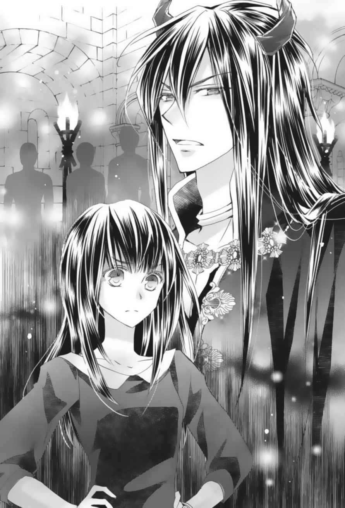

| あぶない魔王のお気に入り【SS付】【イラスト付】 神様、話が違います！ (フェアリーキス) | |
| 葉月クロル | |
| 株式会社ジュリアンパブリッシング (2017) | |
この作品はフィクションです。
実際の人物・団体・事件などに一切関係ありません。
序章
手術台に横たわった小 松 崎 香 苗 は、幾 分 ぼんやりした目で無影灯を見上げていた。左腕に刺さったチューブの先につながった点滴の中に、気持ちをリラックスさせるための薬が入っているのかもしれない。手術室にはバッハが流れている。
これから、帝王切開による分 娩 が行われるのだ。
「小松崎さん、ご気分はいかがですか？」
中年の看護師が香苗に尋ねた。
看護師の笑顔にやや戸惑うような緊張が見られるのは、この手術が難しいからではない。
「痛みは感じませんから大丈夫ですよ。ゆったりとした気持ちで呼吸していてくださいね」
香苗は頷 き、ようやく可 愛 い我が子に会えるのだと思うと不安の中にも期待と嬉 しさが感じられて、顔を綻ばせる。
可愛い可愛い、わたしだけの赤ちゃん。
文字通り「わたし」だけの赤ちゃん。
『この娘をあなたに託したいのです。引き受けてもらえますか？』
柔らかな笑顔の白い人が言った。
『この子はあなただけの娘になります』
その手には、淡く輝く蒼 い光。
小さな魂だった。
わかりました、と香苗は引き受けた。
天からの預かりもの、大切に育てます。
「それではオペを始めます」
医師が宣言した。
香苗の腹部が切開され、何事もなく子どもが取り上げられた。赤ん坊はしっかりと肺に空気を吸い込むと、大きな声で泣いた。みるみる身体 の色が赤くなっていく。
何事もないというのに、その姿を見た医師、麻酔科医、助産師、看護師からは、ため息のような声が漏れた。
「やはりこれが......映っていたのか」
「先生、ありえないことですが......でも、母子共に異常はありません。順調な分娩です、それでいいじゃないですか」
「しかし......記録には残しておくんだ。だが、このことは他言無用に」
「......もちろん、わかっています」
医療職たちは囁 き合った。
「小松崎さん、元気な女の赤ちゃんですよ、おめでとうございます」
「ありがとうございます」
胎脂を拭き取られた赤ん坊が、香苗の胸に乗せられた。腹部の切開されたところは、医師の手で素早く塞がれていた。
「ルイちゃん、はじめまして。ようやく会えたわね」
小さな赤ん坊に声をかけ、そっと触れながら愛情を持って見つめる香苗。泣き声が小さくなり、ルイと呼ばれた赤ん坊は母親の顔をじっと見る。
「ルイちゃん。わたしの娘。よろしくね」
香苗が赤ん坊の固く握りしめた手に触れると、小さな拳が緩んで、それまで決して放さずに手に持っていたものを香苗に預けた。
「まあ、赤ちゃんの手が開いたわ！」
「これ、とても大切なものなんです。綺 麗 にして預かってもらえますか？」
それを赤ん坊から受け取った香苗は、看護師に託した。
「わかりました。ナースステーションの金庫に入れておきますからね。責任をもってお預かりしましょう」
看護師はそう言うと、生まれたばかりの赤ん坊が握りしめていたものを受け取った。
金色に輝き、七色の宝玉のついた、一センチほどの幅の腕輪。
腹部エコーにはっきりと映ったその腕輪が産道を通らない恐れがあるため、本来ならば正常分娩で大丈夫なはずのこの出産は、帝王切開で行われたのだ。
「前代未聞だ......胎児が胎内で、胎児と共に大きくなる腕輪を握って育ち、そして産まれてくるなどと......」
首を振る医師に、ベテランの助産師は言った。
「先生、出産なんてそれ自体が奇跡みたいなものですよ。今さら奇跡がひとつ加わったからって、そんなに気にしなくてもいいんじゃないですか？」
今まで何十何百とお産に関わってきた助産師は、肩をすくめて言った。
「我々の仕事は、安全な分娩を介助することで、それは成し遂げられたのですからね。ほら、ただの元気な赤ちゃんですよ」
「まあ、それもそうだな」
「うん、そうだ」
「では、無事に終了ということで、小松崎さん、改めておめでとうございます」
何も知らない赤ん坊は、母親の温かさを全身で感じて、幸福感を味わっていた。穏やかな母子の姿を、満足感に満ちた医療職たちが見守っていた。
「で、なんで24 時間で手術創が完治してるんだ!? 傷が塞がるには、普通72 時間かかるんだぞ!? なのに、こんな、わずかな傷跡さえも残らずに治っているなんて！ どこにメスを入れたのかすらもわからないなんて！」
特別室の香苗を診察した医師は、あまりに非常識な事態についていけずに、患者の前だというのに叫んでしまう。
「先生、子宮も一日で妊娠前のサイズに戻ってますが。ま、ここは穏便に、細かいことは気にしないということでどうでしょうか？」
こちらの看護師はやや驚いたものの、すぐに平常心を取り戻している。元々かなり肝の据わった女性であるらしい。
「母子共に順調な回復、それが一番大切ですしね」
「24 時間！ 24 時間とは！」
「はいはい、気にしない気にしない、生きているといろんなことがあるんです、先生、気にしたら負けですよー」
頭を抱える医師の背中を、看護師がポンポンと叩 いて言った。
「先生、ドンマイ！」
そして赤ん坊に乳を含ませながら、当の香苗が笑って言う。
「ド......ンマイ」
医師も、やや弱々しいながら返した。
その１ ルイは二十歳になりました
「ルイちゃん、お誕生日おめでとう！」
ぽん、と音を立てて、シャンパンが開けられた。ルームサービスのウエイターが、ふたつのシャンパングラスに金色のしゅわしゅわした飲み物を注いだ。
「ありがとう、ママ」
ルイは、ご機嫌でテンション高めの母親、香苗に言った。
ここはとあるホテルの高層階にある一室。もうすっかり夜も更けて、ガラス窓の外には宝石箱をひっくり返したような都内の夜景が見える。
「ねえママ、なんでわざわざ部屋をとったの？ レストランでよくない？」
ウエイターに料理のサービスを受けながら、ルイが尋ねた。香苗は確かに収入が多い方だが、散財する性格ではない。特別な日にホテルの部屋を予約して、ふたりできゃあきゃあ言いながら親子女子会を開くことはあったが、いくら成人を迎えたからといってこのような最高級のスイートをとるとは予想できなかった。
香苗は視線を夜景に向けてからルイに戻し、微 笑 んだ。
「今夜はルイちゃんの記念すべき二十歳の夜なんだから、ゆっくりと話したかったのよ。あなたがママのところから旅立つ日だから......」
ふうん、とルイは首を傾 げたが、女手ひとつでルイを育てた香苗にとっては、娘の成人はルイが思うよりも感慨深いのかもしれないな、と納得した。
「ここの料理、相変わらず美味 しいわね。今日は記念日メニューだから、一段と美味しいわ」
「ありがとうございます、小松崎さま」
ウエイターがにこやかに言い、プロフェッショナルの所作でお辞儀をした。
小松崎香苗。
日本でも屈指のジュエリーデザイナーで、海外のセレブでさえも彼女のオリジナルジュエリーを手に入れようと数ヶ月の時をおとなしく待つという。もちろん彼女は、都内にあるこの一流ホテルのお得意様だ。
「ほら、ルイちゃん、しっかり味わって食べなさい。もしかするともう二度と......」
途中で口ごもる香苗。そんな母親を、ルイはきょとんとした顔で見た。
「え？ 味わってるよ、美味しいよ、で、なに？」
「あははは、なんでもなーい！」
明るく笑う香苗に（うちのママは典型的な芸術家肌だよねー、ちょっとわかんないところがあるわ。今日は特に変だけど）と思いながら、ルイは美味しい誕生日のご馳 走 を堪能した。
「ねえママ、飲みすぎてない？」
「あら、ぜーんぜーん平気よー、まだ三杯だし」
デザートも終わり、ウエイターが食器を片づけて引き下がった室内で、香苗はまだグラスを傾けていた。もうすぐ日付が変わる。
「ルイちゃん......長いようで短い二十年だったわね」
グラスを片手にソファに座った香苗は、高速道路を走る車のテールランプを目で追いながら言った。ショートカットの髪をオレンジブラウンに染め、きちんとメイクをしてスーツを着た香苗は、とても45 歳には見えない。
「そうかなあ、わたしにはよくわかんないな」
大学二年生のルイは、普段はT シャツにジーパンといった飾らない姿のことが多いが、さすがに今夜は二十歳のお祝いのディナーということなので、ドレッシーなワンピースを着ていた。
背中まであるサラサラな真っ黒の髪に焦げ茶のまん丸目をしたルイは、身長が１５０センチと低いせいもあって高校生くらいにしか見えない。
「ルイ、ちょっとここにおいで」
香苗がソファの隣を手でポンポンと叩いたので、ルイは目をむいた。
「なにママ、まさかの説教!? 」
「違うよ！ なんでめでたい誕生日に娘に説教せにゃならんのよ」
香苗の口調も、ふたりきりだとかなり砕けたものになる。
「この二十年間であんたに教えるべきことはみーんな教えたからね！ お疲れさんでした！」
グラスを持ち上げて、香苗は元気に言った。グラスを持っていないルイは敬礼で答えた。
「はい、アザース！ って、ママ、今日はどうしたの？ なんか変だよ、いつも変だけど」
言いながらも、香苗の隣に座るルイ。
「ねえまさか、成人したからには明日からは自力で生きろ！ とか言って、わたしをうちから叩き出すわけじゃないよね？」
どちらかというとスパルタ式の教育を施す香苗ならやりかねない。
「その場合は、三日前に告知してね。持って行くものを分けてやばいもんは捨てるから」
いつ叩き出されても大丈夫なように、心身共にたくましく育てられたルイは、あっさりと言った。どうやらふたりは規格外の親子のようだ。
「まあまあルイちゃん、落ち着いて。あら、そんなにやばいもんを隠し持ってたの？」
ルイは部屋に隠してあるちょっと......いや、かなりえっちなマンガや小説を思って言った。
「男子ほどではないけれど少々、ね。で、普通に落ち着いてるけど」
すると、香苗はテーブルにグラスを置くとバッグを探り始め、中からキラキラとまばゆい光を放つアクセサリーを取り出した。
「はい。二十歳になったから、これ、あんたに返すわ」
「え？ なにこのブレスレット。すごく綺麗だけど......ママのデザインじゃないよね？」
さすがはデザイナーの娘、一目で見抜いたようだ。香苗は思わずにやりと笑う。
「当たり。これはね、あんたからの預かりものなのよ。二十年間あんたを育てて、わたしは超楽しかったよ！ 男もいないのに育児を楽しめてラッキーだったしね、ルイちゃんを産んだことはわたしにとっては素晴らしい経験だったわ。『アレ』に会ったらそう伝えといて」
「はあ？ 『アレ』？ 男もいないのにって？ 実はパパが誰だかわからないってこと？ ねえママ、本当は酔ってるの？ そのお酒の量でママの頭がとっちらかるとは思えないけどなあ......」
香苗の言葉が理解できず、ルイは怪 訝 な顔をする。
「『アレ』との約束通り、これでわたしの役目はおしまーい！ ルイちゃん、独り立ちしてもがんばるんだよ。ママは草葉の陰から見守ってるからね」
「独り立ち、草葉の陰......ま、まさか、ママ、不治の病にでもなったの!? 」
不穏な香苗の言葉に嫌な予感がしたルイは、ソファから立ち上がった。
「子育てが終わったから、今度は恋を楽しむからね。もう男をみつくろってあるから」
なんだ、とルイは再びソファに沈み込む。
「死ぬわけじゃないんだね。もうママったら驚かせないでよ！ ......ママに恋人ができたわけか」
ちょっぴり寂しいけど、ママが幸せになるなら嬉しいな、とルイは思った。
「うんうん、わたしは恋に生きる。ルイもさ、とっとといい男見つけて幸せになるんだよー、わたしは遠くから見守ってるからね」
「近くで見守ってよ！ なんで遠くなるのよ！ ママはどこに行くのよ！ ......え、もしかするとママは外国人の彼氏を作ったってこと？」
香苗は今まで海外出張に行くことも多かったので、ルイはその度にひとりで留守番をしたり、場合によっては海外について行ってついでにリゾートを楽しんだりしていた。なので、なんで今さら大げさに言うんだろう、と少し不思議に思った。
しかし香苗は、ルイの言葉に嬉しそうな笑顔を見せて答えた。
「ううん、日本人よ。15 歳下の、可愛い男。若くてピチピチで活きがよくて、とにかく元気であれとかこれとかいろいろ元気で」
ルイは顔を赤くして話を遮る。
「うわあ、生々しい話になりそうだからよそうかママ！ 二十歳になったからってわたしを高速エレベーターに乗せなくていいよ、大人の階段はゆっくり上らせてよ！ そうそう、結局このブレスレットはなに？ 綺麗で可愛いけど、石がいっぱいついててめっちゃわたしの好みだけど、もらって嬉しいけど、まずはそこから説明して」
「あー、そこからか。覚えてないだろうけど、あんたね、その腕輪を握って生まれてきたのよね」
ルイはぽかんとした顔で香苗を見た。
「はい？ ......腕輪を握って生まれてきた？」
「ある晩夢枕に神様だっていうのに立たれてさ、頼まれたのよ。あんたを二十年間育ててくれって。二十年経 ったら、傷ついた魂が元の姿に回復するから、そうしたら本来の世界に戻すんだって」
「......魂？ 本来の世界？ サーセン、訳わかりません！」
なんでママは、異世界転移ライトノベルのようなことを言い出したんだろう？ これはもしかして、二十歳のお祝いのゲームなのだろうか？
ルイはそんなことを考えながら香苗の言葉を聞く。
「実はね、ルイちゃんはこの世界の人じゃないの。二十歳になったらお父さんが誰かを教えるって約束してたよね？ そんなわけで、ルイちゃんにはお父さんはいないんだ」
「......はい？」
「ママったら、えっちをしないでルイちゃんを妊娠しちゃったー！ あはははは」
処女懐胎！ とひとりで大うけしながら豪快に笑う香苗と、顔をひきつらせるルイ。
「えっ、えっ、うえええええええーっ!? そ、それって単性生殖ってこと!? そんなんありなの!? 」
「ねー、びっくりだよね！ わたしも本当に妊娠しているのを知ったときには驚いたわ。あんたのＤＮＡを調べたら、きっとえらいことになってるね、あはは」
「いや、笑い事じゃないでしょう！ ちょっとママ、単性生殖するってことは、わたしたちは下等生物だったの？ 人間だと信じてたのに！」
「いやいや、神様の依頼だったから、むしろルイちゃんは上等生物！ うん、まあそんなわけでね」
ひっくり返って笑っていた香苗は急に真顔になり、ルイを抱きしめるとほっぺたにちゅ─────っと音を立ててキスした。
「これでお別れだけど、わたしがルイのママであることに変わりはないし、あんたのことはずっと愛してるからね。あんたはあんたの人生をがんばりな！ 詳しい説明は『アレ』がしてくれるからね。もう会えないかもしれないし、会えるかもしれないし、わかんないけどさ。ルイ」
香苗はルイの頬を両手で挟んで瞳を覗 き込んだ。
「とりあえず、いい男を見つけなさいな」
「そこかよ！」
叫ぶルイの手首に、「日付が変わる前に」と香苗は腕輪をはめた。
そのとたん、腕輪はルイの腕のサイズに合わせて縮み、七色の宝玉が光り始めた。
香苗はあっけにとられて腕輪を見つめるルイの手を握った。
「じゃあね、ルイちゃん、元気でね！ 大丈夫、あんたはママの子だから、どこに行っても大丈夫よ、楽しくやっていけるはず」
「ママ！ 待ってよママ！ 今これしゅっと縮んですごく光って......ねえ、どうしよう？」
「あとは『アレ』がなんとかしてくれるからね、加護もたっぷりつけるって言ってたから。がんばって生きてね、ママもがんばるわ」
「ちょっとママ『アレ』ってなに？」
「えーっと、なんとか神。名前は忘れたけど、偉い神様らしいから大丈夫だよ......たぶん！」
「待って待ってそれなんかあてにならないしすごく嫌な予感がするから待ってーっ！」
ルイの叫びも虚 しく、涙を押さえる（ふりをしている）香苗に見送られ、全身を七色の光に包まれたルイは異世界へと旅立ったのであった。
その２ なんとか神ではなく、デウゼフィー神です
腕輪から発する光に包まれたルイは、気がつくとホテルの一室ではなく、明るく白い世界に浮かんでいた。壁のない広々とした場所の白くて四角いラグの上に白いソファが置かれているのが見え、ルイはそこに向かってふわふわと降りていった。
「なんだか変なところに来ちゃったな。この腕輪のせい？ ......あれ、抜けないや」
ルイは腕輪を外してよく見ようとしたが、彼女の手首のサイズに縮まった腕輪は外すことができなかった。
「その腕輪は守りの腕輪、そう簡単には外せませんよ、ルイさん」
声がしたのでルイがそちらを見ると、白く輝く人物が滑るように近づいてきた。肌も、サラサラストレートの長い髪も服も白く輝き、瞳だけが深い青だ。性別は......かなり中性的だが、骨格からすると男性らしい。
「守りの腕輪？ ......もしかしてあなたが、母の言ってたなんとか神ですか？」
白く光る人間離れした美しさを持つ人物は、ルイの近くまで来ると咳 払 いをして言った。
「はじめまして。なんとか神ではなく、デウゼフィー神と言います」
「デ......ブ、でしん？」
「デ・ウ・ゼ・フィ・ー・し・ん」
「うぜー神」
「違います！ 感情を込めて変な呼び方しないでください！ 神も傷つきますから！」
神と名乗る白っぽい存在は、少し涙目になったようだ。
「だって、聞き慣れない名前なんだもん」
「あなたが本来住む世界では、ものすごく有名人です、あ、有名神 です」
「そうですか。それはよかったですね。で？」
「......棒読みはやめて......」
意外にメンタルが弱いらしい神はしょんぼりしながら白いソファに座ると、ルイにも「どうぞ」と勧めた。
「では有名神さん、さっそく説明をしてください。これはどういうことなんですか？ もしかしてここは死後の世界なんですか？」
「......ルイさん、名前を覚えてくれると嬉しいのですが」
「うぜー神さん」
「間違った覚え方はやめて！」
とうとう青い瞳に涙を浮かべるデウゼフィー神。
「デウゼフィーです、わたしの名前はデウゼフィー、デウゼフィーです、デウゼフィー、デウゼフィーデウゼフィーデウゼフィー、ああ、名前がゲシュタルト崩壊してきましたよ！ わたしは誰!? 」
自分の名前を連呼しているうちに言葉の意味がわからなくなってきたデウゼフィー神は、悲鳴をあげた。ルイは冷静に「神、落ち着け」と言った。
「それよりも、わたしが置かれた状況を簡潔に説明してください」
「......あ、はい」
頭を抱えてうんうんと唸っていたデウゼフィー神は、姿勢を正した。
「香苗さんから説明があったかと思いますが」
「ほぼありません」
「わあ！ いや、想定内、想定内」
香苗の性格を把握してルイを預けたデウゼフィー神は、気持ちを整える。
「ええと、ルイさんは、事情により元の世界で魂に傷を負いまして、そこから離れた世界に転生して傷を癒やさなければ元の世界で暮らせない状態だったのです。そこで、適任者を探し出して......香苗さんのことですが、あなたを子どもとして産んで育ててもらいました。ただ、あくまでも一時的な処置で、ルイさんがこれ以上日本で暮らそうとすると、魂に深刻な歪 みが出たり、世界に混乱が生じる恐れもあるのです。そのため、成人したタイミングで、本来のあなたの転生先であるシャンガスタの国に戻っていただきます」
ルイは腕を組み、眉をひそめて言った。
「ほう。ちなみに、ママが適任者に選ばれた訳は？」
「メンタルの強さです」
「そこかよ！」
ルイに肩をバシッとどつかれて、デウゼフィー神は白いソファーから落ちそうになり、慌てて座り直した。
「えー、これから住むことになるシャンガスタの国は日本とは違い、人々は魔法を使い、種族も人族の他に獣人、魔族、エルフ、ドワーフなど、非常にバリエーションに富んだ構成になっています」
「ほおおおおう！」
目を輝かせるルイ。ファンタジーな世界に興味津々なのである。
「ルイさんは、一応そのまま人族として向こうで暮らしていただきますが、前世で大変徳を積んでいるため、わたしの加護もたっぷりついて、何不自由なく楽しく過ごす素敵な人生になる予定です」
「ほおおおおおおおおおおう!!! 素敵な人生に!!! 」
なんたる美味しい話、とさらに表情が明るくなるルイ。
「だから、可愛い我が娘を異世界に送り出すっていうのに、ママにはまったく悲壮感がなかったんだね！ この日のために今までファンタジー物の本をわたしに山のように読ませてきたんだね！」
デウゼフィー神はにっこりと笑った。
「はい、その通りです。魂の傷さえ治ってしまえば幸せになること間違いなし、と保証しましたからね。ルイさんはまず、シャンガスタの神殿に転移していただきます。そこはわたしへの信仰が篤 いため、わたしの加護を受けたあなたを神官たちが大切に扱ってくれるはずです。神殿での生活に慣れてきたら、今度は様々な人たちの暮らしぶりを見て、どうしたいのかを選ぶといいですね」
「そうだね！ そして、獣人というと、頭にはやはり......」
「けもの耳がついてますね。お尻にはけものしっぽですね」
「エルフというとやはり...」
「美しく長命でサラサラの金髪がまばゆく、魔法が得意ですね」
「魔法、わたしも使えるの？」
「様子を見て、わたしの加護として追加していきましょう。まずは生活魔法を覚えるといいかもしれませんね、日常で便利に使えて、大きな魔法の基礎にもなりますからね」
「とってもファンタジーな世界なんだね！ やはりキラキラした存在の王族なんかもいて......」
「王家には、あなたの前世の話が伝承となって残っていますからね、デウゼフィー神の巫女 姫として敬ってもらえますし、美形揃 いの王族との婚姻を望まれるかもしれませんね」
「ああ、素晴らしいです！ 実にワンダホーな展開です！ 前世のわたし、よくやった！」
立ち上がってガッツポーズをとるルイを、デウゼフィー神は、頷きながら笑顔で見守る。
「その腕輪の加護で、あなたには誰も危害を加えられないようになっています。まずはシャンガスタに転移しましょう。あそこの神殿にはわたしも簡単に降臨できますので、今後のことはおいおい相談しながら決めていきましょうね」
「そうしましょう、そうしましょう！ では、いざ素敵なシャンガスタへレッツゴー！」
デウゼフィー神は頷くと、右手を天に向けた。白く輝く光の柱が天から降りてきてふたりを包む。
「では、シャンガスタへ！」
「はい！」
いいお返事をしたルイは光に包まれ......包まれ......。
「陛下！ デウゼフィー神が召喚した人物は、若い娘のようです」
「ただちに捕まえて、こちらに引き寄せろ。デウゼフィーから横取りするのだ」
「御意！」
「ええっ、ルイさん！ ルイさーん！ そんな、あー、しまった、持って行かれてしまった......」
そして、デウゼフィー神の信託によって召喚を知らされていたシャンガスタの国の人々は、現れるはずの巫女姫を今か今かと待ちわびていたのたが。
「おお、我らがデウゼフィー神よ！ ......あれ？」
「巫女姫さまは？ 聖なる救国の乙女は？ ......あれ？」
「......うわあああ、ルイさーん......どうしよう......」
残念ながら、神殿にある召喚の間には、肩をがっくりと落とした、いつもよりもさらに白い顔をした、頭の中まで真っ白になったデウゼフィー神だけが現れたのであった。
その３ ここ、どこですか？
さて、頼りのデウゼフィー神とはぐれたことなどつゆ知らず、ルイは光に包まれたまま異世界へと転移した。どこかに身体が着地したのと同時に、光が弱まっていき、やがてルイは年期の入った石造りの部屋の中央に立っていることに気づいた。
その部屋には照明はなく所々で篝 火 が焚 かれていて、床の上で黒い影がゆらゆらと揺れている。
「......？」
紺のワンピースを着て黒のローヒールパンプスを履いたルイは、直立したままサラサラストレートヘアの頭を傾げた。
デウゼフィー神の説明によると、神殿に現れたルイは神官たちに大歓迎されるという話だったのに、ここは、神殿と言うには雰囲気が重いというか暗いというか、地味な感じだし、ルイから離れたところから彼女の様子を窺 っている者たちも聖職者には見えないのだ。皆目つきが悪く、どことなくうさんくさい顔をしている。
角や耳が生えた者もいるのだが、ルイの持つ獣人のイメージ（例えば、猫耳にゃんにゃん娘だとか、三角お耳のわんこ系男子とか）と違って、どれもあまり可愛くない。
ルイは、ぐるっと辺りを見回して、ひとりの人物に目を留めた。一番偉そうだったからだ。
（うわあ、なにこの超イケメンは！）
ルイは驚いた。背がすらりと高く、長い黒髪に緋 色 の瞳をしたその男性は、肌は透きとおるように白く、鼻筋はすっと通り、薄い唇が冷酷そうではあるが、男性にしては美しすぎると言ってよいほどの整った顔つきの正統派の美形なのだ。
しかし彼は、赤い瞳に侮蔑を含ませ、非常に冷たい見下した目つきでルイを見ていた。
男性の身体を包むのは、黒い服に黒いローブ。所々に金色の飾りや宝石がついていて、キラキラと篝火の光を反射している。
そして、彼の頭には、ねじれた二本の角が生えていた。
開かれた男性の口から、夜の冷気が吹き抜けるような硬質の声がした。
「......なんだこの者は？ なんの力も感じない。ただの小娘ではないか。しかも、まだ未熟な子どもに見える。これが本当にデウゼフィーが手に入れようとした者なのか？」
未熟な子どもと言われたルイは口をむうと尖 らせて（性格の悪いイケメンだな）と評価を下げた。
「畏れながら魔王陛下、確かにこの娘がデウゼフィーに召喚された者です。間違いありません」
今にもひれ伏しそうな怯 え方で、威圧的な美形男性の傍らに控えていた歳をとった男が言った。顔色が、悪いを通り越して青緑色をした男は、どうやらルイをここに呼び寄せた当人らしい。
美しい男は、赤い瞳をちらりと青緑の年寄りに向け、感情のこもらない口調で言った。
「しかし、この者からは特別な力は感じ取れないし、見た目もたいしたことがない......まったく価値のなさそうなつまらん人間だ。お前は失敗した」
「か、隠された力を持つ可能性もございます！ しばしの猶予を、もっとよく調べてみれば......」
「......なに？」
魔王陛下、と呼んだ男に冷たく一 瞥 され、怯えた男はとうとう膝を折った。
「お許しください、魔王陛下！ どうか、お許しを！」
「......ヤギ？ ヤギ男？」
部屋の中央に立つルイが口を開き、言葉を発したので、美しい男の挙動に集中していた一同は、紺色のワンピースを着た幼く見えるルイに注目した。「子どもが喋 ったぞ」「親離れはしているらしい」といささか失礼な発言をしている者もいる。
「偉そうなあなたはヤギの獣人なの？ それとも、目が赤いからうさぎなのかな。うーん、でもうさぎっぽくないよねー、こんなマッチョなうさぎ、やだな」
ご機嫌ななめのルイは、ちょっと嫌みな感じで腕組みをしながら言った。
ヤギ角を持つ美しい男性は、確かに筋肉質の良い身体をしていて、うさぎの持つ可愛らしさには欠けていた。だが、彼を陛下と崇 めているらしい人々は、畏れている男に対して発せられた『マッチョなうさぎ』などという失礼極まりない言葉に驚 愕 した。
「なっ、お前、陛下に向かってなんてことを！」
「なんという無礼な人間なのだ！ 陛下をヤギやうさぎ呼ばわりするとは!? 」
「命が惜しくないのか？ それとも、単なるバカなのか？」
周りからざわめきが起こる。
そんな言葉にまったく動じずに腕組みをしながら無遠慮にじろじろ観察してくるルイを、ヤギ角のついた黒ずくめの男は氷点下の視線で見返した。
「人間。お前は誰に向かって口をきいているのかわかっていないようだな」
しかし、そんな蔑みの視線などものともしないでルイは答えた。
「そんなのわかんないに決まってるじゃん！ わかる要素がどこにあるっていうのよ、言ってみなさいよ！ だってさー、お誕生日パーティーの途中で神と名乗るちょっとアホっぽい白い男に急にさらわれたかと思ったら、そいつの話と違う訳のわかんない場所に来させられて、そうしたら今度はあんたみたいな不機嫌そうなヤギ角を頭にくっつけた黒い男に睨 まれるしさ！ なんでめでたい二十歳の誕生日にこんな目に遭わなきゃならないのよ。だいたいここはどこよ？ わたしの人徳とかでウハウハの生活をさせてくれる話はどこに行ったのよ！ くっそー、やっぱりうぜー神の言うことなんか信じなきゃよかった、話がうますぎると思ったわ。適当なことを言って、いたいけな女子大生を騙 くらかして！ だいたいあの顔、なんかうさんくさいと思ったのよね！ 妙に全体が白くて、いかにも無 垢 そうなパフォーマンスをしちゃってさ！ ねえ、あんたもそう思わない？」
「な、そうなのか。そう言われると、あれはうさんくさい顔かもしれんが......」
ルイにまくし立てられ、おまけに自分の氷点下をさらに下回る、心底冷え切った目で見返された魔王と呼ばれる男は、自分でも驚いたことに少し怯んで返事をしてしまった。
「......うぜー神だとよ。確かにあれはうぜーわ」

誰かが言って、ぷっと吹き出した。
ルイがそちらに目をやると、身長三メートルはありそうな巨大な身体に猛牛そのものの茶色い頭のついた人物が、歯をむき出していた。どうやら牛的笑いのようだ。体も、わずかな衣類と鎧 のような何かに覆われているものの、やはり茶色い毛がふさふさと生えている。
ルイは彼を見ると、それまで不機嫌だった顔を輝かせた。
「あらあら、牛だわ！ しかも、茶色い......ジャージー種の牛？ 美味しい牛乳が出る牛ね？」
「な、う、牛？ 貴様、このミノタウロスを愚弄するつも......」
思わずひっくり返った変な声を出した牛に、ルイはさらに言った。
「頭まで全部牛！ ねえ、ウシコさん、もしかして美味しいミルクが出せるんじゃない？ ちょっと分けてくれない？ わたし、ジャージー種のミルクで作ったアイスとかヨーグルトとかが大好きなの！ ビバジャージー種！」
「ウ、ウ、ウシコ、ではない！ 俺は男だ！ 乳など出さん！ たとえ女だとしても、ミノタウロスは乳牛ではないわ！」
牛頭の男は頭のてっぺんからぷしゅーと湯気を出しそうな勢いで怒った。
「えー、雌じゃないの？ なーんだ、ジャージー種の乳牛じゃないなら紛らわしい茶色をしないでよ。アイスやヨーグルトを楽しみにしてしまったわたしの気持ちはどうなるの？」
ルイは腰に手を当て、上から目線の怒りのポーズを作って言った。
「ウシオさん、責任をとってよ」
「貴様ーッ、なんで俺がそんな責任をとらねばならんのだ!? そして、俺に勝手に名前をつけるな！ ぐむむむむむ、許さん！ この無礼な小娘め、許さんぞーッ！」
牛が吠 えた。むおおおおおおおお──ッ、という、身の毛のよだつような声が響き渡った。
「おお、なんてことだ、怪力魔人のミノタウロスを怒らせたぞ！」
「あの人間、命はないな」
怒りに我を忘れ、ミノタウロスと呼ばれた牛がルイに突進した。ルイはひらりと身をかわす。何度突進されても、華麗にかわす。デウゼフィー神の加護により『誰も危害を加えることができない』ため、ミノタウロスの攻撃を難なく回避してしまうのだ。面白がって余裕で笑うルイ。
「おのれ小娘、ちょこまかと！」
牛は毛むくじゃらの両手でルイを捕まえようとしたが、ルイはまたしても身をかわすと、今度はその腕の上をぴょんぴょんと跳び、あげくの果てに牛頭のところで肩車になってしまう。
「うわあ、高い！ ウシオったら背が高いから、眺めがいいわー」
牛の角を両手で掴 み、操縦桿 のようだ。巨大な男性？ に肩車してもらうなどとても二十歳の女性の振る舞いではないが、あの香苗に育てられたルイだ。非常識さ加減が違う。
「お、おい、降りろ！ 小娘、誇り高いミノタウロスを肩車にするとは何事だ！ そして貴様、なぜそのようなところで寛げるのだ!? 」
「高くて眺めがいいからだけど」
「高くて眺めが良ければなんでもいいのか!? 」
ルイは優しく言った。
「わたし、茶色い牛が好きなの。白黒のブチもいいけど、全体が茶色いのは特にいい牛だと思うのよ」
「おお、そうか、確かに茶色い毛並みの牛は......いや違う！ 違うだろう、降りろ！ 貴様、ミノタウロスに乗って楽しむとは！ 楽しむなって言っているだろう！」
ルイの褒め言葉にうっかり乗りそうになったミノタウロスは、少し勢いをなくした声で抗議した。
「えー、ウシオさんのけち。いけず。こうしてやるー、どうだー」
ルイは角をくいくいと揺さぶった。頭をがくがくと振られたミノタウロスは「うわああああ、やめろ、気持ち悪いから！ よせ！」と情けない声を出す。
そして。牛を肩車にしたルイの無防備にさらされた白い脚の映像が、その脳裏に焼きついてしまった者がひとりいた。ふたりの様子を呆 然 としながら見ていた魔王だ。
（なんと......はしたない娘！ 牛の肩でスカートがまくれて、白くて細い脚の上の方まで見えてしまっているではないか。あの滑らかな肌に触ったら......いやいや、落ち着け、あれはまだ小娘だ）
赤い目の魔王は軽く頭を振ると、すぐに顔を引き締めて言った。
「そんなちんくしゃな小娘など魔界にはいらん。ゴミは燃やしてしまおう」
そう言うと、冷酷非情な超美形魔王は魔力で作り出した火の塊をミノタウロスに投げつけた。
「なにすんのよ、筋肉うさぎ！」
見かけによらず素早い動きで火の玉を避 けたミノタウロスに肩車されながら、ルイは文句を言った。そして、無表情のまま火の玉やら氷の礫 やらを次々と投げつけてくる筋肉うさぎ......ではなく、魔王。そして、それを避けるミノタウロス。
「っとおっ、くあっ、どうして俺はこんなに素早く動けるんだ!? そして陛下、なぜ俺の角を狙うのですかあっ、とおっ！」
どうやらルイにかかっているデウゼフィー神の加護がミノタウロスにも影響を与えているのだろう。魔王の攻撃はまったく当たらない。かわされた火の玉やら氷の礫はそのまま部屋の端まで飛び、周りで見ていた魔族たちは野太い悲鳴をあげながら逃げ惑う。
魔王は魔法による攻撃が効果を現さないことを見て取ると、予想通り、といった顔で言った。
「......なるほど。デウゼフィーの守りの力がかなり強いようだ。やはりお前は奴 にとって価値のある人間なのだろうな......」
魔王は目を細め、いったいルイがどんな力を隠しているのかと探る。
探りながら、右の手のひらを上に向けると、そこには黒い澱 みのような物が丸い形に集まり呪い玉を作り出し始めた。ざわめくギャラリー。
怨霊の顔が数十も集まったどす黒い呪い玉を見て、ミノタウロスが悲鳴のような声をあげた。
「陛下！ まさか、そのような禍 々 しきモノを俺にまで......」
「これくらいでなければ、効かぬだろう」
「いや、俺にはなにも関係が、お待ちを、陛下！」
「小娘に関わったのがお前の不運と諦めろ。なに、千年もすればお前の身体は再生されるだろう」
なぜか胸の内にミノタウロスに対する怒りが湧き上がっていた魔王は、こともなげに呟 いた。
「関わりたくて関わったわけでは、せ、千年って、陛下、お待ちを、むおおおおおおおーっ！」
ルイの白い脚が牛の肩に乗っている様子を忌々しげに見た魔王は「楽しそうだな」と底冷えのする黒い笑みを口の端に浮かべながらミノタウロスに呪い玉を投げつけた。
とたんに、どす黒い怨霊がぶわあーっと広がり、ルイとミノタウロスの身体を囲むように迫ったが。
「......こういうの、キモいんですけど」
嫌な顔をして呟くルイ。そして、彼女は右手を振り上げた。
「ていっ！」
彼女は軽いかけ声を発した。ルイは、黒い洞のような口を開けて呪いをかけようと目の前に迫ってくる怨霊たちの顔を、ひとつずつ、そして確実に、ものすごい勢いでスパパパパパパパン！ とひっぱたいて落としてしまったのだ。ひとつ残らず床に落ちた怨霊たちは「アウ......」「アウ......」「アウ......」と次々に悲痛な声をあげながら、黒い霧となって床に吸い込まれてしまった。おそらく地獄に送られたのであろう。
「ちょっと筋肉うさぎ！ これは自分の手下でしょ、ウシオさんになにするの！」
すべての怨霊を叩き落とした両手をパンパンと払いながら、味方すら冷酷に殺そうとする黒ずくめの魔王に向かって、ルイが怒鳴りつけた。
「わたしは筋肉うさぎではない」
ミノタウロスの肩にまたがったルイは、魔王を睨みつけた。
「じゃあ、うさぎじゃなくてあんたはなによ！」
「魔界の魔王だ」
「本当に根性悪ね、魔界の魔王！ さっきからわたしに喧 嘩 を売ってんの!? 」
「お前など喧嘩の相手にもならんな、このちんくしゃ」
冷静に悪口を言われてルイは顔をひきつらせた。美形に容姿を貶 されるのは非常に頭にくるのだ。
「ちん......う、うるさいわね、陰険キモ男！ あんたこそ、このルイさんの相手になんないわ！ 攻撃がひとつも当たんないくせに、偉そうにしてんじゃないわよ！ このっマジキモ男！」
「陰険キモ男だと!? ちんくしゃな小娘の分際で、このわたしに向かって陰険......キモ男、だと」
強大な力を持つ、生まれてこの方ただひたすらに畏れ崇められてきた魔王は、か弱い人間の女性に初めて面と向かって罵られ、悪口を言われて言葉を失い、唇を震わせた。
陰険なのは魔族の特性でもあるのだから仕方がないにしても、キモ男というのは容姿のみならず性格や存在そのものに対する否定である。魔王という地位もあり、容姿端麗な美形魔族であるため常にちやほやとされていた魔王を、まさかの全否定する言葉である。
ちらちらと意味ありげに白い脚を見せる女性にこんなことを言われて、彼はかなり動揺していた。
「こんなに可愛い女性に向かって、物騒な物を投げて攻撃したあげくちんくしゃな小娘ですって!? このひょろひょろヤギ角陰険キモ男！」
「ひょ、ひょろひょろ......」
さらなる悪口を言われ、生まれて初めて心が傷ついた魔王は、よろりとよろめいた。
「おい、陛下に向かってなんてことを......」
ミノタウロスは自分にまたがっている、無謀な少女（に見えるが二十歳）に注意した。
「黙れウシオ！ さあ、わたしが楽しいシャンガスタ生活を送るのを邪魔した奴、前へ出ろ！」
召喚者は、ちょっと前へ出るどころか大きく後ろに下がった。魔族ともあろう者が、ルイのことをちょっぴり怖く思ってしまったのだ。
「ウシオ、アイツを捕まえるのよ！」
「呼び捨てか！ 俺はウシオではないし、なんで貴様ごときの言うことを聞かねば......ああああ、角を揺さぶるな！ わかったから！」
ルイを肩車したミノタウロスは、彼女の言う青い顔の召喚者を捕まえて引きずり出した。
「貴様、この迷惑な小娘を引っ張ってきた責任をとれ！ まったく余計なことをしやがって」
「いいえ、わたくしはあくまで陛下のご指示に従っただけで......あわわわ」
巨漢の牛男に宙吊 りにされた上に魔王にギロリと睨まれて、青緑色の男はさらに青くなった。
「こんな小娘を魔界に置いておくと、ろくなことにならん！ 貴様、責任をもって送り返せ！ デウゼフィーの野郎に押しつけちまえ！ 陛下、いいですね？」
ミノタウロスに言われ、瞳に心の傷をちょっぴり残した魔王が首を縦に振ろうとしたとき。
「それは得策ではございません」
地を這 うようなか細く気味の悪い声がして、魔王の影の中からゆらゆらと黒い物が立ち上ってきた。それは、魔王の背と同じくらいの高さに来ると、グレーの人物になった。薄ぼんやりした身体に白い顔の、不気味で陰気な男だ。
「チェルノボグ。訳を言ってみろ。わたしはこんなちんくしゃな小娘をもう目に入れたくない」
「それなら見るな、陰険キモ男、ばーかばーか」
非常に大人げない二十歳、それは小松崎ルイ。
ミノタウロスに肩車されながら、アカンベーをして、魔王のこめかみをヒクヒクさせる。
冷酷非情で皆に恐れられる美形の魔王なのに、高いプライドがすっかりルイに引きずり落とされているところが不 憫 である。思わず目頭を押さえてしまう魔族すらいた。
「陛下、ここは冷静に利益をお考えください。今この娘を戻してしまったら、デウゼフィーの思う壷 でごさいましょう。腹の立つ人間ではありますが、力を復活させる鍵であるのかどうかを見極めた上で処分なされた方が賢明でございます。帰してから後悔してもどうにもなりませんので」
「......まあ、そうではあるな」
「牢 にでも入れて、尋問なさっては......と言いたいのですが」
影は薄い身体を魔王に寄せ、耳元でこっそりと囁いた。
「陛下、この娘には守りの力が強くかけられているため、拷問できません。となると、自然に陛下に協力したくなるように仕向けられるとよいかと」
「どういう意味だ？」
「つまり......」
影は意味ありげに口元を歪めた。
「身も心も陛下のものにしてしまえばよいのです。魔界一の魅力的な陛下にかかれば、あのような小娘、コロッと」
「うむ、コロッと」
「そうすれば、煮るなり焼くなり陛下のお心のままに......」
「......そうだな。あのようなちんくしゃな小娘には食指が動かんが、仕方あるまい」
実はルイの白い脚が気になって仕方がないのだが、そんなことはおくびにも出さずに言う魔王。
「あれでも磨けばひか......りそうにありませんな。どんな美女も思うままの陛下には、ゲテモノ食いの妙、とでも思っていただくしか......」
影は、非常に気の毒そうに言った。魔王は「あれはゲテモノだ」と小さく頷いた。
「では、まずはあの小娘をもてなして、懐柔してしまいましょう」
「ちょっとそこ！ なにをこそこそ話してるの？」
ルイが訝 しげに言った。
「いえ、我々には誤解があるようだと話しておりました」
陰気な影男が、精一杯愛想よく言った。
「わたくしは魔界の宰相を務めさせていただいております、チェルノボグでございます。どうかお見知りおきを。お嬢さま、魔界へようこそ。我々はお嬢さまを歓迎させていただきます」
その４ 目指すはウハウハ生活？
「お嬢さま、世界を渡ってこられてお疲れでしょう。今すぐにお部屋をご用意いたしますので、お待ちくださいませ」
影の薄い影男のチェルノボグはルイに向かって慇 懃 に言うと、部下らしき者に何事かを命令した。
「ふうん、ようやく話のわかる人物が出てきたわね、安心したわ。......ちょっとウシオさん、もう下に降りたいから屈 んでくれない？ この高さから飛び降りたらケガをしちゃうわ。わたしはか弱い女の子なんだから」
ルイの言葉を聞いたミノタウロスは、当然ながら鼻息荒く肩に乗っかった女性に文句を言う。
「どこがどうか弱いのだ！ 貴様はこの無敵のミノタウロスに膝をつけと言っているのか!? なんたる無礼千万な奴め......」
するとルイは、身体をくねくねさせて『恥ずかしがる女子のポーズ』をとって言った。
「や、やだ、ウシオさんったら降ろしてくれないなんて、そんなにわたしを手放したくないの!? なんて情熱的な牛なの！ んもう、みんなの前でそんな、恥ずかしいわ......」
ルイが頬に手を当てて「きゃ」などとさらなる恥じらいのポーズを作ると、ミノタウロスが「ぶふぉおおおおおーッ！」と変な声を出した。
「き、き、貴様！ な、なんて、なんてことを」
「やーん、もう、ウシオのバカバカー」
あくまで可愛い照れ屋さんを貫き、ミノタウロスの後頭部を甘えたようにぽかぽかとぶつルイ。
大きな牛の鼻からは、激しい鼻息がぶほぶほと出て止まらない。ミノタウロスの動揺はかなり激しく、その頭からは熱気すら噴き出していた。
「バ、バカとか、なにを、きっ、貴様！ 貴様！ 貴様！」
「あん、照れないでルイって呼んでもいいのよ、ウ・シ・オ・さ・ん」
「だーっ、だから俺はウシオではないし、ぐふうっ、違う、て、照れているわけでもないし、ぶほおっ、なぜ貴様を親しげに呼ばねばならんのだーッ！」
顔が毛で覆われていなかったら、ミノタウロスの顔が真っ赤に染まっているのが見えたであろう。
誰が見ても、ミノタウロスは照れていた。
本人にはまったくその気がないというのに、照れていた。
向かうところ敵なしと言われる恐ろしい牛の魔人、怪力のミノタウロスが、肩に小さな女性を乗せて「茶色い牛は好き」などと言われたあげく頭を優しくぽかぽかと叩かれるなど、一生のうちにあるはずもない状況であり、彼はどうしたらいいのかわからなくなってしまったのだ。
しかも、ルイはワンピース姿なのである。彼の肩には、すべすべした二本の脚が乗り、視線を下に向ければそれが見えるのだ。
ああ、恐るべし、現役女子大生ルイの精神攻撃。
あまりにも女性に対して免疫のないミノタウロスはすっかり頭に血が上ってしまい、鼻息荒くあわあわと訳のわからないことを口走っていたのだが、そんなミノタウロスに、ブリザードよりも冷たく凍った声がかけられた。
「......楽しそうだな......ウシオ...」
声の主の視線はなぜかルイの脚に釘 付 けになっている。
「俺はウシオじゃねえし全然楽しくなどっ、貴様！......え、ああっ、陛下!? まさか、今俺に言ったのは魔王陛下!? 」
ミノタウロスは、この魔界で何よりも恐ろしい存在がにこりともせずに自分たちを見ていることに気づき、背筋を凍らせた。
「そうだ。わたしが、楽しそうだなと、言ったのだ」
そんな脚を肩に乗せたりして、と小さく呟く声は誰にも聞こえなかったのだが、ほんの少し目元を赤くしながら酷 く冷ややかな声で話しているのは確かに魔王である。
「こ、これは、とんだご無礼を！ 陛下、申し訳ございません！」
顔をひきつらせて謝るミノタウロス。誰よりも強い力を持つ彼さえも畏れ敬う男、それが魔界の魔王なのだ。
「別に......わたしは怒ってはいないが......」
そう言う魔王は怒っている。絶対に怒っている。
どうして魔王が怒るのかまるで心当たりがないのだが、確かに怒っている。その事実にミノタウロスは焦った。
魔王は巨大なミノタウロスと、肩車されたままちょこんと首を傾げて彼を見つめる少女のような女性を、そして一番長くその脚をじっと見つめていたが、やがてふっと目を逸 らした。
「......チェルノボグ、あとは任せた」
「御意」
どちらかというとビジュアル的に美からかけ離れた者たちが集まる中、ひとりだけ群を抜いて美しい青年の姿をした魔王は、ふたりに背を向けると、篝火が置かれて黒い影があちらこちらにゆらゆらと揺れる、不気味な雰囲気の部屋から退出してしまった。
「な、なにゆえ......魔......王......陛下......」
魔王の不興を買ってしまったと感じたミノタウロスは、その後ろ姿を呆然と見送った。
扉の外に出る直前、魔王は振り返った。
「ウシオ、仲が良いようだから、お前がその娘の世話係をやれ」
「......そんな、仲など、仲などまったく良く......陛下ぁ......も、もおおおー」
去りゆく魔王に向かって、牛は悲しげな鳴き声を出した。
「こちらでございます、お嬢さま」
「あら、ありがとう。......ウシオさん、ウシオさんてば」
チェルノボグに促され、ルイは肩車をしているミノタウロスの角をくいくいと揺さぶって合図をした。敬愛する魔王に見放され、ショックを隠せないミノタウロスは、ルイに操縦されるまま部屋に重い足を踏み入れる。
「なぜだ......なぜ俺がこんな目に......」
魔族は人間よりも体格がいい者も多いので、建物の天井が高く、扉も大きい。ミノタウロスは３メートルの身長があるが、軽く身を屈めるだけでルイを肩車したまま部屋に入ることができた。
「なかなか素敵なお部屋じゃない。さっきの妙におどろおどろしい感じの部屋だったら、どうしようかと思ってたけど」
「あれは、魔法の儀式を行う関係で、いろいろと制約のある特殊な部屋でしたからね。魔界といえど、基本的にはあまりシャンガスタと変わりはないのですよ。ただ、住む者が魔族だというだけで」
「ふうん......魔族だけが魔界に住んでいて、あのうぜー神を信仰していないってことかしら。ねえウシオさん、いい加減に降ろしてよ」
半ば意識が飛んでいるミノタウロスは、自分にまたがる女性の腰を両手でそっと持ち上げると、床に降ろした。
「あら、ありがとう。ウシオさん、親切ね」
「......ウシオでは......しかし、魔王陛下にまでウシオと呼ばれて......」
「魔王の言うことは絶対なのかしら」
ルイが尋ねると、いつも陰気な影男が言った。
「そうです、魔王陛下は魔界の頂点に立つお方ですから。リデル」
「......はい、お兄さま」
チェルノボグに呼ばれ、家具の影からほっそりした女性が現れた。
「お嬢さま、わたしの妹のリデルです。お嬢さまの身の回りのお世話をいたします。ミノタウロスは世話係兼護衛としてお側 に控えさせますが、なにぶんこの巨体、普段は廊下に待機させておくとよろしいかと思われます」
「そうね、ウシオさんがいると、確かに部屋が狭いのよねー」
「そういうことなので、ミノタウロス」
チェルノボグが廊下を指さすと、ミノタウロスはややふらつく足取りで廊下に出た。
「服なども揃えておりますが、細かいサイズなどはこのリデルが合わせます。わたしはこれで失礼しますので、お嬢さまはどうぞお茶など召し上がって、ごゆるりとお寛ぎください」
そう言うと、影男のチェルノボグは部屋を出て行った。
「......あの......お茶を、お淹 れしても」
存在感のないリデルが、恐る恐るルイに声をかけた。何しろ、あの恐ろしい大男のミノタウロスにまたがって、おまけに彼をいいように使っていた女性なのだ、どんなにすごい人物なのだろうかとビクビクしてしまう。
「ありがとう、いただくわ」
香苗ママに育ちが良く見えるように躾 られているルイは微笑んでみせ、お嬢さま然として言った。そして、部屋の様子をあちこち調べながら、リデルに話しかける。
「あなたは、さっきの影から出てきた男の妹さんなの？」
「は、はい。影女のリデルと申します......」
影が薄い影女は、弱々しく言った。
「影女っていう種族なのね。......ちょっと存在感がないのね」
「も、申し訳ございません！ ご用の際には呼んでいただければ、すぐに現れますので」
「別に責めてるわけじゃないのよ、リデル。わたしのことはルイと呼んでね。訳のわかんないところに来ちゃったから、女の子の友達ができて嬉しいわ」
「お、お嬢さ......ルイさま！ こんなに影の薄いわたくしの名前を覚えてくださるなんて......しかも、お友達などと、畏れ多い......」
存在感のなさから、いつも蔑ろにされがちな影女のリデルは、感激に声を震わせた。
「あなたはきっと種族の特性で存在感がないのね......あ、いいもの見ーつけた」
ルイが鏡台に置かれた箱を開けると、そこにはキラキラと輝くアクセサリーがたくさん入っていた。魔王の心証を良くするためにチェルノボグが用意させた宝石だ。
「ちょっとこっちに来てよ、リデル。あなた、可愛い顔をしてるんだから、髪を上げるといいよ」
「え、あの、ルイさま」
たおやかなリデルはたくましいルイにぐいぐいと引っ張られ、鏡台の前に座らされた。
「こうして顔を出してリボンで留めて、イヤリングをつけて、首にチョーカーを巻くと......ほら、全然存在感が違うじゃないの！」
ルイはリデルの顔の前にかかった髪を後ろに束ね、可愛らしいリボンで結んだ。そして、宝石箱の中からピンクの宝石のついたアクセサリーを選び出し、リデルにつけた。
「あ......ルイさま、わたし......」
鏡の中の自分を見て、リデルは目をみはった。顔の周りにちらちらと光が動き、リデルの白い肌を輝かせている。いつも顔色の悪い影女のリデルは、頬をほんのりとピンクに染めた。
「な、なんだか、存在感があるような気が......」
「すごく可愛いわよ！ これからはずっとこうしてなさいよ」
「でも、このリボンとアクセサリーは、ルイさまのための......」
「使いたい人が使えばいいよ。文句を言われたら、わたしがつけるように命令したって言いなよ。いいね？」
「でも、わたくしのような者に、畏れ多くて......」
「影が薄いとつきあいづらいから、わたしが無理矢理そうさせてるのよ！ わかった？」
「あ、あの......はい、あり、ありがとうございます......」
ルイに論破されたリデルは小さく頷き、小さく笑った。その様子が可愛らしかったので、ルイも嬉しくなって笑った。
「これからよろしくね、リデル。友達ができて嬉しいわ」
「わ、わたくしも、すごく嬉しいです、ルイさま......」
影女のリデルには、ルイが光り輝く太陽の化身のように思え、このお嬢さまにずっとずっとお仕えしたいと、影の薄い影女にしては珍しく、強く強く、とても強く思った。
「リデル、あの召喚された娘はどう......え？ リデル？」
報告に現れた妹に話しかけながら振り向いたチェルノボグは、いつもと様子が違う彼女に思わず声を失った。そんなリデルは、兄に向かって笑顔で言った。
「お兄さま、ルイさまは、とても良い方でございます！ わたくし、誠心誠意、ルイさまにお仕えいたします！ どんなことがあってもルイさまの味方をいたしますから！」
「リデル、お前は本当にリデルなのか？ そ、存在感が強い......」
顔を出して、アクセサリーをちらちら光らせた妹が、強い意志を込めた声で宣言したのを聞いて、兄のチェルノボグは戸惑った。
「お前の役目は、あの召喚された娘が陛下に協力的になるよう、お膳立てを......」
「わたくしの役目は、ルイさまが幸せになるようお手伝いすることですわ！」
生き生きとしてすっかり人が変わったような妹の姿に、兄としては嬉しく思いながらも「いやいや、魔王陛下のために働いて欲しいのだがなあ......」と複雑な思いを抱くチェルノボグであった。
「陛下」
「......なんだ？」
私室に戻った魔王に、チェルノボグが声をかけた。もちろん彼は、プライベートな場所で影の中から現れる、などという不作法なことはしない。ちゃんとドアをノックしてから入ってきたのだ。
まあ、ノックなどせずとも、魔王城に魔力の網を張り巡らせている魔王には、強い力を有する宰相であるチェルノボグが近づいてきたことなどわかっていたが。
魔王は、黒いローブを脱ぎ捨て、シャツにぴったりしたパンツを身につけただけの軽装で、豪 奢 なソファに物憂げな様子で身体を預け、長い脚を組み頬 杖 などついていた。威圧感はなりを潜め、ただのイケメンモデルだと言われたら信じてしまうであろう雰囲気だ。
引き締まった筋肉質の身体に、背中にかかる長く艶やかな黒髪を持った青年は、ビジュアル的に非常に美しかった。頭の角がなければ、そして強大な魔力を保有する証 の緋色の瞳でなければ、彼がシャンガスタの街に出没したとたんに女性が群がり、夢中になって貢いでくる女性たちで一大ハーレムができてしまうだろう。
そんな魅惑的な絶対王者である魔王は、今はなぜか浮かない顔である。どういうわけだか目の前に、異世界から来たという少女の白い脚がちらついて、彼の気持ちをざわめかせるのだ。
（あんな、まだ幼い子どもにすぎない娘の脚が、いったいどうしたのだというのだ！ ただ、白くて、細くて、滑らかで、触るとすべすべとして気持ちがよさそうな......いや、わたしは別にあんな子どもに興味などないわ！）
そんな魔王の胸中など知らないチェルノボグは、影の薄い陰鬱な顔で言った。
「あのルイというお嬢さまには、わたしの妹のリデルを侍女としてつけておきました。リデルならば、こちらの思惑通りに便利に動き、彼女を攻略するのに有利だと考えまして......」
少し考え通りにいっていない気がしたが、チェルノボグはそれを心にしまっておいて告げた。
魔王はそんな宰相に向かって顔色を変えずに言った。
「チェルノボグ、あのような小娘を敬意を持って呼ぶ必要などない。ちんくしゃで充分だ」
「畏れながら陛下」
影男がゆらありとソファに身を乗り出してきたので、魔王は「な、なんだ？」と眉根を寄せた。
「あのルイというお嬢さまは、デウゼフィー自らが異世界より呼び寄せた存在で、あの豪腕無敗の魔人、ミノタウロスをいつの間にか支配下に置いてしまうほどの、無謀というか非常識というか、通常では考えられないことをしでかす人間なのです。ゆえに、稀 有 な才能を秘めている可能性も充分あります。やはりここは陛下の魅力で懐柔しておく方が得策でしょう」
「......懐柔というと、つまり？」
「口説き落としてください。身も心もメロメロにして陛下の思うがままに動く操り人形にして......いや、ペット代わりに人間を飼ってみるというのもまた一興かと。あるいは......」
「チェルノボグよ」
魔王は、宰相の言葉を遮って冷たく言った。
「わたしには、あの毛色の変わったちんくしゃが、わたしに口説かれメロメロになって操られる姿がまったく思い浮かばんのだが」
「......くっ！」
痛いところを突かれた影男は顔を歪めて目を逸らし、身体を引いて言った。
「奇遇ですね、陛下。実は言ってるわたしにも、そんな姿がまったく思い浮かばないのです」
「......それでもやれと、お前は言うのだな」
影男は、すがるような目で魔王を見つめた。
「類い稀 なる魔王陛下の美貌とお力ならば、万一、もしかして、なんとか、わずかな可能性であっても、いけるのではないかと期待しております！」
それではほぼ期待できないと言っているも同然である。しかし、魔王はたとえ可能性がゼロであることでも実現させなければならない、王者なのだ。
「......今わたしは、上に立つ者としての責任の重圧をひしひしと感じている......」
魔界で向かうところ敵なしの、崇め奉られる強大な存在である魔王は、これほどの難題に立ち向かうのは滅多にないことだと思いながら言った。
「しかし、わたしがやらねば力を手に入れ損なってしまう可能性が高いというのなら......魔族の王として、全力を尽くそう」
「さすがは我らが陛下でございます！」
主の立派な態度に深く頭を下げる宰相であったが、続く魔王の言葉で思わず頭を上げる。
「......ああ、そうだな、チェルノボグよ、まずは試しにお前がやってみるというのはどうだ？ お前があの小娘に、軽くアプローチしてみるというのは」
チェルノボグの脳裏に、きひひと笑う傍若無人な黒髪の小さな女性が浮かぶ。
『うわあ、カゲオったらわたしの下僕になりたいの？ いいわよいいわよー、ルイさんが可愛がってあ・げ・る。そうねえ、まずは、カゲオにはちょっとばかり誠意を見せてもらおうかなあ......』
彼は、はっと目を見開くと頭をぶんぶんと振り「いやいやいやいやいや滅相もございません滅相も！ わたしのような存在感の薄い男には、あのような危険物......いえ、手強 い......いえいえ、ご立派なお嬢さまのお相手など務まりませんゆえ、どうかご容赦を！ なにとぞご容赦を！」と、彼にしては強い口調で言いながら魔王の影の中にズブズブと身体を沈めてしまうのであった。
「魔王とお茶会？」
「はい。陛下とお嬢さまの間には、いささかすれ違いがございましたようで。ここは友好的な関係を築くために、お茶を召し上がりながら胸の内など話し合われるとよろしいのではないかと」
ルイの部屋を訪問したチェルノボグが、腰も低く申し出た。
「友好的......ねえ」
先ほど普通なら命を落とすほどの攻撃を仕掛けてきた相手に友好的な関係と言われてもそう簡単には信じられないと、ルイは首を傾げる。チェルノボグ的には、友好的どころか男女的な関係に持っていきたいため、必死でルイを説得する。
「お嬢さまのお話によりますと、デウゼフィーはシャンガスタでの恵まれた生活を保証していたとか。しかしながら、この魔界におきましても、お嬢さまにご満足いただけるもてなしができるのではないかと考えられますし、魔界ならではの良さと申しますか、醍 醐 味 と申しますか、そのようなものもあるかもしれません。そのあたりのご希望なども陛下とすり合わせておくのもよろしいかと」
「あー、うぜー神のウハウハ生活ね！ なるほどなるほど、わたしとしては、いい暮らしができるのならば、別にシャンガスタだろうと魔界だろうと気にしないよ」
「むしろ、お嬢さまのようなワイルドな方ならば、デウゼフィーの品行方正でくそ真面目な神官たちとの暮らしよりも、バラエティーに富んだ魔族との生活の方が楽しめるのではないでしょうか？」
チェルノボグの言葉に、ルイは頷いた。
「まあ、それもそうね。ウシオさんとかリデルちゃんとか、個性的でわたしは好きよ。魔族とは仲良くやっていけそうだわ」
「むほうッ！」
護衛役で脇に立っていたミノタウロスは、それを聞いて小さく吠えてしまった。怖がられるばかりで好かれたことのない牛男は、内心かなり嬉しかったのかもしれない。一切表には表さずに、しかめ面をしてみせたのだが、つぶらな瞳が輝いてしまっていた。
リデルに至っては、ただでさえキラキラとアクセサリーを光らせて存在を主張しているというのに、敬愛するルイに好きと言われた嬉しさに、影とは思えぬ輝く笑顔を見せてしまい、兄に「ま、眩 しい！」と呟かれてしまう。
「お嬢さまに対しては、いささか厳しい態度をとられた魔王陛下ではありますが、あのお方は魔力の渦巻く、荒っぽい者も多いこの世界を実力で統治なさっている、偉大なお方なのです」
「厳しい態度っていうか、すっごく失礼なんだけど。そしてあんた、あの陰険キモ男をさりげなーく持ち上げて、なにを企 んでるの？」
ルイに図星を指され、チェルノボグはうろたえた。
「い、いえ、なにも企んでなどおりません。ただ、我らが尊敬する陛下に対して誤解があってはいけないと、ただそれだけでございます」
「ふうん......」
当然のことながら、ルイはうさんくさいものを見るような表情でチェルノボグを見た。
「ま、いいわ。ここに腰を落ち着けるなら、あの陰険キモ男との関わりは避けられなさそうだし、万一どうにも我慢ならなくなったら、シャンガスタに行っちゃえばいいしね」
「ル、ルイさま、そんな、ここからいなくなってしまわれるのですか!? 」
影女の侍女リデルは、自分を照らす太陽と崇めるルイに置き去りにされてしまうのかと怯えぶるぶる震えた。宝石の使われたイヤリングとチョーカーが光を跳ね返して、リデルの顔周りで光った。
「どうかその時は、わたくしもお連れくださいませ！ リデルは影女でございますので普段はルイさまの影に身を潜めておりますし、食費もかかりませんし、身の回りのお世話をさせていただければそれで充分ですので」
「おやおやリデルたんったら、涙目になったりして！」
ルイは背伸びをすると、自分よりも背が高い、ひょろりと痩せた影女のリデルの頭を手で撫 でた。
「最悪の場合の話よ。そうだね、そうなったら、シャンガスタにはリデルたんも連れて行こうかな」
「はい！ 必ずやルイさまのお役に立ちますので、是非ともそのようにお願いいたします！」
チェルノボグは、胸の前で両手を組み合わせてルイにお願いする妹の姿を見て（影女のお前がそんなにも強く自己主張をするとは......どれだけお嬢さまが好きなのだ？ 兄よりも好きなのか？）と少し寂しく思った。
親睦のためのお茶会ということで、リデルは腕によりをかけてルイを着飾った。ルイの黒く長い髪には鏝 が当てられ、くるくると巻かれてからハーフアップに結い上げられて、リボンと赤い薔薇 の花で飾られた。顔の脇にもカールした髪が下ろされて、ルイの小さく白い顔をくるんくるんと縁取った。リデルがルイのために選んだのは、ふんだんにフリルを使った濃い臙 脂 のドレスだ。しっとりした赤味がルイの黒い髪と丸い茶色の目を引き立て、ストレートヘアに紺のワンピースのときは座敷わらしに近かった彼女が、薄く化粧を施され、華やかなデザインのドレスをまとうと、なんとビスクドール風の美少女になった。
そう、性格にかなり難があるため魔界の者たちは気づかなかったのだが、ちゃんとした格好をしたルイは、かなり可愛い美少女風の美人だったのである！
「まあああああああ、そうではないかと思っておりましたが、ルイさまはとてもお綺麗ですわ！」
ネックレスやらイヤリングやら、光る装身具をふんだんにルイにつけ、「リデルたーん、今わたしは人間クリスマスツリー状態だね！」と言わせて、リデルは大満足で頷く。
「クリスマスツリーというものがなにかわかりませんが、ルイさまはどんなに輝く宝石をつけても、それに勝る輝きを持つお方。アクセサリーに負けておりませんわ！」
「ママがジュエリーデザイナーだったから、宝石には馴 染 みがあるんだよね。アクセサリーのモデルっぽいことをしたこともあるし。だから、宝石慣れしてるのかもしれないね」
確かに、どんなに大きな石のついたネックレスをつけても怖 じ気 づくことがないため、ルイの独特の存在感は薄れない。むしろ、宝石の方がルイの輝きを受けて、彼女の魅力を反射しているような雰囲気になるのが不思議である。
「ルイさまならば、あのお美しい魔王陛下の隣に立たれても、まったく見劣りしませんわね」
「陰険キモ男の隣に立つと、即、戦いが始まるからね。わたしは負けないよ！」
片や美しさの勝負、片や腕力の勝負なので、実は会話が成り立っていないふたりなのである。
「そろそろ兄が迎えに来ますので......」
リデルがそう言ったとたん、部屋の扉がノックされた。
「兄ですわ」
魔力の波動でお互いがわかるため、リデルは扉を開けて部屋に宰相チェルノボグを招き入れた。
「ルイお嬢さま、ご案内を......へっ？」
ゆらゆらふわふわと部屋に入ってきた影男が、瞬間冷却されたように動きを止めた。
「は？ ......ルイ、お嬢、さま......？」
「あんたの妹に、クリスマスツリーにされたよ」
口を開けば、やっぱり残念女子大生だ。チェルノボグは、目の前の美少女寄りの美女が『あの』ルイと同一人物だと認め、改めて驚く。
「い、いやはや、お綺麗でございます、お嬢さま！ このチェルノボグ、影男でありながら思わず地面から離れそうになりました。ああ、いやはや、不覚！」
いつもよりも激しく左右に揺れて、動揺を押し隠せない影男。
「おい、なにをやっている!? 早くしないと魔王陛下の不興をなぜか俺が買うことに......？」
チェルノボグが入った扉から、部屋の中に牛の頭を突っ込んだミノタウロスがルイを見て固まり、そして「むおおーっ!? 」と吠えた。
「貴様、何者だ？ なんということだ、小娘はどこに行った？ まさか、ここから逃げ出してデウゼフィーのところに行ったのか!? 護衛兼見張りの俺が小娘に出し抜かれるとは、くっ、陛下の機嫌がまた悪くなってしまうではないか！」
「小娘ってわたしのことでしょ、ウシオさん？」
「俺はウシオでなくミノタウロスだし、小娘とは異世界から来た人騒がせな黒髪の......おお、お前も黒髪......まさか......？」
ミノタウロスは、目の前のドレス姿の美女をまじまじと見てから妙な声を漏らし、後ろにずさっと身体を引いた。バギッと嫌な音を立てて、扉の枠が牛の角に引っかけられて壊された。
「な、なんと、お前、小娘か!? お前は人間でなく、あやかしだったのか!? 」
「リデルたん、ウシオが変。彼はわたしに喧嘩を売ってるの？」
「いいえ、ルイさまがあまりにお綺麗なので、動揺されているのではないかと思われますわ」
まったく自覚がないルイは「えー、それは違うんじゃない？」と首を傾げる。
「あやかしめ、このミノタウロスを誑 かそうとしても、そうはいかん！」
「......ウシオ、ちょっと顔を貸しな」
わざとらしい笑顔のルイが指先でちょいちょいっと呼ぶと、ミノタウロスは茶色い牛頭をルイの顔に近づけてその顔をまじまじと見た。
「......あれ......やっぱり小娘......!? 」
「とりゃ！」
「うもおっ！」
ルイがミノタウロスの眉間にチョップを落とすと、つぶらな牛の瞳は痛みで涙目になった。
「くっ、このミノタウロスに一撃をくらわすとは、やはり異世界の小娘か！」
両手で眉間を押さえ、ちょっと可愛いポーズになった牛が言った。
「変なウシオね。さ、魔王のところにさっさと行ってお菓子食べて、さっさと帰ろう」
ドレスの裾を両手でひょいとたくし上げたルイが部屋を出て行こうとしたので、リデルが「ルイさま、脚！ 脚が見えてます、まずいです！」と注意して、まだ左右に揺れている兄にエスコートをさせた。その後ろから、まだ衝撃から醒 めないミノタウロスが「も......もおおお？ もお？」と何やら呟きながらついて行った。
その５ 魔王と謎の女性
とんとん、と、お茶会用に用意された魔王城の一室の扉を、影男のチェルノボグがノックした。
「入れ」
魔王のいかにも偉そうな返事が聞こえたので、作法として従者兼護衛兼見張り役のミノタウロスが扉を開け......るはずなのだが、残念ながらこの牛頭の男は腕力自慢の戦士であり、優雅なお作法などにはあまり関わりのない生活を送ってきた。しかも、今現在、ルイの変わりっぷりで動揺して、あまり状況が呑 み込めていない。
ぼーっとドレス姿のルイを眺めているミノタウロスに、チェルノボグは「扉！ ミノタウロス、扉を開けてください！」と声をかけるのだが、頭はいいが迫力と存在感に欠ける影男の言葉などミノタウロスの耳に入らない。
このまま部屋の前にぐずぐずと立っていたりしたら、また魔王が機嫌を損ねるのではないかと思ったチェルノボグがやきもきしていると、なんと後ろからしずしずとついてきたおとなしい侍女のはずのリデルが、いきなり足でミノタウロスの膝の後ろを蹴った。
「もおっ！」
「リ、リデル!? 」
あまりにも大胆な妹の振る舞いに驚く兄。
膝がかっくんとなったミノタウロスに、リデルは「早く扉をお開けください、陛下をお待たせするとは失礼千万でございます！」と注意した。
「お、おお、すまんな」
ミノタウロスは慌てて扉を開けた。
リデルは何食わぬ顔でまたルイの後ろに控え、チェルノボグは（リデルが変わってしまった......お嬢さまの影響力は、影女の存在感のみならず、内気な性格までも変えてしまうほどなのか......なんと恐ろしいこと！）と内心で震え上がった。
「失礼いたします。陛下、ルイお嬢さまをお連れいたしました」
ルイをエスコートして入室したチェルノボグは、白いシャツに黒のパンツ、そして、黒い上衣を羽織って前回よりもややカジュアルな雰囲気の魔王に声をかけた。
ちなみに、このお茶会では魔王にフレンドリーに振る舞ってもらい、ルイを懐柔しようというのがチェルノボグの作戦である。
「そうか。よく来た......」
整ってはいるものの無表情な白い顔に赤い瞳が宝玉のように輝く魔王は、客に招いたルイに招待主として声をかけ、その場に凍りついた。
（おや、まさか陛下までお嬢さまの変わりように驚かれているのか？）
確かにドレスを着て化粧を施したルイはうって変わって美女になったが、人外の美貌の主が驚愕するほどだろうか、と不審に思うチェルノボグ。
「ル......」
「陛下？ ......陛下!? 」
チェルノボグが慌てたことに、長い脚で素早くルイに近づいてきた魔王は、なんとその腕で彼女を抱きしめてしまったのだ！
「わあ、なにすんの!? 」
予想外のことにさすがに驚き、魔王の腕に包まれて胸に抱かれたルイは赤くなって声をあげた。
「セクハラ！ これはセクハラよ！ ただちに放しなさい」
「ルーゼリア！ ああ、お前はルーゼリア、なぜ......」
「はい？ それは誰のこと？」
美形青年の胸から逃れられないルイは、訳がわからずに魔王に問いかけ、じたばたと暴れた。
「ちょっとあんた、本当に悪ふざけはやめてよね、セクハラ変態！ 変態キモ男！ 放して！」
「ルーゼリア！」
「やーめーてー、マジやめてーっ！」
しかし、デウゼフィー神の加護は、あくまでもルイに害をなす者にしか発動しない。なので、なぜか情熱的になった魔王にいきなり抱きしめられても、ルイは防御できず、ひたすら叫ぶしかなかった。
「誰か助けてよ！ ウシオさん！ ウシオさんったら！」
ルイはミノタウロスに助けを求めて手を伸ばした。
「......ウシオ、だと？」
その言葉を聞いた魔王は、はっと身体を離して腕の中の女性を見た。
「ルーゼリアではなく......お前は、小娘!? 」
「お、おう、わたしはルイさんだよ！ いきなりの変態行為をありがとうよ、陰険キモ男！」
小柄なルイは、涙目で長身の青年を見上げて、できる限りの怖い目つきで睨みつけた。怖いものなしの女子大生ルイではあるが、実は男性とのおつきあいをした経験がなく、こんな風にイケメンに抱きしめられるなどもちろん初めてだ。威勢よく言ったものの、まだ魔王のたくましい腕の中にいるものだから、どうしていいかわからない。
「さすが陰険キモ男だな。まともな攻撃が効かないと気づいて、こんな卑 怯 な手段に出るとは、さすがのわたしも思わなかったわ」
「......あ、ああ、いや違うのだ。これは！」
自分がルイを腕に囲い込んでいることにはっと気づいて、ぱっと手を離した魔王は大きく後ろに後ずさった。うろたえるその顔は、ほんのりと赤く染まっている。
「違う、単なるその、人違いだ！ 人違いをしたにすぎん！ か、勘違いするな！」
「じゃあ、誰と間違えたのよ!? 」
「それは......お、お前には関係のないことだ！ ......そう、なぜ間違えたりしたのだ......こんな小娘と......」
ルイの顔を見つめ、力なく呟く魔王。
「違う、あれとは別人だ......」
「ちょっと！ 挙動不審の魔王！ なにを勘違いしたのか知らないけど、人をお茶会に招いたんなら、訳のわからないことを呟いていないでさっさとお茶を出しなさいよ！」
ドキドキして真っ赤な顔をしているルイが叫ぶと、まだ納得のいかない顔の魔王は「あ、ああ」などと言いながら素直にルイをテーブルに案内した。
「うまく化けたな」
「人を妖怪みたいに言わないでくれる？」
優雅にティーカップの持ち手を摘 みながら、ようやく平常心を取り戻した魔王とルイが、言葉の裏にトゲを隠した会話をする。
すると、魔王の影に潜んでいたチェルノボグが魔王の耳元で言った。
「陛下、このお茶会の主旨をお忘れなく！ 誉めて誉めて誉めまくるのですよ。誉められて嫌な気持ちになる女性はいませんからね」
「......今のは誉めたことには......」
「けなしてますね」
「そ、そうか」
その地位と力と美貌で誉められてばかりの魔王は、他人を誉めるという経験がほとんどなかったようだ。チェルノボグにさっそくダメ出しをされて、無表情ながら、へこむ。
「あー」
魔王はこほんと咳払いをして、ルイに向かって言った。
「その、ドレスは、なかなか、似合っていると言えなくもないと考えられるな」
「............？」
非常に回りくどい言い回しの意味を考えて首を傾げてから、ようやく誉められたらしいことに気づいたルイは、目を細めて魔王を見て言った。
「なにを企んでるのよ、陰険キモ男」
「わたしの名は陰険キモ男ではない！」
魔王は大きな声で言った。
「じゃあ、なんて名前なのよ」
「我が名は、ジルナシアスだ。魔王ジルナシアス」
「ふうん、名前があったんだね、ジ......ルシアシアシアシアシ」
「ジルナシアスだ。アシアシアシアシではない」
「アシアシアシアス」
「違う！ ジルナシアス！ ジ・ル・ナ・シ・ア・ス」
「.........ア・シ・ア・シ」
「アから始めるな！ お前は二文字以上の名前は覚えられんのか!? 」
「そんなことないわよ！ 日本人の名前なら全然おっけーだけど、横文字は苦手なの！ でも、覚えてるよ、リデルたんとかウシオさんとか」
「リデルはともかく......ウシオではなくミノタウロスなのだが......」
さりげなく突っ込むジルナシアス。生まれて初めての突っ込みなので、いささか弱気である。
「あと、影男のチェルノボグ」
「なんと！ なぜその名を覚えたのだ!? 長い名前なのに！」
叫ぶと、魔王は自分の影を靴の踵 でグリグリと踏みつけた。
「どういうことか説明しろ、チェルノボグ！」
「無実です、誤解です、わたしはなにも、いたいいたいいたい」
哀れなチェルノボグは、魔力のこもったグリグリに悲鳴をあげた。
「おい、ちんく......ルイとやら！ なぜ我が名を覚えない!? 」
そして、今度は上から目線でルイを責める魔王ジルナシアス。
「え、それ、そんなに重要なことなの？ うーんと......」
魔王があまりにも真剣な顔で抗議するので、素直なルイは斜め上を見て考えてから言った。
「ア......から始めずに、ええと、ジル。ジルでいい？」
「お、そうだな、よいぞ。お前には特別にジルと呼ぶことを許す！」
なんとか名前を覚えてもらえた魔王ジルナシアスは、影をグリグリするのを止めてなぜか勝ち誇ったように言った。どうやら愛称で呼ばれることに気を良くしたらしい。チェルノボグは影の中に潜り、嫉妬に満ちた魔王からの攻撃で痛めたところをさすった。
「そうだな、もっと茶を飲め、ルイよ。ほら、菓子もあるぞ。クリームは好きか？」
「わあ、クリーム大好き！」
「おい、ルイにクリームをたっぷり乗せたケーキを供せ」
機嫌のよい魔王に、ふわふわのスポンジに赤、黄、グリーンの美味しそうな果物が挟まれ、クリームがトロッとかかったケーキを勧められたルイは、ご機嫌になって食べ始めた。そんなルイを、魔王ジルナシアスは誰かの面影を重ね合わせるように、じっと見つめていた。
ルイはケーキやお菓子をたくさん食べてお茶を飲み、満足してから言った。
「で、ルーゼリアって誰なの？」
「......」
その場に、沈黙が降りた。
「......」
静かになった部屋で、ルイはお茶をこくりと飲み込んで言った。
「ねえジル、わたしを誰と間違えたの？」
ルイのまっすぐな視線を受け、無言のジルナシアス。
「ルイお嬢さま」
黙ったままの魔王ジルナシアスの影の中から、宰相のチェルノボグが現れて言った。
「その件は、改めて......」
「どうして？ 『異世界から来たわたし』には言えない魔界のマル秘事項なの？ ルーゼリアって人のことは、カゲオもリデルたんも、ウシオも知ってるんだよね。反応見ればわかるもん」
ルイはチェルノボグを退けると、ジルナシアスに再び聞いた。
「マル秘事項の割にはガードが甘い行動だったんだから、観念して説明したらどう？ ルーゼリアって誰？ ジルの恋人なの？」
「違う！」
ジルナシアスは、強く否定した。しかし、目を逸らす。
「そんなものでは......ない」
否定はしたものの、ルイの目を見ないままで答える。
「ルイお嬢さま、お願いですから」
「チェルノボグ、構わん。別にたいしたことではないからな、小娘に知られたところで支障はない」
ジルナシアスはそう言うと、気を取り直したように椅子にふんぞり返った。
「ルーゼリアというのは、大昔に消滅した地の精霊の名前だ。力が強く、我が魔力の増強に使えそうなので、その力の一部をこの城の地下に閉じ込めてある。一瞬お前がその精霊に似ているように見えたので、力を奪おうとした、それだけの話だ」
「......へえ、地の精霊ね......」
ルイは感情のこもらないガラス玉のような瞳でジルナシアスを見た。
「もう百年にもなるのだが、なかなかしぶとくて我が魔力の一部になろうとしないのだ。あの力が手に入れば、類い稀なる力を持つ大魔王になれるのだかな」
ジルナシアスが鼻に皺 を寄せながら「実にしぶとい」と言った。ルイは、そんな魔王の様子を見ながら、しみじみと言う。
「なるほどね。自己中心的な、自分が強くなりたいという欲のために、哀れな精霊の一部を閉じ込めて縛りつけているわけか。さすが魔界の魔王、見事に冷酷非情な根性悪の腐りきった悪役路線を突っ走る男だね！」
「な、なん......」
さらりときついことを言うルイの言葉にショックを受けて口ごもったジルナシアスは、思わず椅子から立ち上がった。しかし、ルイはまったく動じないで続けた。
「傲岸不遜な魔王の名に相応 しい、最低最悪な魔族の鑑 だわねー。うん、そこまで悪い奴だとむしろすがすがしいよ！ ご立派！ あ、お茶のお代わりください」
ルイはのほほんとティーカップを差し出した。そんな彼女に対して、ジルナシアスは思わず言い訳をしてしまう。
「いや、閉じ込めるとか縛りつけるとか、わたしはそこまで酷い存在では......ない、と、思うが」
「死んだ女の子の魂を掴んで離さない、未練たらたらの男なんでしょ？ かわいそうに、お城の地下室に閉じ込めて、毎日毎日力を寄越せと拷問してるの？ ひっどーい、さーいあく」
「違う、拷問などしていない！ わたしは大切に保管を......」
「きゃー、まさかの魂コレクションとか！ やだあ、キモーい！ 下着を集めるおじさんみたーい」
「し、した、下着!? 」
あまりの例えによろめく魔王。その美貌は死人のように青ざめている。
「ルーゼリアって美人なの？ あっ、美人なんだね！ ねえ、本当はあんたルーゼリアって精霊を好きだったんじゃないの？」
「ち、違うと言っている！」
「ジルは見た目はお綺麗な美形だけど、ルーゼリアは落とせなかったってことか。精霊は魔族じゃなさそうだし、あんたはふられちゃったわけね、あははは」
「ル、ルイさま！ ルイさま！」
顔面蒼 白 になって立ち尽くす魔王ジルナシアスを見たチェルノボグは（ルイさま、やめてあげて！ 本当のことを言われるのが一番こたえるんです、やめてあげて！）と心の中で叫ぶ。
「こ......この......」
痛いところを突かれたのか、背後からゴゴゴゴゴと怒りのオーラを噴き出し始めたジルナシアスに、お茶を飲み終えたルイが立ち上がりながら言った。
「じゃあ、ルーゼリアのところに行こうか」
「......はあ？」
何事もないように言うルイに毒気を抜かれて、ちょっと間抜けに答えてしまう魔王。そんな彼に顎をしゃくって、ルイはさっさと行こうと促した。
「眠れる精霊の魂とやらを拝ませてよ。案内してくれないなら、自力で見に行くけどね、どうせうぜー神の加護を持つわたしを止められる者はいないだろうから、おとなしく案内した方がいいよ」
「......くっ！」
ジルナシアスとしては攻撃したいところであるが、どうせルイには効果がないし、おまけに毒舌を吐いているのが可愛らしい人形のような美人となると、どうにも気が削 がれてしまう。
「ウシオさん、案内して」
「なんで俺が!? 」
「じゃあ適当に行くからいいよ」
ルイはそう言うと、またしても両手でスカートをたくし上げ、リデルに「ルイさま、脚！ 脚が見えてます！」と注意をされる。
「陛下」
ルイとリデル、そしてミノタウロスがルーゼリアの封じ込められている城の地下に向かっていく。そしてチェルノボグは、それを止めず、その場に立ち尽くしている魔王に声をかけた。
「これは、ある意味チャンスでございます。ルイお嬢さまをうまく焚きつけて、精霊姫ルーゼリアの復活に手を貸させることができれば、もしかすると念願の......陛下？」
反応のない魔王ジルナシアスを、訝しげに見るチェルノボグ。
「どうされました？」
「あの娘、信じられん！」
「は？」
いつになく感情をむき出しに喋る主をチェルノボグが見ると、彼は貫くような熱い視線をルイの脚に注いでいた。
「昨日の肩車のみならず今日まであのような......膝の上まで見えていたぞ！ 鱗 もなく毛も生えていない滑らかな白い脚をあんな風に男の目に無防備にさらすなど、けしからんにも程がある！」
「......はあ？」
明らかに鼻息の荒いジルナシアスの目の周りが、興奮のあまりうっすらと赤くなっているのを見て、チェルノボグは驚愕した。
「え？ 陛下？ 陛下？」
（魔王ジルナシアス陛下が激しく感情を動かされている!? それも、異世界から来た娘に対して？）
ジルナシアスはいらいらした口調で言った。
「あの小娘め、異世界ではどんな教育を受けてきたのだ。あんな破廉恥な真 似 を嫁入り前の娘がするなど......牛男だって見ているのだぞ！ 脚を見るとはとんでもないことだ、あの牛め！」
「あ、えー、そうですね。でも彼は先ほども見ましたので、今さら動じてないようですが......」
主君の異常に動揺してしどろもどろで答えるチェルノボグ。
「なんだと!? 」
「ぐあっ！」
いきなり喉元をジルナシアスに掴まれ、チェルノボグは呻 き声を出した。
「先ほども、だと!? あの小娘、二度もドレスから脚を出して牛に見せたのか......っ、チェルノボグ！ 貴様もだな!? 貴様も二度、小娘の脚を見たわけだな!? 」
「ぐほっ、も、申し訳ございません、陛下、どうかお許しを、がふうっ」
ゆさゆさ揺さぶられたチェルノボグは、息も絶え絶えに謝ったが......納得いかなかった。
「陛下、陛下、なぜルイお嬢さまの脚ごときでそのようにお怒りに!? 」
「............なに？」
ジルナシアスのゆさゆさが止まり、チェルノボグを掴んでいた手が開いた。
影男は床にどさりと落ち、そのまま影の中に身体が半分食い込んだ。
「......いや、わたしは、あんなちんくしゃの小娘の脚のことなど......なんとも思って......」
（めっちゃ気にしてますよね！）と内心で突っ込むチェルノボグ。
「陛下、しっかりなさってください、陛下がなさるのは、ルイお嬢さまを陛下の魅力でメロメロにすることでございます。ルイお嬢さまの脚にメロメロになることではございません！」
真剣に説得する部下の言葉の内容が頭に入るまでしばらく時間がかかったジルナシアスであったが、やがて不自然に頭を振り、大声で叫んだ。
「わ、わかっている！ というか、わたしはメロメロになどなっておらん！ お前がなぜそのように思うのかまったくわからん！ さっきは少々ルーゼリアに見間違えただけだし、魔王たるわたしはあんな失礼で不躾で生意気なちんくしゃの小娘のことなどまったく気にしてなどいない、意識してなどいないわ、う、牛と一緒にするな！」
まるで好きな子の名前を当てられた思春期の少年のように、真っ赤な顔で言い募る魔王ジルナシアスを見て、チェルノボグは心底驚愕し、不安になった。
（まさか陛下がこれほど動揺なさるとは......かなり気にしておいでですね。そして、ミノタウロスをライバル視しておられますね。......ご自身は無自覚で......）
忠実な宰相は、ルイの後を追いかけて地下に向かう主人の後ろ姿に向かってため息をついた。
「さあ、ジル、さっさと扉を開けてちょうだい」
「......本当に遠慮のない人間だな」
影女のリデルの案内で魔王城の地下にやってきたルイは、あとから追いついた魔王ジルナシアスに向かって言い放ち、なぜか抵抗する気も失せていたジルナシアスは、頭を振りながら扉の前に立ち、表面のレリーフに触れて魔力を流した。ここは、影から影へと身体を移す影男や影女ですら、結界が張られているために侵入できない。魔王本人でないと入れない場所なのだ。
重い石造りの扉はジルナシアスの魔力を流されて赤く光を放つと、ゴゴゴと重い音を立てて内側へと開いていった。扉の向こうはまるで洞窟のような、それでいて明るい場所であった。石造りの天井と壁が発光しているので、間接照明のような落ち着いた明るさになっているのだ。
ジルナシアスが先導して、ルイと魔王の家臣たちが入った部屋の中央には、腰の高さくらいの石の台があって、その上には透明なガラスでできた棺 がひとつ置かれていた。
「これがルーゼリアだ」
振り返ったジルナシアスが言った。
「ルーゼリア......地の精霊？」
「正しくは、ルーゼリアの力の一部だ」
ルイが棺を覗くと、そこにはウズラの卵ほどの大きさの蒼く輝く石が浮かんでいた。よく見るとうっすらと、その石を額にはめたひとりの女性が横たわっているのが見えたが、石がはっきりと実体であるのと違って、女性の方は幻のようにぼんやりと霞 んだ姿である。
棺の中に儚 く浮かぶ目を閉じたルーゼリアと呼ばれる若い女性は、卵型の整った顔に長い艶やかな髪を持ち、大変美しく見える。その豊かな髪は水色にきらめき、瞳を開いたらどんな素晴らしい美女だろうかと思われた。
「うわー、美人じゃないの。で、ぜんっぜんわたしに似てないし」
「ああ、まったく似ていないな」
きっぱりと言い切るジルナシアス。
「じゃあ、なんでさっきは間違えたのよ？」
「わたしにもわからんな。......なにかに取り憑 かれたとしか......お前、本当に人間か？」
「座敷わらしじゃないよ！」
手慣れた突っ込みからすると、どうやらルイは『座敷わらし』と言われ慣れているらしい。
「地の精霊なんだね。この石だけがはっきり見えるのはなぜ？」
「石だけが本体だからだ。......彼女の魂は砕け散り、この石も百年前は爪の先くらいの小さなかけらだったのだ。百年間、魔力を注ぎ続けたら、ようやく元の大きさに育ったのだが、ルーゼリアの力はいまだに目覚めない」
棺の中で眠るルーゼリアは、石が発する光に包まれてゆらゆらと揺らいで、まるで夢のように美しかった。
ルイは棺に眠る精霊姫に見とれながら言った。
「なるほどね。で、ジルは異世界から来たわたしに、恋人を目覚めさせるための力があるんじゃないかと期待してさらったわけ？」
ジルナシアスはルイを冷たく見て言った。
「お前はなにか勘違いをしているようだな？ ルーゼリアは恋人などではない。彼女はただの......仲間だった。【虚無】を封じるための、な」
「仲間？」
「シャンガスタの連中は、そんなことを言っていたな。わたしにとっては【虚無】を封じるための道具のようなものだったが」
「なによ、その【虚無】って」
「この世界すべてを呑み込もうとする存在だ。デウゼフィーと対極に位置するもので......あの腹の立つデウゼフィーがこの世界すべてを作り出し、育て、一方で【虚無】がそれらすべてを自分に取り込もうとしている。デウゼフィーは世界を護 ろうと手を尽くしているのだが、【虚無】を滅ぼすだけの決め手に欠けるらしい」
「うわー、うぜー神、使えねー！ あいつ、この世界の創世の神ってことじゃないの。もっとしっかりしなよ！」
「まったくだ！」
初めて意見が合ったルイとジルが、目を合わせて頷き合う。
「百年前に、【虚無】の力が活発化して、この世界が危うく消されてしまうところだった。そこで、デウゼフィーが【虚無】と戦う【勇者】を呼び出し、シャンガスタの王子と共に【虚無】を封じるための力を与えて、そこにルーゼリアとわたしも手を貸すことになったのだが......」
「勇者......ってことは、パーティ？ ＲＰＧ的なパーティに、ルーゼリアとジルが......？ え？」
ルイが話していると、ルーゼリアの額の石が輝きを強めた。
「ルーゼリア!? 」
近づいて、ジルが石を覗き込む。
「なんだこれは？ やはりルイがなにかの鍵なのか？」
「わたし、そんなの聞いてないよ！ うわあ！」
ルイは後ろに飛びしさった。
蒼い石から一筋の光が彼女に向かって伸びる。
「やだ！ ちょっとたんま！ わたしを巻き込まないでったら、ぎゃー！」
蒼い光は、部屋から逃げ出そうと踵 を返したルイを追いかけて、彼女の額を貫いた。
「ルイさま！」
「ルイ!? 」
倒れるルイを、ミノタウロスが受け止めた。
「おい、貴様、なにをやられているのだ、しっかりしろ！ おい！」
心配する牛の瞳はつぶらだな、などと思いながら、ルイの意識は遠のいていった。
『勇者ラシアンよ』
『はい』
辺境の村から、デウゼフィー神の勇者に選ばれたとの神託を受けて、はるばるシャンガスタの神殿にやってきたまだ年若い青年が、降臨した白く輝く神に頭を下げた。
『この世界の命運はあなた方の肩にかかっています。神としての掟 に縛られたわたしが直接【虚無】に手出しすることは、この世界を破壊する結果を導いてしまうのです。できる限りの加護を勇者に与えます。第二王子のエンリュードと共に力を合わせ、どうかこの世界を救ってください』
『はい！ わたしにも守りたいものがたくさんありますので、力を尽くします！』
茶色い髪をした素朴な青年は、故郷に残してきた両親や友人、そして将来を誓い合った恋人のことを思って、力強く言った。
『【虚無】になど負けません』
その気持ちの真っ直ぐさゆえに勇者になりえた青年を、デウゼフィーは慈しみの笑みを浮かべて見た。
『勇者ラシアン、聖剣ヴィージラムを与えます。これで【虚無】の中心を貫き、力を封じるのです』
デウゼフィーが手を振ると、ラシアンの前に金と銀と、緑の石で創られた一振りの美しい剣が現れ、彼はその柄 をしっかりと掴んだ。
ラシアンと第二王子エンリュードはしっかりと目を見合わせ、口元を引き結んで頷き合った。
『信じらんないわ！ あなたたちは、癒やし手を連れずに【虚無】を封じに行くの？』
ラシアンとエンリュードの前に立った美しい精霊姫が眉を寄せて言った。両手を腰に当てた精霊姫は、大きくため息をついた。勇者ラシアンは、頬を染めて言い返す。
『この旅で、いくらか回復魔法も覚えたし、回復ポーションもたくさん持っているし......』
『おばかさんね！ ギリギリの戦いの最中に、そんなものを使っている暇があるとでも思っているの？ これだから人間のお子様は......』
第二王子エンリュードは、蒼銀に輝く長い髪に蒼い瞳の精霊姫の美しさに心を動かされながらも、不満そうに言った。
『お子様などではない！ 我らもそれなりに経験を積んできたし、もうとっくに成人している！ ......精霊姫ルーゼリア、ええと、そなたはいったい、歳はいくつ......痛いっ』
顔面に石つぶてを受けたエンリュードは、悲鳴をあげて顔を覆った。
『じ、女性に歳を尋ねるなんてことをするから、お子様だと言ってるのよ！』
顔を真っ赤にしたルーゼリアは、３００歳を越えていたのだった。
『笑止！ お前たちが生きてまたこの魔界を通るとは思えんな』
二本の角が頭に生えた魔界の魔王ジルナシアスは、勇者たちを嘲 笑 った。
『いっそ、ひと思いにここでわたしが引導を渡してやろうか？』
『なんだと!? 』
剣を構えた勇者を押しのけて、地の精霊姫ルーゼリアが魔王の前に立った。
『ちょっと魔王、そんなに暇ならわたしたちと一緒に【虚無】を倒しに行きなさいよ！ ちょうど攻撃魔法の使い手が欲しかったのよね』
『なっ、わたしがデウゼフィーの手先に協力すると!? 』
魔王ジルナシアスは高笑いした。
『さすがは人間に力を貸すという愚かな精霊だ！ 言うに事欠いて、この魔王を攻撃魔法の使い手にだと!? 』
『ふん、偉そうなことを言ってるけど、あんたひとりで【虚無】を倒せないことはわかってるのよ』
『なんだと!? 』
『巨大化した【虚無】が一番最初に呑み込むのはどこでしょう？ その時に泣いて助けを求めても遅いのよ、魔界の魔王ジルナシアスさん』
ギリギリと睨みつける魔王に向かって、ルーゼリアは軽やかに笑う。
『魔族だってね、魔力が大きくて長生きなだけで、シャンガスタの人たちとそう変わらないのよ。デウゼフィー神に逆らって粋がっても、所詮は神の手のひらの上なのよ』
『こ、この生意気な精霊めが......』
わなわなと唇を震わす美しい魔王の頬を恐れることなく両手のひらで包み、にっこりと笑う。
『精霊もそう。世界がすべて【虚無】に呑み込まれたら、魔族も、わたしたち精霊も、皆消えてなくなるのよ、ジルナシアス』
ルーゼリアの笑顔は目が笑っていなかった。
『いいこと？ 魔族たちを助けたかったら、わたしたちと一緒に来るのよ。そして、勇者が聖剣を【虚無】に突き立てることができるように、協力なさい、ジルナシアス』
ルーゼリアの蒼い瞳とジルナシアスの赤い瞳から出る魔力が真っ向からぶつかって、魔法の火花を散らした。
『わたしたちの手で、【虚無】を封じるのよ』
『......くっ！』
目を逸らしたのは魔王ジルナシアスであった。
『ルーゼリア！ よせ、それ以上は』
『バカ！ さっさとあんたの役割を果たしなさいよ......』
力の限りを尽くして結界を張り、額の宝玉がみしみしといっているルーゼリアは、ジルナシアスを見もせずに言った。
『いい？ この攻撃のあと、一瞬【虚無】に隙が生まれるわ。そこをラシアンが突っ込むのよ。エンリュードは魔剣で援護、ジルナシアスは力いっぱい魔法で攻撃して！ 出し惜しみするんじゃないわよ！』
『ルーゼリア！』
『火力が落ちる！ 今よ！』
ほんの一呼吸の隙を突き、ラシアンが空を飛んだ。彼を狙う攻撃を、同じく飛 翔 するエンリュードがすべて撃ち落とした。
『行っけえええええええーッ！』
ルーゼリアが魔法をかけ、ふたりは加速した。
『くっ！』
ジルナシアスが炎のドラゴンを【虚無】の中に飛び込ませた。魔法の龍にかき回された【虚無】は、声なき悲鳴をあげる。
『行けそうかしら？ ......あっ、ダメだわ、まだ【虚無】の力が残ってる！ わたしも行かなきゃ』
『ルーゼリア！』
地の精霊姫は瞬間的に転移して勇者ラシアンと第二王子エンリュードの前に現れ、結界を張った。
【虚無】から撃ち出された黒い魔力の渦が結界にぶち当たり、空気を震わせた。
『ぐうっ！』
噛 みしめたルーゼリアの口元から、一筋の血が流れ出た。
『ルーゼリアさま！』
彼女はラシアンに首を振り、固く目をつぶって結界を保持する。そして、【虚無】の攻撃が終わる瞬間、目を見開いたルーゼリアがラシアンに合図した。ラシアンが矢のように【虚無】に飛び込んだ。
『GAAAAAAAAAAAAAAAAAAAAAAAAAAAAAAAAAAA』
恐ろしい唸り声が辺りに響き渡り、そして静寂が訪れた。
『ラシアン！』
エンリュードが勇者の名を呼んだ。
【虚無】があった場所は急激に縮み、やがて小さな黒い輪になり、その中心には聖剣ヴィージラムが突き立っていた。勇者ラシアンは、【虚無】を封じることができたのだ。
『やったぞ』
『終わったな』
がしっと抱き合うラシアンとエンリュード。しかし。
『......あは......よかったわね......』
その一方でふらりと崩れ落ちる精霊姫ルーゼリア。
『こ、この馬鹿者が！ 自分の限界くらい把握しておけ！』
罵りながらも慌てて駆け寄ってくるジルナシアスを見て、地面に横たわったルーゼリアは笑った。
『バカって......言う方が......ばーか......』
彼女の額の宝玉にひびが入る。
『ダメだ、ルーゼリア！ ルーゼリア！』
『ばーか......ジル......』
ジルナシアスの目の前で石は粉々に砕け散った。
その瞬間、ルーゼリアは姿を消した。
『そんな......ルーゼリア！ 馬鹿者めが、お前が消えてどうする!? ルーゼリア！』
そこへ、天から白い光が落ちてきた。
『ああああああああああああ、ルーゼリア！ ルーゼリア! ルーゼリア！』
いきなり現れて、宙に漂う石のかけらを集め始めながら号泣するのはデウゼフィー神だった。
『ダメです、散らばらないで！ 魂が、ルーゼリアの魂が、ああああああああーっ』
『ルーゼリア......』
呆然とするラシアン、エンリュード、そしてジルナシアスの前で、ルーゼリアの宝玉をかき集めて大切そうに持ったデウゼフィー神が、ボロボロ泣きながら言った。
『【虚無】は、封じられましたが、ルーゼリアが、ルーゼリアが、死んでしまいました！ ルーゼリア！ ああ、なんとかしなくては、なんとか......』
デウゼフィー神はえぐえぐ泣きながら、ラシアンとエンリュードをシャンガスタに飛ばした。
『おい、デウゼフィー！』
『......ルーゼリア......』
悲しみのあまり使い物にならないデウゼフィー神は、ジルナシアスを見もせずに、ルーゼリアの石のかけらたちを抱えて自分も姿を消した。
『......ルーゼリアが......死んだ、だと？ あの、くそ生意気な精霊が、死ぬ？』
ジルナシアスは頭を振った。
『そんなバカなことが......あるわけない......』
ジルナシアスの振った頭の髪の間から、小さな、爪の先ほどの蒼い石のかけらが落ちてきた。彼は右手を出すと、ふわふわ浮くそれを受け止めた。
『......嘘 だ......こんなに小さくなって......』
手のひらの石のかけらを見つめて、ジルナシアスが思わず魔力を込めたとき、それが蒼く光った。
『!? ......さすがは精霊姫。こんな姿になってもまだ魔力があるのか......』
ジルナシアスは石のかけらを持ち、魔王城に戻り、豪奢なガラスの棺を作ってそこに納めた。
そして、１００年の時間をかけて石に魔力を注ぎ、少しずつルーゼリアの宝玉を育てたのであった。
その６ ルーゼリアの癒やし
「うわあ！」
ルイは飛び起きた。
「な、なに、なんなのよ今の壮大なＲＰＧのストーリーは！ しかも、知り合いも大勢出演のオールスターキャスト？」
リアルに再現された、デウゼフィー神パーティと【虚無】との戦いを観 てしまったルイは、荒い息をしながら心を落ち着けた。
「あれがジルの言っていたパーティってわけね。それにしても、ルーゼリアってば綺麗な見かけによらず結構気の強い女性じゃん、しかも享年３００歳オーバー！ いや、精霊にしては若くして亡くなったらしいけど......それでも３００歳！ ３００歳の熟女美魔女か......あれ、ジルって歳いくつなんだろう？」
「ルイさま！ よかった、ご気分はいかがですか？」
間違いなくジルじーさんだな、なんてお子様俺様なジルじーさんなんだ、とぶつぶつ呟くルイに、両手を胸元で組んだリデルが声をかけた。若干目がうるうるしているのは、もしかしたらルイが二度と目を覚まさないのではないかと心配したからだ。
「......そうよ、わたし、どうしたんだっけ？ 確か地下室で、石から出た蒼い光が頭に刺さって、そうしたら頭の中で変な話が始まっちゃって......ウシオさんの可愛い瞳を見たのが最後の記憶だわ」
ルイは、自分が自室のベッドに寝かされているのに気づいた。服装は臙脂色のドレスではなく、薄いスリップのようなものとドロワーズといった下着姿になっている。
「申し訳ございません、お召し物がきつそうでしたのでわたくしがお脱がせいたしました。ああ、それにしても本当によかったですわ」
ベッドの横でルイの目覚めを待っていた忠実なリデルが、ほっとした表情で言った。
「ああ、そうなんだ。ありがとうね、リデルたん。酔っ払って脱いじゃったとかじゃなくて、よか......？ あれ？ あれれ？」
ルイは自分の身体の異変に気づいた。肩から滑り落ちた髪を一房摘み、引っ張ってみる。
「いてて......やっぱり生えてる！ これはわたしの髪の毛だ！ ええっ？ どうなってるの？ なんでこんなになってるの？ ちょっと、鏡はどこ？」
ルイの長くてストレートの黒髪は、彼女の手に握られながら今や青みがかった銀色に輝いているのであった。
彼女が慌ててベッドから下りようとすると、影女のリデルがしっかりと身体を支えてくれた。
「ルイさま、なにを見ても気をしっかりと持って、驚かないでくださいませ」
「うわー、あらかじめリデルたんに忠告されちゃうレベルでなんかあるんだね！ ......ええっ、なんか視界が違うよ、うわあ、本当にどうなってるの？」
立ち上がりながらも大騒ぎするルイ。そして、全身の映る鏡の前に連れてこられたルイは、そこに映った自分の姿を見て「なんだこりゃああああああ!? 」と叫ぶ羽目になるのであった。
「これが今のわたしの姿......蒼い銀色の髪に......蒼い瞳。ルーゼリアの色なんだね、これは」
「そうでございますね」
髪を見ながら両手で髪を掴み、ルイは「うわ、マジか、コスプレか」と口が開きっ放しになる。
「さっきのわたしの頭に刺さった光のせいなんだろうな。元々が日本人の顔なのにこの髪と目の色......なんだか違和感があるなあ」
「いいえ、全然そんなことはございませんよ。よくお似合いだと思います」
「それにしても......背が高いし、老けたわ......」
そう。元々高校生くらいにしか見えなかったルイなのだが、今は身長が１７０センチ近くまで伸び、年齢に対して幼かった顔立ちも、二十歳の歳相応の美しい女性の顔になっていた。
彫りの深い欧風の正統派美女のルーゼリアとは違って、香苗の若い頃（なかなかの美人である。造形がというよりも、内面から噴き出すパワーが美しく見せていたようだが）にそっくりな和風顔ではあったが、確かに魅力的な顔だと言えよう。
実は、ルイはかなりの発育不良であったという生育歴を持っている。香苗が日本人女性にしては体格が良く身長が１７０センチもあるのにもかかわらず、その娘のルイはなかなか大きくならず、結局１５０センチまでいくのが精一杯であった。日本人女性としてさほど身長が低いわけではないが、ルイが香苗からの単性生殖で生まれたとしたら、これはおかしな話である。
「急激に歳をとったってことなの？ うーん、なんでこんなことになったんだろう。まさか、ルーゼリアがわたしのことを乗っ取ろうとしたとか？」
「お前ごときを乗っ取ろうとはしないだろう。おそらく、それがお前の本来の姿だ」
男の声がしたので振り返ると、そこにはジルナシアスがいた。彼は口元に、ルイをバカにするような薄い笑みを浮かべて言った。
「ルーゼリアの力は癒やしの力だ。つまり、なんらかの事情でお前に存在した傷のようなものが癒やされ、そのために本来あるべき姿に戻っ......！ おい！ なにをするのだ！」
「ぎゃああああああ、バカ！ 変態！ 出てけ！」
下着姿で鏡の前に立っていたルイは真っ赤になって、手当たり次第に周りにあるものをジルナシアスに投げつけていた。
「危ない！ お前はなんて乱暴な女なのだ！」
しかし、こちらは魔界で無敵の魔王。ルイの投げるものなどひょいひょいと避けてしまう。
「変態変態変態キモ男ーッ！」
「おのれ、仮にも魔王に向かってその口の利き方はなんだ。下品で無礼な女めが」
「陛下！ 陛下が悪いと思います！ 退出なさってくださいませ！」
「......は？」
意外なことに、影女のリデルがジルナシアスの目の前まで進み出て、正面から彼を睨みつけたので、無敵の魔王は戸惑って動きを止めた。
「たとえ魔王陛下にございましても、許可なく女性の部屋の、しかも寝室に入り込むとは、もってのほかにございます！」
「いや......でもわたしは、魔王だから......」
今まで魔王城のどこにいつ入っても、咎 める者などいなかったし、女性の部屋に侵入したところで彼は喜んで迎えられる立場であったのだ。
「というか、お前は本当に影女......なのか？ こんなに存在感のある影女など初めて見たぞ......っつう！」
リデルを飛び越えて飛んできた四角い箱が頭を直撃し、ジルナシアスは声をあげて頭を押さえた。
「この愚か者が！ 頭部より出血してしまったではないか！」
ジルナシアスは憎々しげに言うと、回復魔法を使って頭の傷を治す。
「この魔王にケガを負わせて、小娘よ、ただで済むと思うなよ......」
「きゃあっ」
影女のリデルが怒ったジルナシアスに軽々と押しのけられ、壁際まで飛んでしまう。
「なにを勘違いしているのだ。だいたいだな、お前のようなちんくしゃ小娘が下着姿でいようとも、わたしは......そ、育ったな、なるほど」
真っ赤な顔をして、両手で下着姿を隠そうとしているルイ。彼女をまじまじと見たジルナシアスは、そこにいるのが頭の中にイメージしていた『乱暴な小娘』ではなく、ひとりの成熟した女性であることに今さらながら気づき、激しく動揺した。
「い、いや、お前などにはなんにも感じぬのだからな！ 魔界の王たるわたしの前には魔界の美女という美女がすべて寵 を乞うてひれ伏すのだぞ、それに比べたら......お前など......少しばかり脚が、その、白くて......」
彼の視線は、ズロースから出ている、すっと長いルイの二本の脚に釘付けになっていた。
（あの脚に手のひらを滑らせ、下から撫で上げたら、きっと吸いつくように滑らかで......）
「......え？ 脚？」
自分の脚の持つ、対ジルナシアス限定の吸引力などにまったく気づかないルイは、自信たっぷりな言葉の途中からいささか挙動不審になり始めたジルナシアスの様子に首をひねる。
「そう、すべすべ......だ、そう、白くてすべすべ、だがな、しかし、わたしはそんなものには、まるで、まったく、興味など持っておらんわ！」
頬をほんのりと染めて顔を背ける魔王ジルナシアス。弱々しくなり説得力に欠ける彼の言葉に、リデルは内心で（魔王陛下、まさか、あなたさまはルイさまの脚に首ったけなのですか!? ）と驚き、妄想に赤らんだ秀麗な魔王の顔をしげしげと見つめてしまう。
「ええい、お前はルーゼリアとどんな関係なのだ！」
こんなことではいかん、と、ルイの脚から無理矢理視線を引き剥がしたジルナシアスは、つかつかとルイに近寄り顎に手をかけてくいっと仰 向 かせた。美しい顔がルイに迫る。彼女は思わず燃えるような赤い瞳を見つめた。
「うむ、額には変化がないな。ルーゼリアの魔力がお前に宿ったのではなさそうだ。単なる癒やしの魔法が発動しただけなのだろう。お前からは魔力が感じられん。どうだ？ 身体の中に、今までなかったエネルギーの渦や塊のようなものができていないか？」
「......別に、ない、みたいだけど」
妄想を抑え込み平常心を装う魔王とは対照的に、若い美形男性に急接近されたルイは、心臓が跳ね上がりそうになった。
「瞳は......ルーゼリアと同じ色だが」
ジルナシアスはさらにルイに顔を近づけて、蒼い目の中を覗き込んだ。
「ここにも魔力はないようだ......」
「......」
ルイは、硬直していた。
イケメン魔王に急接近され、腰を抱かれ、顎クイをされているのだ。下半身が密着しているのだ。
なぜこのような状況に陥ったのか、まったく心当たりがない。
真剣な顔で自分を見つめる美形青年を見返しながら、ルイは為 すすべもなくただ固まっていた。
（え？ 魔王陛下、これはもしや......）
壁際では、両手で口を押さえつつ、リデルがどぎまぎしながらふたりを見ていた。目の前で繰り広げられているのは、どう見てもラブシーンなのである。ジルナシアスは、下着姿のしどけないルイを左手で抱え込み、右手で顔を上向かせて、自分の顔を寄せている。このような状況の男女がこのあとどうなるか、リデルには容易に予想できた。
（さすがは魔王陛下！ 女性慣れしていらっしゃるわ。あんなに美しく魅惑的な、魔族の中の魔族男性に迫られたら、いくらルイさまでも堕 ちるのは時間の問題ですわ）
そのまま魔王の唇がルイを捉えてしまうかと思われたとき。
「陛下、ご報告が......あ」
部屋の中に、宰相である影男のチェルノボグが慌てて入ってきて、主君が取り込み中であることに気づいて足を止めた。
「こっ、これは大変失礼いたしました！」
「どうした、チェルノボグ？」
動揺する影男を不思議そうに見るジルナシアス。
「いえいえいえ、陛下、続きをどうぞ。そちらの方が大切な用でございますゆえ」
「なにを言っているのだ？ 大切な用？」
「いやその、さっさとお済ませくだされば、その」
影男は声を潜めて「お嬢さまに、ちゅーっと」と囁いた。
「......！」
何を期待されているのかに気づいたジルナシアスは、身体を勢いよくルイから離した。
「ち、違う！ わたしはただ、ルーゼリアの魔力がどうなっているのかと、それを確認したかっただけであって、違う！」
必要以上に大きな声で言うジルナシアスのその顔は、再び赤く染まっている。
「え？ 陛下は今、お嬢さまに口づけされるところだったんですよね？」
「わたくしたちのことはお気になさらずどうぞ。兄もわたくしも存在感のない影ですから」
続きをどうぞ、と、口々に言う影兄妹。
「ち、違うと言っているのが聞こえんのか、口づけなどと、わたしはそんなつもりでは！」
「へ、変態！ 変態キモ男ーッ！ そんなことを考えていたの!? いやあああああああーッ！」
硬直から解けて悲鳴をあげるルイ。
「お、愚か者めが、考えていないと言っているのがわからんのか!? 」
明らかに動揺しているジルナシアス。宰相のチェルノボグは、初めて見る魔王の姿に驚いた。
（どんなときでも沈着冷静な魔王陛下が、顔を赤らめてうろたえていらっしゃるなんて。まさか、ルイお嬢さまを口説き落とそうとなさっているのは、精霊の力を手に入れるためではなく......！）
魔王が人間の娘に惚 れてしまった......？
チェルノボグは、必死で否定する魔王ジルナシアスの冷静さをまったく失った姿を見ながら、これは大変なことになったと考えたのだった。
「......くだらんことはさておき」
あれほど挙動不審であったのに、すっと動揺の色を隠して話の流れを変えるジルナシアス。さすがは魔王である。気持ちの切り替えが早い。
そして、ルイの方はというと、こちらはまだ動揺を引きずって赤い顔をしていた。
何しろ、二十歳になったばかりの女子大生ルイは見た目は悪くないのだが、その性格が災いしてか、はたまた気のありそうな男性を鈍感力で総スルーして生きてきたのか、今までただの一度も男女交際なるものをしたことがないのだ。
男子と喧嘩はしても、手を触れ合うのはフォークダンスのときのみ、しかも「おとこ女なんかと手なんかつなげねーよ」などという、実はルイのことが気になっているガキな男子のせいで、高校生になるまではそれすら経験がなかった。
雄牛とは仲良くできても男子とは仲良くできない女。それが小松崎ルイの正体であった。
ところが、ここでいきなり腰を引き寄せられての男性との大接近だ。しかも相手は、初対面でいきなり魔力攻撃をして、ルイを亡き者にする気満々であった凶悪な魔界の魔王ではあるが、よく見れば背の高い、日本ではとてもお目にかかれないような美形青年なのである。
どアップで見ると、迫力満点の麗しきイケメンなのである。
一方魔王ジルナシアスは、誰とでもマイペースで話し、魔王の自分にすら遠慮なく言いたい放題で、その上大男のミノタウロスをあっという間にたらし込んだという（散々ちんくしゃ小娘と悪口を言っていたが）そこそこのルックスを持つルイに、男性に対する免疫がないなどとは思いも寄らなかった。口づけ未遂事件で大騒ぎしたものの、彼女のあれは半ばパフォーマンスなのだろうな、などと完全にルイを誤解していた。
「チェルノボグ、なにか報告があったのではないか？」
「はっ、そうです！ 失礼いたしました」
宰相の影男は、自分がラブシーンの邪魔をしてしまったのだと思い込んだまま、額の汗を拭く。
「封印について、報告が来ております」
「......とうとう封印に動きがあったか。もう百年も経つのだ、仕方あるまい」
リデルに隣の部屋に連れて行かれ、急 遽 用意された大きなサイズ（何しろ身長が一気に20 センチも伸びてしまったのだ、最初に用意されたドレスになど、どうしたって身体が入らない）のドレスを着せられたルイは、魔王の言葉ではっとした。
「まさか、百年前に勇者が封印した【虚無】ってやつが、また動き出したの？」
「......小娘よ、なぜそれを知っているのだ？」
ジルナシアスは怖い顔でルイを見たが、男に免疫はなくても喧嘩は負けない彼女は赤い瞳をぐいっと見返した。
「さっきわたしの頭に蒼い光が入ってきたときに、【虚無】の封印の顛 末 を見せられたんだよね。ルーゼリアの姿もその時に見せてもらったわよ」
「ルーゼリアの蒼い光が、【虚無】について見せたと？」
ジルナシアスはルイを見つめた。
「ということは、お前とこの件を結びつけるためになんらかのルーゼリアの意思が働いているのかも知れんな。お前が異世界よりやってきたと同時に封印に変化があるなど、タイミングが良すぎる」
ルイは、内心でため息をついた。
（あのうぜー神、絶対になにか腹に一物持っているわね。異世界ウハウハ生活でわたしを釣り上げておいて、きっとこの件に絡んでわたしに役を振っているに違いないわ）
「ねえジル」
ルイは顎に指を当てて、ジルナシアスに尋ねた。
「なんだ、ルイ」
ルーゼリアの力によって成長した彼女は魔界に現れたときと違って、ジルナシアスの目にはもう子どもではなく成熟した美しい女性に見えた。しかし、彼女の中身は変わっていない様子で、相変わらず魔王を魔王とも思わない傍若無人な人間のままだ。その腹が立つほどの真っ直ぐさが、なぜかジルナシアスには心地よかった。
この魔界では、強大な力を持つ『魔王』としての彼に、誰もが一歩引いて接する。しかも、魔王という存在はある日突然魔力の塊から発生するので、彼には家族もいない。彼は『親しい関係』というものをあまり体験したことがないのだ。
そのため、遠慮なく対等に接してくるルイは、腹が立つことは多々あっても彼にとっては貴重な存在であった。そして、彼自身は気づいていなかったが、ルイがこれからも変わらず媚 びない女でいて欲しい気持ちと、少しは自分を意識して特別に思ってもらいたいという気持ちが、彼の奥底に生まれていた。
「仮にも創世の神であるうぜー神が【虚無】の動きに気づいていないわけがないよね。首根っこを掴んでがたがた揺さぶってやりたくない？ この件に関してなんかゲロるかもしれないわよ」
「首根っこをがたがたって......お前、アレは一応神だぞ!? 本当に遠慮のない女だな！」
魔王も驚くルイの神をも恐れぬ発言である。しかしジルナシアスは、呆れる反面、神に対しても恐れることなく変わらぬ態度の彼女に、すがすがしいものを感じていた。
そんな彼の心の動きなどまるで気づかないルイは、顎に指先を当てて考えながら言う。
「だって、百年前の勇者パーティの結成も、考えてみたら精霊姫ルーゼリアと魔王ジルナシアスの参戦がなかったら勝ち目のない戦いだったし、実際ルーゼリアは命を落としているのよ。たぶんあの神は勇者と王子のふたりだけでは【虚無】の封印が成功しないことがわかっていて、ジルたちも巻き込むつもりだったんじゃないかな。今回の封印の揺らぎに対しては、うぜー神はどんな作戦を思いついたんだろうね。創造神として縛りがあるのもわかるし、精一杯頭を使ってこの世界を護ろうとしてるのもわかるけどさ、わたしとしてはただの駒になるのもしゃくなんだよね......ジルはそう思わない？ あんたも、思うところがあって、ルーゼリアの石を百年もかけて修復したんでしょう？」
ジルナシアスは眉をひそめた。
「どういう意味だ？」
「ルーゼリアに惚れてた、とか」
「しつこいぞ、違うと言っているだろう。わたしは精霊の持っていた力を手に入れたいだけだ」
「......ふうん」
ルイが目を細めてジルナシアスを見たので、彼は居心地の悪さを感じた。
「無自覚？ まあいいわ。他人のおもちゃになるのはごめんだから、一度うぜー神ときっちり話をしてみるわ。わたし、シャンガスタに行ってくる。ここではうぜー神と話せないでしょ？」
「確かに、この魔界にはデウゼフィーは降臨できないから、奴と話をするならシャンガスタの神殿に行く必要があるな。しかし、ひとりでどうやって行く気だ？」
「最初にそうなる予定だったように、元通りシャンガスタの神殿に送ってよ。青緑色の顔のおじいさんならできるでしょ」
ルイは、魔界の召喚者のことを思い出して言った。
「そうだな。また必ずここへ戻ってくるように呪いをかけてからならば、それを許そう」
「なにそれ！ 呪いとか冗談じゃないよ、やめてよ」
眉を吊り上げるルイを無視する魔王。
「召喚者を呼べ」
「はい」
宰相のチェルノボグが影に潜り、召喚者の男を呼ぶように手配をしたのだが。
「で、ですから、わたしの力では横からかっさらうことはできるのですが、デウゼフィーの結界を突破するとなると少々難しく......」
全身の皮膚が青緑色をした召喚者の老人は、床に這いつくばって言った。
「ルイを送ることはできない、というのだな」
「結界に潰された肉塊としてならば送ることは可能ですが......魔族ならば肉塊からでも自分で再生できるので問題はないのですが、その方は人間ですし......」
「やだよ、冗談じゃないわ！ 問題ないとかなにその魔界クオリティ。肉塊とか勘弁してよ！」
ルイが悲鳴をあげた。
「うむ、却下だ。下がれ」
魔王の言葉に、召喚者はこれ幸いとその場をものすごい勢いで辞した。
「どうしたものか。どうしてもデウゼフィーと話したいのならば、自力でシャンガスタに行かねばならないな」
「自力で行けば、結界を越えられるの？」
「デウゼフィーの結界だから、デウゼフィー自身が許可すれば入ることができる」
ジルナシアスの言葉に、ルイは頷いた。
「それなら、自分で行ってくる。とりあえず、今日は休ませて。なんだかさすがに疲れてきたわ」
ルイはあくびをした。ルーゼリアの光が身体に入って、かなり疲れが癒やされていたのだが、考えてみれば召喚者に魔界にさらわれてから（一度気を失ったものの）寝ていないのだ。
「それでは、この件については明日ということで、陛下もお休みくださいませ」
チェルノボグが言い、本日はこれにてお開きとなった。
「ああ、今日はいろんなことがあったなあ。まさか、成人になったからといって、二十歳の誕生日にいきなり大きくなるとは思わなかったわ。この姿をママに見せてあげたかったな」
夕飯を食べ、お風呂にも入ってリラックスしたルイが、侍女のリデルに言った。
身長は１７０センチ、長くきらめく蒼銀の髪がサラサラと背中で揺れる姿に成長したルイを見たら、きっと香苗は喜んでくれるだろう。
「あ、でも、絶対に言われるな。胸も育てとけって」
ルイは、残念なことにここははかばかしい変化を見せなかった胸を見ながら言った。
「ルーゼリアはおっぱいが大きかったのにね。サービスして、大きくしてくれればよかったのにな」
「ほほほ、ルイさまはそのままで充分魅力的ですから、大丈夫ですわ。その白くてほっそりとした脚も含めて」
「脚？」
まさかジルナシアスのハートを自分の脚が鷲 掴 みしているなどとは思いも寄らないルイは、意味ありげに笑うリデルの言葉に首を傾げるのであった。
「それでは、聖剣ヴィージラムは、少しずつ【虚無】に呑み込まれているというのだな」
ルイたちと別れた魔王ジルナシアスは、自室には戻らず彼の執務室に来て、宰相から詳しい報告を受けていた。
魔界の王といっても、ただふんぞり返って魔力をまき散らしていればいいというものではないので、ちゃんと魔王の執務室はあるし、机と椅子や、休憩用のソファセットなども揃っている。もちろん、ドクロが飾ってあるわけでもないし、薄暗い中でおどろおどろしい黒い影も踊っていない。
魔族とは、あくまでも魔力が多い、もしくは魔力の影響を多く受けている種族であるというだけなので、普通に親から生まれ、家族がある者も多いのだ。魔界で暮らすかシャンガスタで暮らすかは個人の自由で、暮らしやすそうな方を選んで家族がバラバラに住んでいる者もいる。
まあそんなわけでジルナシアスは執務室のソファに身体を埋 め......今はふんぞり返っていた。
「はい。おそらく、すべてが呑み込まれたときには、聖剣の封印の力は失せて【虚無】が再び力を取り戻すかと思われます」
傍らに立つ宰相チェルノボグは淡々と話していたが、それは世界の終わりを示唆する内容であったため、彼は元々暗い顔をなおさら暗くした。
「そして、まず初めに一番近い魔界が【虚無】に襲われる、というわけか......どうやらわたしの力が及ばなかったようだ」
渋い顔をする魔王に、チェルノボグは言った。
「客観的に見て、陛下は大変お力を尽くされていたと思われます。たったおひとりで、今まで封印を護ってこられたのですから。これは魔界広しといえども、魔王陛下以外の者にはできないことでしょう」
そう、異常な力を振るってすべてを呑み込もうとする【虚無】を抑え続けるには、デウゼフィーの力が注がれた聖剣ヴィージラムの力でもぎりぎりのバランスであったのだ。
最悪の場合には一瞬にして封印が砕け散る可能性もあるため、百年もの間、その周りをジルナシアスが自分の力を使って囲い、急激な変化が起こらないように状態を保ってきたのであり、そのことをチェルノボグは知っていた。
「......言っておくが、わたしは別にデウゼフィーのパーティに義理立てしたわけではないし、ルーゼリアのために封印を維持したわけでもないぞ。【虚無】は魔界にとって敵であるからであり、魔界もこの世界もなくなればわたし自体が存在ができなくなるからな」
言い訳してしまうところが怪しいジルナシアス。しかし、その顔はあくまでも無表情である。
「わかっております。陛下が我々魔族の長として、魔界のために常日頃よりご尽力なされていることを知らぬ者は、この魔界にはおりませんし......いたとしたら」
その場でバラバラに引き裂かれてますからね、とチェルノボグは陰鬱に言った。
癖のある者たちが棲 む魔界において、すべてを制するための力を持つ魔王の存在は絶対であり、それに逆らう者は即粛清される。それほど徹底しないと、強者ばかりの魔界の安定は保てないのだ。
「まあよい。封印を維持することは、新たに封印することよりも容易 いゆえに、百年も【虚無】を抑えることができていたが......わたしがルーゼリアの力を手に入れられていれば、もうしばらくは封印を保つことができたのだが、とうとう限界がきたようだ」
魔王ジルナシアスは、手をぐっと握りしめた。
「精霊姫ルーゼリアの魂は、砕け散ってしまわれたのでしょう？」
チェルノボグの言葉に、無表情のままでジルナシアスは答えた。
「そうだ、粉々に砕けて、そのなれの果てをデウゼフィーがかき集めていた」
「精霊の魂である宝玉が砕けてしまったのだとしたら、たとえデウゼフィーの手でもってしても復活は難しいのでしょうか。しかし、陛下が見事お育てになった魔王城にある宝玉をよりしろにしたならば、もしかすると精霊姫が復活とまではいかなくとも、力の一部が蘇 るなりして再生され、再び力ある精霊として封印を......」
「そしてまた、あのお人 好 しの命が砕けるまで戦わせるのか？」
「......いえ、申し訳ございません」
主の静かな言葉の中に怒りを感じ取ったチェルノボグは、深く頭を下げた。
「精霊姫に甘えすぎました」
「......そうだな。精霊姫は甘っちょろい女だから、また蘇ったとしてもこの世界を救うために同じことをするのだろうな」
『ばーか......ジル......』
にやりと不敵に笑いながら、魔王に対して不敬な言葉を残し、ルーゼリアは消えた。美しい笑顔で毒舌を振るい、魔王に向かってジルと呼んだ、鈴を転がすようにコロコロと笑う陽気な精霊姫は、魂が砕け散って消えた。
『陰険キモ男、ばーかばーか』
「魔王に対してあの態度......そうか、生意気なところが......似ているのか」
魔王は人騒がせな女性のことを思い浮かべて言った。
「......ルイお嬢さまのことですね」
魔王の小さな呟きに、チェルノボグが反応する。
「見た目はまったく似ていないがな。性格はともかく、ルーゼリアは綺麗な女だった」
「そりゃあ、精霊姫ですからね！ 陛下、ただの人間に同じことを求めては酷でございますよ」
「......わたしは別に誰にもなにも求めておらんが」
「そうそう、そうでございますよ！ ルイお嬢さまにはルイお嬢さまの魅力がございますしね、ええ、お御 脚 とかね、白くてすべすべですよね、魔界では珍しいですよね、あの脚」
「お前は、わたしをどこに誘導したいのだ!? 」
あれほど感情を表さない魔王が、明らかに動揺して言った。どうやら彼は、ルイに関すること限定で、心の動きが表に表れるようになってしまったようだ。それを見たチェルノボグは、いえいえ別に、と、どこか満足げに魔王の影の中に姿を消した。
『いつまでも亡くなった女性に執着していてはよくございませんよ』と内心で呟きながら。
「ルーゼリア、か。百年も魂のかけらを育ててたなんて......いくら寿命が長いったってジルもかなりしつこい男だよね」
最後は魔王の悪口で終わるところがぶれないルイ。
ベッドの上に成長した身体で横たわり、美しく織られた布でできている雰囲気たっぷりの天蓋を見上げながら、ルイは考えた。
「本人は否定してるけど、一緒に戦った仲間なんだし、あれほど美人なんだし、おまけに目の前で仲間を護って死んでしまったりするなんてかっこよすぎる最期を見たりしたら、いくら魔族の王様だってルーゼリアにぐっときちゃうよね......」
ルイは、どういうわけだかまったく似てないルイを彼女と間違えて、抱きしめたジルナシアスの様子を思い浮かべ、なぜだかいらいらしてきた。
「好きでもない女性を、あんな風に熱烈に抱きしめるわけないじゃん。あの男、やっぱりアホだな」
ルイは自分の腕をさすりながら、ジルナシアスの熱い抱擁を思い出す。そして、あれは自分に対してやったことなんかじゃない、気にしてはいけない、と自分に釘を刺した。
「『ルーゼリア、なぜ』か......なぜわたしを置いて......死んでしまったんだ......なのかな......」
眠りに落ちていくルイの脳裏に、感情の揺らぎを宿したジルナシアスの赤い瞳と、にっこり笑うルーゼリアが見えた。
翌朝、幸いなことに人間の好みを知り尽くしている料理人によって作られた美味しい朝食を食べたルイは、いそいそとお世話をしてくれる影女のリデルの手でドレスを着せられた。
ルイとしては、動きにくいドレスよりワンピースの方がよかったのだが、日本から着てきた紺のワンピースは、身長が20 センチも伸びた今はセクシーすぎるマイクロミニ丈になってしまった。それならばズボンを用意してくれと言ったら影女が暗く落ち込み床に沈みかけてしまったので「う、嘘だよーん、リデルたん！ さあ、リデルたんにお着替えさせてもらおうかなー」などと慌てておちゃらけてごまかす羽目になった。
男受けよりも女受けを気にする女、小松崎ルイであった。
そんなわけで、本日はルーゼリアのライトブルーブロンドに合わせたロイヤルブルーのドレスを着たルイは、一休みをしたあとに魔王の執務室に呼ばれてスカートを上品に持ち上げ（まずは思いきりよく持ち上げて、リデルに叱られたあとだが）、ルイ付きの護衛にされて以来妙におとなしいミノタウロスを従えて、しゃなりしゃなりとお姫さま気分で歩いて執務室に向かった。
「あー、魔王陛下ー、ルイが来ましたー」
ミノタウロスはドアをノックすると語尾を伸ばしてなんとなくそれらしい名乗りを上げた。あくまでも腕っ節自慢のミノタウロスには、王宮の礼儀作法などまったくわからないのだ。
中からドアが開けられ、そこにチェルノボグがゆらりと立っていた。
「ご苦労です。では、ルイお嬢さまはこちらに。ミノタウロスは部屋の隅に待機してください。あ、できるだけ場所を取らないように遠慮して」
かわいそうに巨漢のミノタウロスは執務室の壁際に張りつき、部屋を狭めないようにして立った。
「陛下、ルイお嬢さまがいらっしゃいました」
「おはよう、ジル！ 昨日はよく眠れた？ おっと」
馴れ馴れしく片手を上げてジルナシアスに近寄ったルイは、ドレスの裾が脚に絡んでこけそうになり、慌てて裾を両手で持ち上げた。
「失礼失礼、急に身長が伸びて手足も長くなったから、うまいことコントロールできないのよね。まあ、今日一日動き回っていたら、大丈夫になると思うんだけど......ジル？ どうしたの？」
ジルナシアスは口を半開きにしてルイをじっと見ていたかと思うと、口元を片手で覆ってそっぽを向き「朝からなんてものを見せるのだ......」と呟いた。その顔は、当然ながら赤く染まっている。
ルイが思いきりよく裾を持ち上げたものだから、ちょうどジルナシアスの位置からルイの白い脚が膝上まで、ばっちりと見えてしまったのだ。
「なんてものって......あ、このドレス、そんなに似合わない？ 仕方ないじゃん、わたしの顔は日本人顔なんだもん、洋風のドレスなんてものは似合わないよー」
「いや、わたしはそんなことは言っておらん！ むしろよく似合っている！」
口を尖らせて拗 ねたルイに、まだ動揺していたジルナシアスが慌てて言った。
「......え？」
ぽかんとしたルイの顔を見て、ジルナシアスは「あ......」と口ごもって、視線を宙に泳がせた。
（わたしはなぜ、こんな小娘を誉めているのだ？ ああ、誉めろと言われたからだ、魔王の義務として！ いやもう、小娘ではなくなったが......違う、中身は一緒だ、小生意気な小娘で、すべすべの......脚など！ 今日も白かった！ だが脚など別に、触りたいなどとは......）
心の中も支離滅裂である。
「その、別に青いドレスが似合わなくもないということであってだな、だから、......とにかく、そんなことはどうでもいい！」
無理矢理に会話をぶった切る俺様魔王陛下。しかし、ルイの顔はほんのりと赤くなっていた。
（うわ、今わたし、誉められた？ 陰険キモ......魔王ジルナシアスに誉められたと？）
「お、お前の服装や脚などと、どうでもよいことにわたしの貴重な時間を使うな！」
勝手に使っているのはジルナシアス本人である。
「......脚？」
訳がわからずに首を傾げるルイ。
「やっぱり、魔族と人間の間には、相 容 れないなにかがあるのかな。時々ジルの言うことがわからないんだよね」
「ルイお嬢さま、それは魔族と人間との間ではなく、女性と男性との間にあるなにかだと存じます」
しかつめらしく口添えするチェルノボグ。彼がちらりとジルナシアスを見ると、魔王はいたたまれずにそっぽを向いた。
「えー、ますます訳がわかんないよー」
ぶつぶつ言いながら、リデルに促されてソファにかけるルイ。
「ま、いいや。昨日の続きね」
いいやで片づけずに「ねえジル、わたしのなにがそんなに気になるの？」などと追求していたらもう少し楽しい展開になるところを、ルイはあっさり手放した。ここが彼女の女子力に欠ける残念なところなのだろう。
「シャンガスタにいつ出発しようかな。リデルたんも連れて行っていい？ 旅の荷物とか支度とか、魔界で用意してよ」
「ルイお嬢さま、その件でございますが......」
「さすがにひとりで行くのは心細いから、リデルたんも！」
「リデルたん......いえ、妹には他にやることがありますので」
「えええええー!? やだよー」
「ルイお嬢さまをひとりで旅に出すことはいたしません。......それがでございますね、わたくしも正直どうかと思い......」
「わたしが行く」
チェルノボグのセリフをひったくり、俺様魔王が言った。
「【虚無】をどうするかの対策について、デウゼフィーにはわたしもじかに尋ねたいことがある。奴に任せておくと今回も犠牲が出るかもしれんし、もしくは【虚無】を封じることに失敗する可能性すらある。奴は創世の神にしてはいささか頼りなすぎるからな」
「それについては同意見だけど......ジルが？ シャンガスタに行くの？ 魔界の魔王がうぜー神のお膝元へ？」
予想外のことに、ルイはびっくりした目で美形青年の顔を見た。
その７ シャンガスタへの旅
「いろいろ考慮しましたが、やはりここは陛下がルイお嬢さまと共にシャンガスタに向かうのが一番良い方法だと思われます。かなり不安もございますが、物事にはリスクがつきものですので」
宰相のチェルノボグが、昨夜ジルナシアスと討議した内容をルイに伝える。
「陛下の不在は、国民に不安と混乱をもたらすといけないため、内密にいたします。陛下の代わりをリデルが務めます。実質はわたしの指示通りに動く傀 儡 でございますが」
ルイの前に進み出たリデルの姿が揺らめいたかと思うと、そこにはジルナシアスそっくりの人物が立っていた。
「このように、影一族は姿形を模写する才を持つのでございます」
魔王そっくりに化けたリデルを示して、チェルノボグが言った。。
「ルイお嬢さま、この件は、わたしとリデル、そしてミノタウロスの三人のみが知ることになります。リデルには、魔王陛下の魔力を封じ込めた魔石を身につけさせ、その力で不在時の仕事や封印の保持を行いますのでご安心を。また、陛下の影を使い、必要ならばわたしと交信もできます」
チェルノボグの言葉に、ルイは頷いた。
「ジルが不在になるのは、なるべく短時間にしないとまずいよね......ジルは変装するの？」
ルイは、頭に立派なヤギの角が生えて真っ赤な瞳をした、長い黒髪の美形青年を見た。
「この格好だとかなり目立つと思うよ？ フードをかぶって顔を隠す？」
「心配いらん、わたしも人間の姿に変化できるからな。魔王に不可能はないのだ」
元祖オリジナルの魔王が上から目線で言い放つと、ばさりとマントを翻した。
「......これでどうだ？」
現れた彼の頭からはヤギの角が消え、髪は短くなっていた。そして、特徴的な赤い瞳は黒く変わっている。ただ、人間離れした美貌はそのままだったため、やはり顔をさらして歩いたら、別の意味で目立ってしまいそうである。
「ふふん、これなら誰も魔族の王だと気づかんだろう」
「いやいや、めちゃくちゃ目立つと思うけど！」
ルイに否定され、むっとするジルナシアス。
「わたしの変化は完璧なはずだ」
「違うよ、人間に化けたのはいいけど、それじゃあかっこよすぎるんだよ！」
「......なんだと？」
「こんなにもかっこよかったら、シャンガスタ中の女の子が引っかかってきちゃう。ウシオさんどころじゃなく街は大騒ぎになると思うよ？」
素直な性格のルイは、まったく他意のない客観的事実を述べただけなのだが、言われたジルナシアスは驚いてルイの顔を見返し、そして目を逸らして「お、お前はこの姿を好むのか」と頬を赤らめ、影兄妹の胸をほっこりさせた。
リデルは元の侍女の姿に戻って言った。
「陛下、フード付きの服をお持ちいたしますので、普段は頭をお隠しになり、ルイさま以外にはなるべくお顔をさらさぬようになさってくださいませ」
「わかった。それから、ルイの分のフード付きの服も用意しろ。その、あれだ、ルーゼリア譲りの髪と目は目立つからな、旅の間は隠した方がいい。ルーゼリアは救国の精霊姫として有名だし」
本当は、ルイの姿を自分以外には見せたくないのだが、そんな独占欲を認めずに言い訳する。
「えっ、ルーゼリアってそんなに有名人だったの？ あれ、救国のなんちゃらって、聞いたことがあるような......」
ルイが考えている間に用意は着々と進み、シャツにズボンという旅の服装に着替えたルイとジルナシアスはフードで顔を覆って隠し、シャンガスタへ向けて出発することになった。
「デウゼフィーの結界のぎりぎり手前までは、魔法で転移する。そのあとは、わたしが魔石馬を創り出すから、それに乗って進むぞ。わかったか？」
「うん」
魔法のリュックを背負ったルイは、素直に頷いた。ジルナシアスは、そんな彼女の様子に目を細めながら横柄に言った。
「では、わたしから離れるなよ。転移の途中で離れたら、時空の狭 間 に落ちてどこか別の世界に流されてしまうからな。そうなっても助けてなどやらん」
「ええっ、そんなのやだよ！ ちょっとジル、絶対に放さないでよ！」
ジルナシアスとしては、手の届く範囲にルイがいれば余裕で魔力の輪に閉じ込められると考えて、そこから離れるなと言ったのだが、ルイはぴったりとくっついていないと危険なのだと勘違いした。
「では、行く......ぞ、おっ!? 」
ジルナシアスは、ルイが自分の腰に手を回してしっかりと抱きつき、ほっぺたを彼の胸に押し当てたので、非常に驚いて彼女を見下ろした。
「いいよ、しっかりと掴まったから！ ジルもちゃんと捕まえててよ」
「お、お前、この......」
ジルナシアスはがしっと両手でルイの肩を掴んだ。そして、魔界の王たる自分に気安く触れるな、と彼女を引き剥がすつもりだったのだが。
「ん？」
ルイが、きょとんとした顔で彼を見上げた。その姿に、なぜか胸の鼓動が速くなる魔王。
「お、おう、そうだ。狭間に落ちたらもう終わりなのだ。命がけなのだということを忘れるな」
「やだー、まだ死にたくないもん！」
ルイの腕にさらに力が入り、目をつぶってぎゅううううっと抱きついた。彼女の身体の温かさを感じた魔王は頬を染め、ふっと息を吐いた。
「まったく、手間のかかる人間だな」
ジルナシアスの両手は肩から背中に滑り落ち、ルイをぎゅうっと抱きしめた。
「陛下......なかなかやりますな」
「まあ、ルイさまったら、魔王陛下にすっかり懐いて。よかった、これなら安心ですわ」
「魔王陛下が、ルイを！ そうか、だから俺に対してやけに陛下の当たりが強かったのか！」
ジルナシアスの内心を見抜いた見送りのメンバーが「行ってらっしゃーい」と手を振る前で、「ジル、ちゃんと捕まえててーっ！」と叫ぶルイの身体を、こっそりと満足げな顔をして自分の身体に密着させ、ジルナシアスはシャンガスタの町の方向へと転移した。
「......転移って、気持ち悪いね......」
ジルナシアスが魔石で創り出した魔石馬にふたりで揺られながら、ルイは青い顔で彼に言った。
「そうか？ あまり聞かないが、人間の身体には合わないのかも知れんな」
「そうだね......」
ふらつくルイの身体を、後ろに乗ったジルナシアスが腰に手を回して支える。かなり親密な姿勢なのだが、気分の悪いルイはそれどころではないのでまったく気にしない。
むしろ、百戦錬磨のモテモテ魔王であるジルナシアスの方が、この密着したシチュエーションに妙に興奮してしまって、彼らしくなくいささか荒い呼吸をして気持ちを落ち着けようとしていた。
「転移してからしばらく経つが、少しは落ち着いたか？」
ジルナシアスが尋ねると、青い銀髪頭が力なく横に振られた。
「それが、段々と酷くなってくるの......なんで？ 今度は馬酔いなの？」
いつも元気いっぱいのルイがすっかり弱ってしまい、その姿を見て、陰険冷酷な魔王としたことが彼女をかわいそうに思ってしまう。
「おい、少し休むぞ」
「うん」
木陰に馬を進めたジルナシアスは、そこに止まると馬から降り、ルイに手を差し伸べた。彼女はくにゃりと身体を預けた。その顔色が先ほどよりも青くなっているのに気づいたジルナシアスは、ルイを横抱きにした。
「......大丈夫か？」
魔王の口から零 れる、まさかのいたわりの言葉。しかし、気を失う寸前のルイは反応ができない。
「妙だな。転移の魔力に酔ったにしては、お前の身体に魔力が残っていない......うん？ これはもしや......」
腕の中でぐったりと目を閉じるルイに、ジルナシアスは魔力を送った。すると、ルイの様子が変わった。表情からすると、少し楽になったようなのだ。
「やはりそうか......ルイ、聞こえるか？」
「ん......ちょっと治ったみたいだけど、なに？」
「お前のこれは、転移による魔力酔いではないし、馬酔いでもないぞ。お前はこの世界にやってきて、まず魔界に来ただろう？ なので、魔界のエネルギーに慣れてしまって、魔界から離れてシャンガスタのエネルギーが増してきたら、それに身体が合わなくなってしまったのだ」
「シャンガスタのエネルギー？」
ルイは目を開けて、思ったよりも近くにあるジルナシアスの顔にどきんとしながらも尋ねる。
「そうだ。我々は魔力があるから、自然に身体を守ってエネルギーの変化にも対応できるが、異世界から来たお前にはまだその力がないのだろう」
「ええっ、じゃあ、わたしはシャンガスタに行けないってことなの!? 」
ジルナシアスの魔力をもらって、少し元気になったルイが困ったように言った。
「そんなことはない。しかし、このままだといつまでも気持ちが悪いままだろう。わたしが魔力を流していないと倒れてしまうかもしれんな」
「ええっ、それは困るよ！」
ジルナシアスは、ルイを抱いたまま木陰に座った。魔石馬もおとなしくついてくる。
「まったくだ。とりあえず、お前になるべく多くの魔力を注いで、その間に身体が慣れるのを待つしかない。こうして接触していればかなりの量が流れるのだが、これは一時的なものだからな」
「どういうこと？」
「わたしから身体を離すと、お前は倒れる」
「......」
ルイは、自分を横抱きにしているジルナシアスの美しい顔を見上げた。
「ってことは、身体が慣れるまで、このまんまなの？」
「......かなり不便だ」
「そうだね」
「この格好のまま、お前を排 泄 させなければならないしな」
「はいせ......ぎえええええええーっ！」
ルイは、ジルナシアスの言葉の意味がわかると奇声をあげて真っ赤になった。
「女子に向かってなんてことを言うの！ いやーっ！ 絶対にいや！」
そう、このままだとルイは、ジルナシアスにパンツを下ろされ、抱えられ、しーっとしなければならないのだ。
「しかし、わたしが離れたらお前は倒れて動けないから......仕方ない、寝たまま垂れ流すか？」
「ひうっ！」
ジルナシアスが離れた隙に、草の上に横たわったまま、そのまましーっとしなければならないのだ。そして、そのあとは。
「女が垂れ流したものを、この魔王であるわたしが始末をするわけか......世も末だな」
ジルナシアスは顎に手を当て、眉をしかめながら言った。
「まあ、魔法を使えばよいか。まず服を着たままあそこを湯で洗い、そのあと温かい風で乾かしてやれば......待て。固形物を排泄した場合は服を脱がせて取り除い......」
「いや！ いや！ それもいや！」
ルイは半べそをかいた。
「具体的に想像しないでーっ！」
「......だが、他に方法は......ああ、それならば」
何かを思いついたジルナシアスは、ルイを見下ろして言った。
「お前の体内に直接魔力を流し込めば、いくらか時間が稼げるぞ。そうしておいて、身体が慣れるのを待てばよい」
「そんな方法があるの!? なら、それにして。早く」
排泄の話をしていたら、なんだかトイレに行きたいような気持ちが起きてしまったルイは、ジルナシアスを揺さぶって強 請 った。
「早く魔力をちょうだい」
「なかなか積極的だな」
目の前の美形がふっと口を笑いの形にしたので、ルイはうっかり見とれてしまう。
そして、見とれているうちに、その美しい口が徐々に近づいてくるのを、妙にスローモーションな感じで見ていたルイは、我にかえった。
「えっ、ちょ、ちょっと、待って、待ってーっ！」
ルイは顔を背けて、ジルナシアスの胸を押しやった。
「なんだ？ 魔力を注いで欲しいのだろう？」
「待って！ 具体的に、どうやってわたしに魔力をくれようとしているの？」
「魔力を送り込むには、粘膜同士の接触が一番効率が良いし、お前の場合はそれ以外の方法では充分な魔力を受け取れない」
あまりの内容に、ルイは唇をわなわなと震わせた。
「ってことは、この場合、粘膜って」
「......口、だな」
「ひいいいいいいいーっ！」
さっきから奇声をあげてばかりのルイを、ジルナシアスは無表情に見た。
「やらねば垂れ流しだが？」
「垂れ流しはいやーっ！」
「それはわたしも嫌だ。ルイ、いい加減観念しろ。粘膜の接触と垂れ流し、どちらを取るのだ？ 何度も言うが、わたしはお前の垂れ流しの始末などしたくない」
「わたしもされたくないよ！」
「意見が一致したな」
「いや、でも、ね、どうして？」
なんとなく言い負かされたルイの頭を片手で支え、ジルナシアスは「いくぞ」と一言だけ告げた。
「待って！ どうしてこうなったのかがまだよく理解できないの！」
「いい加減に観念しろと言っている。痛くないぞ、お前を食いちぎるのではないのだからな」
黒眼黒髪の美形青年に抱きしめられたルイが混乱して「そういうことを言ってるんじゃないのよおおおおおっ！」と悲鳴のような声をあげたが、青年の腕は緩まない。
「これは他意のない、緊急措置にすぎんのだ。そんなに怖いのなら目を閉じていろ」
表情に感情を表さない青年の顔が近づいてきて、ルイのまだファーストキスをしたことのないピンクの唇が、男性らしくて形の良い唇で覆われた。
「んっ、んんんーっ！」
（なんで、なんでわたしはちゅーされてるのおおおおっ！）
「口、開けろ」
男性の舌が、ルイの無垢なる唇をなぞり、優しくくすぐった。ちゅっ、と音を立てて、ジルナシアスの唇が離れた。
「ルイ、力を抜いて口を開けろ。唇同士の接触だけでは、充分な魔力の譲渡はできんぞ」
「んんんんんーっ！」
身体を強 ばらせていやいやするルイ。ジルナシアスはいくら口づけても唇を固く結んだままのルイを見つめながら、ズボンを穿 いた彼女の脚に右手を滑らせた。その下に隠されている白くて滑らかな肌を思いながら、優しく何度も脚を撫でる。するすると滑る男の手の感触や、彼の手のひらから伝わってくる体温を感じて、ルイは頬を火照らせた。
「や、ジル」
「ルイ、力を抜いて、唇を開けろ......」
耳をかすめるくらいに唇を近づけ、ジルナシアスは囁いた。
「これは緊急措置だから、仕方がない。大丈夫だ。怖くない」
「でも......」
「怖くない」
「あん」
甘い声を注がれ、耳に口づけられたルイは、思わず声を漏らしてしまう。
唇はそのまま首筋を滑り落ち、顎の先に口づけると、こんどは頬に押し当てられた。ジルナシアスの右手は脚を撫で、腰を滑り、また脚に戻る。
「ね、ジル、やめて......」
「怖くないから」
唇は頬からルイの唇へと滑り、彼の舌が柔らかくその間に滑り込んだ。
ルイは、鼻にかかった声を出した。自分の舌がジルナシアスの舌に絡められるのを感じて、恥ずかしくて仕方がないのに、段々と頭がぼんやりしてくる。
ジルナシアスは、ルイの舌をこねながら、魔力をたっぷりと注ぎ込んだ。冷静に仕事を果たしているつもりなのに、赤く染まったルイの顔や、甘い吐息や、潤んだ瞳を見て口づけているうちに、次第に彼女の口 腔 を真剣に探究するようになってくる。ルイの舌を唇で挟んでしごき、ぬるぬるとこすり合わせ、歯列を探り、上顎の感じやすい部分を探り当てた。
「ん......ん......」
ルイは口づけに翻弄され、抱きしめるジルナシアスの腕にぐったりと身体を預けている。
もうとっくに充分な魔力を送り込んだというのに、魔王ジルナシアスは自分の腕に囲い込んだ柔らかくていい匂いのする獲物をいつまでもいたぶり、思う存分味わったのであった。
デウゼフィー神の力に守られたシャンガスタの地に入り、ふたりは辺境の町を目指して魔石馬を歩ませた。シャンガスタ、と一言で表しているが、そこは大小様々な町の集合体であり、デウゼフィー神への信仰に基づく巨大な連合国のようなものだ。
また、ジルナシアスの治める魔界はデウゼフィー神を信じない者たちが暮らしているのだが、デウゼフィー神自身は『自分を信仰しない自由』も認めているので、彼らが迫害されたり不自由したりということはない。
デウゼフィーは創世の神であり、マメに自分の世界の面倒を見ているし、気軽に降臨して意志疎通を図っているのだが、だからといって自分の力を行使して思い通りの世界を創るつもりはなく、存在する者たちの自主性を重んじている。彼はお人形さん遊びをしたいから世界を創世したわけではないからだ。ゆえに、神の世界への関わり方にかなりの縛りが存在して、たとえ世界が滅ぶのだとしても神が自ら【虚無】を倒すことはできない。
ルイとジルナシアスは、ひと思いにシャンガスタの中心にある神殿に飛ぶことができないため、ルイの身体をシャンガスタのエネルギーに慣らすためにものんびりと旅をせざるをえなかった。
そんなわけで、ふたりは最初に夜を過ごす宿を見つけるため（「魔王たるわたしに野宿をしろと!? ふざけるのも大概にしろ」と鼻であしらうジルナシアスは、当然ながら大変なお金持ちでもあるので、彼らは高級な宿をはしごすることになっていた）辺境の小さな町を目指していた。
森の中を魔石から創られた魔石馬が進む。この森を抜けると草原があり、その遥 か先に最初の小さな町があるはずである。仲良く並んで乗っている馬の上で、まだほとんど人と出会うことがないためフードをかぶっていないルイは、頭を抱えて呟いていた。
「ああ、信じられないよ......つきあってもいない人と、初めてのキスをしちゃった......垂れ流したくないばっかりに。わたしが想像していたファーストキスとは全然違う......なんで初めてのちゅーがベロちゅーになるの？ おかしいよね、絶対おかしいよね？ ああもう......立ち直れないわ......」
ルイは意外に乙女であった。
そして、まんまと乙女の唇を奪い、どさくさに紛れて思う存分貪った魔王ジルナシアスは、またしてもルイの腰を片手でしっかりと抱きしめた上に、自分の身体に押しつけていた。
もちろん「譲渡した魔力を無駄に使わないためにも、なるべくわたしと接触して魔力を受け取り続けていろ」という建て前での行動なのだが......そんな建て前など関係なく、たまに頬をルイの頭に寄せてすりすりしたり、匂いをくんくん嗅いでみたりもしていた。
（ふん、生意気な女ではあるが、なかなか触り心地はいいし、芳しき香りはするし、おまけに唇も柔らかく心地よかった。なんというか、こうして素直にわたしにすり寄る様子も、なかなか可愛げがあると言えなくもないし、手がかかる面倒な人間ではあるが、少し可愛がってやるのもまた一興と言えるな......うむ、また魔力を渡してやらねばならんし......仕方がない、粘膜を合わせねばならんのだしな）
盛大な言い訳を脳内で展開しているジルナシアスであったが、もはや身体がルイを求めてやまないらしく、腰に回った手は緩まない。むしろ自分の下腹部にぐいぐいと押しつけている始末である。
しかし、男性というものがいまひとつわかっていない上に、軽くファーストキスパニックになっているルイは、ジルナシアスの不 埒 な行動にまったく気づいていない。そんなルイに身体を密着させて上機嫌のジルナシアスは、普段は無表情な顔にうっすらと笑みを浮かべ、顔をルイに近づける。
「どうした、ルイ？ まさか、もう魔力が足りなくなったわけではあるまいな？ お前のような人間が、魔王であるわたしから直々に魔力をもらうなどというのは誠に不敬な事態ではあるが、なに、非常時ということで特別に勘弁してやるぞ？」
うつむいてぶつぶつ言っているルイの耳元に唇を寄せ、ジルナシアスは少しかすれた妙にセクシーな声で囁いた。
「ひいっ！ まだ足りてるから！ 全然大丈夫だから！」
びくりと身体を震わせるルイ。
「あ、あのね、乱れた女性関係を送ってきているジルとは違って、わたしはああいうことには慣れていないんだからね。必要なとき以外にはするつもりはないから」
「......気分が悪いのを助けてやったというのに、ずいぶんと心外な言い方だな。ああいうこととはなんだ？」
ルイに『乱れた女性関係』と言われてもやもやした気持ちになったジルナシアスは、意地悪く尋ねてルイの耳を舌先でちろりと舐 め、またしても「ひいっ！」と言わせて満足そうに唇を歪めた。
ルイは先ほどの『魔力譲渡』を思い出して顔を赤らめながら言った。
「だから、身体を触ったり、キ、キス、したりとか、全部のことよ！」
「そうか、全部か。つまり、お前は男に身を任せたことのない処女だから、優しくされたいということなのだな」
「ち、違うから」
「ほう、処女ではないと？」
魔王の目が妖しく光る。
「し、失礼なことを言わないで！ わたしはまだ......バカ！ 変態！ なにを言わせるのよ！」
ぎゃんぎゃん叫び出すルイを、ジルナシアスは（うむ、処女だな）と満足そうに眺める。
「わかった。つまりお前は処女のくせに激しいのが好きだというわけか。情熱的な女だな」
「そんなこと言ってないでしょ！ ジルの変態！ もう、いじわる......」
とうとうルイは、恥ずかしさのあまりに涙目になり、振り向いてジルナシアスの顔を睨みつけた。
「ジルのバカっ」
への字に結ばれたほんのりピンク色をした唇に、赤らめた頬。涙が溜 まってうるうるする蒼い瞳。
「......くっ！」
それを見て、今度はジルナシアスがくぐもった奇声を発した。みるみるうちに目元が赤く染まる。
（この人間の娘！ なんて顔でわたしを見るのだ、不敬だ、不敬であるぞ。魔王たるわたしの心をかき乱すとは不敬千万である！）
心をかき乱されたと、人のせいにして勝手に腹を立てる理不尽なジルナシアス。森の中で彼は急に馬を止め、ルイは驚いて彼に掴まった。
「きゃ、なに？」
「お前がイライラして様子がおかしいから、魔力が足りていないのかと思ってな......」
ジルナシアスは馬の上で、ルイの身体をまさぐり始めた。
「やだ、やめてよ」
逃げ場のない馬上で、ルイは身体をくねらせる。
「まったく手がかかる人間だ。だいたい、このわたしから口づけて魔力をもらえる有り難みを、お前はちっともわかっておらん！ もっと感謝すべきなのだぞ」
「あっ、そこはダメ、いや、ジル！」
太ももを滑る手が、馬にまたがって大きく開かれた脚の付け根にかかると、ルイは声をあげた。
「わたしが女に口づけるなど、初めてだというのに」
「いやあん、ジルっ、って、ええ!? 」
身 悶 えながら、聞き捨てならないことを聞いたルイは、ジルナシアスの顔を見た。
「初めてってどういうことなの？」
「すべての女がわたしの精を乞い、ひれ伏して奉仕するのだからな。わたしから積極的に女を抱いたことなどないし、口づけるなどもってのほかだ」
「......ってことは、ジルもファーストキス!? 」
「魔力の譲渡。これは単なる魔力の譲渡だ」
黒い瞳を甘く輝かせたジルナシアスはルイの顎に手をかけて上向かせると、口を押し当てた。
「ん......」
目をつぶったルイの唇が割られて、厚い男の舌が滑り込む。
（初めての割には手慣れてるんですけどーっ！）
そんなルイの心の叫びを無視して、ジルナシアスはルイの舌に自分の舌をねっとりと絡める。ちゅっ、と音を立ててジルナシアスの唇が離れた。すでに目がとろんとしているルイと、欲望が瞳から噴き出しているジルナシアスとの間を銀の糸が結んでいる。
「......ほら、口を開けて舌を出せ」
囁かれ、まるで催眠術にかかったようにぼうっとしたルイが、言われるままに舌を差し出した。
ジルナシアスは唇でルイの舌を挟み込むと、ゆっくりと前後にこする。その感触を楽しんでから、今度は自分の口の中にルイの舌を呼び込んで、存分に可愛がる。ルイは鼻にかかった甘い声を漏らし、ぬるぬるとジルナシアスの舌に自分のそれを絡みつかせた。
のんびりと足下の草を食 む魔石馬の上で、『魔力の譲渡』と称した熱い口づけがいつまでも続くのであった。
その８ 魔王が宿屋にやってきた
「そら、もう町が見えてきたようだ。着いたぞ？ ......ルイ？」
馬上の魔王ジルナシアスは、相変わらずルイの腰に腕をしっかり回して余裕の表情で、自分の前に乗せている彼女に声をかけた。しかし、ルイからははかばかしい反応は得られない。
「一度ならず......二度までも......彼氏じゃない男とあんなエロエロなベロちゅーを......ビッチか？ わたしはビッチという奴になってしまったのだろうか!? ママ、ごめんなさい。二十歳になったルイは、速攻で汚れた大人になってしまいましたよ......」
恐れを知らない傍若無人女子であったが、男の「お」の字も知らなかったルイにとってのアキレス腱 は、どうやら恋愛関係だったようだ。いつもの元気はすっかりなりを潜めて、うつむいて力なく呟いている。
こちらも生まれて初めて女性と口づけをしたというジルナシアスだが、彼の場合は他の諸 々 はすべて済ませているモテモテ魔王であるし、生意気だがどうにも気になってたまらないルイと『仕方がなく』口づけたところ、今までになく大変楽しい気持ちになってしまった。
そして、もっと彼女を愛 でたくて（ほほう、これが『ペットを飼う』という趣味なのだな。なるほど、触っているとなかなか心地よいものであると言えよう。ひとつ手慰みにしてみるか）などど少し間違った方向にではあるが心浮き立っていたため、満足感に溢 れた表情でルイとの密着状態を楽しんでいる。
フードを目深にかぶりうなだれながら馬に揺られている彼女は、気分の悪さはジルナシアスから受け取った魔力のおかげでかなり和らいでいたが、その方法から受けた精神的衝撃からいまだ立ち直れないでいて、日本ではお目にかかれないような美しい風景もまったく目に入っていない様子だ。
ここはデウゼフィー神を信仰する世界、シャンガスタの端に位置する牧歌的な町......というより村、オウレリーだ。山と森を背後に控え、なだらかな草原が広がるそこは、耕された畑が整然と並ぶ農耕が盛んな場所で、家畜も多く飼われていて、牛や山 羊 が今も青空の下でのんきに牧草を食んでいる。
けれど、村にしてはそこそこ人口が多いようで、ふたりが畑の間を抜けて馬を進めると建物が並んで立っている開けた場所があり、食品や日用品を売る店や、食べ物屋、衣料品屋、武器屋に雑貨屋、そしてふたりが目指す食堂兼宿屋もある商店街になっていた。
「ふむ、のんびりした雰囲気の場所だな。これなら身を隠すためにフードをかぶる必要もあるまい」
そう言うとジルナシアスはフードを払った。
「うー......着いたー......」
かなりダメージを受けている様子のルイは、ようやくのろのろと頭を上げた。今は短い黒髪に黒い瞳をした、ごく普通の青年（ただし、超イケメン）のジルナシアスが、ルイの青みがかった長い銀髪を指で弄びながら尋ねる。
「どうしたルイ、しっかりしろ。......そうか、また魔力が」
「足りてるから！」
ルイは答えると、素早くフードを取った。見るとそこは、道がきちんと石畳で整備されている、趣ある商店街であった。
「わあ、可愛い町！」
まだ羞恥に頬を赤く染めていた彼女は、ファンタジー小説に出てくるような緑豊かで風情のある町を見て喜んだ。
「ここがシャンガスタなの？」
「シャンガスタの一部だ。まだまだ神殿からは離れた場所だ」
ルイの頭をさりげなく撫でながら、ジルナシアスは答えた。
「なんか、空気が新鮮で気持ちいいね。やっぱり人間のわたしには、魔界よりもこっちの方が身体に合っているのかもしれないな」
何気ないルイの言葉であったが、それを聞いたジルナシアスの機嫌はなぜか急降下した。
「......お前は魔界で暮らすと言ったであろう。今だって、魔界のエネルギーがなければ具合が悪くなってしまう身体ではないか！」
「それは、ジルがわたしを魔界に横取りしたからそうなっちゃったんでしょうが。元々はシャンガスタに転移して、そのまま皆にちやほやされて楽しく暮らす予定だったのよ！」
身勝手なジルの言葉に腹を立てたルイは、口を尖らせて言い返した。
「全部ジルが悪いんじゃん！」
「お前は恩というものがまったくわかっていないようだな！ このわたしに直々に魔力を分けてもらっておいて、その口の利き方はなんだ！」
「なによその理不尽な言いがかりは！ あんたが余計な手出しをしたのが根本的な問題だったんじゃないの。それがなによ、恩ですって!? そういうのをまさに『恩着せがましい』っていうのよ、バッカじゃないの!? 」
「な、このわたしに向かってバカとはなんだ、聞き捨てならん！」
「ふーんだ、ばーかばーか！」
人はそれを、痴話喧嘩と言う。道の真ん中の馬の上で、見たことのない美形カップルが低次元な言い争いをしているところに、現地の娘が恐る恐る声をかけた。
「あの......お取り込み中失礼します、旅のお方。オウレリーの町にようこそ......!? 」
「それでは、デウゼフィー神の神殿を目指して旅をされているのですね」
宿屋の娘であった、鼻の頭にそばかすの散った元気な少女が、魔石馬を石に戻すジルナシアスを見て「まあ、大変な魔導師さまでいらっしゃったのね！」と目をキラキラさせてから言った。
（こんなにお綺麗なお姫さまと魔導師さまがオウレリーの町に立ち寄るなんて！ しかも、うちに泊まってくれるのよ、すごいわ、素敵だわ......）
中身は残念だが見た目はキラキラしたルイとジルナシアスは、宿屋の娘にとっては眩しい存在に映っているようである。
「お部屋の方はどうなさいますか？」
「もちろん、一番良い部屋を用意するがいい」
「ジル、横柄な口の利き方はやめなよ、かっこ悪いから。ごめんね、ええと......」
「あ、わたしはミリアンっていいます、お姫さま。どうかお見知りおきを」
宿屋の娘はそう言って、ちょこんと膝を折って挨拶をした。
「うむ」
「だから、『うむ』じゃないでしょってば！ ミリアン、わたしはルイだよ。あと、お姫さまじゃないの。この態度のでかい俺様男はジル。まあ、そんなに悪い奴じゃないから、偉そうなのは大目に見てよ。生育過程に問題があって、こんなになっちゃったんだけどさ、心の底まで腐っているわけじゃないから......たぶん？」
最後に首を傾げ、「でも、魔王だから、腐ってるのかな？」と小声で付け加えるルイ。
「お、お前は！ 人をなんだと......」
酷い下げっぷりに腹を立てるジルナシアスだが、「やっぱり偉大な魔導師さまともなると、誇り高くていらっしゃるというわけなのですね」と純朴で無邪気なミリアンが憧れの目で見ながら言うと、さすがにいたたまれなくなったのか「この者の言うことにはいささか偏りが見られるのだ、あまり気にするな」と言い訳がましいことを付け加えたのだった。
「このお部屋にはお風呂がついていますが、お湯はわたしが下から持ってきますので、あまりたくさんは用意できないんです。お客様のように良い暮らしをなさっている方にはご不便で申し訳ないんですが」
この町で一番上等だという部屋に通されたふたりは、魔王の宮殿に比べればたいした家具もなく驚くほどにみすぼらしい部屋を眺めた。部屋にはやや大きめであるが、ベッドがひとつきり。これは、ジルナシアスがルイに「夜の間に魔力が切れたら、お前は倒れてそのまま垂れ流し生活になるかもしれんが、いいのか？」と囁き、不満顔を制してふたりで一部屋にしたためだ。
「こっち？ あ、ほんとだ、浴槽があるよ。いいよ、お風呂があるだけありがたいもん」
原始的な排水の設備はあるが、当たり前だがこんな農村部の町には給湯の設備などない。
「石けんは別料金になりますが......」
「金のことは気にせずに、入浴に必要な物は石けんでもタオルでもすべて一番良い物を用意するがいい。湯はいらん。わたしが好きなだけ出せるからお前が運ぶ必要などない」
偉そうに腕を組み、上から目線でミリアンに言う魔王ジルナシアス。そして、金貨を一枚取り出してミリアンに渡した。
しかし、純真なミリアンは目を丸くして金貨を押しいただき、感心したように言った。
「まあ、金貨だなんて......。そうですわね、魔導師さまですもの、お湯を出すことなど造作ないのですね！」
「当たり前であろう」
ふふん、という目で宿屋の娘を見るジルナシアス。それを見たルイは内心で（ちっ、この俺様魔王が！）と舌打ちする。
「それじゃあ、石けんもタオルもお食事もええとええと、とにかく全部、このオウレリーで一番の物を用意しますね！ お待ちください！」
今までで一番のすごいお客様だわ！ と感激しながら、ミリアンはオウレリーの町中を最高級品を探して回るのだった。
「お姫さまと大魔導師さまだって？」
「ものすごく綺麗なんだってさ」
「お姫さまが？」
「いや、魔導師さまの方！ お姫さまは可愛いんだよ」
「でも、お姫さまだって綺麗だったぜ？ 丸っこい顔をしてるから可愛く見えるけど、目がまん丸くて蒼くて、やたらキラキラしてた」
「にこにこしてるから、綺麗ってより可愛いんだよ、あのお姫さまは」
オウレリーの町は、突然現れた美しい旅人の噂 で持ちきりだった。
フードを目深にかぶった顔の見えない怪しい二人連れが、額に魔石がはめ込まれた（魔石馬の特徴だ）立派な青毛の馬にまたがり町を訪れたときから、町の人々はいったい何者なのかと様子を伺っていた。
ふたりが町の繁華街の真ん中まで来てフードを下ろすと、辺 鄙 な田舎町では到底お目にかかれない、黒眼黒髪の麗しい美形青年と青みがかったサラサラ銀髪に宝石のような蒼い瞳をした美女が姿を現し、そのまま馬上で口喧嘩を始めてしまった。
当然のことながら、周りの人々はふたりに注目する。何しろ本人たちは言い争うのに夢中で、口をぽかんと開けて見守る素朴な人々の視線に気づいていないのだ。町の人々はまるで芝居を見るがごとく、巡業をする俳優や女優よりももっと魅力的なふたりの、まったく内容が理解できない寸劇（？）を食い入るように見つめた。
勇気ある（そして、立派な商売人である）ミリアンがほどよいところで割って入り、ふたりを宿屋に連れて行ったところでギャラリーは解散してそれぞれの仕事に戻って行ったのだが、ニュースに乏しいのどかな田舎町に起きた大事件として、ルイとジルの噂が町を駆け巡ったのであった。
オウレリーの町一番の有名人になっていることに気づいていないふたりは、夕飯の支度ができたと告げられて下の食堂に下りた。宿泊客はこの食堂で食事をとるのが一般的である。
最初、ミリアンが部屋にやってきて夕食ができたと告げたときには、ジルナシアスが「このわたしが下々の者と共に食事......」とかなんとか言い出したのだが、すかさずルイの肘打ちがみぞおちに決まり、彼が呻いている間に「わかったわミリアン、ありがとう。今、下に下りるから」と笑顔で答えた。
「お前、魔王に向かって......」
みぞおちを押さえながら、ジルナシアスは顔を歪めて言った。秀麗な顔が歪むとちょっとセクシーな感じだな、などとのんきに思うルイ。
「あのさあ、いちいちまおーまおーうるさいよ。今はせっかく一般人に変装してるんだから、一般人らしく振る舞わなきゃダメじゃん。ついでにこの世界の人たちがどんな感じだか、リサーチもしたいしね。ミリアンちゃんはいい子だけど、他の人はどうかな。よそ者差別とかあるのかな」
「百歩譲ってそうだとしても、どうしていきなり暴力で意見を示すのだ？ まったく凶暴な女だな」
「......他に思いつかなかったから。腹筋強そうだし」
なんの考えもなく、ジルのお腹 に手を当てて腹部をさするルイ。
「ほら、ちゃんと六つに割れてるじゃない。か弱い女性の肘打ちくらい、なんてことないでしょ」
いい笑顔で、引き締まった腹部を遠慮なく何度も撫でさするルイ。
「結構鍛えてるね！ うん、割れてる割れてる」
大胆に、男性の腹部を揉 んだりさすったりする、無自覚なルイ。
「そ、それは、もちろん、虫が止まったくらいに、しか、感じ、ない、が......」
（その下になにがあるのか、この女はわかってないのか？ わかってないな、この処女は！）
ルイがさすさすと手のひらでさするその下には、男性にとって非常に微妙な器官があるため、うろたえてしまい、少々息が乱れるジルナシアスであったのだが、ルイはそんなことにはまったく気づかない。
「じゃあ、下にご飯を食べに行こうよ。どんな料理だか楽しみだね」
無邪気にジルナシアスの顔を見上げて、ルイが言った。
「あ、ああ、まあそうだな。たまには下々の食事というものを食べてみるのも一興だ」
微妙な器官の体積が増してしまったジルナシアスは、ルイの顔から目を逸らしながら言った。
「......あれ、結構混んでるんだね。こんばんは」
食堂に下りたふたりは意外にも席がほとんどいっぱいなのに目をみはり、ルイは愛想よく客たちに声をかけた。
「こ、こんばんは、」
「こんばんは！」
「こんばんは、その、オウレリーの町にようこそ......」
この客たちは、噂のふたりにお目にかかれるかと思って、祭りでもないのにわざわざ食堂に食事に来ていたのだが、まさか当のお姫さま（だと勘違いしている）に声をかけられると思っていなかったため、動揺しながらも挨拶を返す。
不機嫌そうな、そして偉そうな上から目線のジルと、可愛い笑顔のルイを間近で見た町の者たちは、まるでアイドルと出会ったかのようにドキドキし、緊張していた。
自分たちの存在感にまったく気づかないふたりは、カウンター席に座り、料理人であるミリアンの父が作った晩ご飯を出してもらった。
今夜のメニューは、鶏 肉 にスパイスをすり込んでこんがりとオーブンで焼いたもので、コクのあるソースがかけられ、一緒に焼いた野菜が添えられていた。それに、たっぷりミルクを使ったクリームスープと、雑穀が入った素朴なパンがついて、デザートは果物のクラフティ、それと共に香ばしいお茶が淹れられていた。
「わあ、食材が新鮮で美味しい！ この鳥は、岩塩がすり込まれてるのかな？ 皮がパリパリに焼かれて身はジューシーだね」
どこぞのグルメ番組で覚えたようなコメントを述べつつ、ルイは肉汁のしたたる肉を頬張り、香ばしく焼けた野菜を食べた。
「......まあ、なかなかだな」
『下々の食事』を生まれて初めて食べた魔王ジルナシアスも、どうやらオウレリーの素材を活かした田舎料理が口に合ったようで、なんだかんだ言いながら残さずに食べていた。
酒を飲むだけの予定だった他の客たちも、アイドル（？）と同じ食事を食べたくなったようで、鳥料理を次々に注文して、ミリアンはとても忙しそうだ。食堂の厨房に用意してあった鳥がすべて売れてしまったため、親父さんはホクホクでルイとジルに蜂蜜酒をサービスで出してくれた。
「さっぱりした甘みで美味しい。飲みやすいね。ちょっとしゅわしゅわしてるかな？」
ビールのような蜂蜜酒を、成人したばかりのルイは飲んだ。それほどアルコールがきついお酒でもないのだが、何しろ飲み慣れていないものですっかり気持ちがよくなってしまう。
「ミリアンちゃん、俺も蜂蜜酒」
「こっちもふたつ、頼む」
さすがアイドル、飲んでいるお酒もばんばん売れていく。
「......ルイ。そろそろ部屋に行くぞ」
「んー、美味しかった！ ごちそうさまー」
ルイはミリアンに手を振ると、少しふらつきながら席を立ち、二階の部屋へと階段を上がる。その後をぴったりとくっついて追うのはジルナシアスだ。ルイのおぼつかない足取りを見ると、両手を前に出して腰を支えた。
「わたしの上に転げ落ちたら、非常に迷惑だからな」
誰も聞いていないが、言い訳を忘れない。
男性に腰を支えられるなどということは、本来のルイなら絶対にお断りなのだが、今日は一日馬上でジルナシアスに腰を抱かれていた上お酒も入っているし、なんとなく彼に馴れてしまっていた。
そんな甲 斐 甲 斐 しいジルナシアスの様子を見た客たちは「やっぱりお姫さまと護りの魔導師さまなんだな」と頷き合うのであった。
「そら、風呂に湯を張ってやったぞ。この魔王ジルナシアスが直々に張ってやった湯だ。心して入るが......」
「石けんとー、タオルとー、あと、袋の中にリデルたんが着替えを入れてくれたはずだから」
「少しは聞け！」
上から目線で恩着せがましいジルナシアスをまるっと無視して、入浴の支度をするルイ。
「えっと、念じながら手を入れれば取れるって言ってたっけ。パジャマ、出てこーい」
そう言いながらルイが魔法のかかった鞄 に手を突っ込むと、服らしいものが手に当たる。引っ張り出して広げ、しばし絶句するルイ。
「......なにこれ？」
「寝衣、だろう。知らんのか」
「知ってるわよ！ 知ってるけどさ、ここまでアレなやつは......初めて現物を見たわ......」
おそらくルイの瞳と髪の色に合わせたのであろう、淡い水色に白の飾りレースがついた、全体的にすけすけ度が激しいネグリジェを目の前にかかげて、ルイは「これを......着ろと？ リデルたん？」と呟いた。
「なにを惚 けているのだ？ さっさと湯を使うがいい」
「やだ、こんなの着れないよ」
「サイズは合っているようだが？」
「そういう問題じゃなくて！」
「ああ、異世界ではなにも着ないで眠る習慣なのか。構わん、わたしも特に寝衣は着ないからな、許すぞ」
「ええええええ!? ちょっと待って！ いろんな意味で待って！」
赤い顔で絶叫するルイ。
「まったく騒がしい女だな。今度はなにが不満なのだ？」
「......もっとしっかりしたパジャマ！ 入ってないの？ パジャマ。出てこーい」
ごそごそと鞄をかき回すルイに「まったくお前は！ 人の話を聞けと言っているだろうが！」と文句を言うジルナシアス。
「布団があるから寒くないだろう。他の女どもは、もっと布の少ない寝衣を着てやってくるが」
「も、もっと、少ないの？」
「そうだ。どうせすぐに脱いでしまうのだし、あまり用のない代物だからな」
「脱い......ジルのえっち！ 変態！」
すけすけのネグリジェを握りしめ、真っ赤な顔のルイが叫んだ。
「わたしは魔王だから、女がこれでもかと寄ってくるのだ！ 何度言ったらわかるのだ！」
言い返す、モテモテイケメン魔王。
「見境ないケダモノーッ！」
「わ、わたしだって断るときもあるわ！ 見境なくなどない！」
言い返すが、あまり迫力が出ない魔王。
「とにかく、お前はわたしの対象外だ！ さっさと湯を使ってこい！」
対象外宣言をされたルイは、ネグリジェを抱えながらジルを睨むと、そのまま浴室に駆け込んだのであった。
その９ これは仕方なく、だから！
木でできた原始的な排水設備がある浴室の片隅に作られた棚に、掴んできた誠に心 許 ない着替えとタオルを置いて、ルイは服を脱いだ。
「......わたしは女性として対象外だって言ってるんだから大丈夫だよね。ジルは女に不自由してない魔王なんだもん、中身はともかく見た目はめちゃくちゃいいし。わたしのことはちんくしゃだのなんだのって悪口しか言ってないしね、キスも魔力の譲渡のために嫌々やってるわけだし」
いい歳をした魔界の魔王が、よもや好きな女の子にわざと悪口を言うような真似をしているなどとは、ルイでなくても思わないであろう。そして、魔力の譲渡にしては口づけが熱烈すぎることにも彼女はまったく気づいていない。
そんなわけでルイは、ジルナシアスが用意した豊富な湯を使って、ミリアンが用意した上等な石けんで身体と髪を洗い、湯船につかって慣れない乗馬の疲れを癒やした。
一方部屋では。
『陛下、今日の報告にございます』
宿屋の部屋の、木の床から陰鬱な声がした。
「うむ、影より出ることを許す」
驚くこともなく答えるジルナシアス。
影を操る影男の宰相チェルノボグがジルナシアスに連絡をしてきたのだ。影からゆらゆらともやのようなものが立ち上がり、かろうじて人の形を作った。どうやら今夜は、魔力の節約のために本体を魔王城に残して思念だけを飛ばしたようだ。魔王以外の魔族は、無尽蔵の魔力を持つわけではない。
『失礼いたします。魔界の方は何事もございません。【虚無】の封印も、さほどの変化は見られない模様です』
「そうか」
木でできた、パッチワークの布が張られた素朴な造りの椅子にかけた魔王は、テーブルに肘をつきながら鷹 揚 に頷いた。
『ルイさまは、別のお部屋にいらっしゃるのですか？』
「いや」
魔王は顔をしかめた。
「あれは手のかかる人間でな、魔力を流して身体をシャンガスタに慣らさぬと、エネルギーの変化に耐えられず倒れてしまうのだ。ゆえに、離れたところに置くわけにはいかん」
『なんと！ それは大変なことにございます。コントロール用に魔石をお持ちいたしましょうか？』
チェルノボグの申し出に、魔王は首を振る。
「構わん。わたしが魔力をくれてやれば問題がない」
魔王ジルナシアスが、人間に直々に魔力譲渡を行うという話に内心驚くチェルノボグ。しかし、そんな感情は一切表さずに何食わぬ顔で言う。
『それでは、お嬢さまはどちらに』
「湯を使っている」
『......ああ、なるほど。そして、そのままお嬢さまが陛下の湯浴みのお世話をなさるというわけですね。魔王陛下たるものがご自身でお身体を洗ったりされませんからね、なるほどなるほど』
不自然なほど自然を装うチェルノボグは、明らかに魔王を誘導しようとしている。案の定、その言葉を聞いてジルナシアスははっと気づいた。
「......そうか。この旅の間にわたしの身の回りの世話をするのは、あの小娘の仕事というわけか」
『今宵の報告は以上ですので、これにて失礼いたします。陛下はごゆるりと、湯浴みでもどうぞ』
暗い顔つきの影男はそう言うと、影の中に消えた。これでこの部屋はジルナシアスひとりだ。
「侍従がいないというのは面倒だ。あの小娘は、散々わたしの世話になったのだからな、これくらいは働いてもらわんと」
そして、まんまと影男の思惑通りになったジルナシアスは部屋で服を脱ぎ始める。
魔王城に戻ったチェルノボグは妹のリデルからすけすけネグリジェを持たせた話を聞き、兄妹で『魔王とルイをくっつけ隊』活動をしていたことを知るのであった。
「ふう、気持ちがいい」
良い香りのする木の浴槽につかり、ルイは満足そうにため息をついた。
「やっぱ、日本人はお風呂だねえ。お風呂が普及してる世界で本当によかっ......うええっ!? 」
浴槽の縁にもたれかかっていたルイは、突然狭い浴室の扉が開いたので、がばっと身を起こした。勢いで湯が零れる。
「ひいいっ、ジル！」
そして、浴室に入ってきた人物を見て、かすれた悲鳴をあげながら身体を湯に沈める。
「おい、小娘、仕事だ。わたしの身体を洗うがいい」
「あ、あ、洗うが、いいって......」
偉そうに言う美青年の、筋肉が際立つ肉体美を見てしまい、絶句するルイ。潔くまったくどこも隠していないため、ギリシア彫像の全裸体のように美しいのだが、男性への免疫が欠けるルイにとっては非常に目に毒な光景である。
「嘘でしょ、ジル、あんたに羞恥心ってものは......」
当然ながら、ジルナシアスの立派なものまでしっかりと見てしまい、真っ赤になるルイ。対するジルナシアスはルイの反応を訝しげに見る。
「羞恥心？ 風呂に入るために服を脱ぐのは当然のことであろう。本来なら服を脱がすのも従者の役割なのだがな、今は下々の者に扮 しての旅の途中であるので仕方あるまい」
そう、魔王である彼にとっては服の脱ぎ着も、風呂で身体を洗うのも拭くのも、すべて召使いがやるのが日常であるため、身体を見られたからといって恥ずかしい気持ちなど微 塵 も持たないのだ。
「湯は足りているか？」
そう言って腕を一振りし、魔法を使って浴槽ぎりぎりまでお湯を満たすジルナシアス。
「いささか狭くみすぼらしい湯殿であるが、それも仕方がない。そら、さっさとしろ。お前はこの旅でわたしに迷惑をかけているのだからな、少しは役立て」
「うわ、その恩着せがましさはなんとかならないの？」
視線を逸らして、宙を見ながら言うルイ。
「事実であろうが。トロい人間だな、早くしろと言っているのがわからないのか」
「洗うなんて言ってないし！」
「明日は垂れ流したい、そう言っているのだな？」
「くうううーっ、卑怯者！ 陰険！ もう、信じらんない」
ルイはジルナシアスに「その椅子に座ってあっち向いててよ」と言うと、小さな浴室の木の椅子に腰掛けた彼の真後ろにこそこそと移動した。タオルに石けんをこすりつけて泡立てると、彼の引き締まった背中をこすり出す。
「絶対にこっちを見ないでよ！」
「......それは見ろと」
「言ってないから！ 見たら石けんを目に入れるからね！」
「いちいち凶暴な女だな......」
わざとらしくため息をついてみせるジルナシアスの目は面白そうに光っていたが、ルイはそれに気がつかない。背中を洗い終わったルイは、「ん」と偉そうに差し出された腕を洗う。綺麗に筋肉のついた男らしい腕だなと少しドキドキしていることなどおくびにも出さず、仏頂面で洗う。
「お前はもう少し食事をとった方がいい。馬に乗っているときも思ったが、いささか肉が足りないのではないか？ それでは万一、食人鬼に食われる羽目になったときに、食える部分が少ないと嘆かれるであろう」
「食われる予定はないわ！」
せっかくの親切そうな心配ではあるが、何しろ魔族の感覚なのでどうにも斜め上からであった。
「それにしても、お前はせっかくルーゼリアの力で成長したというのに......そう、あの精霊は、確かもう少し胸部に肉付きが、こう、こんもりとあったのだがな。なぜお前にはないのだ？」
女心というものをまったく理解しない魔王は、あっさりと地雷を踏んだ。わざわざこんもりとした山を手で作って見せながら尋ねるジルナシアスには、まったく他意がなく、ただ不思議に思ったことを口にしただけなのだが。
「う、うるさいわね！ これはうちの家系の特徴なの！」
気にしているところを、美形青年に突っ込まれて、真っ赤になって言い返すルイ。
香苗にそっくりなルイは、やはり胸も母親にそっくりなのだ。
「髪も目も、ルーゼリアに似ているのに、なぜそこは似なかったのだ」
そして魔王は、これまたあっさりとふたつめの地雷を踏む。
魔王のお気に入りだったらしいルーゼリアの美女っぷりとその豊かなお胸に、ひそかにコンプレックスを抱いてしまっていたルイは、ジルナシアスの言葉に思わずカッとなって言った。
「いちいちルーゼリアを引っ張り出さなくていいから！ わたしには関係ないでしょ、だいたいとっくに死んじゃった人じゃないの！ あんたはどんだけルーゼリアが好きなのよ！ っていうか、やっぱりわたしのこと見たんじゃないの、罰として石けんを目に入れて......きゃあっ」
頭に血が上っていたルイは、石けんで滑る足下を忘れて、抵抗するジルナシアスに子どもじみた石けん攻撃を仕掛けて足を滑らせた。
「っと、なんと落ち着きのない女なのだ！ ......ああもう」
床に転倒しかけたルイを、片手でひょいと支えようとしたジルナシアスだが、こちらも腕まで泡だらけだったため手を滑らせてルイを落としそうになり、慌てて両腕でルイの身体を抱きとめた。
「こんなところで頭を打って死にたいのか？ 人間は脆 いから、すぐに壊れていかん。腕輪の守りの力も、攻撃されたときにしか......効かない......」
ルイの身体を横抱きにしたジルナシアスの右手は、彼女のささやかな胸の膨らみを覆っていた。そして、裸のふたりは身体を密着させ、肌と肌がぬるぬると触れ合っている。
腕の中で、あまりの事態に頭がショートしたルイが、赤く染まった頬に潤んだ蒼い瞳でジルナシアスを見上げていた。
「......くっ」
ルイの身体の白さが、ジルナシアスの目に焼きつく。そして、すらりと伸びた二本の白い脚。無防備な姿で『食べてください』と言わんばかりにさらされた、なぜだか気になって仕方がない女性。
ルイの身体にこすられたジルナシアスのとある器官がむくむくと反応してしまう。だが、半ばパニックになっているルイは、そんなことにも、ジルナシアスの内心で吹き荒れる嵐にも気づかない。
しばらく見つめ合ったふたりだが、とうとうこらえきれなくなったジルナシアスが、右手を動かしてやわやわとルイの胸を揉み始めた。
「あ、やあっ......」
「し、しかし、こうしてみればそれなりにあるからして、なにも問題はない、うむ」
モミモミモミモミ。
少しだけ目元を赤らめた魔王は、膨らみを熱心に揉みしだく。
「もしかして、魔力を注いだら成長するかもしれんな。よし、わたしに仕える見返りとして、もう少々魔力の譲渡を行ってやらんでもないぞ」
頼んでもいないのに、胸を揉みながらルイの唇を奪うむっつりスケベな魔王。いくらイケメンでも許しがたい行いだが、守りの腕輪は働かないし、頭が混乱したルイは抵抗ができずにジルナシアスの『魔力の譲渡』と称する深い口づけを受ける羽目になる。
「ん、んん......」
ジルナシアスの右手は白い膨らみを心ゆくまで揉むと、口づけて舌を絡ませながら先の尖った部分を指先で転がし始めた。
「んっ、んーっ！」
敏感になってコリコリになった頂をいたずらされながら、ぴちゃぴちゃと音が響く淫 猥 な口づけを交わされて、ルイの身体に知らない感覚が生まれ、奥底を疼 かせた。逃げ出そうとして厚い胸を押しても、泡でぬるりと滑り、その張り詰めた男らしい胸筋を手のひらでなぞるだけだ。
「どうした？ まだまだ足りてないのであろう？」
ぴちょり、と音を立てて唇を離したジルナシアスは、震える小鳥のようになったルイを見て艶然と笑い、そのあまりの色っぽさに男性経験のないルイでさえも背筋に何かが走った。
目に涙を浮かべていやいやするルイの身体を右手で撫で回し、段々と下へと滑らせる魔王。
「鱗も羽毛もないし、毛もほとんど生えていない。魔法によるバリアもない。なんて脆 弱 な身体だ」
「やめ、て、離して」
「しかし、いくらかシャンガスタのエネルギーに慣れてきたか？ いや、油断をしない方がいいな。まだ身体に馴染んでいないようだ」
口元に薄く笑いを浮かべた美青年に、無防備な身体をさらして撫で回されているルイは、ジルナシアスから逃れようとしているのになぜか身体に力が入らない。
（なんで？ 今魔力を受け取ったばかりなのに、こんなに動けないなんて......）
おまけに、魔王の手で触れられた場所からはむずむずするような感覚が湧いてくる。
「いや......」
眼を潤ませて呟くルイの口を自身の唇で塞ぎながら、ジルナシアスの右手はルイの身体を探っていき、とうとう脚と脚の間にある隠された場所にまでたどり着いた。隙間に男の手が入り込み、奥にできたぬかるみに指が到達する。
秘密の場所を触れられたルイは、びくりと身体を震わせるが、甘い口づけで半ば意識が朦 朧 としてしまっているため、それ以上の抵抗ができない。恥ずかしい場所を男の指がぬるぬると往復することで掘り起こされた官能を、腰をくねらせて必死で逃がす。
「......すっかり濡 れているな......ルイ......ルイ？」
唇を離して耳 朶 を噛み、囁いたジルナシアスが、ルイの反応がおかしいのに気づいた。
ぐったりと彼に身体を預けたルイは、口を半開きにして目を閉じたまま動かない。
「これは......しまった。魔力酔いだ」
調子に乗ったジルナシアスがどんどん魔力を受け渡したため、ルイの容量を超えてしまっていたのだ。顔をしかめた彼が再び唇を合わせ、舌を絡めて今度はルイから魔力を吸い取ったのだが、短時間で入れたり出したりされた彼女は、かわいそうに気を失ってしまったままだ。
「......」
ジルナシアスは、ふたりの身体に湯をかけて泡を流すと、今度は温かい風を起こして一瞬で乾かす。ルイの蒼く輝く銀髪がふわりと持ち上がり、顔の周りでキラキラと踊った。
彼はルイを抱き上げて立つと、そのまま浴室を出てベッドに行き、ルイの身体をそっと横たえた。
「あー、その......すまん」と、小さな声で謝りながら。
さて、ルイをベッドに寝かせたときには彼なりに反省していたジルナシアスは、裸で眠る彼女の身体に、なかなか凝ったパッチワーク技術で作られた布団を掛けた。そして浴室に戻り、生まれて初めて入る小さな湯船に身を沈める。
「......そういえば、わたしは【虚無】を封じるための数日間の旅以外は、ろくに城を出たことがなかったな。こんな庶民の入る風呂に、しかもひとりで入るなどという経験をしていない......」
温め直した湯に首までつかって、なんだかちょっと可愛らしい姿のジルナシアスは、浴槽の縁に腕を乗せ、その上に顎を乗せて呟いた。
先代の魔王が没すると現れる、特殊な魔力の塊から生まれたジルナシアスは、生まれたときから成人の姿で、先代の知識を受け継いでいた。その瞬間からすべての魔族を統べる役割を担った彼は、強大な魔力を操りながら魔王城に君臨した。しかし、権力の頂点に生まれついた魔王は、実は孤独な囚 われ人と変わらない存在である。すべての者に畏れ敬われ、欲しいものはなんでも献上される代わりに、一生友情も愛ももらうことがないのだ。
『魔王』という運命のレールから降りることができず、彼はいったい何年、何十年、何百年生きてきたのだろうか？
そう、『魔王』というのはかなり歪 な存在だと言えよう。そして、魔王を敬う魔族たちは誰ひとりとしてその歪さに気づかなかった。ルーゼリアと勇者たちとの出会いを経験し、そしてルイが現れたことにより新たに見せたジルナシアスの姿で、宰相として一番近くにいたチェルノボグだけが初めてそれに気づいたのだ。
しばらく物思いにふけってから、充分身体が温まった彼は浴槽から出て、生まれて初めて自分で髪の毛を洗ってみる。髪が短いためたいして苦労することなく洗えた彼は、達成感を感じながらまた湯に使って、頭からたらたら流れ落ちてくる水が目に入ってくるのにうっとうしさを感じた。
いつもなら、長い髪を洗う召使いとふわふわしたタオルで拭く召使いがいるのだ。
しかし、ジルナシアスは立ち上がって浴槽から出ると、全身を魔法を使って一瞬で乾燥させた。
「......別に、世話係などいらなかったではないか」
『ひとりでできるもん』な気持ちになったジルナシアスは浴室を出て、さてそれでは寝ようかとベッドに近づいた。当然、そこには裸のルイが眠っている。
彼は明かりを消して布団をまくるとためらいなくベッドに入り、ピンクの薔薇の蕾 のような唇をふわっと開いてすやすや眠るルイの隣にその身を横たえた。もちろん、全裸だ。彼はルイの魔力の流れを見た。どうやら今は適当な量になり、彼女の身体をうまく巡ってエネルギーの変化に身体を適応させようと働いているようだ。そして、彼女は深く眠りながらもエネルギー変化に身体が疼くのか、時折身体をもぞもぞと動かしている。
ジルナシアスは、腕を枕にしてルイを眺めながら眉をひそめた。
「こんなに動かれてはこっちが落ち着いて眠れんな。床にでも転がしておくか」
非情な魔王。
ルイは何も気づかずに寝息を立てている。
彼女が無抵抗なのをいいことに、ジルナシアスは指先でルイの唇をくすぐった。彼女は「むー」と唸って顔をしかめたが、意地悪な気持ちになったジルナシアスが遠慮なくぐいぐいと指を突っ込むと、諦めたのか口を開け、おまけに彼の指に舌を絡めてきた。
「お、おお」
自分で仕掛けておいて、ちょっと驚くジルナシアス。
生温かい舌が、彼の人差し指にぬるぬるとこすりつけられて、とうとうちゅうちゅう吸い始めた。今日一日、口づけによる魔力の補給を繰り返されたルイは、どうやら寝ぼけながら魔力を受け取ろうとしているようだ。
可愛らしい寝顔で自分の指に吸いつく姿を見ていたジルナシアスは、とうとう低い声を出して笑い始めた。魔族が見たら、天変地異の前触れか、はたまた魔王が口に出せないくらいに恐ろしく残忍な計画でも練っているのかと、顔を青ざめさせるような事態だ。
「まったく、無防備な女だな。いくら裸であっても色気のかけらもないし」
余裕の表情のジルナシアス。
しかし。
「んー」
ちゅぽん、と音を立てて指が引き抜かれると、寝ぼけたルイは隣で身体を少し起こして自分で遊んでいる男の方に身体を転がした。
「んんー」
そして、肌と肌が触れ合うと、その温かさが気に入ったのか、はたまた抱き枕だと勘違いしたのか、両腕を伸ばしてジルナシアスの首に巻きついた。
「おおっ」
バランスを崩して倒れ込むジルナシアス。そして、さらに無意識で彼を攻撃するルイ。なんとルイは、ジルナシアスの心を引きつけてやまないすべすべした白い脚を、裸の彼の腰に巻きつけるように絡めてしまったのだ。
「は、な、なんと......」
闇を好む魔族であるジルナシアスは、暗い中でもよく目が見える。パッチワークの掛け布団がルイに蹴り飛ばされ、自分の身体に巻きつくしなやかな白い脚が、彼の目には輝いて見えた。
「お......おい。これは......その......ああ！」
ここで思いあまって手が出てしまった彼を、誰が責められるであろうか。暗闇の中で彼の頬は染まり、ルイの甘い匂いを吸い込んでしまった彼の中心の器官は熱く熱を持ってしまう。ジルナシアスは、右手でルイの頭を抱え込み、口づけ、左手で滑らかな肌触りのルイの脚を撫で回す。太ももから足首まで、何度も何度も手を往復させ、彼は手触りを楽しみながら脚を撫でて、その一方でルイの口を貪るように熱烈なキスをする。
「ふうん......」
甘えるような、鼻にかかった声を漏らすルイ。しかし、眠ったままだ。
「お前が積極的なのが悪い」
唇を離したジルナシアスの瞳には、情欲の炎が燃えている。ルイの首筋に唇を滑らせながら、左手は優しくいやらしく、さわさわと脚を撫で回す。
「あん、ふうっ......」
寝ぼけながら感じてしまったのか、ルイは身体をくねらせた。その拍子にジルナシアスのモノがルイの肌でこすられ、みるみる硬く立ち上がってしまった。
「くっ！ 寝ていても凶悪な女だ」
彼は腹立たしげに言うとがばりと身体を起こし、ルイの両足首を掴んで大きく広げた。あらわになった秘密の場所を、食い入るように見つめるジルナシアス。今まではあらゆる女性が積極的に彼に迫り、魔王の魅力にやられ欲情しきった彼女たちはすでに準備万端になっていたため、ジルナシアスがそのような場所をじっくりと見たり、ましてやそこを愛 撫 する必要などなかったのだ。覆い被さり、すっかり濡れそぼった自分の中にジルナシアスを引き込もうとするのは女性の方だった。
「......ほう、なるほど。こうなっているのか」
百戦錬磨のモテモテ魔王のくせに、童貞のような感想を漏らすジルナシアス。
彼はふっと笑った。
「せっかくだから、今宵は女の身体というものをじっくりと見せてもらおうか。さて......」
しばし素晴らしい脚を撫で回してから両手の位置を膝に変えたジルナシアスは、今度は太ももを撫で回す。見た目はまだ若い美青年なのに、やることは中年のおじさんのようである。太ももの手触りがあまりにも気持ちよかった彼は、手を離すのが非常に惜しかったが、ルイの秘所にも興味があったのでさわさわと手を動かしながらそこに顔を近づけた。そして、右手の人差し指で割れた秘肉をそっとなぞる。
「......濡れている......」
ジルナシアスは無意識のうちに笑っていた。そして、秘肉の影にひっそりと身を隠していた小さな芽を見つけ出して、指先に蜜をすくい取ってから粒をくるくると弄 り回した。
「くう......ん......」
眠っていても、敏感な場所を刺激されて快感を拾ってしまったのか、ルイは鼻にかかった甘い声を出した。
「ふ......また蜜が溢れてきたな......いやらしい蜜壷め......」
妖艶な顔で舌舐めずりしながら、感じやすい粒をいたぶるジルナシアス。
このまま、眠るルイを指でいたずらして、ここを充分ぬるぬるにしたら中に指を差し込んで広げるように弄って、それからここに自分の......コレを......。
「ん......陰険キモ男......」
ルイの言葉に、びくっとするジルナシアス。
「お、起きていたのか!? 」
「......」
寝言であった。
ジルナシアスの脳裏に、朝を迎えたルイの姿が思い浮かんだ。
『寝ているときに襲うなんて、最低最悪の陰険キモ男ね！ あんたなんかだいっ嫌い！ だいっ嫌い！ だいっ嫌い！（エンドレス）』
（どんな世界から来たかわからぬが、口づけただけであんなにも衝撃を受けた女だ。もしも寝ているうちに身体を奪ったりしたら......そう、こいつはきっとぎゃんぎゃんわめいて、それはもううるさくて、わたしは絞め殺したくなるかもしれんな！ だから、嫌われたら困るとかではないぞ、別に、こんな女に嫌われようと、わたしは気にしないのだからな！ 全然！）
どうやら嫌われたくないようだ。
ジルナシアスは、寝ている女を手込めにするという、大変魔族らしい行いをするのをやめた。下半身は彼の決断に逆らって元気いっぱいなままであったが。
「まったく！ 人騒がせな女め！」
少し名残惜しく思いながら、彼はうっとりするような滑らかな脚を二本揃えて布団を掛けた。
「くっ、魔王たるわたしが情欲をこらえねばならんとは、世も末だな！」
彼は短い黒髪を手でかき回すと、三度浴室に消え、しばらくしてから戻ってきた。
「寝るか......」
ジルナシアスはもぞもぞとルイの隣に潜り込み、目をつぶった。精神的疲労が眠りを誘ったのか、彼はすぐに眠りに落ち、朝まで熟睡したのであった。
その10 初めての......？
身体に注がれた魔力が馴染む過程で深い睡眠に落とされたルイは、翌朝すっきりと目覚めた。
「んんー......ん？」
そして、目をつぶったままで自分が寝ているのが自宅のベッドでないことに気づく。なんだか肌触りが違うのだ。
（ええと、わたしは......そうだ、二十歳の誕生日を迎えて、変な白い神様に異世界に連れてこられたんだっけ。でもって、神殿を目指す旅に出て、馬に乗って、田舎町に着いて......）
一度にたくさんの変化があったため、すべてを思い出すのに時間がかかる。そして、ようやく腹の立つ俺様魔王の背中を洗う羽目になったところまできて。
今、ちょっと硬めの木綿のシーツが素肌に触っている。
そして。
「あれ、わたしはお風呂に入っていたんだから......」
身体を、温かな何かが包んでいた。
「ええっ!? 」
驚いたルイは目を開けた。
裸の自分を。
裸の男が抱き込んだまま寝ている。
「うえええっ、この状況はいわゆる朝ちゅん？ なんで？ これは誰だっけ......ああ、人間の姿になった陰険キモ男!? 」
透けるような白い肌に、すっと通った鼻 梁 。長いまつげ。眠った姿は天使にしか見えない。
彼女の目の前では、黒い髪をした輝くばかりの美貌の男（ただし魔王）がすやすや眠っていた。
「いんけ......ジル！ ちょっとジルってば！ 起きて！」
細身に見えた彼は、意外に筋肉質のしっかりした男らしい腕をしていて、それがルイを抱きしめているものだから身動きがとれない。
「ジルー！」
そのため、ルイは彼の名前を呼んで起こすことしかできない。
「ううん......」
こちらも、ルイの甘い匂いを嗅ぎながら、温かな女性の身体を無意識のうちに抱きしめて眠るという、魔王人生初めての心安らぐ経験をしたせいか、今までになく深い眠りに落ちていたが、ルイの叫びで覚醒した。
「......ああ、お前か。わたしの腕の中でなにをしている？」
美貌男性のまぶたがゆっくり上がると黒曜石のような瞳がルイを捉え、少し薄い整った唇が言葉を紡いだ。
そして、魔王にあるまじきことに彼は今少し寝ぼけているらしい。とぼけたことを言いながら、手のひらでルイの背中を何度かするすると撫でて満足したように微笑むとまた抱きしめ、目をつぶって再び眠りに落ちようとする。
その笑顔があまりにも麗しく、ルイに向けた視線が愛 おしげであったため、うっかり見とれたルイであったが、慌てて彼を眠りの淵から引き上げようと声を張り上げる。
「待って、二度寝しないで！ ジル、なんでこんなことになって......ジル！」
「......騒がしい女だな。もう少し寝かせろ」
ルイの頭に顔を押しつけてすりすりとしながら、ジルナシアスは文句を言った。仕草のみならずその声までなんだか甘く優しいので、ルイは妙な気分になってしまう。
「ダ、ダメ！ 起きて説明を......ねえ、なんで？ わたし、彼氏でもない人と......身体を......」
自分の初体験は、つきあってもいない人と、自分のことをちっとも好きではない人外の人と、意識がないうちに終わってしまったのだろうか？
それはあまりにも悲しすぎる。
気丈に振る舞っていたが、ルイはたったひとりで知り合いが誰もいない世界に強制的に飛ばされ、常識を超えた体験をさせられたのだ。いくら精神的にタフだからといっても、まだ二十歳になったばかりの女の子なのだ。緊張だってしていたし、恐怖だって感じていた。
昨日は大事なファーストキスを失い、そして、大事な大事な初めての経験まで......。
「う......ふえええええええん」
つきあってもいない裸の男性に抱きしめられているため、身動きがとれず横になったままで、とうとうルイは子どものように声をあげて泣き出した。
急に聞こえてきた泣き声に慌てたジルナシアスが、ぱちりと目を開けた。
「なんだ？ おい、お前、腹でも痛いのか？ また気分が悪いのか？ いや、今朝はすっかり魔力の流れが整っているから大丈夫なはずだ、どうしたルイ？」
彼は身体を起こして上からルイの顔を覗き込んだ。男の腕から解放されたルイは、両手で涙を拭いながらしゃくり上げ、泣きべそ顔でジルナシアスを見上げた。
「ひ、酷い、よ！ わたし、初めて、だったのに......」
そしてまた、ふええええええ、と悲しげな声で泣き始める。
「酷いとは......いや待て！」
昨夜は途中までかなり酷いことをしたものの、なんとか思いとどまったジルナシアスは焦りながら、泣きじゃくるルイの裸の肩を掴む。
「勘違いするな！ お前は入浴中に、魔力過多になって倒れてしまったのだ。そこをこのわたしがベッドに運んで寝かせてやったのだぞ」
そのあとの悪さのことなどまるでなかったように、恩着せがましく言うジルナシアス。
「その、お前の魔力が夜のうちに安定するように、わざわざこのように添い寝してやったのだ、肌が触れ合っていた方が効果が高いからな！ お前が想像していたようなことなどまるでないわ！」
「......そう、なの？ なにもしてない......の？」
涙に潤む蒼い瞳が、ジルナシアスを見つめる。花びらのような唇が、ふるふると震えている。
実はいろいろやらかしている。
そんな後ろめたさと、強気で生意気だと思っていたルイが見せた可愛らしい反応に、心の底を揺さぶられてしまったため、気まずげにふいっと目を逸らすジルナシアス。
（なんだこの娘は！ そんな顔で見られたら......調子が狂うではないか）
しかし、そこは経験値の高い大人の男である。魔王ジルナシアスは、はったりのひとつなど余裕でかませるのだ。すぐにルイの目を上から目線で見返して「当たり前だ」ときっぱりと言い切った。
「いいか、よく聞くがいい。魔王であるこのわたしが直々に、お前のような者の世話をしてやった上に魔力まで調整してやったのだぞ？ どうだ、わたしのおかげで今朝はかなり体調が良くなっているはずだが？」
言外に『わたしに感謝しろ』と匂わせながら言う、完璧な詐欺師である魔王。口元には偉そうな薄笑いすら浮かべている。
実は、心臓の鼓動だけが激しくなっていたが、それはルイに気づかれることはない。
「あ......なあんだ。そうだったんだ」
ルイが、安心したようにふわりと笑った。
「えへ、そうだよね。ジルは女性にモテモテ魔王なんだもん、わたしなんかに変なことをしないよね。うん、対象外だって言ってたし」
ルイの信頼しきった瞳が、ジルナシアスの心臓を射た。
「くうっ！」
罪悪感に駆られたジルナシアスは、裸の胸を押さえて前屈みになった。魔族の心臓も、人間と同じ場所に位置するのだ。
「確かに今朝はとっても調子がいいな。ありがとうね、ジル。疑ったりしてごめんね。ねえ、怒ってない？」
へにゃり、とあどけない笑顔でルイが言った。
「ぐううっ!!! 」
さらなる衝撃に胸を押さえ、眉根を寄せながら「お、怒っていない、わたしはこんなことくらいで怒るような心の狭い男ではないわ、魔王ジルナシアスを見くびるな！」と言いながら首を振るジルナシアス。
「それならよかったわ。今日もよろしくね、ジル。お着替えしようかな、朝ご飯楽しみだね。あっ」
ベッドから起き上がり、裸の胸をジルナシアスに見られそうになったルイは慌てて両手で胸を隠して、真っ赤な顔でベッドに潜り込み、ちょこんと目だけを覗かせて「......見えちゃった？」と可愛らしく尋ねる。
「ふぐううっ！！！！！」
悶 絶 するジルナシアス。彼は激しく萌 えていた。もう、ルイの仕草の何もかもが彼の心の琴線を激しくかき鳴らすのだ。
（こ、この娘、わたしの息の根を止めるつもりか!? 魔力がないはずなのに、いったいどのような魔法を使ったのだ!? おのれ、おのれ......）
長い長い間ひとりで生きてきた彼が、初めての感情を味わって手も足も出ない状態に陥っていた。
魔王が初恋に堕ちていた。
「ミリアンちゃん、お世話になったね、ありがとう。ご飯もすごく美味しかったよ」
宿泊費用のおつりを持ったミリアンが、朝食後にルイたちの部屋までやってきていた。金貨を預けたため、たくさんの硬貨がおつりとして戻ってきてしまったが、ルイは慌てずに、魔法のかかった鞄から取り出した小さな袋にしまった。
さすがはリデル、なんでも鞄に詰め込んでいる。無限に入るからといって、大切な主人のルイが使いそうな物を遠慮なく詰め込んでいる。自分まで詰め込まなかっただけ上出来だと言えよう。
「ルイさま、ありがとうございます。そう言っていただけると嬉しいです。お口に合ったみたいで、父も喜びます」
お忍びでいらした綺麗なお姫さま（だと信じているルイ）に料理を誉められたミリアンは、頬を染めて嬉しそうに言った。
たいした旅支度でもないのだが、特別室のお客だということで、ルイとジルの出立は宿屋の看板娘であるミリアンがお世話をしている。ミリアンはテーブルや机をチェックした。日本と違って、大切なものを忘れたら宅急便であとから送ってもらえる、などということはできないので、念入りな確認を行うのだ。それでも出た忘れ物は、一ヶ月保管したあとに宿屋が処分することになっている。
「お忘れ物はなさそうですが」
「うん、荷物はこの鞄に全部入っているから、たぶん大丈夫」
ルイが鞄をぽんと叩くと、ミリアンは「こんなにたくさん入る魔法の鞄を初めて見ました」とジルナシアスを尊敬の瞳で見上げたので、彼は「別にたいしたものではない」と今朝もやっぱり偉そうに答える。
もちろん、リデルが用意したすけすけのネグリジェもしっかり中にしまわれている。（どこかでしっかりしたパジャマを買わなくっちゃ）と考えながら、ルイが頬を染めて浴室から回収したのだ。
これが忘れ物として残ったら、一ヶ月後にどのように処分されるか......ミリアンが着るわけにもいくまい。そして、『お姫さまが着用されていた高級ドレス』などと展示でもされたら大変である。
荷物をまとめて外に出ると、ジルナシアスは魔石からまた真っ黒な馬を作り上げた。まだ朝だというのに何人かの町の者は『お姫さまと大魔導師』を見にやってきていて、現れた馬の立派さに「おお......」と声をあげる。
「なんて体格のいい馬だ」
「あの黒々とした毛艶を見ろ。魔法であんな馬を出せるなんて、やはりあの美丈夫はただ者ではないな。いやはや驚いた」
ただ者ではなく、人外の魔王である。
そして、この世界では立派な黒馬は、日本での某黒塗り高級外車に匹敵するような、みんなの憧れの存在なのである。
「じゃあね、ミリアンちゃん。いろいろありがとう」
「ルイさま、恐れ入ります！ どうぞお気をつけて」
ミリアンと居合わせた町民が、馬に乗って走り出したふたりに手を振って見送った。
「おお、行ってしまったな。ほんに綺麗な姫さまだった」
「もしや、伝説の精霊姫さまではないか？」
「あんな色の髪と目、初めて見たねえ。いやはやまったく、こいつは驚いたこった」
ルックスの美しさでは、人外であるジルナシアスの方が遥かに上である。しかし人々の心に残ったのは、蒼い髪に蒼い瞳をした、救国の精霊姫ルーゼリアを思わせるルイの方であった。
「ルイ、エネルギーに馴染んできたようだし、今日は馬のスピードを上げていくぞ」
「うん、わかった。今日は本当に調子がいいよ」
振り返り「ありがと！」と無邪気に笑うルイの顎が指でくいっと持ち上げられ、唇に素早くジルナシアスのものが重なる。
「......よし、大丈夫のようだからいくぞ」
ちゅっ、と軽く口づけた彼はそう言うと、何事もなかったかのような顔で前を向き、ルイの腰を強く引き寄せて自分の身体にピッタリとつけた。そのまま並足だった馬が走り出すが、ジルナシアスの腕に支えられて安定しているルイは、まったく危なげなくかなりのスピードで疾走する馬に乗っていられた。
ただし。
飛び去る景色を見ながら前を向くルイの顔は真っ赤であった。
（今のは単なる魔力のチェックであって、ジルにはやましい気持ちとか、そんなのはないのよ、落ち着くのよ、ルイ）
彼女はドキドキする心臓を鎮めようと、深呼吸を繰り返す。
ちなみにもちろん、ジルナシアスからしたら、やましさ１００パーセントの口づけであるが。
（彼は義務でしているだけ。気持ちなんて入ってないんだから）
彼女はそう自分に言い聞かせて、ちらりと後ろのジルナシアスを見る。彼は左手でルイを支え、右手で手綱を操っている。風で前髪がなびき、白い額があらわになったその顔は美しく男らしく、まっすぐに前を見ているその姿は惚れ惚れするくらいにかっこいい。
「うん？ どうかしたか？」
ルイの視線に気づいたジルナシアスは、黒く濡れたように輝く瞳でルイを心配そうに見る。
「速すぎて気分でも悪くなったか？」
「ううん、違うよ」
彼に見とれていたなどとは言えないルイは、前を見てぶんぶんと首を振った。
「なんでもないの。速く走れるんだなって、思っただけ」
「ならよい。体調が悪かったら、早めに言うがいい。その......別にお前を心配しているのではなく、体調がこじれると面倒事が増えて進みが遅くなってしまうから、だからな」
恩着せがましく言おうとしているのだが、ルイに密着して馬に乗る楽しさ嬉しさで、ついつい彼女を見る視線が甘ったるくなってしまうジルナシアス。
「ん......ありがと」
そんなジルナシアスの顔をちらっと見て、優しげに笑みなど浮かべている彼の様子に調子が狂ってしまい、段々と意識してしまうルイ。
うつむきながら恥ずかしげに言う彼女の様子に、思わず背後から頬を頭にこすりつけて、匂いなど嗅いでしまうジルナシアス。
頭に感じるジルナシアスの頬の感触で（違うわ、これはぶつかっただけ）などと心の中で呟きながら、こちらもなんとなく甘い気持ちになってしまうルイ。
馬上で密着し、エンドレスで心のときめきが増してしまうふたりであった。
昼間は魔石馬を走らせ、夜はその町で一番高級な宿の高級な部屋に泊まるという数日を過ごし、ようやくふたりはシャンガスタの中央にある神殿の建つ町に着いた。
「わあ、これはまさに神殿だね！ こんなに立派な建物を建ててもらうなんて、あの神はみんなから真面目に信仰されていて、人気があるってことだね。うん、結構結構」
さすがにここまで来ると人の数も多いため、フードをかぶって髪や顔を隠したルイが、白亜の神殿を見上げて言った。
「......まあ、そのようだ」
これは、若干憔 悴 しているジルナシアス。美貌は相変わらず輝くばかりなのだが、こちらもフードで隠した顔の目の下あたりに隈 ができている。
旅の間中、魔力の調整が必要だからというジルナシアスの主張のせいで、ふたりはずっと同じベッドで寝ているのだ。ルイは途中で買った、木綿のような布の色気のないネグリジェを着て眠っているが、やはり魔力が身体を巡る間は全身がもぞもぞするらしく、寝返りをうって疼きを逃している。そしてなぜかその時に、脚が裸で眠るジルナシアスに絡みついてしまうのだ。
今ではもうルイのことを意識してしまい、彼女をなんとか自分のものにしてしまいたいジルナシアスにとって、しなやかな白い脚が彼に巻きつくなどという状態は、甘い拷問であった。しかし、うっかり彼女の純潔を奪うわけにはいかない。デウゼフィーの加護でしっかりと守られているルイを手元に置くためには、まずは彼女の心を得て、ルイの意志で魔界で暮らしていくことを選択させなければならないのだ。
ゆえに、ジルナシアスは、夜 毎 に白い脚を愛でながら苦悩していた。
（いかん、こんなにすべすべして滑らかな肌触りの......ああ、輝くように白くて......いやいや、ダメだダメ......ちょっと触るくらいなら......手が勝手に上に上ってしまう、ここの奥はもう濡れてわたしを迎えようと......ダメだ！ 止まれなくなるから手を離すのだ、わたしは魔界を統べる魔王ジルナシアス！ 偉大な存在であるからこんな人間の小娘の脚など......脚、ああ、素晴らしい......）
悶々として、美少女の脚を撫で回す美青年。息づかいまでハアハアとして、かなり変態くさい。濡れて爛 々 と光る黒い瞳に赤く染まる頬、そして、ピンクの舌でちろちろと舌舐めずりなどしている欲望丸出しのその表情は、美形だから許されるが、それでもなんとかぎりぎりセーフのラインであろうと思われるほど、本当に変態くさい。
（ああもう、この白い身体中を舐め回して、噛み跡をつけて、湿ったところも全部舐め回してあんあん言わせてわたしのモノでつなげてしまいたい！ この異世界の娘はわたしのものだ、誰にも渡さん。そうだ、わたしは非情なる魔族の頂点に立つ男なのだから、こんな小娘の身体など今すぐ貫いて快感に溺れさせて......いやいや、それをやったらいかんのだ！ 確実にルイに逃げられる！ 逃がすものか、これはわたしのものなのだから絶対に手放さないぞ。くっ、なんとかルイの心を堕としてしまわねば......わたしの身が......もたない......）
今夜も鼻息が荒いジルナシアスは、何も気づかずにすやすやと眠るルイの頬に長いこと唇を押し当てていたが、大変な努力をして身体を離すと浴室に消えるのであった。
と、こんな苦労（？）を毎晩重ねているせいで欲求不満で隈ができているジルナシアスと、毎晩ぐっすり眠って毎日美味しいものを食べて顔がつやつやに輝いているルイは、ようやく目的の場所であるデウゼフィーの神殿にたどり着いたのであった。
神殿の建物に入ると、そこは神殿詣に来た信者たちで結構賑 わっており、入って少し歩いたところには神殿の案内所があった。他の人々は普段から神殿によく通っているからなのか、迷いなく目指すところへと進んでいく。さすが信仰心の厚いシャンガスタである。
初めて来たルイは勝手がわからないので、ジルナシアスの手を引っ張りながら、案内所に立っている、茶色の髪をきちんとまとめている感じの良さそうな女性のところへと足を進めた。
（小娘め、なかなか積極的だな。よし）
ルイに手を握られたジルナシアスは、自分の手に触れているしなやかなルイの手の感触に、フードの陰で思わずにやける。
（だいぶわたしの存在に慣れて、警戒心が薄くなっているようだ）
そう、馬上で密着した生活を続けてきたので、男性慣れしていなかったルイのハードルがずいぶんと下がってきていたのだ。毎晩煩悩と激しい戦いを繰り広げて、目の下に無惨な隈を作っている、ジルナシアスの努力が報われた。
（そうだ、この調子で慣れてさらにわたしに従順になって、手をつなぐどころか違うところもつながり合って『ああん、早くぅ、ジル、もう待てないの、もっとぉ』などとわたしにおねだりをする日も近いな）
近くない。
煩悩との戦いの後遺症なのか、無理な妄想が激しい魔王ジルナシアス。
無邪気なルイは、よもやジルナシアスがそんな変態的思考を繰り広げていることなど気づかず、彼の手をきゅっと握り、そのとたんにジルナシアスは何を考えているやら小さく「あっ」と呟いて頬を染めた。
「こんにちは。デウゼフィー神殿にようこそ」
近づいてきたルイたちに、明るい声がかけられた。案内所の女性に、偉そうにふんぞり返ったジルナシアスが言った。
「デウゼフィーに用がある。今すぐここへ連れてくるがいい」
「は......い？ ええと......」
戸惑う女性を見て、ルイは慌てて言った。
「ジル！」
思わず彼のみぞおちに肘を沈めるルイ。魔王ジルナシアスは「ぐうっ！」と呻いて身体をふたつに折り「ひ、久々にくらったが、相変わらずの威力だな！ 凶悪な女め！ しかし許す！」と口の端に笑みを浮かべて呟く。痛みすら怪しい妄想に変換してしまうあたり、かなり重症である。
「ジルってば上から目線すぎ！ もう、いい加減に人としての最低限の礼儀を学習してよ......」
旅の間中、彼に礼儀というものを叩き込んできたルイが、その甲斐がまったくなかったことに気落ちしながら言うと、ジルナシアスはフードをばさりと払い、お腹をさすりながら身体を起こした。
「わたしにはそんなものは必要がないということも学習しろ」
色っぽい流し目をルイにくれながら、黒髪をかき上げるジルナシアス。
「まったく、虫も殺さぬような顔をして、手の早い女だな......」
そのままルイの顎に指を引っかけて、上向かせる。
「男を甘く見ると、今に痛い目に遭うぞ？ うん？」
「い、痛い目って......」
「例えば、こうやって躾られるとか」
ジルナシアスはルイのフードも払うと、髪をするりと撫でてから後頭部に手を回し、引き寄せる。
「おお、あのカップルを見ろ」
「おいおい、こんなところでラブシーンか!? あの見た目、芝居小屋の俳優と女優じゃないのか？」
「あの女の子、髪と目の色が精霊姫さまと同じだわ。素敵、両方ともあんな色だなんて珍しいわね」
「救国の精霊姫さまにそっくりだが精霊族なのか？ シャンガスタに精霊族がやってくるとは......」
当然ながら、フードの下から現れたふたりの人間離れした美貌に周りの人々が騒ぎ、おまけに謎の美青年がいきなり美女に色気全開で迫り始めたものだから、その挙動に皆は釘付けになる。
「あっあっあっきたきたうわあ！」
わくわくしながら見守るギャラリーの誰かが言った。そのままジルナシアスの整った唇がルイに近づいていき......。
「ジル！ ここ、神殿！ 神殿だから！」
顔と顔の間に手を割り込ませて、ジルナシアスの唇を押しやるルイ。
「どうしたルイ、神殿だから？ もっと熱烈に？ 神に見せつけるように？」
「きゃっ」
その両手を掴んでまとめてしまい、耳元で囁くジルナシアス。信仰心がまるでない魔族なのだから、彼にとっては神殿だろうが馬小屋だろうが変わりないのだ。
「だ、だから、ああもう、ダメだってば！」
身をよじっても逃げられない。乙女の唇の危機である。ルイは足を持ち上げると、そのままジルナシアスの足を踏み、遠慮なくグリグリと踏みにじった。「うっ」と声をあげてルイを放すジルナシアス。
「この節操なしの変態キモ男、いい加減にし......え？」
「あ......脚......白くてすべすべ......そんな風に......踏まれたら、ああ......」
「......やだ、ジル？ どうし......たの？」
そう、毎晩毎晩、大好きなルイの脚を愛でて目に焼きつけているジルナシアスの脳裏には、まるで透視しているかのように『あの脚』が自分を踏みにじる映像が浮かんでいた。
そう、彼にとっては、これは恍 惚 となるほどのご褒美だったのだ！
「あ......いい......すごく......」
足を踏まれながら、トロリとした欲望をこらえた濡れた瞳でルイを見下ろす俺様魔王。
過剰な色気がルイに向かってドロリドロリと降り注ぎ、彼女は小さく「ひうっ」と悲鳴をあげた。彼女はジルナシアスを踏んでいた足を、そろそろと持ち上げて、そのまま後ろに後ずさる。
「ジ......ジルさーん？ もしもーし？」
日本人的薄笑いを浮かべて、あぶない魔王を正気に戻そうと呼んでみるルイ。
「ちょっと落ち着いてみようか？ あは、あはは......」
さりげなく手が届かないところに移動したルイは、ぽかんと口を開けてふたりを見ていた案内所の女性に「デ......ウゼー......その、神様に降臨してもらって話したいんですけど」と尋ねてみた。
「方法はあるんですか？ あの、連れの様子がおかしいので、早めに対応してもらえると助かるなー、なんて......」
『おかしい連れ』は、ほんのり頬を染めたセクシーな表情でルイの脚をガン見している。きっと服の中に隠されているすべすべっぷりを透視しているのだろう。ルイは心の中で（変なスイッチ入っちゃってるよー。オフ！ 早くオフって！）と念じた。
「あの、お聞きしてもよろしいでしょうか？」
「いいですけど？」
ルイはにこっと笑って言った。
「もしかして、精霊姫さまに縁のある方でいらっしゃいますか？」
「ああ、この髪と目ね！」
ルイは指に蒼銀の髪を絡めて言った。
「縁っていうか、ちょっとしたハプニングでルーゼリアのエネルギーを受け取っちゃったの」
ルーゼリアの名を聞いた女性が、はっとしたような表情で言った。
「精霊姫さまのエネルギー？ あの、畏れながら、お嬢さまのお名前をお伺いしてもよろしいでしょうか」
「うん。わたしの名前はルイだよ」
「ルイ、さま......ルイさま！」
案内所のテーブルに戻った女性は、そこに置いてあった拳大の輝く石に手のひらを叩きつけるように乗せて叫んだ。
「ルイさまです！ 神官長、ルイさまが現れました！」
とたんに、神殿全体がざわめき、ウ─────というサイレンが響き渡った。
「ええっ、何事？ なにこの緊急事態感は！ まさか、わたし、指名手配でもされてたの？ なんにもしてないよー、やだー」
おろおろするルイを、素早く近寄ったジルナシアスが抱き寄せた。
「案ずるな。場合によっては神官たちを皆殺しにしてでも」
「案ずるよ！ そっちの方をめちゃくちゃ案ずるからやめてよ！」
厳しい表情の魔王ジルナシアスを、慌てて諌 めるルイ。皆殺しなどされたらえらいことになる。
しかし、案内所の女性は仕事を終えると、ルイに向かって嬉しそうな表情で言った。どうやら指名手配されていたわけではなさそうである。
「ルイさま、よくご無事でお戻りに！ わたしどもは大変心配しておりました！ ああ、本当にようございました！」
本当に心配していたらしく、彼女は目に涙まで浮かべていた。
「おお、神よ......」
「え、あ、そ、そうなんだ！ 今のは犯罪者逮捕のサイレンじゃないんだ......びびったあ......」
ジルナシアスの腕の中で、緊張を緩めるルイ。
と、ドドドドドと音がして、案内所に向かって白装束の軍団が駆け寄ってくるのがわかり、ルイは再び身を硬くし、無意識にジルナシアスにしがみついた。
「な、なに？」
「なにがあろうとお前はわたしが守る！」
すがるルイに対して内心で萌えて萌えて身悶えたくなるのをこらえ、ジルナシアスはイケメンなセリフを言い、ルイを背中に隠した。
「大丈夫ですわ、ルイさま。神官長のお越しです！」
白装束軍団のトップは、デウゼフィー神殿の神官長であり。
「まああああ、ルイさまでいらっしゃいますのね！ 髪と目のお色が違いますけれど、そのお顔はデウゼフィーさまに見せていただいたお顔！ お会いしとうございました、ルイさまーっ！」
「うぎゃあああああ！」
飛びつく神官長をしっかと受け止め、悲鳴のような声を出すルイ。
「ルイさまああああああああ！」
「うわああああああああああ！ なんてかわゆいねこたんなのおおおおお！」
神官長を抱きしめて、頬ずりをするルイ。
デウゼフィー神殿の神官長。その正体は、白いお耳と白いしっぽがキュートでたまらない、身長１００センチほどの白ねこの獣人であった。
「ルイさま、ルイさま」
ルイの腕の中に収まったねこは、白いねこの手の肉球でルイの頬をたふたふと叩いた。
「なあに、ねこたん」
「わたくしはねこ族でございますが、名前はねこたんではなくてですね」
ルイの腕の中で白くてふわふわのお耳を頬ずりされている、金目銀目に白い髪のねこ族の少女（？）は、しっぽを左右に激しく振りながらゴロゴロ喉を鳴らして言った。ルイに抱きしめられて迷惑していると思いきや、実は喜んでいるらしい。
「レアルと申します。この神殿の神官長を務めております。ルイさま、どうぞお見知りおきを」
「レアルちゃんていうの！ 可愛いお名前ね。そして、神官長だなんてお利口なねこたんねー」
「あ......癒やされる......」
レアルのゴロゴロと喉を鳴らす音が大きくなる。
そして、ジルナシアスは「どうせわたしは筋肉うさぎのヤギ角だからな......ちっともふわふわのところなどない、ただの魔王だからな......」などと寂しげに呟いているが。
そこは魔王だけで充分だろう！
「お利口でふわふわで可愛くて、なんて素敵なねこたんなんでしょう！ ビバ、獣人！」
「お誉めにあずかり大変光栄なのです。しかしながら、えー、わたくしはこんな見かけではございますが、年齢はかなり高く、もちろん成人しておりまして」
「ドンマイ！」
「一言ですか！」
思わず突っ込む神官長レアル。
「ま、まあ、それならばルイさま、よろしかったら奥の部屋にご案内いたしたく存じます。こちらにたどり着くまで、さぞかしお疲れになったことでしょう。我らデウゼフィー神殿の者はルイさまを歓迎いたしますので、どうぞお休みになってくださいませ」
レアルが言うと、おつきの者が「ルイさま、こちらへ」と誘 おうとする。
だが、それを止めるように、ジルナシアスが声をかけた。
「待て。デウゼフィーに会うのが先だ。ルイが神殿に来たのはデウゼフィーに緊急の用事があるためで、ここでのんびりと暮らすためではない」
「あなたは......まさか！」
ジルナシアスを改めて見たレアルが、彼から発するエネルギーを読んだのか、驚きの声をあげた。
「単なる親切な道案内の者かと思ったら......その独特の禍々しいまでの激しいエネルギー......」
「ふん。わたしのことがわかるようだな」
ジルナシアスはにやりと笑い、魔力を込めて腕を上げた。
それを見たルイが、急いでねこたん......ではなくレアルを下に置いて彼を止めようとした。
「いやちょっとそれストップ！ ここではまずいよ俺様男！ 状況を考えようよ」
そう、彼らの周りは、やってきた神官たちと何事かと集まった人たちで、何重にも囲まれていた。
「ほら、みんなにめっちゃ見られてるからよそう。魔力出さないで、変装解かないで」
「わたしの本当の姿は」
「だからまずいってば！ ほら、やめなよって、このっ、自己顕示欲くんめ！ あーもうっ」
ルイの言うことなど聞かず、魔王は腕を振り下ろして黒い魔力で包まれ、その正体を現した。
「うわああああああああああっ！」
「なんだ、色男が変化したぞ」
「あの姿は！ あの男はまさか！」
ざわめく人々。
その前に現れたのは、背の高い魔族の長、魔王ジルナシアス。
黒く艶めく長い黒髪に、赤く光る瞳。頭にはヤギのようなねじれた二本の角。そして、妖しい人外の美貌。威圧感たっぷりの魔王の登場に、人々は言葉を失った。
「......魔王ジルナシアス。あなたがルイさまをさらった......」
レアルが低く呟いた。
「え......えっと......えへ？」
どうにもフォローができずに、ルイは非常に日本人的に笑ってごまかそうとしたのだが。
「そうだ。我は魔王ジルナシアス。その娘はすでにわたしのものだ。デウゼフィーには渡さん」
彼女の努力をまったくわかっていない彼は、神官を威圧しながら言った。
「ジルのおバカ！ こんなところで宣戦布告してどうすんのよ！ でもって、いつわたしがあんたのものになったのよ、あーもーやだー」
後先考えずに行動するジルナシアスに、頭を抱えるルイ。
しかし。
「魔王ジルナシアスだと？ あれが？」
「伝説の魔王って......本物かよ！ うわあ、まさか本物が見られるなんて」
美形青年の真の姿を見た人々がざわめいている。そして、その反応はルイの予想とはだいぶ違う。
「そうだ、精霊姫さまと共に世界を救った魔王ジルナシアスだ！ あの角と目、本に載ってた挿し絵に似てる！」
「やだ、素敵じゃないの......」
「あれが救国の魔王？ まさか魔界から出てくるとは思わなかったな」
「さすがだな、でっかくて迫力あるわー、強そうだしな！ すげえな！」
「............なんだと？」
偉そうな上から目線で、バカにしたように周りを見ていた魔王ジルナシアスは、耳に入ってくるあまりにも好意的な言葉に戸惑った。
（わたしが恐れられていない......だと？）
「あれ？ ジルってウゼー神と仲が悪くなかったっけ？ あれれ？」
予想とは違い、人々が逃げ惑ったり物を投げたりしないので首を傾げるルイ。
「なるほど、おふたりは救国の魔王と精霊姫ですからね。伝説の存在ですものね。引かれ合ってしまっても仕方がありませんね」
肩をすくめて「ふっ」と笑う、ふたりをカップル認定したレアル。
「おい、これはいったい......」
戸惑うジルナシアスのもとに、神殿詣に来たらしい少年が近づいてきて、ぺこりと頭を下げた。
「こんにちは。あの、僕、魔導師を目指してるんです」
「お、おう」
威厳を保とうと努力して答える魔王に、純朴な少年は頬を染めながら言った。
「握手してもらってもいいですか？」
7 ～8 歳くらいの少年にキラキラした瞳で見上げられたジルナシアスは、思わず「うっ」と呻き、差し出された小さな手を握ってしまった。
「ありがとうございます！ 僕、立派な魔導師になるためにがんばります！」
少年は嬉しそうな顔をしてその手を大切そうに握ると、ぺこりと頭を下げて走り去った。
「おい、神殿の者、これは......」
今度は若い女性がジルナシアスの前に立った。胸には生後間もない赤ん坊を抱いている。
「すみません、救国の魔王さま。この子が丈夫に育つように、祝福をいただけませんか？」
「しゅっ、祝福ぅ？ わ、わたしが、祝福、するのか？」
笑顔で「だうばー」とジルナシアスを見る赤ん坊を差し出され、声が裏返る魔王ジルナシアス。
「し、しばし待て。おい、ルイ」
「ジル、赤ちゃんの頭を撫でときなよ！ 確か日本では、鬼だかナマハゲだかが子どもの頭を撫でてたよ。強い者が撫でると魔 除 けになるから、無病息災のおまじないなんだって」
ルイの助け船に乗る魔王。
「そ、そうなのか。では......うむ、これでよいのか？」
「ありがとうございます！」
ジルナシアスに撫でられた赤ん坊が「だあぶー」と言い、母親は嬉しそうな顔で子どもを抱いて帰って行った。
「なんだ、これはいったいどうしたことなのだ」
左右を見渡しながらうろたえる魔王ジルナシアスに、女性の一団が迫る。
「魔王さま、素敵な髪ですね！ お守りにしたいので一筋いただけませんか？」
「わたしも！ わたしにもください！」
「わたしと握手してください！」
「ハグして！ そのたくましい腕でわたしをぎゅうっと抱きしめて！」
「魔王さま！」
「魔王さまあああああ！」
「え、う、あ......」
遠慮というものをせず、ギラギラした瞳で迫り来る女性の群れに、『これはヤバい』という感情を初めて味わう魔王ジルナシアス。じりじりと後ずさりながら、誰か助けてくれないかと目で探す。
「レアルちゃん！」
ルイがレアルを呼んだ。神官長は通路の奥を指さして答える。
「はい、ルイさま、こちらですわ！」
ルイは神官長に頷き、ジルナシアスの手を取って「こっちよ！」と女性の群れから救出する。
「ジル、ここはひとまず退散しようね」
「お、おう！」
手に手を取って走り出すふたりを、レアルが「こちらですわ！」と先導する。そのしっぽを追いかけるふたり。
「あっ、魔王さま！」
「待ってー、まだ行かないでー」
「髪の毛くださーい」
追いかけてくる声に、心底恐怖を感じた魔王は、天に向かって叫んだ。
「おのれ、デウゼフィーめ！ 貴様、シャンガスタの者にいったいどういう教育をしているのだっ！」
その11 手に手を取って
「ああ、びっくりしたわ、伝説の魔王ってすごい人気なんだね！ ジルったら、早く教えてよ、もう。わたしはてっきり、魔王っていうのはうぜー神と仲が良くなくて、だからシャンガスタの人たちに嫌われていて、正体がばれたら襲われたりするんじゃないかって思って心配しちゃったじゃないの。......あ、まあ、違う意味で、お姉さん方に襲われかけてたけど、ね、あはは......」
ルイは、人気アイドルを追いかけてくるファンの群れのように、いや、美味しそうな子うさぎを見つけた空腹の猛獣のように、ジルに触って揉んでついでに髪の毛をむしり取ろうと追いかけてきた女性の群れを思い出し、「おお、こわ」と呟いた。
彼女たちは女性といっても、日本人とは違って皆体格は立派だし、中には熊やトラや豹 の獣人や、龍のようなリザード混じりの、明らかに戦いに向いている体型の戦闘民族の女性も混ざっているし、腕力的になかなか侮れない集団であったのだ。下手するとジルナシアスは髪の毛どころか身ぐるみ剥がされていたかもしれない。
「......いや、わたしもてっきり恐れられていると思っていたのだが......まさかわたしの方がこんなにも恐ろしい思いをするとは......」
今までこのような襲われ方を女性からされたことがなかった魔王ジルナシアスは、まだ激しく鼓動を打つ心臓を押さえながらルイの手をぎゅっと握った。
彼女は、あまり表情が変わらないが、少し血の気が引いたらしい白い顔を見上げた。
「そうなの？ 大丈夫？」
「なにしろ、シャンガスタでわたしが好意的な目で見られる根拠が思い当たらんのだ。デウゼフィーと魔界の不仲は周知のことであるしな」
不仲というよりも、魔界の住人が一方的にデウゼフィー神を嫌っていて、デウゼフィー自身はそれを寂しがっているのだが。
「うん。確かに魔界でのうぜー神は、評判が良くないみたいだったもんね。なのに、ここでは子どもまでジルに憧れているみたいだったよね」
まだ手をつないだままのふたりは、レアルに案内された神殿の一室で顔を見合わせた。
ちなみに、手は恋人つなぎになっている。ルイが伸ばしてきた手に素早く指を絡み合わせたのは、何事も完璧にできる偉大なる男、魔界を統べる魔王ジルナシアスの早業で、ルイはまだそのことに気づいていない。
そして、表情こそは能面のような冷たさを保っているくせに、内心ではルイの白くて柔らかな手に萌えて萌えて、可愛いおててでしてもらうイケナイ妄想まで脳内で繰り広げているという、非常に残念な初恋変態魔王であった。
「お疲れさまでございました。ささ、まずはどうぞこちらにおかけになって」
かわゆい白ねこの獣人で、デウゼフィー神殿の神官長であるレアルは、ふたりにソファを勧めてかけさせると、神官のひとりにお茶の準備を頼んで自分も正面にかけた。ちょこんとしたその可愛さに、ルイの心が和む。
「いらっしゃる早々騒ぎになってしまい、大変お疲れさまでございました。それにしても、さすがは伝説のおふたりでございます。なんとも仲 睦 まじいご様子、なによりです。これは、ルイさまが魔界にさらわれたというよりも、なるべくしてなった事態であると考えた方がよろしいのかもしれませんね。引き寄せ合う魂のなすがまま、といったところでしょうか」
「うむ」
真面目な白ねこの発言に、もっともらしく頷くジルナシアス。
「......はあ？ 仲睦まじい？ わたしとジルが？ 伝説のふたり？ 単に蒼い光が頭に当たっちゃっただけの話なんだけど」
ルイはぽかんと口を開け、レアルとジルナシアスの顔を見比べてから、ようやくつないだ手に視線を落として「あっ」と言って頬を染めた。
「や、その、違うのよ、これは......ジル、ちょっと手を離してよ」
「それはならん」
「なんで!? 」
きゅっと手に力を入れられたルイは、振りほどこうとしながらジルに尋ねる。
「ここは油断のならないところだ、うっかりお前を離したら、そのままどこかへ連れ去られないとも限らんからな」
「えー、わたしはどこにも行かないよ？ 用が済んだら魔界に帰るって言ったじゃない」
「ルイ......」
「わたしの帰りをリデルたんが待ってるから」
「そこか！」
がっかりする魔王。もちろん手は離さない。むしろ、ちょっとイラっとしてしまった魔王は、呪文を唱えてしまう。ふたりのつないだ手が、黒い霧に包まれた。
「ちょっとジル、なにをしたの......ひゃあああああああ！」
現れたのは、二匹の蛇であった。黒と赤のちょっとおしゃれな四角い模様がついているが、蛇である。それが、ふたりの手が離れないようにとぐるぐる巻きになっている。
それを見たレアルは思わず、シャーッ！ という威嚇の声を出した。
「なんで！ ジル！ 蛇!? 」
当然のことながら、突然蛇に巻きつかれたルイは抗議の声をあげる。しかし、ジルナシアスはしゃあしゃあと答えた。
「手が離れないようにしてみたのだ。無理に離そうとすると酷く噛むから注意するがいい」
「注意するがいいって、なんで、ここで、禍々しい蛇なのよ!? 」
「......蛇は苦手か？」
「ううん、毒がないなら掴めるけど」
香苗ママの教育、ナイス！
「でも、いくらなんでも......蛇かあ......」
ルイはため息をついた。
「うん、ジルのわたしに対する気持ちが改めてわかったよ。いや、甘いもんじゃないことはわかっていたけどね、全然ロマンチックな要素なんてないことはわかっていたけどね......蛇かあ......」
これが、つる薔薇で結ばれて可 憐 な花が咲くとか、レースのリボンでちょうちょ結びとかならば、まだ自分に対する好意があるのではないかと期待したかもしれないが......現在巻きついているのは赤と黒の禍々しい蛇なのだ。
「これはやっぱり、わたしのことはあくまでも道具にすぎないってことだよね......蛇かあ......」
ルイはがっかりしていた。自分を『対象外のちんくしゃ』と呼ぶ冷酷非情な魔王ジルナシアスが、単なる人間にすぎないルイに対して優しい感情を持つわけなどないとわかっていたけれど、この旅の間に見せた好意のようなもので、もしかしたらという期待をしてしまっていた。
（やだ、わたしったら結構ショックかも......あは......）
ほのかな恋心が、黒と赤の蛇に潰されたルイは、寂しそうな顔をした。気落ちした様子のルイを見て驚いたのは、女心に疎いジルナシアスだ。
（ダメだったのか？ 甘い、ロマンチックな要素とやらが足りずに、ルイが機嫌を損ねてしまったのか！ 『このままシャンガスタに残ることにした』などと言い出したら事だぞ。くっ、気の利かない蛇共め......）
魔王の赤い瞳から怒りを湛 えた気が溢れ出し、ふたりの手をつなぐという奇妙なミッションにいそしむ二匹の蛇に届いた。
（タイヘンダ マオウヘイカガ オイカリダ）
（ロマンチックトハナンダ？）
（ダレカノキオクヲサグレ）
（アマクロマンチックヲ スイコウセヨ）
蛇たちは、その部屋にいた者の記憶を調べて、なんとか魔王の期待に応えようと努力を行った。
「......あ......え？」
もぞもぞと蛇が動いたのでそちらを見たルイは、その光景に驚き、どう反応したらいいのか迷う。そう、鎌首をもたげた二匹の蛇は、頭の先をくるんと丸めてくっつき合い、ルイとジルナシアスの手を結びながらハートマークを形成したのだ！
（ドウダ！）
（ロマンチックデアロウ！）
（アマイ！ コレハアマイ！）
（シカシツライ！）
プルプル震えながら、ハートマークを維持する健 気 な蛇。
「......あの、ジル、これ......」
「蛇共が気を利かせたようだな。ルイ、これで満足か？」
なぜかドヤ顔をするジルナシアス。
「わたし......これは、魔界流の好意の表れというか、ええと......」
喜ぶべきなの？ ジルは、やっぱり、わたしのことを......？
でも、なんだか納得がいかないよ！
魔族と人間の間には、飛び越えられない深 淵 があるのかもしれないと思い、どうやら両想 いらしいと思えるのに素直に喜べないルイであった。
「あの、よろしかったらこれをお読みになってお待ちくださいませ」
神官のひとりが、ルイとジルナシアスに一冊の本を差し出した。
ルイはそれを受け取ってから、手首に巻きついてハートマークを形作り、無理な体勢でプルプル震えている真面目な蛇たちに「もう楽にしていいよ？ 身体を張った素敵なパフォーマンスで、あんたたちの気持ちは充分にもらったからね、ありがとう」と優しく声をかけた。
妙齢の美人に喜ばれたとあって、蛇たちはやりきった感に満たされた。
（ナントイウ ヤサシキココロヅカイ）
（ワレラガドリョク ミトメラレタゾ）
（ヤハリコレガ ロマンチックトイウモノデアロウ）
（ジカイカラハ マヨワヌ）
（コノムスメノタメニ ロマンチックヲオコナウベシ）
（オコナウベシ）
赤と黒の模様が入った二匹の禍々しい蛇は、ハートマークを崩すとぐったりと垂れ下がった。かなり疲労している様子に「あらやだ、かわいそうに。よしよし」とそっと蛇たちを撫でてねぎらうルイ。
（オオ、イヤサレル......）
（コレハヨイココチナリ......）
うっとりした気持ちになり、すっかりでろーんとしてしまう蛇たち。
「ルイ、そんな者共に甘い顔を見せなくてよい！」
蛇にまで妬 く魔王ジルナシアスである。大変大人げない態度である。
「えー、だって、この蛇たちはがんばってくれたんだよ？」
「これらには当然の仕事だ。それにしても、なんという情けない姿だ」
怒りに燃える赤い瞳で、ジルナシアスが蛇たちを睨もうとすると、神官長のレアルが言った。
「お待ちください、魔王ジルナシアス。その蛇たちも、ルイさまの癒やしの力で身体から緊張が抜けてしまったのではありませんか？」
「癒やしの力、だと？」
「はい」
白ねこの獣人である神官長のレアルは、頬を染めた。
「先ほどルイさまに抱き上げていただいたら、わたくしの身体が温かなものに包まれて、いつの間にか溜まっていたらしい身体の疲れが癒やされて消えてしまったのでございますよ。それはもう、身体がふっと軽くなるのがわかるくらいに！ おかげさまで、今のわたくしはまるでこねこのように元気なのです」
「あれれ、レアルちゃんはまだまだこねこちゃんじゃないの？」
「そ、そこは触れずにいただきたく......」
ルイの言葉に、年齢不詳の白ねこはこほんと咳払いをした。
「ねえジル、確か地の精霊ルーゼリアは癒やしの力を持っていたんだよね？ わたしの頭に入った光のせいで、その能力も身についたのかな」
ルイが、ふたりの手に絡みついて心なしか満足げな蛇たちを見ていると、ジルナシアスが「なるほどな、ならこいつらはもう役に立たんな」と言って蛇たちを異界へと戻してしまった。どうやら、自分を差し置いてルイに癒やされた蛇たちに嫉妬しているらしい。非常にわかりやすい男である。
レアルが立ち上がって言った。
「それでは、わたくしどもはデウゼフィー神の降臨の手配をしてまいりますので、こちらでしばしの間お茶など召し上がってごゆっくりなさってくださいませ」
「わかったよ、ありがとうね、レアルちゃん」
「いえいえ、どうぞごゆるりと」
神官長たちが席を外して、部屋にはふたりきりとなった。
手をつなぎ、ソファに並ぶルイとジルナシアス。ルイの右半身がジルナシアスに密着して、彼の体温が伝わってくる。
「あ、ねえ、ジル、この本を見て」
急に彼のことを意識してしまったルイが、慌てたように言った。
（やだ、さっきの蛇のハートマークでなんだか変な気持ちになっちゃったじゃない。わたしはジルの対象外、さっきのはふざけただけ、気にしない気にしない）
「うん？ なんの本だ？」
ジルナシアスは、ルイの頭に頬をこすりつけて、空いた右手で蒼銀髪頭を優しく撫でてから、ルイの膝の上に開かれた本を覗き込んだ。
甘い。
このところのジルナシアスの行動が、非常に甘い。
これはもしや、魔力の調整がどうのという問題ではない......のでは？
ようやく、彼の振る舞いの不自然さに気づいて、胸の鼓動が激しくなるルイ。
「あ、え、絵本だね。救国の英雄譚 らしいよ、この人がジルじゃない？ これはルーゼリアかな」
「ああ、そうだな。この髪と同じ女が描いてあるな......綺麗な髪だ」
ルイの髪を指に巻いて弄び、あげくに自分の唇に寄せる。
「なっ、ジル」
意識している男性にそんなことをされて、ルイの心臓が跳ね上がってしまう。
「だが、初めて現れたときの黒髪もよかったな。あのままならわたしと同じ黒をまとっていたのに......そう思うと......うむ、惜しいことをした」
「うえええっ？」
残念そうにため息をつく魔王に、奇妙な声を出してしまうルイ。
（同じ色？ 俺様魔王様が、わたしとお揃いの髪の色を所望なの？ なぜ？）
ますます挙動不審になるルイの耳元に唇をかすめさせて、ジルナシアスは甘く低い声で囁く。
「......続きを読め。文字はわかるな。それとも、わたしに読んで欲しいのか？ んん？」
「だ、大丈夫よ、うぜー神の加護で、言葉関係は問題ない、けど......」
ジルのこの行動が問題なんですけど！
誰か止めて、この色気だだ漏れ魔王をなんとかして！
耳に注ぎ込まれた低い声は少しかすれていて、男性に慣れていないルイにはあまりにもセクシーすぎた。ドキドキがおさまらないルイは、どうすることもできずにただ心の中で叫ぶ。だがもちろん、助けの手は現れない。
なんとか平静を装いながら、仲良く寄り添い合って一冊の絵本を読むふたり。ルイは真っ赤な顔で絵本から視線を逸らさずに（近っ、ジル、近っ！）と焦り、ジルナシアスはというと絵本よりもそんなルイを見るのに夢中だ。
そして、ルイにとってはあまりにも長すぎる読書タイムが終わった。
「なるほどね、こんなのを読んで育ったら、ジルもルーゼリアも国民的な人気者になるよね」
絵本には【虚無】と戦う勇ましいパーティの活躍が描かれており、そこに出てくる精霊姫も魔王も戦隊ヒーロー並みにかっこよかった。神殿にいた人たちのフィーバーぶりも無理もないこと、とルイは思った。
「伝説の中の英雄が、突然絵本から飛び出してきたわけだもんね。しかも、バーンと変身して現れた魔王がまた、このルックスの良さだし......」
ルイは、隣に座るジルナシアスをちらっと見た。
立派な体格に秀麗な顔、長く艶やかに輝く黒髪に緋色の瞳。伝説のヒーローの名に相応しい、大変整ったルックスである。人々を魅了して当然だ。
「......お前は、この見た目が気に入らないのではないのか？」
赤い瞳で甘く見つめながら、魔王の右手がルイの頬を撫でる。ちなみに、左手はルイの手を握ったまま絶対に離さないつもりだ。
「え？ そんなことないよ」
戸惑いながら、ジルを見返すルイ。
「だが、ヤギの角だの、うさぎだの、陰険だの、いろんな悪口を言ってたではないか」
「あれは......ジルが先に意地悪を言ったんでしょ！ それに、ヤギとうさぎは悪口じゃないもん。別に、嫌いじゃないよ、この姿も結構かっこいいと思うし......」
ジルナシアスは顔を輝かせて言った。
「そ、そうか！ ほら、お前は異世界から来た人間だからな、魔族に良い感情を持たないだろうから、わたしはてっきりこの姿よりも人間に変化した姿の方を好むと思っていたぞ」
「魔族が嫌いなわけじゃないの。その人自身がどんな人かが重要なのよ......女の子相手に火の玉とか氷の礫とか、雷 の槍 を投げてくるような人は、どんなに見た目が良くってもね......」
最悪の出会いを思い出してルイが遠い目をすると、ジルは慌てて言った。
「あ、あれはその、わたしが悪かったな、うむ！ デウゼフィーの奴の仲間だと思っていたから、その......いや......すまん」
自分の所業を思い出して、しょんぼりとする魔王。そしてちらりとルイを見る。
「......まだ怒っているか？」
その姿が叱られた犬のように哀れだったので、気のいいルイはくすっと笑ってしまった。
「いいよ、もう。わたしもジルの悪口を言っちゃったしさ、仲直りしようよ、ね？」
「そうか！」
ジルナシアスの顔が、再びぱあっと明るくなった。
「よし、ならば仲直りだ」
「うん......んんんん？」
嬉しげなジルナシアスはルイを抱きしめると、そのまま唇を奪い熱烈な口づけを始めた。
（待って、これが魔界の仲直り......のわけないよね!? ）
口の中に滑り込んできた舌を押し返そうとして、結果的に絡ませ合ってしまい、熱烈なディープキスをするふたり。右手はジルナシアスに封じられているルイは、左手一本でなんとか彼の顔を押し返す。
「やめてよ、ジル！ なんでこんな......あんたはルーゼリアのことが好きなんじゃないの？」
「ルーゼリア？」
「そうよ！ ここの神殿の人たちも、わたしがルーゼリアと同じ髪と目をしてるから、あの救国の精霊姫と一緒にしてくれちゃってるけど、全然違うし！ たまたま蒼い光が入っちゃっただけだし！ わたしは小松崎ルイであって、ルーゼリアじゃないのよ」
「そんなことはわかっているが？ 確かに見た目は変わったが、お前はずっとルイだろうが」
当然のように、ジルナシアスは言った。
「ルーゼリアは、あくまでも【虚無】を倒すための......仲間、というのか？ 面白い女だとは思ったし、正直亡くなったのが惜しい。だが、好き、というのは......よくわからんな」
「え？ なんで？」
「わたしは女を好きになったことなどないからな！」
「え......？」
（この男......『好きでもない』わたしにこんなことをしたわけ？ 手を握って、キスをしてっていうそれは、全部わたしの身体を弄んでいただけなの？）
ルイの蒼い瞳には強い感情が渦巻き、やがてそれは怒りとなって噴出した。
「こ......の、最低野郎！」
ドヤ顔できっぱりと言い切ったジルナシアスの頬に、ルイの平手打ちが炸 裂 した。
「なにをする!? 本当に凶暴な女だな！」
なぜこんな目に遭うのかが理解できず、打たれた頬を押さえながら言うジルナシアス。しかし、打ったルイの瞳から涙がほろほろと零れ出すのを見て、その場で凍りつく。
「ルイ、ルイ、どうしたのだ？」
「......バカ！ 人でなし！ 陰険魔王！ あんたなんか......」
ルイはつないだ右手を振り払った。そのまま目をこすりながら、えぐえぐと泣き出す。
「人の、女の子の気持ちを、弄んで、最悪！ 魔族なんて、魔族なんて......ふえええええ」
女を好きになったことなどない。
そんなジルナシアスの言葉を聞いて、ルイは自分でも驚くくらいに傷ついていた。
（わたし、いつの間にか本気でジルのことが好きになってたんだわ......自覚したとたんに失恋なんて、辛 すぎる......）
「ジ、ジルのバカ......あんたなんかだいきらいよ......だいきらい......」
「そんな......ルイ！」
そして、こちらもパニックになるジルナシアス。
可愛い可愛い、囲い込んで誰にも渡したくないルイに、大嫌いだと言われてしまったのだ。
「なぜだ!? わたしのなにが気に入らない!? ルーゼリアのことなどなんとも思っていないと言っているだろうが！」
「あんたの身体に流れてるのは血じゃなくて冷たい魔力で、他人のことなんてどうでもいいんでしょ！ 人を好きになる感情なんてないんでしょ！ 勘違いしたわたしがバカでした！」
「ルイ、なぜそんなに怒るのだ!? 」
「バカ！ ジルのバカ！」
「ルイ！」
もう号泣状態のルイ。しかし、長生きしている割に恋愛初心者の魔王ジルナシアスは、こういう場合にどうしたらいいのかわからなかった。物知りな影男もここにはいない。代々の魔王の記憶を探っても、好いた女性が号泣しているときの対処法など出てこない。彼は自分の言葉が大きな誤解を招いたことにまったく気づいていなかった。
（くっ、どうしたらいいのだ！ このままだとルイはデウゼフィーに取られてしまうかも......）
ルイに魔界での生活を選ばせて、自分と共に暮らしてもらう。そんな彼の夢が、崩れていく。
ルイと離れ離れになり、もう二度と会えないまま、また長い時間を魔王として生きていくのだ。今までそうだったように。
そう考えただけで、ジルナシアスは酷い恐怖と喪失感に襲われて、いてもたってもいられなくなった。
ルイに会わなければ、誰かを欲しいなどという気持ちを知らなければ、それができただろう。しかし、今は知ってしまったのだ。柔らかくて、甘い匂いがして、温かくて、この上なく愛 おしい存在を。欲しくて欲しくてたまらない女性を。
「......ダメだ！ ルイをデウゼフィーに渡すなど......そんなことは、できん！ わたしから離れることはこの魔王ジルナシアスが許さん！ 絶対に！」
彼の瞳が、凶暴な獣のように光る。
「逃がさないぞ、ルイ。お前がなんと言おうと、お前はわたしのものだ、絶対に、絶対に離さないからな......」
「え？......」
隣にいる存在から不穏な空気を感じ取ったルイは、うつむいて泣いていた顔を上げた。そこには、目の奥に炎を湛えた男が、激しい感情をルイに向けて噴き出していた。
「ジル？ きゃあっ！」
突然ソファに押し倒されて、ルイは悲鳴をあげた。
「ジル！ なにをするの？ やめて、ジル」
「ルイ......ダメだ、わたしはお前を手放すことなどできない......わたしは、ルイ、お前がいない世界などいらん。お前が欲しい、お前だけが欲しいのだ......」
そして彼は、ルイの首筋に歯を立てながら「愛している」と囁いた。
小松崎ルイ、二十歳、女子大生。本来ならモテモテのお年頃のはずなのに、見た目はそんなに悪くないのに、その性格の残念さから今まで男女交際の経験が皆無の女性。
そんな彼女が今、日本のトップモデルも恋人にしたい芸能人ナンバーワンも裸足 で逃げ出すような、見目麗しき美形男性のたくましい腕によってソファに押し倒されている。しかも彼は、彼女に熱く甘く愛を囁き、所有印をつけるべく肩にがっつりと牙を食い込ませ、食べる気満々なのである。
ところが、このイケメン男性は魔族の王様なのだ。となると『食べる』の意味も......多少微妙になってくるし、性格も、やや、ではなく、かなり難がある非常識俺様男である。残念ながら、見た目は極上のこのイケメンは、恋人にしたくない男ナンバーワンと言っても過言ではないだろう。
しかし、そんな残念な存在であるにもかかわらず、うっかり彼に恋してしまったルイは、魔王ジルナシアスへの想いを自覚すると同時に失恋して（と勘違いしている）悲しみのどん底にいたのだが、耳を疑うその言葉で首根っこを掴まれて一気にどん底から引き上げられた気分であった。
「ああん、いたあい！ 痛いってば、あ、愛？ ......ええ？ ジル？ それ、どういう......」
（愛してるって......言ったわよね？ ジルがわたしを愛してる？ 女を好きになったことがないと言い切ったジルが、愛？ それってどういうこと？）
蒼い目を見開いて、自分の首に顔を埋める魔王を見るルイ。彼は、牙を食い込ませた場所を丹念に舐めていて、ルイの身体にぞくぞくした電流のようなものを走らせる。
「あ、やあん、やめて」
「わたしのルイ......愛している」
「ダメだってば、あん」
身悶えながら、鳴き声を出すルイ。気づいていないが、毎晩ジルナシアスの不埒な愛撫を受けて、身体が感じやすく作り変えられていたのだ。
無理もないことだが、思いがけないジルナシアスの告白と与えられる愛撫に彼女は非常に混乱してしまい、同時に溢れ出していた涙も瞬時に止まった。しかし、まだ頬に残った涙は......。
「ひゃあん」
あまりのことに悲鳴をあげるルイ。ジルナシアスがご丁寧に、ルイの涙に沿って唇を這わせているのだ。欲情した彼の熱い息づかいがすぐ近くで聞こえ、ルイは頬を染めた。そして、噛んだり舐めたりやりたい放題の魔王に、男性への免疫がないルイは何も言えずに口をぱくぱくさせる。
ジルナシアスはというと、今まで我慢に我慢を重ねてきた想いが噴き出してしまい、もう止まれそうにない。ルイのすべてが欲しくてたまらず、身体中を愛して愛して愛し抜いてめちゃくちゃにしてしまいたい。彼はそんな衝動を抑え込みながらちゅくりと音を立てて涙を吸い取ると、赤い瞳を劣情で底光りさせて、ルイの唇を舐めた。
「お前の身体のすべてが、涙の一滴までもすべてわたしのものだ、絶対に誰にも渡さんからな。お前の気持ちがわたしに向くまで待とうと思ったが、そのようにのんきに構えているわけにもいかなくなったようだ。観念しろ、ルイ。たとえお前がわたしを嫌い、憎んで泣き叫んだとしても、お前の身体は離さないし、誰にも触れさせない。他の男に渡すくらいなら、お前を地下室に閉じ込めて死ぬまで外に出さない......いや、死んでも出さない」
「いやあっ」
耳を唇でなぶりながらそんな言葉を注ぎ込まれ、ルイの頭は沸騰寸前だ。
魔王の愛は、昏 くて重い。怖いものなしのルイであったが、これにはさすがに震え上がる。
（か、監禁ヤンデレ？ ちょっと待って、なんでこうなるの？ うぜー神の守りの腕輪！ ちょっと！ わたしを助けなさいよ、うぜー神！）
ルイをあらゆる攻撃から守るはずの腕輪は、迫り来る乙女のピンチにぴくりとも反応しない。
（なんでよ!? うぜー神のお膝元なのに、なんで加護が使えないの？）
実は、この腕輪の加護は『ルイが誰にも危害を加えられない』というもので、悪意を持ってルイを害そうとする攻撃をすべて回避するという加護なのだ。
ところが、今のジルナシアスの行動は、かなり歪んだものであるがルイを愛する気持ちから行われていて、あくまでも愛情表現であり、ルイに危害を加えようとはしていない。むしろ、ルイを愛撫し、快楽を与え、気持ちよくしてルイの頭をグズグズのデロデロに蕩 かして、自分の腕に囲い込んでしまおうという行動なのだ。ジルナシアスは、愛しくてたまらないルイを可愛がっているだけなのだ。ちょっぴり噛んでしまってはいるが、噛まれたルイもなぜか甘ったるい声を出してしまったので、危害とは見なされないのだろう。
「待って、ジル、こんなところで」
「結界は張った。誰にも入れないし、邪魔はさせないから安心しろ」
「ひゃうっ、違う、そういう問題じゃなくて」
「おとなしくわたしのものになれ、ルイ。身体だけでもいいから、わたしのものに」
ちゅううっと音を立てて首筋を吸い上げ、赤い花を咲かせるジルナシアス。
「ね、待って、話を」
「聞きたくない！ わたしを拒否することは許さん」
彼はそう言うと、ルイの着ていた旅行用の服の隙間から手を差し入れ、ルイの素肌を撫で回した。
「あっ、ダメ、やん」
眼を潤ませながら嫌がるルイを押さえ込むように、唇を塞ぐジルナシアス。ルイの控えめな胸をやわやわと揉みながら、口腔内に舌を滑らせ、こちょこちょとくすぐるように愛撫する。
「んっ、んーっ」
抵抗したいのに、ジルナシアスに触れられると身体中から力が抜けてしまうルイ。どうやら毎晩の彼の努力の成果が出ているようだ。
「ルイ、我慢するな。ここが気持ちよいのだろう？」
「いや、えっち、触んなっああん！」
硬く尖った胸の頂を摘みながら、舌先を耳孔に差し込み、ねっとりと舐める魔王。恋こそ初めてであったが、女性経験の方はなかなか豊富な彼は、むっつりスケベレベルで女性の急所を知っていた。ゆっくりと粒をこね回されるとそこはこりっと硬く引き締まり、同時にルイに快感を伝える。
「やっ、やめっ、ああ、ジルぅ」
なんとか抵抗しようとする両手をジルナシアスの大きな手が掴み、頭の上に固定してしまう。そして、ルイの上衣がまくり上げられ、あらわになった白い膨らみの先を魔王が口に含んだ。
「あーっ！」
恥ずかしく尖った粒にジルナシアスの舌がねっとりと絡み、下腹が疼くような淫 らな刺激を与える。たまらずにルイは、腰をくねくねと動かした。
「ああん、も、やあん」
ジルナシアスはちゅくちゅく音を立てて胸を責めながら、空いた右手でお気に入りの脚を撫で回し、段々と奥まったところに手を潜り込ませてくる。
（い、いや、恥ずかしいところを触られちゃう）
ルイは必死で脚を閉じようとするが、胸から伝わる快感で身体が勝手に動いてしまい、不埒な手の侵入を許してしまった。男の指が、ルイの秘密の場所に到達した。
指の先が、ルイの身につけている下着をかき分けて、温かな湿った場所に差し込まれる。
「やあっ」
「......イヤではないだろう？ ここはもう、こんなに濡れているぞ？ ほら、ぬるぬるしているのがわからないのか？ ほら？」
ジルナシアスの指は、ルイの脚の付け根を前後になぞる。
「やめて、やめて、ダメ」
快感に翻弄されながら、ルイは（ジルはなんでこんなことをするの？ わたしのことを好きなわけじゃないのに、どうしてそんな目でわたしを見るの？）と冷酷なはずの魔王の熱い視線に心を揺り動かされていた。
「そら、ここはもうひくひくして、もっと蜜を零し始めたぞ......ここも膨らんで......ああ、もっとよく見せろ！ お前の身体は全部わたしのものだ！」
「きゃあっ！」
旅行用であるぶかぶかのズボンが脱がされ、下着も剥ぎ取られた。
「いや、バカ、えっち！」
「黙れ！」
ジルナシアスはルイの両足を掴んで無理矢理大きく広げた。欲望でギラギラした目が、ルイの秘所を見つめている。
「ジル、やめてったら、ああっ、なにこれ！」
ルイの抵抗は、もう我慢の限界をとうに超えている彼の手によって簡単に封じられた。すなわち、魔法で出したつる植物によってルイは両手を縛られ、ソファの脚にくくりつけられてしまったのだ。
「いや......ジル、見ないで......」
片想いとはいえ、初めて好きになった男性に誰にも見せたことのない秘密の場所を暴かれて、恥ずかしくて震えながらルイがいやいやする。
しかし、ジルナシアスはようやく意識のあるルイの秘密の場所を堪能できるとあって、興奮するあまりやや息を荒くしながら割り開いた膝の間を凝視している。
「はは......綺麗な色だ、実に美しい......濡れて光っている......」
「バカーっ、バカバカへんた......や、触らないで、あーっ！ あっ、あっ」
ジルナシアスは、溢れる蜜を人差し指にまぶすと、ルイの秘所の上にちょこんとついている芽に触れた。くにくにとそこを刺激されたルイは、たまらず声をあげる。
「ふ......お前はここが好きだな。いやらしい粒め、こうしてやる」
たっぷりの蜜に濡れたそこは、くるんくるんと指の先でこすられたり、くいっくいっと押されてから素早く左右にこすられたりして、どんどん充血し、羞恥に身をよじるルイの性感を高めていく。
「いや、もう、触らないで、そこはダメ、ああん」
「ほら、たくさん濡らしたご褒美だ。気持ちよくイくがいい。そら、こうして......」
ジルナシアスの指先が、粒を左右にツルツルツルツルと震わせるようにこすった。快感が溢れ、ムズムズとした疼きが高まってきて、腰をひくつかせてしまうルイ。
「あああああ、ダメ、ダメ、いやっ、そこダメだってばっ」
「いいのか？ ルイ。どんどん濡れてきて、ソファにまでお前のいやらしい液が零れ落ちているぞ......ほら、イけ、イくがいい！」
「あん、あん、もう、あ、あああああーっ！」
夜毎の秘密の調教で、ぷっくり膨れた肉芽を感じやすくされていたルイは、ジルナシアスの指でいやらしく弄られてとうとう快楽のてっぺんに押し上げられ、身体をのけぞらせて達してしまうのであった。
「......ルイ......」
初めての絶頂体験に頭も身体もショートして、何も考えられなくなっているルイ。快感に頬を紅潮させて、ぐったりとソファに沈み込む彼女の姿があまりにも愛らしくて、ジルナシアスは蒼銀の髪を何度も撫でながら優しく囁く。
「ああ、可愛い......なんて可愛いのだ。お前は全部わたしのものだぞ、ルイ、ルイ、愛してる。死んでも離さない」
牙をむき出して、美しくも妖しい笑みを浮かべる魔王ジルナシアス。
彼は自分の手に堕ちた獲物を愛でようと、顔中に口づけ、身体に手のひらを這わせる。耳元に唇を寄せ、舌でねぶりながら「可愛い」「愛している」「離さない」と呪 詛 にも似た囁きを彼女の脳内に注ぎ込む。愛情と劣情と保護欲と独占欲と、およそ今まで感じたことのない感情がジルナシアスの中で混ざり合い、甘くねっとりとした蜜のようにルイに降り注ぎ、身体も心も絡め取ろうとまとわりついて縛りつける。
（どうして？ 人を好きにならないはずの魔王が、わたしに愛してるなんて言うの？ こんな風に、恋人に対するようにわたしに触るの？ ジルの気持ちがわからない......）
甘い呪縛に捕らわれながら、ルイはぼんやりとした意識の中で不思議に思う。
（わたしはなにを信じればいいの？）
「もう逃がさない......」
両手を頭上で固定され、下半身をさらした哀れな姿のルイは、目をつぶったまま半開きの口で荒い息をしている。その隅々まで愛でようと這い回る手に、身体をびくん、びくん、と震わせる。
甘く輝いたり、淫猥な情を燃やしたり、表情を変える真紅の瞳を彼女に向けながら、愛しさに耐えきれなくなり、唇と舌でルイの顔を愛撫する魔王。その目は時折獰 猛 な光を湛え、凶悪な魔物のようにさえ見えるので、傍 目 から見ていると、無抵抗なルイが今にも食べられてしまうのではないかという危険すら感じてしまうほどだ。
「......ジル......ど、して......」
必死で問いただそうとするルイの唇を、自分の唇で塞ぎ、舌をねじ込んでものを言えなくするジルナシアス。ルイの口で否定の言葉が紡がれることを恐れているのだ。その右手は、彼女をなだめるように、あらわになった白い脚を上下にゆっくりと撫でている。
あまりにも毎晩毎晩延々と脚を可愛がられ、自分でも気がつかないうちに敏感に躾られていたルイは、ジルナシアスの手のひらが触れた部分から快感を拾い上げてしまい、身悶えて腰を左右に揺らした。
「ん、んんー」
ちゅくちゅくと音を立てて舌を愛撫され、脚をくすぐるように撫で回されて、ルイの秘密の場所は女性として反応してしまい、あとからあとから愛を求める蜜を零してソファを濡らす。ちゅくり、と水音を立ててジルナシアスの唇が離れたが、ルイの口は意味のない鳴き声を発することしかできない状態になっていた。
ジルナシアスは、すっかりと濡れそぼりてらてらと光る彼女の花びらを、指先で優しく愛でる。
「ルイ、いいぞ。もっとわたしを求めるがいい......お前の欲しがるものはなんでも与えてやる。花でも宝石でも、この世界で価値あるものはすべてお前の自由にしてやろう。だから、身体だけでもいいから、わたしの側にいろ......わたしに堕ちてしまえ」
彼は、ルイの秘密の穴を指先で探り当てて、その中にそっと差し入れた。
「あっ、やあっ、んーっ」
身体の中に侵入され、見知らぬ感覚にいやいやするルイの唇を再び塞ぎながら、彼は温かく狭い濡れたすぼまりの奥へと指を進ませ、深くくわえ込ませた。
「んんーっ！」
身体を貫く違和感に、涙を零しながら抗議するルイ。しかし、彼の指はためらわずに奥へ、手前へ、奥へと、何度もゆっくりと出し入れされて、彼女の中の感じやすいところをこすって押して、丹念に刺激を与えてくる。
ちゅっ、ちゅっと音を立てて口づけながら、ジルナシアスは指先で快感の源を掘り当てて、細かく前後にこすった。
「ここを弄られるといいのか？ そら、そんなに腰を振って、なにを強請っているのだ？ 可愛いぞ、もっとしてやろう、ほらどうだ」
ルイの呻き声が鼻にかかった甘いものに変わると、ジルナシアスは微笑んだ。
「......誰にも暴かれたことのない身体だな。狭く熱いが感じやすい。さあ、もっともっと気持ちよくなれ。そして、ここにわたしを刻みつけ、すべてを注いで、わたしだけのものに......」
その時、魔王ジルナシアスが展開する、誰にも破ることのできない結界が外から揺さぶられた。
『ちょっと、ジルナシアス！ ルイさんになにをしてるんですか！ 今すぐここを開けなさーい！ ほら！ 開けて！ 聞こえてるんでしょ！』
強烈な念を感じたジルナシアスは、ちっと舌打ちをして「デウゼフィーか！」と吐き捨てるように言った。
「邪魔をするな」
『しますよ！ 神殿の真ん中に邪悪な結界を張って、あなたはいったいなにをやってるんですか!? 』
「詳しく聞きたいのか？ 意外と変態なのだな」
しれっと答える魔王に、神ははっと息を呑み、泣き声をあげた。
『うわあああああああああん、ルイさん！ ルイさん！ ルイさん！』
『いにゃああああああああん、ルイさま！ ルイさま！ ルイさま！』
デウゼフィーの絶叫的念話に白ねこ神官長の悲鳴まで加わったので、ジルナシアスはげんなりした顔をする。
「わたしの邪魔をするなと言っている。これはわたしたちふたりの問題だ」
『その人は、魔王のおもちゃになるような人ではありません！ 今すぐここを開けて、ルイさんを渡しなさい！ 神殿で保護します。ルイさんを幸せにすると約束してこのシャンガスタに連れてきたのですからね！』
「絶対に渡すものか！ ルイはわたしが幸せにするからよいのだ！」
『魔王のあなたが、人間のルイさんを幸せにできるのですか？ あなたは魔力の塊から生まれた存在、人間との間に子を成すこともできないし、永遠に歳もとらない、生き物ですらない存在なのですよ？ そのあなたが、人間のルイさんの幸せを理解できるのですか？ 本当に幸せにできるのですか？』
「......」
デウゼフィーの言葉を聞いたジルナシアスは、何も言えなくなった。
傍若無人で、やりたい放題で、俺様魔王様のジルナシアスが。
『いいですか、ジルナシアス、わかっているのでしょう。あなたはなんのためにこの世界に......』
デウゼフィーは、はっとしたように言葉を詰まらせた。
『......まさか、ジルナシアス？ ......あなたは......そんな、まさか......』
「デウゼフィー、余計な詮索をするな！」
有無を言わせぬ口調で、ジルナシアスは言った。
『しかし、あなたはまるで、ルイさんのことを......魔王であるあなたが、そんな感情を持つなどありえないのに......』
魔界を統べるために魔力の塊から生まれた魔王は、余計な感情など持たない。誰かを好きになったり、愛したりなど、間違ってもするはずがない。
デウゼフィーは、自分が想定した範囲外の事態が起きていることに気づき、驚愕した。
（魔王ジルナシアスが、ルイさんを......ああ、なんということでしょう......）
神は、この世界が少しずつ壊れていく気配を感じた。
「......結界を解くが、ルイの身支度が済むまで待つがいい」
ジルナシアスの身体から、先ほどまでの渦巻くような熱情が消えていた。
『ジルナシアス......いったいあなたになにが』
「うるさいぞ、もう黙れ。ルイと共に、お前に会いに行けばよいのだろう」
彼は、ルイの唇に軽く口づけると、下着とズボンを穿かせてから、腕を戒めていたつる植物を消した。
「ジル......？」
「もう少しだけ......頼むからあと少しだけ、こうしていてくれ」
彼はルイを起こすと膝の上に乗せて、抱きしめ、首元に顔を埋めた。その姿があまりにも弱々しく、いつもの魔王ジルナシアスとはかけ離れたものであったので、言いたいことがいろいろあったはずのルイは何も言えなくなり、その黒髪にそっと指を差し入れるのであった。
「さあ、案内するがいい」
魔王の結界が解かれ、中からふたりが現れた。その姿を見た神官長のレアルは、ほっとすると同時にぎょっとする。
「ル、ルイさま！ まさか、体調を崩されたのですか？」
そう、ルイはジルナシアスにお姫さまだっこをされていたのだ。
「あー、いや、レアルちゃん、そうじゃなくって」
「問題ない。あまりの気持ちよさに少々腰砕けになって、自力歩行が困難になっただけ......がッ」
下顎からのアッパーカットをくらって、ジルナシアスは舌を噛みそうになった。
「バカ！ 余計なこと言わないでよ」
恥ずかしさに真っ赤になったルイは、「相変わらず手が早いが......うむ、なかなかよかったぞ」と目元を赤く染めたジルナシアスに言われ、（へ、変態！ ドＳとドＭの混合タイプの変態！）と青くなる。しかも、先ほどの余韻でまだ下腹あたりがムズムズするし、ジルナシアスに密着して体温だの男の香りだのを感じていると、こう、なんだかむらっとくるものまで湧いてくるのだ。
（あーん、わたしも変態！）
自己嫌悪に陥るルイは、彼女を夜な夜な愛撫してそんな身体にした犯人がジルナシアスだということを知らない。
「それならばよいのです。では、こちらへどうぞ」
そしてふたりは、レアルの案内で、神が降臨するための特別な聖域にやってきた。
その12 デウゼフィーとの再会
「こちらへどうぞ」
巨大な扉が開けられた。他の神官たちはそこで足を止め、神官長のレアルだけがふたりを中へと誘う。
「この部屋は神が降臨する広間になっております」
ルイを抱いたジルナシアスが中へ進むと、扉が閉ざされた。そこは、50 メートル四方くらいの、石作りの部屋であった。余計なものが何も置かれていない、ただ広いだけの部屋。その中央に天から光の柱が立っている。
「他の者にはあまり話を聞かせたくなかったもので、人払いをいたしました。ルイさまのことと、例の......封じられしモノのお話があるのでしょう？」
白ねこの神官長は、長くて白いしっぽをゆらゆらと揺らしながら言った。
「わたくしは神官長として、神より多くのことをお聞きしています。お手伝いできることがあれば、わたくしがいたしますので、ご安心ください」
「レアルちゃん、ありがとう」
不機嫌そうな顔でうんともすんとも言わないジルナシアスの代わりに、ルイはにっこり笑ってお礼を言った。
「レアルちゃんは、親切で優しいこねこちゃんね」
「あのですね......わたくしは成人して......いえ、もういいです」
ルイのキラキラした蒼い瞳を見たレアルは、なんだかどうでもよくなってきた。
（ルイさまにこねこちゃんとして愛でられるのも、またよし！）
普段は神官長として気を張っているレアルは、ルイの癒やし（可愛がりとも言う）にめろめろになっているらしい。
彼女は光の柱にとことこと歩み寄ると、「デウゼフィー神よ、どうぞお姿を現してください」と、決まり文句らしいことを光に向かって言った。すると、光の柱の中にひときわ輝く渦が現れて、その中から白い人物が部屋へと出てきた。デウゼフィー神の降臨である。
「ルイさん、お久しぶりです」
さらさらストレートの長い髪と、シンプルな服を白く輝かせ、瞳だけが深いブルーのデウゼフィー神は、泣き笑いが交ざった複雑な表情で言った。
「あ、うぜー神、久しぶり！ 割と普通に出てくるんだね」
「......もうちょっと、神らしい演出が必要ですか？」
神の言葉に、ルイは首をひねる。
「この世界の神へのスタンスがわからないからなー。フレンドリーさを強調したいならそんな感じでもいいと思うけど、わざわざ神殿まで来た人たちに『ああっ、神よ！』みたいな特別感を感じさせて、満足感を持ってもらうためには、もっとなにか効果があった方がいいと思うよ」
「なるほど！ 特別感ですね！」
うんうんと頷いてから、デウゼフィーは「いやいや、そうではなくて」と首を振る。
「ルイさんの貴重な意見は、あとで検討させていただくことにして、ですね......」
「そうだよ、うぜー神！ 最初の説明と話が違うんだけど、どうしてくれるの!? 」
「すみません！」
責めるルイに対してすぐに謝る、腰の低い神。
こんな神で、この世界は大丈夫なのか。
「もう！ 楽しい楽ちん生活が待っているかと思ったら、いきなり魔界にさらわれちゃったし！」
「すみません！」
「おかげでリデルたんとかウシオさんとか愉快な友達ができたし、シャンガスタを馬で旅したし、面白かったよ」
「すみませ......え？」
ルイの言葉に、口をぽかんと開ける神。
「俺様魔王様だと思ってたジルも、最初の印象と違ってきたしさ。こういうのもなかなか悪くなかった。だから、あんたの失敗は水に流してあげるよ」
背の高い魔王に抱かれたルイは、神に向かって上から目線で言った。
「シャンガスタの人たちはみんないい人たちだし、神殿の人たちもわたしのことを心配してくれてたみたいで、こっちの世界で暮らすのも楽しいと思うんだけどさ、わたし、リデルたんに魔界で暮らしてみるって約束しちゃったのよね。魔界の人たちも、ファンタジックですごく面白いんだ」
「そ......そうなのですか」
「うん、そう。だから、【虚無】についての用事が済んだら、ジルと一緒に帰るからね」
「......」
ルイの言葉を聞いた魔王ジルナシアスは、「ふ......ふふふ......ふふふふ......」と地獄の蓋が持ち上がってカタカタいうような低い笑いを漏らして、ルイを抱く手にきゅっと力を入れた。
「......ルイさん......」
「じゃないと、リデルたんが泣きそうなんだもん」
ジルナシアスは、「ふ......ふふっ......」と悲しげに息を漏らし、ルイを抱く手を緩めた。
「友情なのですねー」
「うん、そう！ 友情は大事だから」
「で？」
「え？」
「友情はわかりましたが、ソレはどうする気なんですか？」
デウゼフィー神は、『ソレ』、つまり魔王ジルナシアスを指さした。
「どれ......あっ！」
忘れられていた魔王ジルナシアスは「ふっ」と寂しげに笑った。
「わたしはお前に......結構はっきりと、気持ちを伝えたつもり......だったのだが......」
「ご、ごめん、忘れてた！ そういえば、なんかいろいろと言ってたわよね」
恋愛関係において、非常に残念な女、ルイ。
魔界の魔王を心からがっかりさせる、強 者 ルイ。
「ルイさん、あんな目に遭っても魔王を許すとは......その前に！ その髪と目は！」
「え？」
「いったい魔界でなにがあったのですか？ わたしは神ですが、基本的にこの世界のことはこの世界の住人たちに任せているので、細かいところを覗いたりしないんですよ。レアルからの報告を聞くまで、あなたの髪と目の色が変わったり、身体が成長したり、おまけに精霊姫ルーゼリアの癒やしの力を身につけていたことなど知りませんでした」
「ああ、このことね」
ルイは長い髪をくるくると指に巻きつけながら、魔王城の地下室で回復していたルーゼリアの魂のかけらに関わる話をした。
「ルーゼリアの魂の一部が魔王のもとに......」
「別に隠していたわけではないぞ！ 魂のかけらがたまたまわたしの髪に絡んでいたから、わざわざ拾って育ててやっただけだ」
ジルナシアスは、偉そうに言った。
「わたしの偉大な魔力のおかげで大きく育ち、なにかの役に立ちそうだったのだが、残念ながらこの小娘に力を与えただけであった。ふっ、とんだ無駄骨であったな。痛 ッ！」
「他人の魂を、盆栽みたいに言うな！」
ルイに拳で殴られたジルナシアスは、「お、おお」となぜか少し嬉しそうに言った。
「......ルーゼリアの魂が、あなたの髪に......」
それに対して、こちらは悲しそうな表情をするデウゼフィー神。
「そうですか、そういうことだったのですか。ルーゼリアは、魔王ジルナシアスを......」
「デウゼフィー、なにが言いたいのだ？」
「魂のかけらが偶然あなたのもとに残るわけがない、ということです」
ルイは顔色を変えた。
「それってつまり、ルーゼリアはジルのことを......」
「なにか、特別な気持ちが芽生えかけていたのかも......」
「デウゼフィー、余計な推測をするな！ 精霊姫がなにを考えていたとしても、わたしは特別な感情を持ってなどいなかった、今まで女を好いたことなどないわ！ ルイ以外の女に興味はない！」
魔王ジルナシアスは、怒りを込めてデウゼフィー神を怒鳴りつけた。
「......え？」
ジルナシアスの腕の中で、首を傾げるルイ。
「ジルは、人を好きになったこと、ない、んだよね？」
「そうだ」
「えと、じゃあ、わたしのことは？ どう......思ってるの、かな？」
「お前を愛している」
「へ？」
「好きとかそういう簡単なものではない！ お前のことは愛しているから、誰にも渡さん、わたしの側から離さん、全部わたしのものにするし、お前にわたしのすべてをやる！」
真っ赤な瞳を爛々と輝かせて、頭からバリバリ食べてしまいそうな獰猛な顔で熱烈な愛の告白をするジルナシアスに、「え......うええええええええ!? まさかの両想いだったのぉぉぉぉ？」と奇妙な声をあげて、耳まで真っ赤になるルイであった。
「ああ、結局、こうなってしまったのですね......」
今にも食いつきそうな顔で腕の中のルイを見つめる魔王ジルナシアスと、好きな男性に愛されていたことを知って胸をときめかせながら、真っ赤な顔でちらちらと彼を見ているルイのふたりを見ながら、神は複雑な表情をした。
一方、白ねこ神官長はラブラブなふたりを見て、しっぽを左右に振っている。
「神よ、伝承通りでございましたね！ 救国のふたり、地の精霊姫ルーゼリアと魔王ジルナシアスは、やはり結ばれる運命だったのです......」
直球勝負の愛の告白に、神官長という立場のレアルさえ、乙女心をきゅんきゅんさせてしまったようだ。金目銀目をキラキラさせた彼女は、興奮して耳がピクピク動いている。
ルイは（や、だから、わたしは蒼い光を浴びちゃっただけの、通りすがりの女子大生なんですけど）と内心で突っ込む。
「いいですわ、大変よろしいですわ......しかしながら。しかしながらでございます」
そのまま乙女チック展開を楽しむかと思いきや、レアルは表情をキリッとしたものに変えた。
「その前に、やらねばならないことがございます」
「そうですよ、レアルの言う通りです」
こちらは先ほどから浮かない顔のデウゼフィー神。
ジルナシアスは、牙をむき出した凶悪な顔で神を睨みつける。今すぐにでも結界を張ってふたりの世界を作り出し、いちゃいちゃベタベタらぶらぶしてしまいたい、盛りのついた初恋魔王なのである。
そんなジルナシアスが噴き出す怒りのオーラなどまるで無視して、デウゼフィーは言った。
「そんな顔をしてもダメです。ふたりの世界に入る前に、片づけておかなければならない問題があるでしょう？」
「......貴様、このわたしの邪魔を」
「しますよ！ 神として、思いきり邪魔をさせていただきます。これはわたしの業務ですからね。まず、ルーゼリアの魂ですが」
デウゼフィーは、ジルナシアスに向かって右手のひらを差し出した。
「あれは、ルーゼリアのものであって、あなたには使えません。返してもらいます」
「......まあ、そうだな。わたしの力の足しにならんというならば、無用の物だ。チェルノボグ！」
魔王は自分の影に向かって呼びかけた。すると、そこから『......お呼びですか？』とお馴染みの陰鬱な声が響いた。
「あら、影男の声じゃないの！ くっついてきてたなんて知らなかったわ」
驚いたルイに、ジルナシアスが説明する。
「あれとはわたしの影を通じてつながっている。本体は魔王城にいるままだ。影の道というものがあってな、影一族の者はそれを使って話したり、物を送ったり、魔力をかなり消費するが道を通ってここまでやってくることもできるのだ」
「わあ、便利だね！ 影一族って使えるねー。リデルたんもできるの？」
「リデルはお前の側近として、お前の影とつながっているはずだ。話そうと思えば話せるから、お前が戻ることをあとで教えてやるといい」
「そうだね、リデルたんは心配してると思うから、そうしてみるよ」
そう言ってにっこり笑ったルイが可愛くて、ジルナシアスは優しく頭を撫でた。とたんに、また真っ赤になるルイ。
「や、やだ、ジルったら人前で......」
「人 気 のないところに行ったら、もっと可愛がってやるからな」
『......陛下、ルイお嬢さまと仲がよろしいようでなによりでございます』
『魔王とルイをくっつけ隊』の幹部として、満足そうな影男なのである。
「うむ。ところでチェルノボグ、お前を呼んだのは、ルーゼリアの魂を影の道を使ってこちらに送ってもらいたいからだ。地下室の結界を解くから今すぐに送れ」
『御意。しばしのお待ちを』
そう告げると、影から影へと渡れるチェルノボグは素早く地下室に行った。魔王にしか開けられない扉が、彼が押すと開く。ルーゼリアの棺を開けると、蒼く輝く石がいつものように光を放っていたので、それを取り出すと影の中に押し込み、魔王の影へと送った。
影の道に乗った石は、一瞬でジルナシアスのもとへと飛んだ。
『陛下、お取りください』
「わあ！」
ジルナシアスの影が光ったのでルイが見ていると、影の中から、蒼く輝きながらルーゼリアの魂が現れて宙に浮かんだ。
「......わたしが預かります」
魔王が手を出すよりも早く、デウゼフィーが素早く石を取るとどこかにしまい込んだ。
「あっ、もう一度よく見たかったのに」
文句を言うルイに、デウゼフィーは「これは精霊の魂ですからね、美しさにあなたが魅入られたら大変です。わたしがきちんと保管しておきますのでご心配なく」と言った。
「そっかー、確かに綺麗すぎるもんね。石が大好きなわたしがじっくり見たら、欲しくなっちゃうかもしれないよね」
「欲しいのか？ お前が欲しいと言うのならば、わたしが取り返してやろう」
「いいよ、ジル。ありがとう。あれは大事なものだから、うぜー神に預けておこう」
ルイに笑顔でお礼を言われたジルナシアスは、「そうか、お前がそう望むなら構わん」と言いながら、内心で（『ありがとう』と言う笑顔が可愛いなルイ、早くふたりきりになって撫で撫でして、可愛いことをするご褒美に身体中を可愛がってやらねばならんな、特に脚とかをな、指の先から舐めてやってもいいな、ルイの足なら舐められるし、むしろ舐めたいし、そのまま上へ上へと舐めて突き当たってもそこをペロペロ舐めてやんやん恥ずかしがる脚を押さえつけて広げて舐めて）などとえっちな妄想を開始している。
しかし、表情は変わらないままの美しい魔王だったので、ルイは自分の身の危険にまったく気づかずに、彼に身体を預けていた。
「それでは、問題の【虚無】についてなのですが......ええと、ルイさんはただの人間でこの件には関わらないので、お部屋で休んでいてもらいましょうか。レアル、案内を頼みます」
「はい、わかりました。ルイさま、こちらにどうぞ」
「ダメだ、ルイは渡さん！」
ルイをしっかりと抱え込むジルナシアスに、神は「ルイさんをあなたから奪うような真似はしないと誓いますよ。魔王ジルナシアスへの大切な話が終わったら、部屋に案内させますから」と言った。
「ルイさま、おやつでも召し上がって、話が終わるのを待っていましょう。よろしかったら、異世界のお話などお聞かせいただけませんか？」
「うん、いいよ。ジル、部屋で待ってるからね」
「......そうか」
魔王が渋々ルイを下ろすと、もう足腰が復活していたルイはレアルと共に降臨の間を出て行った。
残された白と黒のふたりは、向かい合った。
「......ルイに聞かせられないほど、【虚無】の事態は深刻なのか？」
ジルナシアスの言葉に、笑顔を消したデウゼフィーが言った。
「難しくもあり、難しくもない......あなたの選択によります」
「どういう意味だ？」
デウゼフィーは、【虚無】を封じるための手段についての説明を始めた。
その13 運命
「ところで、あのふたりの話、ずいぶん長いけど大丈夫かな？」
別室でのんびりとハーブティーを飲みながら待っていたが、ジルナシアスがなかなか現れないのでルイは言った。
「離さないとかなんとか、ヤンデレモードな発言をしてたから、すぐに来ると思ってたんだけどな。ちょっと様子を見に......」
「ダメです！」
「え？」
立ち上がったルイにすがりつくようにして、白ねこレアルが血相を変えて止めたので、ルイは驚いた。
「どうしたの、レアルたん？ ひとりで神殿を歩いたらまずいの？」
「いえ、そうではなく......行き違ったりしたらいけませんので、ここでお待ちくださいませ」
「......わかったよ。なになに、そんな顔して変なレアルたん」
ルイに頭を撫でられて、レアルはぎゅっと目を閉じた。
（ルイさま、申し訳ございません......）
ルイが様子のおかしいレアルをなだめていると、ノックもなく部屋のドアが開いた。俺様魔王様の登場である。その姿を見たレアルはほっとしたように息を吐いた。
「あ、お帰りー。お茶飲む？ 神殿名物の神様クッキーもあるよ」
「うむ、もらおうか」
旅の間に、『下々の者たちの食べ物』にすっかり慣れたジルナシアスは、ソファに座っていたルイをひょいと持ち上げて膝に乗せながら、自分も座った。安定の溺愛ぶりである。
（なんだ、普段と同じじゃない）
レアルの反応がおかしかったので、ジルナシアスたちの話し合いがおかしなことになっているのかと疑念を抱いていたルイは、クッキーを口に入れてポリポリと噛み、お茶を飲むジルナシアスの姿に安心した。
「おい、我らの部屋は用意されているのか？ ないのならば、どこかに宿を......」
「ございます！ ございますのでご安心を！ もうそちらに行かれますか？」
「もちろんだ！」
「きゃ」
ルイを抱いたままジルナシアスが勢いよく立ち上がったので、彼女は驚いて悲鳴をあげた。
「びっくりするじゃないの、急に......ちょ、ジル」
ジルナシアスは物も言わず、顎をしゃくって、レアルに案内するように合図すると、白ねこの神官長は部屋の外に待機していた神官に、部屋への案内を指示した。
「なにか食べるものを部屋に運ばせろ」
「ちょっと、ジルったら、態度が悪いよ」
「これくらい当然だ」
「なんで？ なんか怒ってるの？」
「......」
「......」
ジルナシアスとレアルが、口をつぐむ。
「ルイさま、やはりおふたりは大変なお話をなさったのでしょう。ささ、旅のお疲れもあると思いますし、どうぞお部屋へ」
ルイは納得がいかない顔をしたが、ジルナシアスに「ここで犯されたいのか？」と尋ねられて真っ赤な顔になり、彼の腕の中でおとなしく部屋へと運ばれたのであった。
「あ、ま、待ってんんんーっ」
部屋に入って案内の者が扉を閉めるや否や、ジルナシアスは素早く結界を張るとベッドの上に下ろしたルイに覆い被さり、その唇を奪った。
ルイはベッドの上で散々じたばたしていた。しかし、旅の間の『魔力の譲渡』という名目の度重なるディープキスで、彼女はジルナシアスに弱いところを知られている。毎日「少しはお前も努力して魔力を受け取れ......そう、舌を出して......絡めろ......そうだ」などとこってりした口づけを仕込まれたため、ぬるぬるした粘膜同士の淫らな接触であっという間に腰が砕けるようになっていたし、下手するとキスだけで軽くイってしまいそうになるくらい感じやすくなっていた。
「は......あん、ジル」
「お前が欲しい」
「せめて、お風呂......」
さすがのルイも、これから何が起こるかわかっていたし、観念もしていたのだが、乙女としては今日一日の汚れを落として綺麗な身体で愛を受け止めたい。
しかし、ジルナシアスにはそんな余裕がなかった。
「もう待てない、限界だ」
確かに、その瞳は獲物に狙いを定めた飢えたケダモノのように爛々と輝き、彼の身体からは（これが噂のフェロモン？ ジルはフェロモン男子なの？）とルイが驚くほどの男の色気が噴き出して、ルイにまとわりつき自由を奪おうとしていた。
「でも、わたし、汚いし」
「汚くなどないわ！ だが、気になるなら、そら」
ジルナシアスが軽く腕を振ると、ふたりの身体が魔力の渦に包まれて、瞬く間に身体の隅々まで清潔に仕上げられた。いわゆる浄化の魔法だ。
「さあ、これでいいだろう、まだなにかあるか？」
「こんなに明るいうちから、そんな不埒な......」
辺りが薄闇に包まれた。
「あとは？」
「......ないですんんんーっ」
噛みつくような口づけをしながら、ジルナシアスがルイの服を脱がせていく。いや、脱がせるのではなく、闇魔法で服を劣化させてボロボロにして剥ぎ取っているのだ。ちぎって投げられたルイの服は、すべて塵 となって消えた。
残ったのは、生まれたままの姿になってベッドに横たわるルイだけだ。
「ルイ......」
ジルナシアスは、彼女の背中に腕を差し入れると抱き起こし、耳をなぶり、低い声で囁いた。
「可愛いルイ、わたしだけのものだ......愛している、もう離したくない」
ぎゅうっと抱きしめられて、ルイは目をとろんとさせながら、重くてねっとりと絡みつくような魔王の愛に捕らわれていくのを感じた。
彼は、ルイをつなぎ止めるためなら、どんな恐ろしいこともやるだろう。
「わたしのルイ......わたしだけのルイ......」
重すぎて呪詛のようなジルナシアスの言葉に、少し戸惑いながらも、恋する相手に求められることに幸せを感じるルイ。
「ジル......あのね、わたしも、好き」
まだ幼げな、ルイの恋。
芽生えたばかりで愛には育ちきっていないかもしれない。
それでも、ルイはジルナシアスに精一杯の想いを告げて、彼を受け入れることを伝える。
「好きよ、ジル。大好き」
それは、明るく光り輝くような好意だったので、ジルナシアスにとってはどんな宝玉よりも眩しかった。彼の黒い髪を指で梳 き、愛らしい笑顔で「好き」と伝えるルイに、ジルナシアスの胸は愛おしさのあまり苦しくなる。
（この娘に出会って、初めて生まれてきてよかったと思えた）
魔力から生じた、生物ではない魔王ジルナシアス。
しかし、確かに今、生きていることに喜びを感じていた。
（そう、ルイに出会い、愛を知ったこと、それだけでわたしは......）
もう悔いはない。
腕の中の愛らしい恋人を見ながら、ひっそりとそう考える魔王ジルナシアスであった。
ベッドに座り、しばらくルイを抱きしめていたジルナシアスは、やがて身体を離すと自分の身につけていたものを外し、服を脱ぎ始めた。魔石で飾られた豪奢なアクセサリーも、身にまとう漆黒のマントも、何もかもをベッドの下に放り投げて、全裸になる。
同じく裸のルイが恥ずかしくて目を逸らしていると、ジルナシアスは彼女をたくましい胸に抱き寄せた。ふたりの肌が密着する。
「......お前は温かいな」
ルイの髪に頬をすり寄せながら、ジルナシアスは言った。
「わたしはお前と違って、魔力の塊から生まれた存在だ。生き物ではないし、子を成すこともできない。魔族を統べることだけを目的として存在する......デウゼフィーの傀儡のようなものだ」
「傀儡......だから、ジルはうぜー神を嫌っていたの？」
ジルナシアスはうっすらと笑った。
「そうだな、アレはわたしにとっては傲慢な神だ。だが、こうしてお前に出会えて、ほんの少し、爪の先のゴミくずくらいだが、初めてアレに感謝している。この世界に生み出されたことにな」
「ちっちゃ！ 感謝、ちっちゃ！」
「アレにはその程度で充分だ」
ふたりは抱き合いながら、くすくす笑った。
「そうだね、わたしもジルに会えたから、うぜー神にちょっぴり感謝しておくか」
「いや、お前は感謝する必要などない」
「なんで？」
「......他の男に想いをやるな」
「神って性別あったっけ？ んんー」
ルイの言葉は、ジルナシアスの唇で封じられた。
「アレは放っておいて......ルイ。ようやくふたりきりになれたな」
「な、な、なんてことを」
ベタなセリフをコテコテのイケメン魔王に言われて、ルイは恥ずかしくて真っ赤になった。何しろこういうシチュエーションには慣れていないのだ。
しかしマイペースのジルナシアスは、そんな乙女心など気にしない。というか、ルイのペースに合わせていると物事が進まないことを身をもって知っているのだ。
「身も心もわたしのものになれ」
「ひうっ、なんと」
「愛している。誰にも渡さない」
「ひょおっ」
「可愛いルイ、食べてしまいたい」
「うおっ、食べるとな」
「ああ、お前の甘い身体中を味わって、ゆっくり食べてやるからな。隅々まで余すことなく可愛がって、蜂蜜のように蕩かしてやる」
「......サーセン、もう勘弁してください」
甘い睦言に耐えきれず、白旗を上げるルイ。しかし、ジルナシアスは攻撃の手を休めない。
「誰にも見せたことのないこの白く柔らかな身体を、一晩中かけて暴いてやる。この世のものとも思えぬほど気持ちよくして、ドロドロのグズグズにして......」
「ううううう......」
とうとう半泣きになるルイ。
ジルナシアスは笑いながら彼女を抱きしめ、浮かぶ涙に口づけた。
「なんて可愛いのだ。そんな顔をされたら、余計にそそられるのだが」
もうどうしたらいいのかわからなくておろおろするルイを、ジルナシアスはベッドに押し倒した。そして、首のあたりに顔を埋めると、首筋に沿って舌を這わせた。
「あんっ」
甘い鳴き声をあげてしまい、ルイは目を見開いて両手で口を押さえた。
（変だわ、わたし、なんでこんなに気持ちよくなっちゃったり、声が出ちゃったりするのかしら？）
ルイが爆睡しているのをいいことに、ジルナシアスが毎晩、欲望をたぎらせた不埒な手で彼女を愛撫して、身体を調教したせいである。
「声を殺すな、好きなだけ鳴け」
「でも......」
「急激な成長をしたり、ルーゼリアの力を受け入れたりしたから、まだ身体が不安定なのだ。仕方ないことだからお前が恥ずかしがる必要はない」
「......そうかなあ」
「そうだ」
嘘だ。
しかし、力強いジルナシアスの言葉に納得してしまうルイ。
さすが魔王、お腹の中まで真っ黒だ。
元々香苗の手によりメンタルを強くたくましく育てられたルイである。仕方ないなら仕方ない、と観念した彼女は、すっかりリラックスしたのであった。
「ああん、ジルぅ」
「......ここがよいのか？ こっちは？」
「あっ、いっ、ああん！」
ルイは快感に震え、身体をのけぞらせた。
ジルナシアスは胸の尖りを口の中に含み、舌先で転がしていたぶりながら、時折甘く噛んでルイに嬌 声 をあげさせる。
空いた手は休むことなく、脚の付け根の肉ひだや膨らんだ粒を可愛がる。もうぬるぬるに濡れたそこを滑る指先は、触るか触らないかの微妙な強さで感じやすくなった秘所をくすぐるように刺激し、ルイの腰は『もっともっと』と強請るように左右に揺れてしまう。
さすが魔族を統べる魔王ジルナシアスである、女体の責め方もねっとりじんわりと非常に陰険だ。いたぶり方の年期が違う。
「ジル、ああ、もう」
イきたいのにイけないもどかしさに、身体を震わせて涙ぐむルイ。ジルナシアスは美しい笑みを浮かべながら彼女の肌に手のひらを滑らせる。
「どうした、ルイ？ どうして欲しいのか言ってみろ」
蒼い瞳を潤ませて、性感に翻弄されるルイだが、何しろこれが初体験だ。何がどうなっているのかよくわからないために、言葉にして伝えることができない。
「言えないのか？ では、いろいろ試してやろう」
「ああーっ！」
全身が敏感になっているルイは、脚を撫でられただけで声をあげてしまう。
「白くて滑らかで、美しい脚だな。すべてわたしのものだから、好きにさせてもらおう」
足の先まで撫で下ろしたジルナシアスは、色っぽく笑ってルイに流し目をくれると、そのまま唇を足先に近づけた。
「ああっ！ やあっ！」
ルイが驚いたことに、ジルナシアスは彼女の足の指を口の中に含んでしまったのだ！
「やっ、やめて、あっ、あああーッ！」
美形男性に足の指を舐められるという衝撃の体験をしたルイは、驚きのあまり拒否の声をあげたが、くすぐったいはずのそこをジルナシアスの舌でなぶられたとたんに、身体を貫くような快感に襲われて、嬌声をあげてしまった。
「あん、ダメ、そんなところ、ああああーッ！」
こみ上げる快感がどんどん強まっていき、足を掴まれたルイはのたうち回った。
「なんで、そんな、ああっ、ああん、やあっ」
身悶える彼女の脚の間からは、多量の蜜がトロトロと零れ落ち、男を誘って淫猥な光を放つ。
（そんな、なんでなの？ 足の指を舐められただけで気持ちよくなっちゃうなんて！ わたし、わたし......）
自分は変態なのかと不安がこみ上げるルイだったが、変態なのはジルナシアスなのだ。毎晩毎晩、ルイの脚を愛撫するだけに飽きたらず、彼はそっと足の指を口に含むと......そう、ルイの知らないうちに、彼はそんな淫猥であぶない行為に及んでいたのだ。
ゆえに、彼女の足の指が立派な性感帯として開発されていても仕方がないのである。
ジルナシアスはちゅぽん、と音を立てて口から指を抜いた。そして、ルイと視線を合わせて妖艶な笑みを浮かべた。
「ここがいいのか？」
恥ずかしがって真っ赤になりながら、ルイはいやいやした。
しかし、嫌がる女性をいたぶるのも、魔王としての立派なお仕事......なのかどうかはわからないが、この上なく嬉しそうでいやらしい笑顔のジルナシアスは言った。
「そうか、まだ足りないのか。では、もう少々」
「いや、もうやめて、待って、ジル、あああーッ」
足をがっしりと掴み、ジルナシアスはルイの羞恥に燃える顔を見つめて愛でつつ、舌を伸ばして足の指の一本一本を丁寧に舐めながら、片手で膝のお皿や膝の裏、太ももの内側などの弱い部分を撫でてくすぐる。
「ああっ、もう、ダメぇっ」
「ダメではなくいいのだろう？ こんなにいやらしい蜜を零しているぞ。お前は足を舐められて感じてしまったのか」
「ち、ちがっ、ああん！」
「違わんな、お前のここはこんなに濡れて、ほら、指など吸い込みそうな勢いで求めてるぞ」
「あああーッ！」
魔族というのは、しつこく、ねちっこく、執念深く、責めるとなると容赦がない。ジルナシアスは酷薄そうな表情でルイの秘所に指を差し入れた。
「あ、そこは、ああん、やあん！」
男を知らない場所に指を入れられたルイは、抗議しようとしたが、ジルナシアスが再び足の指を舐め回し始めると快感で何も言えなくなる。愛液があとからあとから流れ出て、ジルナシアスの手を濡らす。
「そんなによいのか、可愛い奴め」
偉そうに言ってはいるが、思う存分ルイの身体（特に脚）を味わうことができて、ジルナシアスこそ興奮していた。余裕のないルイが気づいていないだけで、彼の股間のモノはとうにガチガチに硬く立ち上がっている。
そう、ルイを余裕でいたぶっているように見えるが、自分の方が大変な状態の魔王陛下なのだ。
「そんなによいのか、ふっ」などと言っているが、心の中では（ルイ可愛い可愛いこの脚がたまらんもうたまらんなんでこんなに白くてすべすべでああ気持ちいい少し噛むぞああもう指舐めるぞこの指たまらん可愛い美味しい美味しい）という煩悩がエンドレスで繰り返されているのだ。
見た目は冷静なイケメン魔王。しかし呼吸は時折ハアハアと荒くなり、いきり立った男性自身からはもう突撃準備のラッパが鳴り響いている。
「ああ......ルイ......」
彼は秀麗な美貌が歪むのも恐れず再びルイの足の指を口いっぱいに含むと、激しい舌使いでちゅぱちゅぱレロレロと指を舐めくすぐった。同時に、彼女の中に差し込んだ指を速度を上げて前後に抜き差しして、指の先を曲げて中のよいところを責める。
「ふあああああっ！」
いきなり湧き上がった快感にのたうち回り、妙な声をあげてしまうルイ。
「うああん、はあん、あん、あん、ああん！」
しかし、容赦ないジルナシアスは、責めの手を休めない。足の指を愛でて愛でて、これでもかと責め立てて、舐め尽くす。
「あ、も、イっちゃう、あ、あ、ああああああーッ！」
急速に快感の頂点へと引っ張り上げられたルイは、とうとう極まり、足の指でイってしまったのであった。
「可愛い、可愛いな、ルイ......」
まだひくついている脚を撫でながら、ジルナシアスはうっとりした顔つきで呟いた。
「ああ、ようやくこの時が来たのだな。長かった......実に長かった......」
長い『魔王生』に比べたらほんの一瞬なのだが、何しろ魔界では何もかもが思い通りの生活を送ってきたジルナシアスだ。もちろん性欲を抑えたことなどなく、そもそもが据え膳ばかりで、女性を好きになって煩悩を抑えるのに苦悩するなどという経験など皆無なのである。
そんな彼が、ひとつのベッドで毎晩一緒に眠りながら、想い人に手を（最後までは）出さなかったのだ。これは大変な精神力だったと言えよう。
彼は、募る想いをこらえながら、ルイの両膝を持って大きく開脚させた。そして、小さな魔法の光を出して、そこを照らしてみる。
「そ、それでは、少し確認をさせてもらうとするかな......くっ！ こ、これは......」
散々愛撫されて、人形のようにぐったりしているルイは、ジルナシアスにされるがままだ。
「おお......うむ、男の責任として、よく見なければな！ そう、初めてのお前に余計な苦痛を与えるわけにはいかんから、よく観察し、最も負担のない方法でだな」
誰も聞いていないのに言い訳をしている。
意識のあるルイの秘所を明るく照らし上げて、毎度のことながら「童貞か！」と突っ込みたくなるほど熱心に見ていたジルナシアスは、舌を伸ばすとそこをそっと舐めた。
「あん」
誠に反応の良いルイ。
気を良くして笑みを浮かべるジルナシアス。
「そうか、指よりもこちらの方が......」
頭の角がルイを傷つけないように気をつけながら、ジルナシアスはルイの大事な場所に顔をぐいと近づけて、本能のままそこをなぶり始めた。
「ああっ、ジル、ダメぇっ！ そんなところを、ああん！」
股間をぬるぬるといやらしく責められたルイは、正気になってジルナシアスの頭をどけようと手を伸ばしたのだが、たちまち快感に呑み込まれて逆に頭を抱えて押しつけてしまう。
ジルナシアスはすっと通った美しい鼻の先を、ルイの秘密の膨らみに押しつけて左右にこすり、蜜を噴き出す穴を舌先でいじめ、さらに手で脚を撫でさする。
「ダメぇっ、ダメよぉっ、もうそんなっ！」
ルイの声が甲高くなるのを聞きながら、ジルナシアスは全力でルイの弱いところを見つけてはいたぶる。
まさに魔族の面目躍如である。このような陰険な責めが大得意なのである。口が空いていたら、嬉 々 としてドＳな言葉責めを付け加えたいところだが、あいにくお口は大活躍中である。
物も言わずに秘所を責め立てながら、恥じらいながらも快感に悶えるルイを見て、自分も興奮してしまったジルナシアスは段々と鼻息も荒くなり、それがまた刺激になって、ルイの息も荒くなる。
敏感な突起を舌先で激しく転がしたあげく、彼は牙の先で甘く噛んだ。
「ああっ、ジル、ジルーッ！」
貫くような快感に追い立てられて、彼女はジルナシアスの名を呼びながら身体を反らせ、またしても高みに上らされて果ててしまった。
ジルナシアスは、目をつぶって口を半開きにした無防備なルイに口づけると、もうとっくに限界を超えて硬くそそり立った自分の猛 りを、彼女のひくひくする蜜壷に押し当てた。
「ルイ、そのまま力を抜いていろ」
彼はそう言うと、腰をゆっくりと押しつけて、ルイの中へと押し入った。
「ああっ」
身体の中に異物が侵入したために、ルイは反射的に湿った穴をひくつかせてしまう。
「こらえろ、くっ！」
みちみちと押し分けながら狭く温かな中に入り込むにつれ、彼のモノが愛する女性に包まれて締めつけられる。今、犯している相手が欲しくてたまらなかったルイだと思うと余計に気持ちが高ぶり、早く貫いて自分の猛りで埋め尽くしてしまいたいと思ってしまう。
しかし、彼は呻き声をあげながらそれに耐える。
ジルナシアスが人差し指を使い、ルイの敏感な粒に蜜をまぶしてくるくるとこねながら、腰のモノを押し入れていくと、彼女は苦痛の中から快感を拾い出す。そしてジルナシアスの楔 に肉ひだが絡みつき、ゆっくりとではあるが彼を迎え入れようとしていくのだ。
「ふっ、ルイ、はあっ」
名前を呼ばれてルイが目を開けると、そこには汗で艶やかな黒髪を濡らした美形男性が、したたり落ちそうな色気を顔から身体から溢れさせて、切なそうに吐息を漏らしている。それを目の当たりにしたルイは、身体中がぞくぞくして、その結果下腹に入り込もうとする熱い切っ先をキュンと締めつけてしまい、ジルナシアスの口からは色っぽい喘 ぎ声が漏れてしまう。
「あっ、そんなにしてはっ！」
キュンとしては緩み、迎え入れたかと思うとまた締めつける、熱くぬるついた女性の場所に翻弄される魔王ジルナシアス。
「くうっ、お前は、どこまで手強い女なのだ！」
「あああああん！」
無自覚にジルナシアスを責めている天然娘ルイは、ぐぐっと押し込まれたモノに中をこすられて、腰を揺らしながら身悶えた。
（どうして、初めてなのにどうしてこんなになっちゃうの!? ）
涙を浮かべながら、自分が淫乱なのかと不安になるルイ。すべてジルナシアスのせいであるのは言うまでもない。
さすが魔族の王である。
眠る女性にどれだけ不埒ないたずらをしたのであろうか。
その卑怯かつ陰険な手口、人智を超えている......と、もはや誉めたくなるレベルだ。
「......いいか？ ルイ、いいのか？」
どんなに自分が追いつめられようとも、相手の弱みを見逃さない魔族の鑑であるジルナシアスは、爆発してしまいそうな感覚をこらえつつ、腰を前後に軽く揺すぶりながらルイの中を責めこすり、中へ中へと入り込んでいく。
「ほらどうだ、ここであろう？」
「あん、やあん、変に、なっちゃうーっ、ああん！」
敏感な粒をなぶられながらそんな風に秘密の壷をかき回されて、ルイはたまらず身体をくねらせながら甘い鳴き声を出す。
「そうか、もっともっと鳴くがいい、そら、どうだ？ こうするとよいだろう、お前の中が返事をしているぞ」
ぷっくりと膨らんだ感じやすい粒を親指と人差し指で摘むようにして、ぬるんぬるんといじめ、腰をぐいぐいと揺すぶりながら押し込んでいく。
「あっ、ジル、もう、やん、あっ、あーっ」
「ルイ、そんなに引き込むな、ルイッ」
いたぶっているはずだったのが、うごめくルイの秘所に翻弄されて返り討ちに遭うジルナシアス。彼のモノは彼女の大切な場所に甘く強く求められ、その快感が彼の理性を揺さぶった。
「ああ、いかん、これはもう勘弁ならん！」
とうとう余裕を失った彼はルイの腰を掴むと、凶悪な大きさとなっている自分のモノをルイの身体の奥深くまでねじ込むようにして打ち込んだ。
「あああああーっ！」
ずぶり、と身体の奥まで一息に楔が貫いた。初めて男を受け入れた衝撃で、ルイはのけぞって悲鳴のような声をあげた。奥の奥、誰にも触れられたことのない場所が、男の熱い高ぶりでぐりぐりと責め立てられる。
「くううううーっ！」
そして、ひとつになった衝撃で暴発するのを必死でこらえ、悲鳴のような声をあげるジルナシアス。彼は両手でルイの腰をしっかりと掴んだまま、何度も何度も抜き差しして、太い杭 を打ち込んだ。その度に身体の芯から初めての感覚を引き出されて、ルイはこみ上げる快感に戸惑う。
「ああ、ルイ、ルイ！」
「ああ、あん、あん、あん」
そう、激しく身体を揺さぶられ処女を犯されているというのに、ルイの身体は痛みではなく快感を覚えていた。その証につながり合ったそこからは多量の愛液が零れ落ち、ジルナシアスが貫く度に、ぱん、ぱん、という身体が激しくぶつかり合う音に加えて、ぬちゅっ、ぐちゃっ、びじゅっ、じゅぶっ、といやらしい水音が響くのだ。
「う、く......」
声を噛み殺し、なんとかこみ上げてくる暴発の予感に対抗しようとするジルナシアスであったが、愛する女性と愛を交わすという夢に見た状況で、相手のルイは顔も身体も赤く染めて愉悦に身悶えているし、自分のモノはこれでもかとルイにすがりつかれて激しい快感にさらされ続けているし、これではさすがの魔王も限界であった。
「ルイ、いいか、お前の中を犯すぞ」
ただでさえ赤い目を血走らせて恐ろしい魔族の形相になったジルナシアスが、かすれた声で言った。
「あ、あ、ああっ、ジル」
「お前の、隅々まで、わたしだけのものに！」
「ああっ、あああああーっ！」
身体の奥底に熱い欲望の証を受け止めたルイは、ひときわ大きく鳴くと、そのまま目の前が真っ白になり、今までよりもずっと激しく絶頂に昇りつめて、そのまま意識を失ってしまったのであった。
その14 別れと運命
翌朝......というよりも、翌昼と言った方がいい時間に、ルイは目を覚ました。
昨夜は、ルイが気を失って終わりかと思いきや、まだまだ愛の交歓が足りていない俺様魔王のジルナシアスに「ルイ、起きろ！ 目を開けろ！」と無理矢理に揺り起こされて、結局朝方までベッドの上でのエロエロな饗宴（メインディッシュは脚）が繰り広げられたのだ。魔族らしい、非情で鬼畜な行いである。
そして今、神官が気を利かせて用意してくれた大きなベッドに寝ているのは、ルイひとりだ。
「あれれ、すごい寝坊をしちゃったみたいだわ」
高く昇った太陽から、もう今日の半分は終わっているらしいことに気づいて、ルイはベッドの上であくびをして起きようとした。癒やしの力はたいしたもので、もうラブラブ祭りの後遺症は残っていない。
部屋の中にいるのが自分ひとりきりであることに気づき、ルイは眉をひそめた。
「ジルはどこに行ったんだろう。初めての朝に、あの執着魔王が一緒にいないなんておかしいわ......うひょおっ！」
裸の身体を見て、ルイは奇声をあげた。いろいろな汚れはジルナシアスによって綺麗に浄化されていたものの、なぜか赤い内出血や歯型があちこちについたままであった。どうやら癒やしの力は、命に別状のないジルナシアスのマーキングは治さずにスルーしたらしい。
「なによこれ！ ああ、ジルが魔族だからなの!? やだ、あれは人食い魔王だったのかしら？ 危うく食べられちゃうところだったんだわ」
もうすでに性的に食べられてしまったのだが。そして、マーキングは魔族でなくてもつけられるものなのだが。
彼女がベッドに潜り込んだまま服をどうしたものかと考えていると、扉がノックされ、ルイは慌ててベッドの中に戻った。
「はーい、どうぞー」
「失礼いたします」
部屋に入ってきたのは、白ねこの神官長レアルだ。
「ルイさま、お目覚めでございますね。お食事のワゴンをお持ちいたしました」
「わあ、レアルたん、ありがとう！ ねえ、ジルはどこに行ったの？」
「......魔王ジルナシアスは......」
レアルの視線が揺れた。
「ジルがわたしをひとりにしていなくなるなんて、ちょっと考えられないんだけど」
神宮長であるレアルは、平静を装って「まずはお着替えとお食事をなさっては」と勧めたが、ルイは彼女の態度に不審を感じた。
「......ねえ、レアルたん、どういうことかな？ ジルは、どこに、行ったの、って聞いているんだけど？」
ルイは、にっこりと笑いながら言った。
側に仕えていた神官たちは、神官長を『たん』づけするルイにも驚いたが、ルイの笑顔の恐ろしさにもっと驚いた。
「わたしは隠し事をされるのは嫌いだし、知らないうちに哀れまれるのはもっと嫌いなのよ」
レアルはこの言葉にはっと顔を上げ、ルイの蒼く光る瞳を見て慌てて視線を逸らした。
「魔王ジルナシアスは......」
「なあに？ もしかして、レアルたんはうぜー神に口止めでもされているの？」
びくりと肩を震わせる神官長レアル。
「そんなに耳を寝かせなくてもいいのよ、レアルたん。わたしはなにもしないから......うぜー神に会わせてくれる？」
「......」
「なによ、あの神はビビって、かわゆいこねこたんに説明を丸投げしたの？」
「......」
「ねえ、会わせてくれるよね？ わたしを『救国の聖女』だなんだと祭り上げてるその訳を説明してもらわないといけないし、昨日ジルとこそこそなにを話していたのかも聞かないとね」
「......」
デウゼフィー神に仕える忠実な神官長は、しばらく目をつぶって考えていたが、やがて決心して顔を上げた。
「神が降臨なさるかどうかわかりませんが、降臨の間にお連れいたします」
「デウゼフィー神よ、どうぞお姿を現してください」
レアルが光の柱に向かって言うと、輝きを増して光が渦を巻き、やがてそこから白く輝く神が現れた。
「ルイさん......」
「おはよう、うぜー神。ジルはどこに行ったの？」
いきなり本題に入るルイに、怯むデウゼフィー神。
「ま、魔王ジルナシアスは......【虚無】を封じるためのパーティに加わりました」
「パーティ？ 【虚無】を封じるって......わたし、全然聞いてないんですけど！ まさか、そのパーティはもう出かけちゃったの？ わたしに出発の挨拶もなくジルは行ってしまったってこと？」
ルイは信じられないような顔をした。
あんなに甘い言葉を告げて、散々愛情表現をしたジルナシアスが、あれほどルイに執着している魔王が、彼女に何も告げずに置いていってしまうなんてありえない。彼ならルイを魔法で人形に変身させて、自分の胸元にしまい込んで連れて行く、くらいのことをやらかしそうだ。
しかし、デウゼフィー神は心の中を見せない笑みを浮かべて、穏やかに言う。
「今が、聖剣が刺さって【虚無】の力が封じられている今こそが、再度封印する絶好の機会なのです。なので、魔王ジルナシアスだけが使える転移の力を使い、パーティは【虚無】の近くまで飛びました」
「【虚無】の近くって......」
ルイは絶句した。
自分がベッドでぐっすりと眠っている間に、ようやく想いが通じ合い、初めて結ばれた相手は危険な戦いに出かけ、すでに敵の近くに到着しているというのだ。
「もうそんなところまで行ってるの!? ちなみに、パーティのメンバーはどういう構成？」
「この国の第三王子が剣士で、【虚無】を封じる聖杯を持つ勇者が回復魔法の使い手である神殿の巫女です」
「それにジルが攻撃魔法を使うから、バランスの取れたパーティ構成ではあるね......勇者が回復役を兼任してるのが気になるけど」
「今回は、聖杯の中に【虚無】を封じ込めてしまおうと思います。聖剣を使って力で封じるよりも、器に入れてしまった方が封印は長く保つと考えられるので」
神はあくまでもにこやかに言う。
「ルイさんは一時的にルーゼリアの癒やしの力が使えてはいますが、やはりただの人間ですからね。パーティに加えるわけにはいきませんでした」
「まあね......それにしても、急な話だわね」
暗に役立たず扱いしてるな、とルイはムカッとしながら言った。
「魔王が協力的だったので、早く手を打ててよかったですよ」
ルイの耳には、神の言葉が『ヨカッタデスヨー』と虚 ろに響いて聞こえた。
（おかしいな、なんでジルはこのことを一言もわたしに告げなかったんだろう？ なんで神の言葉に白々しいものを感じるんだろう？）
ルイは違和感をくいっと掴まえるようにして、目をつぶって心を澄ませた。
（わたしに話したら、一緒に行きたがるとでも思ったのだろうか？ それとも、なにかわたしには教えたくないことがあるのだろうか？ ジルは......わたしのことを愛してると言ったジルは、わたしが幸せになることを第一に考えてくれているはず。こんな風になにも言わずに置いていくなんて、余程隠したい事情があるんじゃないかな......）
考え込むルイの身体を、蒼い輝きが包んだ。と、デウゼフィー神の現れた光の柱からも、同じ色の光が現れて、ルイの身体へとつながった。
『ジルを助けて』
「えっ？」
ルイは、頭の中に響いてきた声に驚いて目を開けた。
彼女が光の柱を見ると、蒼い輝きはいっそう強まった。
『ジルを助けて ジルを助けて ジルを助けて』
（この声は......ルーゼリアだわ。そして、あれはうぜー神が隠してしまったルーゼリアの魂。わたしのもとに来ようと、光を伸ばしてくる......なるほど、そういうことか。わたしに隠しておきたかったのは......）
ルイは、蒼い輝きをまとう彼女を目を見開いて見つめているデウゼフィー神に、手を差し出した。
「うぜー神、ルーゼリアの魂をわたしに寄越しなさい！」
「ルイさん、それは......」
デウゼフィー神の顔が歪み、彼は「わたしはあなたを守りたいのです、幸せにしたいのです」と弱々しく呟く。
「全部わかったわ。あれはわたしのもの。そうでしょ？」
ルイは仁王立ちになり、デウゼフィー神を睨みつけて叫んだ。
「さあ、早く返しなさい！ あれは、わたしのものよ！ わたしがルーゼリアなのだから！」
「......気づいてしまったのですね」
白い神は、悲しそうに言った。
「ルーゼリアの魂を隠してしまって、あなたには普通の人間として幸せに暮らして欲しかったのに......わたしの予想以上に、互いに引き合う力が強かったようです」
「そりゃあそうでしょ、元々はひとつの魂なんだから。だいたい、おかしいと思っていたのよね、異世界から来たわたしにルーゼリアの力がたまたま宿るだなんて」
身体の周りで蒼い光を美しくきらめかせながら、蒼銀の髪に蒼い瞳のルイはデウゼフィー神に向かって言った。
「それに、シャンガスタでは『救国の精霊姫と魔王』はあんなに有名なのに、前世で徳を詰んで今は『救国の聖女』と呼ばれるわたしのことは全然話題にならないんだもの。わたしはいったいどんないいことをしたのか、それはルーゼリアほど話題にならない程度のことなのか、じゃあなんで神自ら迎えに来て驚くくらいに待遇がいいのか、なんてことをつらつら考えてたんだけど......聖女だというわたしこそが、精霊姫の生まれ変わりだったってわけね。つまり、わたしの魂は粉々に砕け散り、うぜー神が元通りに治そうとしたけどかけらがジルのところに残ってしまったため、魂に傷ができてしまってシャンガスタでは転生させられなかった......」
「......消えたかけらがない世界、つまり日本ならば、魂の傷を埋めながら転生できたため、香苗さんにあなたの魂を託したのです。二十歳になった今では、ルイさん、あなたの魂は完全に再生されました」
「うん。でも、元々はシャンガスタの精霊だったわたしは日本人とは違う魂の質をしているから、あのまま生きていくわけにはいかなかったんでしょ？」
「万一精霊姫ルーゼリアの力が日本で発動してしまったら、大変な騒ぎになります。あなたはただの精霊ではなく精霊姫ですからね、地球を破壊するくらい造作ない力を持ち、大地はあなたの僕 となり思うがままに動いたでしょう」
そう、日本でルイの潜在能力があらわになったら、彼女は神とも悪魔とも言われ、おそらくは忌避される存在になっただろう。どちらにしても、ろくな結果にならなかったに違いない。
「魂のかけらはなんとかわたしのところに帰ろうとしたから、わたしに光を送ったり、過去の記憶を見せたりしたんだね。そして、魔王であるジルでさえも使えなかったルーゼリアの力を、わたしは容易く使いこなしてしまった......当然だよね、本人なんだもの。さあ、うぜー神」
ルイは、デウゼフィー神に向けて手を差し出した。
「『ルーゼリアの魂』を返して」
「それは......できません」
「どうして？」
自分の一部を返そうとしないデウゼフィー神に対して、怒りをあらわにするルイ。
「それはわたしの一部よ。いくら神様でも、取り上げる権利はないはずだわ」
「返すわけにはいかないのは、あなたはもう『精霊姫ルーゼリア』ではないからですよ、ルイさん。あなたの魂は日本で完全な形に再生され、『小松崎ルイ』という別の人間になったのです。魂のかけらを戻そうとしたら、肉体の器に入りきらなくて、なにが起こるかわかりませんよ」
「......あー、なるほどね。無理に入れようとすると、魂がはみ出ちゃうのか......」
多すぎるあんこがはみ出る鯛 焼きを思い浮かべて、ルイは顔をしかめた。
「それもやだな。でも、その『ルーゼリアの魂』はわたしになにかを伝えようとしてるんだよね。とにかく、こっちに渡して。その権利はわたしにあるんだからね」
「......どうしても、ですか？」
「ウザいわよ」
名実共に『うぜー』神になったデウゼフィー神は、がーん、という顔をしながら光の柱に手を突っ込み、蒼い石を取り出した。
「......それでは、どうぞ。でも、無理な合体はしないでください」
「はいはい、どうも。わたしもはみ出したくないし」
ルイは、地球で見たどんな宝石よりも美しく輝く蒼い石を受け取った。石からはさらに多くの光が溢れ出し、ルイの身体を包む。
「うわー、めちゃくちゃわたしのところに帰りたがってる......」
「魔王ジルナシアスの魔力が百年分込められてますからね、それは大変なエネルギーの塊ですよ」
「エネルギー、か。魔力って物理で言うとどんな......あれ？」
「......ルイさん？ どうしましたか？」
石から噴き出す光に包まれたルイは、目を閉じた。
『なんだと!? ルイはルーゼリアの生まれ変わりだったのか!? あの時お前が集めていた魂のかけらは......』
『できる限り修復して、異世界に転生させたのです。シャンガスタのために命を落とし、魂まで砕けてしまった彼女を消し去るのは忍びなくて......』
『そうだったのか......だから、全然似ていないのに、わたしはルイにルーゼリアを重ねてしまい、ふたりを混同してしまったのだな』
ドレスを着て着飾ったルイを、ルーゼリアと間違えて抱きしめたことを思い出し、ジルナシアスは目を手で覆った。
『そうですね、そうかもしれません。今の彼女にはルーゼリアとしての記憶がなく、まったくの別人ではありますが、魂は同じ色です』
『そう、だな。そしてわたしは今、ルイを愛している』
デウゼフィー神は、痛ましそうな表情をする。
『魔力から生まれたあなたが愛を知るとは、思いも寄りませんでしたよ......酷な運命です』
『......魔王であるわたしの役割は、【虚無】を再び封じること。そうだな？』
『ええ。すでに「勇者」と「剣士」が準備を済ませています。そして、あと必要なのは「魔法使い」と......「癒やし手」』
『癒やし......なんだと!? まさか、ルイを？ あれを、パーティに加えるつもりなのか!? 』
神に詰め寄る魔王。
『貴様、なにを考えているのだ!? あれはすでに一度、その身をこの世界のために犠牲にしているんだぞ！ 魂が粉々に砕けるまで戦って......』
ジルナシアスは、儚く散っていくルーゼリアの最期の微笑みを思い出して、胸が締めつけられた。
『また、あれに命をかけさせるというのか!? 』
『わたしだって！ ......わたしだって、あの人を戦わせたくなどありません。しかし、予想以上に【虚無】の復活が早まり、ルーゼリア......ルイさんほどの癒やし手は、今のところ他にいないのです』
この世界を『神の箱庭』にせず人々が自由意志で生きる世界にするため、様々な制約に縛られた神は、辛そうな顔で言った。
彼は万能でない。神の力で【虚無】を消そうとしたら、この世界ごと吹き飛ばすしかないのだ。
しかし、ジルナシアスは必死の形相で言った。
『だ......ダメだ！ ルイを危険にさらすことは、このわたしが許さん！ あれは、お人好しで、無鉄砲で、非常識な娘なのだ。転移してきたばかりのこの世界のために、うっかり命をかけて戦いかねない、愚かで、バカで、バカで......』
ジルナシアスは、握った拳を震わせた。
『酷く優しい娘なのだ。魔族と友達になって、好きだなどと言ってしまう、魔界で暮らすのも楽しそうなどと言ってしまう......優しい、愛らしい、無邪気な娘なのだ。【虚無】と戦ったりしたら、また誰かをかばって自分が犠牲になりそうなあぶない娘なのだ！』
『......ええ』
デウゼフィー神も頷いた。
『そういう人です。分け隔てなく愛情を与えてしまう、癒やしの魂を持つ人です。ですが......そのルイさん抜きですと、この戦いは、かなり過酷なものになるのは間違いありません』
『わたしがルイを補う。勇者を回復役に専念させ、わたしの魔力のみで攻撃を行う』
ジルナシアスの瞳が、ぎらりと赤く光った。
『それは、あなたにかなりの負担がかかりますよ』
『ルイを失うよりましだ！ ......また目の前で魂が砕け散るところなど、わたしは見たくないのだ......』
『......』
『ルイには、ルーゼリアであったことを知らせるな。あれは、人間として、今度こそ幸せに暮らす権利がある。そうだな？』
『......ええ』
『......明日、ルイにはなにも告げずに行く。お前はなんとかごまかしておけ。そして、もしもわたしが戻らないときには......』
あれを頼む。
断腸の思いで、魔王ジルナシアスが言った。
「う......嘘でしょ？ そんな......四人パーティでもぎりぎりの戦いで、ルーゼリアが命を落としてるのに、今度は三人でだなんて！ どう考えても無理よ！」
ルーゼリアの光が見せた映像が終わると、ルイはデウゼフィー神に詰め寄った。
「ルイさん？ ああ、ルーゼリアの魂が伝えてしまったのですね......」
「伝えたわよ！ でもって、ルーゼリアの魂はジルを助けろって絶叫してるわよ！ ......うぜー神、わたしを今すぐジルのところに送ってちょうだい」
「できません」
「どうして？」
「わたしがこの戦いに手を貸したら、世界が崩壊します。パーティに聖杯と加護を与えるのがぎりぎり許される範囲です」
「使えない神だね！」
ルイにぴしゃりと言われたデウゼフィー神は、情けない顔で「すみません」と謝った。
「ここからジルたちのところまで、どれくらいで行ける？」
「......休まず馬を飛ばしても、三日はかかります。ちなみに、とっくに戦いは始まっていますね」
「馬はダメだわ。転移魔法は？」
「ジルナシアスしか使えません」
「ああもう！ どうしたらいいの？」
「......パーティの勝利を祈りましょう」
「ちょっと、うぜー神」
ルイは、神の胸ぐらを掴んだ。
「今の微妙な間はなに？ パーティの勝機はどれくらいなの？」
その瞬間のデウゼフィー神と神官長レアルの表情を見て、ルイは呆然と呟いた。
「......嘘でしょ......まさか......」
「ルイさん......」
「そんな、まさか......今度は......ジルが死ぬ......の？」
ルイの身体から力が抜け、床にぺたりと座り込んだ。
ようやく想いが通じ合った恋人が今戦地にいて、しかも命を落とす可能性が高い。
その恐ろしい事実を知ったルイは、青い宝玉のような魂の石を握りしめながら、しばらく呆然と床を見つめていたが、やがて彼女の口から言葉が零れ出した。
「......まだだ......諦めるなルイ、落ち着けルイ、なにか方法があるはずだわ......ジルを助けるためにわたしにできることがなにかある、絶対に、どこかにあるはずだから、見つけろ、ルイ......考えろ......」
床に座り込み、うつむいたままのルイがぶつぶつ呟く。呟きながら少しずつ頭が上がってきたが、その視線はどこも見ていないので、どう見ても『イっちゃってる』姿であるのが不気味である。
デウゼフィー神と神官長のレアルはそんなルイの様子を心配そうに見守る。あまりのショックで彼女の精神がおかしくなるのではないかと考えたからだ。
「助けるのに必要なのは、癒やし手......ルーゼリアの力を解放してパーティに加われば戦況が変わる......でも転移できない、そこに行かないと意味がない......他に転移できる可能性は......誰だっけ、この世界に来てからの会話を思い出せ、ルイ、誰かいたはずだわ。わたしをそこに届けられる人が......」
「ル......ルイさま......」
髪を振り乱して虚ろな視線で呟くルイの様子に、心配げなレアルが恐る恐る声をかけたが、まったく無視される。
「ルーゼリアの魂を使おう......飛べないなら、道を見つけるの......ルーゼリアの力は、地の精霊姫は癒やしと防御だから、違う......道を使えるのは......道、影の道！ ......そうだ、リデルたん！」
ルイは床に落ちた自分の影に向かって、忠実な侍女であり友であるリデルの名を呼んだ。
「リデルたん、いるの!? 聞こえる!? 」
『ルイさま!? はい、お呼びですか？』
影の中から返事があった。そう、チェルノボグが魔王の影に潜んでいるように、リデルはルイの影の中に潜んでいたのだ。
「よかった！ リデルたんは今どこにいるの？ 魔王城？」
床に両手をついて、自分の影に向かってルイが尋ねる。
『そうです。しかし影女のリデルは、ルイさまの影から思念を飛ばしてお話ができます。そちらにわたくしの影を送りますね』
影一族の特技で、チェルノボグとリデルの兄妹は、これと決めた人物の影を通して通信することが可能なのだ。ルイの影の中から、灰色のリデルの頭が現れた。
『わたくしになにかご用ですか？』
床から生えてきた灰色の女の子の首を見て、デウゼフィー神は「おおうっ」とのけぞりレアルはしっぽを膨らませて「シャッ」と言ってしまったが、ルイは眉ひとつ動かさずにリデルの生首に向き合った。
さすがは香苗に鍛えられた精神力、このくらいのことではびくともしない強 靱 さである。
「ねえ、リデルたんは、影の道っていうのを通ることができるんだよね」
『はい』
「それは、リデルたん以外のものも通れるの？」
『物を運ぶことは比較的簡単にできます。また、誰かを先導して共に影の道を通ることもできますが、かなりの魔力を消費します』
「かなりの魔力、か。じゃあ、わたしを案内して影の道から【虚無】のところまで連れて行ける？」
ルイは期待を込めて聞いたが、リデルの表情は陰鬱であった。
『ルイさまを影の道に？ ......あの、簡単に事情をお聞かせ願えますか？ 魔王陛下は今、どうなさっているのですか？ 場所の移動をされるなら、陛下の転移魔法が一番確実で安全ですが』
ルイの質問を不審に思いリデルが尋ねると、ルイは蒼い石をきゅっと握りしめ震える声で答えた。
「ジルが......今、危険なの。【虚無】を倒すためのパーティがわたし抜きで出発してしまったんだけど、それだと戦力が足りないの。癒やしの力を使えるわたしが助けに行かないと、ジルも他のメンバーも危ないのよ」
『なんと！』
パーティの敗北は即この世界の破滅であることを知っているリデルは、驚愕した。
『まさかそのような事態になっていたとは！ ......ああ、しかしながら、それはできません。ルイさまは魔族ではないため、存在が不安定なのです。もしもおひとりで通ると影の道から外れて世界の狭間に落ちてしまうでしょう。そうしたら、おそらくこの世界には戻ってこられません』
「ええっ、ダメなの!? そうか、人間じゃダメなのか......」
『はい。魔族でないと危険です』
ルイはがっかりして顔を手で覆ったが、すぐに頭を上げた。
「それなら、ウシオさんは!? 魔族のウシオさんが肩車をしてわたしを運んでくれれば、影の道を行ける？」
『それならば可能です』
ルイの表情が輝いた。
「じゃあ、ウシオさんを今すぐにここへ連れてきて！」
『申し訳ございません。影の道を通ってミノタウロスを連れてくるだけでわたくしの魔力は尽きてしまい、魔力が回復するまで数日間はルイさまたちを【虚無】のもとにお連れすることができません』
「ああ！」
ルイは絶望の声をあげる。
「これもダメ......ううん、まだだ、諦めるなルイ、まだ他にも方法が......」
しばらく腕組みをして唸っていたルイは、やがて何かを思いついたようだったが、すぐに表情を曇らせた。
「......これならば......でも、これじゃあウシオさんが......いくらなんでも非道すぎるわ......」
『ルイさま、どうなさいましたか？』
世界の終わりの足音を感じ始めていたリデルは、胸まで影から出てきて両手を組み、ルイの顔を見つめた。
『どうぞおっしゃってみてください。今はどのような方法でも検討するときですわ』
「......あのね、わたしを魔界に引き込んだ召喚師なら、ウシオさんをここに送り込むことが......」
『はい、可能です！ それならばミノタウロスをルイさまのもとに送ることができます』
「でも、リデルたん、それはね......」
『ええ、召喚師ならばルイさまのもとにミノタウロスを「生きて」送ることができます』
そう、魔族ならば生きて送ることができる。ただし、肉塊となるほどのダメージを受けるが。
魔族である召喚師の力で、無理矢理にデウゼフィー神の結界を突破して、シャンガスタの真ん中にある神殿にミノタウロスを送り込もうというのだ。そして、その無理をミノタウロスが一手に引き受けることになる。
ルイは、なんとかならないかという思いを込めてデウゼフィー神をちらっと見たが、彼は涙目になって（どうにもなりません）と伝えてきただけであった。
がっかりするルイ。
「でも、そんな酷いこと、ウシオさんにさせるなんて......」
いくら頑強な魔族とはいえ、肉塊になるほどのダメージなのだ。瀕死の状態になれば、ミノタウロスでさえ想像を超えるほどの苦痛を伴うだろう。彼はそれに耐えられるというのだろうか。
（ジルのためにウシオさんにそれほどまでの犠牲を強いるわけには......ああでも、それしかないわ。わたしがジルのところに行き着くには、それしか......）
そう、そして、そうしなければこの世界が【虚無】に呑み込まれ、そこには無しか残らないのだ。
しかし、ルイが苦悩している間に、リデルは行動していた。召喚師の話を聞いたとたんに影の中に引っ込んでいたリデルが、ひょいと顔を出し、辛そうな表情のルイに言った。
『ルイさま、ミノタウロスを呼びました』
「ええっ!? ちょっと、リデルたん」
『状況の説明も済んでいます。ミノタウロスは了解しました』
さすがは宰相の妹、仕事が早い。
「嘘でしょ、もう了解したの!? だって、こんな命がけの恐ろしいこと......」
ルイの声が震える。
『おい、小娘、聞こえるか？』
「ウシオさん！ ......ねえ、本当に話を理解してるの？ わたしはこんな酷いことを頼んでいるというのに......」
『むおおおおっ、貴様はなにを寝ぼけたことを言っておるのだ！』
影の中から、牛の咆 哮 が響き渡った。
『この俺様は忠実なる魔王陛下の僕、その名も魔界中に知られた戦士の中の戦士、誇り高きミノタウロスだ！ その程度の苦難など、陛下のためならば造作もないことだあっ！』
「でも......でもね、ウシオさん」
『小娘、聞いているのか？ まず俺はウシオではない！ そして、この俺様は陛下のために自分で行くと決めたのだ。たとえこの命が尽きようとも、魔王陛下をお助けできるのならば悔いなどはないィィィィィィッ！』
「ウ......ウシオ......ウシオ......」
ルイの目から涙がぶわっと噴き出し、涙声になる。
「ウシオさん......ウシオ......」
『ぶふおおおおおおーっ、これは貴様のためなどではないのだからな！ おい、勘違いするな！ 泣くな！ 小娘、泣くな！』
「ウシオオオオオオオーッ！ ありがとう、ごめんね、ウシオ！ 今はあんたに頼るしかないの、本当にごめんなさい！ うわああああああああん！」
ルイは号泣しながらミノタウロスに礼を言った。
「ウシオオオオオオオオオ......ありがとう......」
『泣くなと言っているのだ！ そしてこの魔人の中の魔人、ミノタウロス様に存分に頼るがいい！』
「ありがとう！ ウシオは最高にいい男だよ！」
『む、むおっ、むおおおおおーッ！』
ストレートに誉められたミノタウロスは、ちょっと照れていた。
そこに、再び影の中に消えていたリデルが、影の中から頭を出してルイに告げた。
『召喚師も呼びました。こちらの準備はできております。シャンガスタの神殿内の、ルイさまの居場所のお近くにミノタウロスを転移させ、続いてわたくしも影の道を通ってそちらに参ります』
「ありがとう、リデルたん！ じゃあ、ちょっと待ってね、わたしも準備するから」
涙を手で拭ったルイはリデルの頭に頷いてみせると、まだ涙で光る瞳のまま手のひらの石を握りしめ、にっこりと笑った。そして、石に向かって念じた。
（おいで、ルーゼリアの魂のかけら......わたしの中に戻っておいで）
「ル、ルイさん！ それは危険だとあれほど」
「ルイさま！ ダメです、ルイさま！」
ルイが何をしようとしているのか気づいたデウゼフィー神とレアルはルイを止めようとしたが、もう石......ルーゼリアの魂からは爆発するように蒼い光が噴出していた。
『ああ、ルイさま、これは!? 』
あまりの光量に影女であるリデルは悲鳴をあげ、自分が消えないようにと影の中に身体を沈めた。
やがてすべての光がルイの中に吸い込まれ、ルイは歯を食いしばって衝撃に耐えきると、蒼い瞳をきらめかせて顔を上げた。
「大丈夫、無事に合体したわ！」
その額には、蒼く輝く石がついていた。精霊の証である、魔石が。
「まさか......精霊姫の、復活、ですの？」
神官長のレアルが立ち上がったルイを見上げて、かすれた声で言った。そんなレアルに慈愛に満ちた笑顔を向けるルイ。
「ルーゼリアの力をすべて手に入れたわ。わたしはジルを助けて、この世界を守ってみせる！」
力強く宣言したルイの足は宙に浮き上がり、身体からはちらちらと蒼い光が零れ落ちている。
ルイはもう、『小松崎ルイ』というひとりの人間ではなかった。
救国の精霊姫、ネオ・ルーゼリアの誕生であった。
その15 影の道
『......ルイさま、ではさっそく、ミノタウロスをそちらに送ります。よろしいですか？』
（ルイさまの変化には驚いたけれど、急がなくては魔王陛下の身が危ないわ。一刻も早くルイさまをお連れしなければ）
リデルはルイの影からほぼ全身を現し、身を乗り出して精霊姫となったルイをまじまじと見つめていたのだが、今はそんな場合ではないということに気づきはっとした表情になると、再び半身を影に沈めてから言った。
そんなリデルに、美しき人外に変身したルイは力強く頷いた。
「うん、送って。リデルたん、お願い」
『承知いたしました』
リデルが影の中に消えると、すぐに降臨の間の空気がびりびりと震え始めた。そして部屋の中央、ルイからほんの数メートル離れた辺りの空中に、黒いもやのようなものが渦巻き出した。召喚師の魔力の凝集だ。
ルイは渦の中に呼びかけた。
「ウシオさん......ここよ......ここに来て」
ばりばりという耳障りな音と共に魔力の渦の中央がこじ開けられるように開き、ルイの目の前に赤黒い巨大な物体が落下してきて床に落ちた。
べちゃり、と湿った音が大きく響く。
「いやああああっ、ウシオさん！」
ルイの悲鳴が響き、その物体のあまりのむごたらしさに神官長のレアルは目をつぶって顔を背けた。それは、ミノタウロスの無残な姿であった。デウゼフィー神によって張り巡らされた結界を無理矢理破って転移してきた魔人は、そのたくましい身体をボロボロになるまで破壊されていた。
ルイはそれ......赤黒い肉の塊にしか見えない身体に抱きつき、全力で癒やしの光を注いだ。
「ウシオさん！ ウシオさん！ しっかりして！ ......こんな姿になって......ごめんね、ウシオさん、ごめんね」
必死のルイから放たれた蒼い光のあまりの眩しさに、レアルは目をつぶった。そして、彼女が再び目を開いたとき、そこにはほっそりした精霊姫に抱きつかれたひとりの巨漢がうずくまっていた。
「ウシオさん！ ウシオさん！ ウシオさん！」
茶色い毛に覆われた、非常に巨大な男の頭は、完全に牛である。
彼はルイの癒やしの光で完全に回復した魔界の猛者 、無敵の魔人、ミノタウロスであった。
巨大な牛の魔人は回復魔法が中に込められた魔石を握っていた。
「......おお......なんだ？ 身体が戻っているが......ふむ、ずいぶんと早い回復だったな......それほど力のある回復の魔石を使っていないのに......おや、いったいこれは......」
どこかのんきに独り言を言いながら、魔力が使われていないためまだぴかぴか光っている魔石を見て、彼は首をひねる。
「妙だな。回復魔法が使われていないと、さすがの俺も元の姿に戻るのにはもうしばらく時間がかかるはずなのだが......」
床に座ったミノタウロスは、しっかりと五本の指がついた手を見、頭を回して完全に回復した自分の姿を怪訝そうに見てからはっと息を呑み「も、も、むおおおおおおっ！」と叫んだ。どうやらようやくルイが抱きついていることに気がついたらしい。
「な、なにを、おお、お前は失敬な小娘ではないか！ 貴様、なんだってそんなに光って、いや、それよりもそのように俺の身体に、むおおおっ、密着しては、い、いかんだろう、それは」
挙動不審になる茶色い雄牛。つぶらな瞳が左右に揺れている。
どうやら彼にとっては、無理な転移で肉塊になるよりも、キラキラ光る女性に抱きつかれることの方が大 事 であったようだ。
そんなミノタウロスの慌てっぷりにも気づかず、無残な姿から無事に回復した彼を見て安心したルイは、緊張が解け、へにゃりとした顔になった。
「よかったあ、ちゃんと元に戻ったよ！ さっきはどうなることかと......ウシオさん、ウシオさん、ウシオさあああん！」
そして、ルイは泣きながらミノタウロスを抱きしめる。
「ありがとおおおおおおおっ、ウシオさん、来てくれてありがとう、痛かったよね、苦しかったよね、ごめんね、ごめんね、あんな目に遭わせてごめんね......うわああああああああん！」
光り輝く美女に抱きしめられて、ボロボロと涙を流す......どころか、全力で号泣されたミノタウロスは、非常にうろたえた。
「こら、おい、いかんというのに！ 泣くほどのことではない！ こんなものはこのミノタウロス様にとってはたいしたことではないぞ、み、見くびるな！ いや、別に俺は小娘にこんなことをされたくらいで動揺などせんがな、しかし若い娘が男にこのようなことをだな、いや別にその、悪いとは言っていないがやはり問題が、おい、むほっ」
茶色い牛はかなり動揺しているようだ。鼻息が荒い。
ルイは、嗚 咽 を漏らしながらミノタウロスに言った。
「ウシオさん、来てくれて本当にありがとう！ ......さあ、わたしをジルのところに連れて行ってちょうだい！」
涙に濡れる蒼い瞳が、ミノタウロスの黒くてつぶらな瞳をじっと見つめた。
「ジルを助けたいの！ わたし、彼のことを......愛しているの」
「もっ！」
（まあ......そういうことでは、あるだろうな）
ふっと目を逸らし、軽くハートブレイクする牛であった。
しかしもちろん、魔王の忠実な部下であるミノタウロスは、そんな悲しみを一切見せずに言った。
「もちろんだ！ 貴様に言われんでも陛下のもとに連れて行くわ！ リデル！」
『はい。それでは、わたくしも実体でそちらに向かいます』
ルイの影がゆらりと揺れ、中からひとりの女性が現れた。ルイにもらったリボンで髪をくくり、キラキラ光るイヤリングとチョーカーを身につけたリデルだ。
「お待たせいたしました」
その姿を見て「なんて存在感のある影女なのですか！」と驚くデウゼフィー神。
「それでは、ミノタウロスはわたくしの後をしっかりとついてきてください。周りになにが見えようと惑わされないように。手綱が必要ならば用意いたしますが......」
「必要ない！ 貴様、俺を家畜扱いするな！」
「それは失礼いたしました。ミノタウロスさまほどの精神力をお持ちの魔族ならば、心配いらないですわね」
何気に失礼で何気に肝の据わった影女のリデルは、むっとした顔のミノタウロスにもまったく怯まずに、にっこりと笑った。
そして、ルイはというと。
「じゃあウシオ、肩車して！」
「なに？」
座るミノタウロスの肩にするりと上り、角を掴んで「よし、準備オッケー！」と言うルイ。
「お、おい！ なぜ貴様を肩車しなければならんのだ!? 」
主と仕える魔王の恋人を肩車するなど、不敬ではないかと考えるミノタウロス。そして、ルイのほっそりした脚が自分の両肩に乗り、まだスカートを穿いているわけではないのでよかったものの、布越しに体温が伝わってくるので、雄牛としていたたまれない思いをする。
しかし、ルイはもちろん、そんなことなど気にしない。
「あら、ウシオさんがわたしを運んでくれないと、影の道を通れないのよ。リデルたんが説明したでしょ？ さ、急ぐわよ」
「それは聞いたが、なぜ肩車に乗って俺の角を掴んでいるのだ!? 」
「操縦桿みたいで気に入ってるから。文句なら着いてから聞くわ。さあ、リデルたん、案内して」
「はい、ルイさま」
ミノタウロスは（いや、着いてからでは遅いし、俺は乗り物ではないのだが......）と反論したい気持ちでいっぱいであったが、女性陣ふたりの勢いに押されて小さく「もうっ」と鳴くことしかできなかった。
「じゃあね、行ってきます！」
ルイが軽く一言言うと、三人はためらいなく影の中に飛び込んだ。
降臨の間に静寂が訪れる。
「......行ってしまわれましたね」
「無事を祈るしかできませんが......ルイさんにはわたしの加護がついていますから、きっと、戻ってくるはずです」
「そうですね。わたくしも、皆さんの無事を信じています。そして、祈りたいと思います」
デウゼフィー神と神官長は、静まりかえった部屋で三人が消えた床をいつまでも見つめていた。
「影の道を通るときには、様々なものが見えます。主に通る者に関係あるものが引き寄せられてきますが、すべて幻だと思ってお気になさらぬように」
「わかったわ」
リデルが滑るように影の道を進み、その後をルイを肩に乗せたミノタウロスが続く。リデルはこの道に慣れていたし、ミノタウロスは強靱な精神力を持っているので影が見せるものになど目もくれずに進んでいった。
牛の角をしっかりと掴み、ミノタウロスに肩車されたルイの近くには様々なエネルギーの塊がやってきて、幻を見せた。
白い人......デウゼフィー神が、香苗に蒼く光る魂を見せる。
『この魂の主は、ある世界を救うために犠牲になり、傷ついてしまった精霊なのです。ルーゼリアという名の、優しい女性です』
『ふうん、ルーゼリアちゃんね......小松崎ルーゼリア？ 日本にはちょっとそぐわない名前だわね。ううん、そうね......ルイ。この子は小松崎ルイ、ルイちゃんよ。ルイちゃん、よろしくね。わたしがママよ』
蒼い魂は、香苗の下腹部に吸い込まれ、香苗は慈愛に満ちた笑顔でそっとお腹を撫でた。
『ルイちゃん、ルイちゃん、ママですよ。ああ、早く会いたいわ』
ルイがいた痕跡がすべて消え失せた日本で、香苗は一枚の絵を見ていた。ルイが幼いときに描いた香苗の絵だ。母の日にでも描いたのだろう、そこには稚拙な文字で『ママいつもありがとうだいすき』と書いてある。
香苗は、ピンク色のクレヨンで書かれたその文字を、そっと指でなぞった。
『ルイちゃん、みんなが忘れても、ママは忘れないわ。異世界で幸せに暮らしてる？ もしも幸せじゃなかったら、神の胸ぐらを掴んでなんとかママに伝えさせるのよ。いつでも助けに行くからね、どんなことをしても。ルイ......ちゃん......』
いつも強気な香苗。しかし、今の彼女は愛する娘のことを心配する、優しい母の顔をしていた。
『......一目でいいから、会えないかしら。ちゃんとご飯を食べているかしら......ルイちゃん......』
涙ぐむ香苗の姿を見て、胸が締めつけられるようになるルイ。
「ママ！ ママ！」
「暴れるな小娘！」
ミノタウロスが吠えた。
「なにが見えたか知らんが、今やらねばならんことを考えろ！」
その言葉に、ルイは涙を拭き、牛の角をぎゅっと掴んだ。
「それでいい」
足を止めたふたりを怪訝そうに振り返るリデルめがけて、疾走するミノタウロス。
（ママ、ごめんね！ わたしはもしかしたら、もう死ぬかもしれないの。ものすごく親不孝だよね、本当にごめんなさい。それでも、どうしてもジルを助けたいんだ。わたしね、すごく好きな人ができたの。だから後悔はしないけど......わたしももう一度だけママに会いたかったよ......）
後ろに流れていく無数の映像。その中の香苗の姿に詫 びながら涙を流すルイであった。
「くっ、早くしないと、聖剣が完全に呑み込まれてしまうぞ！」
シャンガスタの第三王子、クレイが焦りを隠せずに言った。彼は【虚無】との戦闘ですでに大小の傷を負っており、そのうちの大きなものを彼に駆け寄ってきた回復役の巫女が魔法を使って治癒する。
封印を解こうとした【虚無】は、今やそれ自体が巨大なモンスターのようになり、聖杯を持った巫女が改めて封印するために近づくことが難しいのだ。ある程度の距離まで近寄って祈りを捧 げないと、デウゼフィー神に与えられた聖具に【虚無】を吸い込ませることができない。
パーティでは物理攻撃担当のクレイ王子は、デウゼフィー神から神剣を与えられていたが、化け物が操る毒を持った触手の邪魔があるためになかなか効果的な攻撃を加えることができない。
「もっと近づいて攻撃をしなければ」
自分の身を顧みずに剣を構えて【虚無】に立ち向かおうとする王子を、巫女が押しとどめた。
「殿下、落ち着いてくださいませ。充分な守護魔法なくしてむやみやたらと近づくと、殿下の身に負担がかかりすぎます」
金色の聖杯を抱えた巫女、フィリアンナが言った。勇者としてパーティに加わる彼女も、巨大な触手をうねうねと動かすおぞましいモンスターの姿を目の当たりにして怯えてしまい、声の震えを隠せない。今まで戦いとは無縁の生活を送ってきたのだから、これは仕方がないことであろう。
黒い怪物の中心には、光り輝く聖剣が深く突き刺さっている。巨大な剣だが、【虚無】があまりにも大きいため、頼りなくちっぽけに見える。そして、【虚無】は苦痛に呻きながらも、剣を呑み込んでしまうことにより封印を弱らせて、自由になろうとしているのだ。
「防御と回復の力が足りません」
ルーゼリアの不在が、パーティの戦力に影を落としていた。
「そこをどけ。わたしが攻撃をくれてやろう」
黒いローブに、魔石がついた装身具をじゃらじゃらと身につけて、いつもの尊大で高飛車な態度の魔王ジルナシアスが前に出て、呪文を唱えた。詠唱により威力を増した魔法の炎がぐるぐると渦を巻きながら黒い怪物に向かって噴き出し、その一撃で具現化した身を大きく焼かれた【虚無】は力を削がれたことへの怒りの咆哮をあげる。
しかし、表情を変えず、さらに攻撃を叩き込むジルナシアス。今度は氷の槍が無数に突き刺さる。
「今のうちに、力を削げ」
「あ、ああ」
デウゼフィー神が祝福して神力を与えた剣を構えたクレイが、【虚無】に向かって一直線に走り、その後ろからジルナシアスがさらに炎の塊を投げつけて援護する。巫女フィリアンナもすかさずクレイに防御魔法をかけた。
今回のパーティーでは、勇者がフィリアンナなので、実は彼女は威力のある攻撃魔法を使うことができるのだが、彼女が魔力を使い果たしてしまうと回復役がいなくなってしまう。同じ理由から、防御魔法も最低限しか使えない。そのため、結果として全体の攻撃力が落ちてしまい、苦戦を強いられているのだ。
ジルナシアスは魔王であるのでかなりの攻撃力を持つのだが、それでも敵はこの世界の天敵と言うべき存在の【虚無】である。攻撃のために大きな魔法を連発し、急速に魔力を消費し、とうとう装身具の魔石に込められた魔力も使っているのだが、もうすでにいくつかは力を使い果たしてしまい、ひび割れて輝きを失っている。
しかし、パーティは攻撃の手を緩めるわけにはいかない。聖剣による封印が解かれるのは時間の問題なのだ。その前に聖杯に【虚無】を封じないと、この世界が消滅してしまう。
「くっ、手強いな」
クレイ王子が見事な剣さばきで数本の触手を切り落として戦力を削いだものの、巨大な化け物はまだ攻撃力が高く、フィリアンナが近づけない。
「......わたしが行こう」
ジルナシアスはそう言うと、黒いローブをばさりと脱ぎ捨てた。そして、雷 で作られた巨大な槍を手に持つ。
「至近距離から魔法を打ち込む」
「魔王さん、大丈夫なのですか!? 」
「......ああ」
フィリアンナの言葉にジルナシアスは無表情で答えたが、実はあまり大丈夫ではなかった。今のジルナシアスは、【虚無】への連続攻撃で魔力をかなり消費していて、攻撃力の高い武器を生成しながら自分の身を防御することが難しい状態であった。
しかし、今のパーティは安全策を取っている余裕などなかった。
「では行くぞ」
「援護する！」
「魔法の盾を展開します！」
とにかく今は、三人で力を合わせて戦うしかないのだ。
長い黒髪をなびかせて、ジルナシアスは【虚無】へ向かって走った。
「影の道から出ます！ ルイさま、しっかりと角に掴まってください」
そう言うと、リデルはミノタウロスの手を掴んで丸い光の中に飛び込んだ。ミノタウロスとルイは、影の世界から現実の世界へと渡る衝撃をこらえ、気がつくと荒野のような場所に立っていた。
「ここはどこ？」
「あちらに、向かうと、封じられた【虚無】が......」
リデルは弱々しく片手を上げて指さしたが、そのままがくりと地面に膝をついた。
「リデルたん!? 」
「......申し訳ございません......魔力が切れました......」
顔色の悪いリデルはそう言うと、地面をずるずる這いずって、ルイの影に身体を沈めた。ふたりを影の道を通してここまで連れてくることは、彼女の能力の限界を超えていたようだ。
「ありがとうね、リデルたん！」
ルイは自分の影に向かってお礼を言った。
「掴まれ小娘、少し走るぞ」
「オーケー！」
ミノタウロスはルイを肩車したまま、ジルナシアスめがけて疾走した。
「ジル──────ッ！」
「......？」
聞こえてはならない呼び声が聞こえた。全身を触手の出す毒素で蝕 まれ、溶解し始めて横たわるジルナシアスは、眼球を動かして声の方を見ようとした。
少し離れたところには、やはり満 身 創 痍 の巫女と王子も倒れている。そして遠くには、ダメージを受けたもののまだまだ勢いがあり、聖剣をほぼ呑み込んだ化け物がうごめいていた。
（ルイ......幻聴か......最期にお前の幻に会えるなら......）
ジルナシアスが力なく目を閉じようとしたとき。
「ジル、起きて──────ッ！」
彼の目の前が、蒼くなる。ルーゼリアの癒やしの光に全身を包まれたのだ。
「なに日向 のアイスみたいになってるのよ、ああ、まだ二本アイスが！」
アイス、ではなく、やはり溶けかけた巫女と王子も蒼い癒やしの力にくるまって、みるみる回復していく。
「......なんだ、身体が......？」
すぐに起き上がり、呟く王子クレイ。
「こんな強い癒やしの力は......ルーゼリアさま!? 精霊姫さま、なのですか!? 」
全回復し状況を把握できずに目を丸くしているジルナシアスを抱きしめる、蒼い光を放つルイを見て、巫女フィリアンナは両手を組み合わせて叫んだ。
「むおおおおおおーッ、よくも陛下を！」
ルイをここまで乗せてきたミノタウロスは、彼女を肩から下ろし敵の姿を目にすると弾丸のように飛び出した。
さすがは魔界屈指のファイターである。闘志が違う。
「うわ、ウシオさん！」
ルイは慌てて突撃する牛に向け手を振り、蒼いシールドを張った。
「ふう、危ない。さすが牛ね、赤いものじゃなくても興奮すると手がつけられないくらいに突進するのね」
「ルイ、お前は、どうして」
「このバカ！ なんでわたしを置いていくのよ！ さあ、話はあとよ、どう見てもヤバそうな状況じゃないの」
ルイはそう言うと、ジルを放して立ち上がった。ちょっと残念そうな魔王。
「ルイ、ここにいては危険だ、今すぐにここから」
「とっととあいつを封印しないと、この世界がぜーんぶ消えちゃって、危険もへったくれもなくなるの！ ほら、ぐずぐずしないで行くわよ。ウシオーがんばれー」
ミノタウロスは【虚無】の真ん中に体当たりをした。魔界きっての破壊力を誇るミノタウロスの体当たりを受けた化け物は、身体の一部が切れてしまい、大きく咆哮をあげた。
「あ、なんか剣が見えてるけど......あれは聖剣ってやつ？」
「そうだ」
「ウシオさーん、その剣を引っこ抜いて、そいつを斬っちゃえー」
「むおおおおおおおおおーっ！」
ミノタウロスは柄まで埋まって、もはや封印の役目を果たせなくなった聖剣を握ると、ぶりゅぶりゅぶりゅと嫌な音を立てながら引き抜き、さらにそれを大きく振って【虚無】を切り裂いた。
さすがは聖剣である。たいした切れ味で、ミノタウロスが振るう度に大きな塊が削られ、落ちていく。
そんなミノタウロスに危険を感じたのか、触手が一斉に攻撃をしようと彼に向かって集まり出した。
「精霊姫、援護を！」
「任せて！」
ルイがクレイ王子の身体を蒼い光で包み込む。化け物のもとへと駆け寄った彼は、触手の毒を跳ね返しながら次々と切り落としていった。
「攻撃力が足りん。封印がなくなった今、急いで奴の力を削り取らないと手に負えなくなるぞ」
ジルナシアスはそう言うと、巨大な炎の龍を作り出して黒い化け物に絡ませ、大きな炎を上げさせた。
三人がかりの攻撃を受けた【虚無】は、勢いを弱めてのたうち回った。
「今のうちに封じろ」
「はい！」
フィリアンナが聖杯を持って走り、ルイは彼女に何十もの障壁を展開して防御する。
何しろ【虚無】の攻撃力は生半可なものではないのだ。癒やしの精霊であるルーゼリアの力をもっても、三人がダメージを受けないようにシールドを張るにはかなりの努力が必要だった。
「ふう、なんとかこのまま巫女が......ウシオ、危ない！」
「むおおおおおおおーっ！」
【虚無】が最後の力を振り絞り、ミノタウロスを聖剣もろともその体内に取り込もうとしているのだ。
「構わん、俺ごと封じろオオオオオオオオオオッ！」
「ウシオオオオオオオオオオッ！」
絶叫するルイの隣から、黒い影が【虚無】に向かって突進していく。雷でできた槍を構えたジルナシアスである。彼は【虚無】の触手をかわしながらミノタウロスのところにたどり着くと、その脇に槍を打ち込み、魔力を込めて押し込んだ。
声にならない苦鳴をあげて、【虚無】はのたうち回る。
ジルナシアスは半ば呑み込まれた聖剣を掴み、【虚無】をえぐりながら抜き出してミノタウロスの周りを斬りつけ、彼を助け出した。
「陛下！ 面目ありません！」
ミノタウロスは下へ下りると、その強靱な腕で【虚無】の触手を引きちぎる。
聖剣を手にしたジルナシアスは、剣を振り上げると敵の身体をざっくりと切り裂いた。
「ジル！ かっこいい！ ......ジル？」
ミノタウロスを救出した恋人の活躍を見ていたルイは、彼の様子がおかしいことに気づいた。
彼はすでに自分の魔力をほとんど使い果たし、魔石に貯 めておいた力ももう使ってしまったのだ。剣を振り回して攻撃をしている魔王の胸を飾る最後の魔石が、ぱりんとひび割れて地面に落ちた。
「ちょっと、ジル」
ルイは癒やしの力でジルナシアスの体力を回復させたが、魔力が戻ったわけではないのだ。そして、魔王ジルナシアスは魔力の塊から生まれた存在である。
「やめて！ ジル、戻ってきて！」
動きが鈍ったジルナシアスが触手に弾 き飛ばされた。ルイは急いで彼のもとに駆け寄った。
「ジル、大丈夫？ いやだ、その角、角が......どうしたの!? 」
「ルイ......」
ルイが抱きかかえると、ジルナシアスは蒼白になった顔でルイを見た。
ヤギのような角がボロボロと欠けていく。頭の角は、魔王の証。ジルナシアスの最後の魔力が使われてしまったのだ。
遠くでは、雄 叫 びをあげながらミノタウロスが力任せに暴れまくり、すっかり弱体化した【虚無】をクレイ王子の神剣が切り裂く。その前で、聖杯を【虚無】に向けながら、巫女フィリアンナが祝詞 を唱える。
「永遠なる聖なる器にその存在を封じん、デウゼフィー神の名のもとに力の源を収束させん、聖杯よ【虚無】を呑み込め！」
彼女がかかげた金色の聖杯に、急激に圧縮された【虚無】が引きずり込まれていく。フィリアンナは足を踏ん張ってその衝撃に耐え、ジルを抱えたままのルイも精霊魔法を使ってフィリアンナを支えた。
身体から力が抜け、横に倒れそうになるルイ。強引に魂のかけらを融合させた無理がたたって、彼女の身体もジルナシアス同様に限界を超え、ボロボロになっていたのだ。
（あと少し、もう少しで片がつくわ、がんばれルイ！）
自分で自分を奮い立たせて必死で魔王の身体を支えるルイの胸で、ぱりん、と乾いた音がした。
地面に何かが落ちた。
「ジル......これ......」
魔王ジルナシアスの角が二本、根元から折れて地面に転がった。彼は、驚いた顔で自分を見つめるルイに、到底魔族のものには見えない、純粋無垢な笑顔を見せて告げた。
「どうやら......ここまでのようだ。......ル......」
「ジル！」
「......」
そしてもはや声も出せなくなった彼は、愛している、と唇で形作った。砂でできた像が風化するように、ルイの腕の中でサラサラとその身体が崩れていく。
「そんな......いや、いやよ、ジル、ジル！」
魔力の塊から生まれた魔王は、魔力を失ったらもう存在できないのだ。
ルイは残った力を振り絞って、ジルナシアスの乾いた身体に癒やしの力を注ぎ込む。
「戻って、元に戻って、ジル、お願いだから！ わたしを置いていかないで！ ジル！ ジ......ル......」
ルイの額の蒼い石にひびが入る。
「ジ......」
彼女の力も限界だったのだ。
残った力をジルナシアスに注ぎ尽くした彼女は、崩れていくジルナシアスの上に身体を伏せた。
【虚無】は無事に封印された。
聖杯の中に詰め込まれて、もうしばらくは何もできないだろう。
シャンガスタに平穏が訪れた。
高揚した気分で戻ってきた三人が目にしたのは。
寄り添うように地面に転がった、赤い石と蒼い石。
そして、ルイの腕につけられていた、デウゼフィー神の加護の腕輪、であった。
「も......も......」
やがて、荒野に牛の絶叫が響き渡った。
最終話 ふたつの魂
その時魔王城では、兄である影男のチェルノボグから拝借した魔石を遠慮なく使い、リデルがせっせと魔力の回復を図っていた。
「早くルイさまのもとに行って、お役に立たなければ......」
床には山のような、魔石のなれの果て。
そして宰相チェルノボグは、異変の知らせを受けたため、魔王の間に駆けつけていた。
「宰相閣下、これを......」
誰もいない魔王の玉座に現れたそれを、普段は恐れおののいてこの部屋に足を踏み入れることもない魔族の者たちが、顔をひきつらせて取り囲んでいる。
「魔王ジルナシアス陛下に、いったいなにが......なにが起きているのですか!? 」
「宰相閣下、魔界は大丈夫なのでしょうか!? 」
皆が口々にチェルノボグに尋ねる。しかし、彼はそこにいる誰よりも陰鬱な顔をして呟く。
「......これは......まさか......」
チェルノボグはその場に凍りついて動けなかった。それは、あってはならないものだったのだ。
「魔力の塊がここに現れるのは、魔王の代替わりが行われる前兆です。そんな......陛下!? 」
彼は、手近な影に飛び込んで、いつものようにジルナシアスの影に移動しようとした。
しかし。
「......ダメだ、影が......ない。陛下の影に飛べないなんて......」
この世の終わりのような表情をした顔が、床から生えて呟いた。
「陛下の影がないということは......つまり......」
やがて、わらわらと魔族たちが集まり何事かと固 唾 を呑んで見守る前で、玉座に現れて渦巻く魔力は大きく揺れて、そこに何かが実体化した。
魔族たちの目の前に、金の髪に青い瞳のひとりの美しい男性が現れた。そして、頭に二本の角が生えた彼は玉座に腰をかけ、落ち着いた声で宣言した。
「我は魔王ジルナシアス。この魔界を統べる者だ」
新しい『魔王ジルナシアス』の誕生に居合わせたチェルノボグは、床から生首が生えたような状態で絶望に顔をひきつらせ、「うあ......あ......へい......か......」と地獄の扉がきしむような声を出した。
「なにゆえ、陛下が......陛下......ルイお嬢さま......は？」
この非常事態で、ルイはいったいどうなったのか？
その答えは、チェルノボグを探して泣きながら駆け込んできたリデルが運んできた。
「お兄さま、ルイさまが！ ルイさまの影が消えてしまったのです！ お兄さま、どうして？」
「ルイさまも......なのか......」
「ミノタウロスが一緒にいるはずですわ」
「なんだと？」
「魔王陛下とルイさまのおふたりは【虚無】と戦っているのです」
「......そんな......」
なんと、【虚無】封印パーティの出発が急だったために、ジルナシアスからもリデルからも宰相チェルノボグにその報告が入っていなかったのだ。
「......リデル、共に来なさい！ ミノタウロスの影に飛びます！」
「はい、お兄さま！」
新しい魔王の誕生でざわつく魔王城を放置して、あくまでも元の『魔王ジルナシアス』に忠実な影兄妹は急いで影の中に飛び込んだ。
「どこだ......どこに行ったのだ......」
血走った瞳の牛が呟く。
「陛下......小娘......違う、違うぞ」
彼は、寄り添うように並ぶ赤い石と蒼い石を指さして言う。
「これはあのふたりではない、こんな石ころになるはずがないのだ！ 陛下ーッ！ 小娘ーッ！」
「ミノタウロスさん、落ち着いて」
聖杯を抱えたフィリアンナが牛男をなだめようとするが、錯乱している彼の耳には入らない。
「モオオオオオオオオオオオオオーッ！！！」
血を吐くような絶叫に、思わず耳を塞ぐ巫女フィリアンナとクレイ王子。
「どこだ、どこへ行った、俺が助けてやるから返事をしてくれーッ、陛下ーッ！ 小娘ーッ！」
魔人ミノタウロスが心を開いたのは、この世にたったふたりである。
主と仰ぐ魔王ジルナシアスと、誰もが恐れる彼を友達だと言ったルイ。ミノタウロスは、屈託なく笑いながら『ウシオさん』などというふざけた名前で彼を呼ぶ可愛らしい人間の女性に対して、尊敬する主の想い人だからと心の片隅に押し込めてはいたが、ほのかな想いを抱いていたのだ。
それなのに。
『わたし、彼のことを......愛しているの』
幸せになるのなら、主とルイが幸せになるのなら、自分の想いなど消し去って構わないと思っていたのに。
「ぐあああああああああああああああああああああああああああああ」
ミノタウロスはうずくまり、地面に頭をぶつけながら叫ぶ。
「ミノタウロスさん......」
身体を振り絞るようにして咆哮するミノタウロスの姿のあまりの痛々しさに、思わず涙を零すフィリアンナ。
その時、彼の影の中から影兄妹が飛び出してきた。
「ミノタウロス、いったいなにが......」
尋ねたチェルノボグは、男泣きするミノタウロスの姿を見、ふたつ並んだ魂の石を見て絶句する。
「そんな......そんな......」
「いやあああああああああああああーっ、ルイさま！ ルイさま！ どうして、どうしてルイさまが!? こんなことって、こんなことって、いやーッ、いやあああああああああーッ！」
ルイに一生仕えようと誓っていた影女のリデルは、自分を友と呼んでくれた朗らかな主人の無惨な姿を目にして、精神がおかしくなる。
「どうしてなの！ ミノタウロス、あんたがいながら、なぜこんなことに！」
指を鉤 爪 のようにしてミノタウロスに襲いかかるリデルを、チェルノボグが羽交い締めにして止めようとした。
「やめなさい、リデル！ 彼のせいではありません！」
「いやあああああああああ、返してーっ、ルイさまを返してーっ、ルイさま！ ルイさまーっ！」
叫びながら暴れるリデル。彼女に引っかかれて血を流しながら、滂 沱 の涙を流すミノタウロス。
そんな修羅場に、冷静な声がした。第三王子のクレイだ。
「おい、おかしいぞ。魔王には魂がないんじゃなかったか、フィリアンナ？ この赤い石は、誰の魂だ？」
「......え？」
もらい泣きしていたフィリアンナは、その言葉で顔を上げて赤い石を見た。
「......はい、確かにそうですわ。魔王とは、魔力の凝集から生まれたもので、生き物ではないため魂はなく、死んでもすぐに生まれ変わります」
その言葉に、影兄妹も動きを止める。
「新しい魔王は、魔王城ですでに生まれていますよ......」
チェルノボグが言った。
「魔王ジルナシアスがふたりいるということになりますが」
「それはおかしいです！ それは、世界のことわりに反する現象ですわ！」
神学に詳しい巫女フィリアンナは叫んだ。
「デウゼフィー神、ここに世界を揺るがす事態が起きています、デウゼフィー神！」
巫女フィリアンナが、デウゼフィー神を呼んだ。
すると、ふたつの石の横に落ちていたデウゼフィー神の加護の腕輪が光った。
『そう、ゆゆしき事態ですね』
そして、腕輪をよりしろとして、デウゼフィー神が降臨したのであった。
『そうです。確かに魔王には魂はありません』
ふたつの石を手にした白い神はそう言って微笑んだ。
『しかしながら、魔王ジルナシアスはルイさんと出会い、人を愛することを知りました。愛という豊かな感情はなによりも尊く、強い力があるのです。それゆえに、強い魔力を持つ存在である魔王ジルナシアスの中に、魂の芽のようなものが生まれたのでしょう。そしてそこに、ルーゼリアの力を持ったルイさんが、無償の愛を、自分の命が尽きるまで注いでしまった......その結果、奇跡が起きました。新しい魂が生まれたのですよ』
一同は、物も言えずにふたつの輝く魂を見つめた。
『それにしても、困りましたね。ただでさえこの世界はルイさんに大恩があるというのに、恩返しする前にまたしても大きな借りを作ってしまいました。このままでは、世界のバランスが崩れ、すべてが消え去ってしまいますね』
「ちょっ、デウゼフィー神！」
「神よ、なんと恐ろしいことを......」
クレイとフィリアンナが突っ込んだ。
『なので、早く恩を返してバランスをとりたいと思います。わたしはこの世界が大切なので、守るためには結構なんでもしちゃいますからね』
白い神はそう言うと、ふたつの魂に息吹をかけた。
『さあ、世界よ、平衡を保ちなさい！』
ふたつの石は、赤い輝きと蒼い輝きを放ちながら宙に浮かんだ。
「！」
あまりの眩しさに目をつぶった一同が再び目を開くと。
「あ......」
「......ルイさま？」
「......陛下......なのですか？」
「も......も、も、も、もおおおおおおおおおおおおーっ!? 」
そこには、黒い髪に焦げ茶の目をした美しい女性と、黒目黒髪の人間の男性が立っていた。
固く抱き合いながら。
その夜、香苗はなぜか胸騒ぎがして夜中に目を覚ました。隣に眠る若い夫を起こさないように気をつけながらベッドを下りて、キッチンで水を飲んだ。ついでにトイレに行き、洗面所を出ようとしたら。
『ママ！』
聞き慣れた声がする。
「......ルイ？」
『ママ、鏡を開いて』
香苗のマンションの洗面所は広くて豪華なので、化粧用に椅子が置いてあり、大きな三面鏡もついているのだ。彼女は椅子にかけると鏡を開いた。
「うわ、なにこれ！ 新型のＳｋｙｐｅ？」
鏡には、ひとりの美しい女性が映っていた。知り合いではないが、どことなく見覚えがある。
『ママー、久しぶり！ ルイだよー』
「......えええええ？ ルイちゃんなの？ あんた......ちょっと見ないうちにこんなに育って」
『ママの若い頃にそっくりでしょ？』
そう言われた香苗は、なぜ見覚えがあるのか思い当たった。
「そうよ、わたしの若いときにそっくり！ 瓜 二つ！ その残念な胸まで一緒......」
鏡越しに顔を見合わせ、ちょっと遠い目をする女性ふたり。
『そーなの......この残念な胸までね......』
「ま、小松崎家の家系の特徴だからドンマイ！ ほら、ちっちゃくても感度はいいからさ！ ね！」
明るく言う母の言葉に、顔を赤らめるルイ。
どうやら、心当たりがあるようだ。
「まあ、ほらさ、ルイちゃんの元気な顔を見て、安心したわ」
『わたしも、ママの妙につやつやした顔が見られてよかったよ』
「うん、若いのと結婚したの！ ほら、いろいろ吸い取っちゃって、アレとかアレとか」
『わーわー、親の生々しい話は聞きたくないよー！』
ルイは耳を押さえて叫んだ。
『ええと、なんかわたしはこっちの世界にたくさん貸しがあってさ。だから特別にこうして時々はママと連絡もとれるらしいんだ』
「そうなの。幸せにやってる？」
『うん』
ルイはにっこりと笑った。
『ママに紹介するね。これ、わたしの旦那様。ジルっていうの。ほら、ママに挨拶して』
ルイが見えるところまで男性を引っ張っているようだ。
『ほう、お前がルイの母親か。よくこれを育てたな、大儀であった』
かなりハイレベルな美形青年が鏡の中に姿を現して、香苗に向かって尊大に言った。
『だから、なんであんたはそう上から目線なのよ！』
ルイの肘打ちが決まり、ジルはみぞおちを押さえて『ぐうっ、よ、よろしく頼む』と挨拶をした。その顔が嬉しそうなことを見て取った香苗は（ルイちゃん、イケメンの変態をうまく調教してるのね）と生温かい目で微笑んだ。
「ルイをよろしくね、ジルくん」
『おお！ このわたしに任せるがいい！』
偉そうに断言するジルを見て、あら可愛い子ね、と笑う香苗。
『でね、でね、ママ』
ルイは顔を赤くして言った。
『わたしのお腹には、ジルの赤ちゃんがいるのよ』
「えええええーっ！ おめでとう、ルイちゃん！ あらやだ、わたしったらおばあちゃんなの？ この若さと美貌で？ 信じらんなーい！ うきゃー！」
悶絶する香苗。
「うわあ、楽しみだわ！ ねえ、里帰りはできないんでしょ？ 大丈夫？」
『うん、こっちにいい友達もできてさ、今はリデルたんって子がほぼ一緒に暮らしてて、いろいろ手伝ってくれてるの』
ルイは嬉しそうに言った。
『それに、なにしろこっちの世界に対して貸しが多くてねー、わたしもジルも神の加護がてんこ盛りでさ。だから、安産間違いなしなの』
「そうか。なら、安心だわ。あの神の加護、結構役に立つからね」
香苗は左手にはまった腕輪を見て言った。ルイを異世界に送り出すと同時に、彼女の腕につけられたのだ。
『それじゃあ、ママも元気でね！ 生まれたらまた連絡するよ』
バイバーイ、と手を振って、ルイの姿が消えた。
「......そうか。うふ。うふふふふ」
香苗は笑いながら、滲 んだ涙を拭う。
「......香苗さん？ どうしたの、こんなところで」
香苗の不在に気づいた夫が起き出してきて、洗面所の鏡の前に座る彼女に声をかけた。
「うん、ちょっとトイレ」
「近くなってるみたいだね。さあ、冷えるといけないから、ベッドに戻ろう」
彼は香苗を支えて立たせると、肩を抱いてベッドに連れて行った。
「大事な身体だからね」
「うん、ありがとう」
香苗は笑顔でお礼を言い、ベッドに横になって、夫に優しく抱きしめられながらお腹をさすった。
（言いそびれちゃったわ。この子と孫と、どっちが早く生まれるかしら）
ルイちゃんの驚く顔が楽しみだわ、と、笑顔で眠る香苗であった。
魔力も精霊の力もなくしたジルとルイは、シャンガスタの町でただの人間の夫婦として幸せに暮らした。ルイは天性の才能を活かし、後に魔石細工師としてその名が知れ渡る。素材となる上質の魔石を集めてくるのは、腕のいい冒険者の夫、ジルだ。彼は魔力はないものの、卓越した剣の腕に加えて、なぜか彼を慕う蛇の魔獣を操ることで、淡々と仕事をこなした。この、赤と黒の禍々しい模様の巨大な二匹の蛇はジルとルイだけに懐き、普段はボディガードとしても働いていて、時折ルイに優しく撫でられてはでろーんとしている。そして、魔物を狩ったあとには必ず二匹でハートマークを作り、ぷるぷる震えながら『ロマンチックナリ！』とキメ台詞 を言うので、皆に恐れられることなく、むしろほっこりさせる存在となっている。
稼ぎの良いふたりは大きな家を買い、そこに妙に存在感のある、髪をくくってイヤリングとチョーカーを光らせた女性がどこからともなくやってきてはルイの手伝いをしていた。
また、時折体格の良い牛の獣人らしき男も現れる。彼は、獣人にしては珍しく頭が完全な牛なのだが、ルイが『ウシオさん』と呼ぶので近所の者たちもなんとなく『ウシオさん』と呼び、力仕事など手伝ってもらっている。ただ、ストレートに誉めると照れて『むおおおおお』と悶絶するので、皆内心で『身体は大きいが可愛い茶色の牛だな』と思うのであった。
「むお？」
「あっ、ウシオのおじさんだ！」
「ウシおじちゃーん」
「ウシーん」
ミノタウロスが顔を出すと、ルイとジルの子どもたちが大喜びで身体によじ登ってくる。
「まったく、母親に似て高いところが大好きだな」
子どもたちを乗せて立ち上がると、皆喜んできゃいきゃい言った。
「ウシオ、来てたのか」
「へい......ジル、俺はウシオではなく」
「ウシオさーん、いらっしゃい！」
お腹の大きなルイが、笑って言った。
「いつも子どもたちと遊んでくれて、ありがとうね」
「むおっ、まあな、たいしたことではないがな」
彼女の輝くような笑顔を見たミノタウロスは、つぶらな瞳を優しく輝かせた。
「身体の方はどうだ？」
「うん、もちろん順調だよ。なにしろうぜー神の加護がすごいからね。みんな安産だもん」
「そうか。俺もまだ何人か乗せられるから安心しろ」
ミノタウロスの言葉にルイは笑う。
「さすがはウシオさん、頼もしいね。安心して赤ちゃんを産むわ」
「ルイさま、わたくしも全力でお手伝いいたしますので」
ミノタウロスにお茶を出しながら、リデルは言った。
「うん、ありがとう。この世界に来てこんなに楽しく幸せに暮らせるのは、ふたりのおかげだよ」
「......あの......」
影の薄い男が、部屋の隅でお茶をすすりながら陰鬱に言った。
「あ、ごめんごめん！ 三人だったね」
「いえ、いいんです。わたしは影の薄い影男。たまーにこちらに遊びに来させていただけるだけで、はい、もう」
「新しい魔王ジルナシアスは、順調に仕事をしてるの？」
チェルノボグは、引き続き魔界の宰相を務めていた。
「順調ですね。今回の【虚無】の封印はかなり強固なので、千年くらいは保 ちそうですよ」
「よかったわ。この子たちが大きくなっても、ずっと平和が続きますように」
「そうだな」
ジルは、ルイの肩を優しく抱き寄せた。
「続きますよ。おふたりが命をかけて手に入れた平和です。シャンガスタも魔界も、きっと平和が続くことでしょう」
チェルノボグが、少しだけ明るい表情で頷いた。
これで、魔王ジルナシアスと救国の精霊姫ルーゼリアの恋物語は終わり。絵本には書かれていないが、シャンガスタの町の片隅で、ふたりはいつまでも仲良く暮らしたのであった。
そして、日本では、香苗の子どもが無事に生まれ、大きくなったのだが。
『おお、我が弟よ！』
「うわああああああああああ、誰だよあんた!? 」
洗面所で絶叫する男子の異世界トリップは、また別のお話。
番外編 それから
これは、ルイとジルナシアスが石から復活したあとのお話。
「......あれ？」
意識を取り戻したルイは、目を開け、自分がどこで何をしているのかを思い出そうとしていた。【虚無】との命がけの戦いをして、ジルナシアスが倒れ、精一杯癒やしの力を彼に注ぎ込んでいたら自分も身体がおかしくなり......。今現在、温かくていい匂いがしてちょっとごつごつした何かに、ぎゅっとしがみついている真っ最中だ。
で、いったい何にしがみついてるんだろう？
「......ルイさま？」
誰かに名前を呼ばれたわ。うん、あの声は、かなり鼻声だけどリデルたんだね。
「......陛下......なのですか？」
うっすーっ！ 影の薄いあの声は、チェルノボグだし。
「も......も、も、も、もおおおおおおおおおおおおーっ!? 」
牛、うるせーよ！
「ウシオ！ 頭がガンガンするから吠えないでよ......って、え？」
温かいものから顔を離したルイがミノタウロスに向かって叫び、自分がしがみついていた目の前のものが人間であることに気づく。
「......あれ？ ジルの人間バージョン、再び、的な？」
彼女が見上げると、そこには短くなった黒い髪に黒曜石のように輝く美しい瞳をした人間離れした美形の青年が、うっとりしたようにルイを見つめていたのだ。そしてルイは、自分たちが顔見知りのギャラリーたちの熱い視線を受けながら抱きしめ合っていることに気づき、慌てて離れようとしたのだが。
「ルイ！ おお、その髪はわたしと一緒だ、そしてその瞳、出会った頃のように美しい焦げ茶のつやつやした色で、なんとも愛らしく......美味しそうだな」
魔族は目玉を食べるのかと恐れおののき、離れようとしたルイを、ジルナシアスは自分に密着させるように強く引き寄せた。
「ダメだ、逃がさんぞ！ お前はわたしだけのものだ」
「いやちょっと、ここ人前んんんーっ！」
唇を塞がれたルイは「よかったですね......」「ようございました......」と目頭を押さえたギャラリーたちの前で恋人に激しくディープなキスをされて、腰砕けになって涙ぐむのであった。
「ジル、ちょっと離れない？」
神官の着る白い服をまとったルイは、同じく神官用の服を着てまるで天使のように神々しくかつ麗しくなっているジルナシアスに提案した。しかし、麗しの天使は上から目線で却下して、腕からすり抜けようとした恋人に「許さん」と背後から抱きついて耳を噛んだ。
「ふっ、このわたしに逆らうとは、身の程知らずの人間めが」
「......そんなこと言うけど、自分も人間になったんじゃ......うううう、くるしー」
後ろから抱え込んだジルナシアスに抱きしめられながらぐりぐりと頬ずりをされたルイは、じたばたしながら言った。彼女には見えていないが、ジルナシアスの顔はほんのり赤く、愛する恋人を抱く喜びに満ちたデレデレの笑顔になっている。
「いいからおとなしくしていろ。まったく落ち着きのない女だな、中身はまだ小娘だ」
呆れたような声を出して文句を言っているのだが、やっぱり顔はデレデレである。
おまけにさりげなく、くんかくんかとルイの髪の匂いまで嗅いでいる。
恋心に揺さぶられるまま遠慮なく愛情表現をするジルナシアスは、限度というものを知らない。何しろついさっきまでは、逆らう者が誰ひとりとしていない魔界の王者だったので、何もかもがやりたい放題であったのだ。
ジルナシアスの姿がルイに見えていたら「この変態ツンデレ野郎！」と叫んでいただろう。しかし、背の高いジルナシアスに、振り向くこともできないくらいにすっぽりと抱え込まれたルイは（この陰険魔王ったら、相変わらずわたしの悪口しか言わないわ！）とぷんとむくれた。
「あー、そんなわけでですね」
ジルナシアスのあまりの溺愛ぶりに、ふたりが生き返った喜びよりも「このバカップルは......」という呆れた気持ちの方が勝ってきたギャラリーたちの中で、創世神であるデウゼフィーはこの程度のことではびくともしないで事情を説明した。神のスルー力はさすがである。
「ルイさんとジルナシアス......これからはジルと名乗った方がよさそうですね、おふたりにはこれから、人間としてシャンガスタで生活していただきます。もちろん、精霊姫の力や強大な魔力はありませんが、生活魔法は使えるようにしておきました。まあ、ごく普通の一般人ということですね。ただ、世界の均衡を保つためにおふたりに生き返っていただいたわけですから、慣れない人間生活で簡単に命を落とされても困ります。シャンガスタごと心中する羽目になりますので」
にっこりと笑いながら、恐ろしいことを言うデウゼフィー神。
「ということで、この世界の安全のためにわたしの加護をつけさせていただきます」
彼が軽く手を振ると、お馴染みの加護の腕輪がルイとジルナシアス......ジルの腕につけられた。
「おい、デウゼフィー！ わたしにはこのようなものは必要ない！」
余計なことを、と嫌そうな顔でため息をつきながら外そうとするが、腕輪は外れない。いつものように魔法を使おうとしても、何も発動しない。
「くっ、なんということだ！」
魔王でなくなった、ということに改めてショックを受けるジル。
「外せ、デウゼフィー！ わたしはお前の加護など受けたくない！ 情けをかけるな！」
「わがままを言わないでください。世界を守るためなのですから」
「......お前は相変わらずわたしをゲームの駒にしか思っていないな」
ジルは飄 々 とした様子のデウゼフィーを憎々しげに睨んだ。
「わたしは......」
「ジル！」
その時、ルイがジルに飛びついた。バランスを崩したジルが、ルイにケガをさせないようにかばいながら地面に倒れ込むと、ルイは仰向けになったジルの上で四つんばいになった。
いわゆる床ドンの状態である。
「なにをするのだ!? まったく乱暴な......」
抗議するが、目の前にアップになった最愛の女性に見とれ、ジルは思わず口ごもってしまう。さらりと頬をくすぐるルイの黒髪の感触に欲望まで刺激され、彼は男性として不穏な気持ちになる。
そんな男心になどまったく気づかないルイは、瞳に強い力を込めて言った。
「ジルは、元通り魔界の魔王になってわたしがいない世界と、魔力をなくしてもわたしといる世界と、どちらを選ぶの？」
「な、なんだその、極端な選択は」
予想外のことを言い出されて、ジルは戸惑った。
「あなたにとっては、どっちが幸せなのかって聞いてるの」
「そんなもの、お前がいる世界に決まっているだろうが！ いくら強い魔力があろうと、お前がいなければ生きている意味などないわ！ 愚かな質問をするな！」
「それなら、細かいことは気にしなくていいじゃないの。腕輪をもらっておこうよ。そうしたら、わたしの知らないところでジルが死んだりしないって安心できるし」
「......わたしの目が届かないところで、お前が危険な目に遭うこともない、ということか......」
「そうそう、そういうこと！ わたしはジルと一緒にいられるなら、あとは別になにがくっついていようとそんなのどうだっていいもん」
「......まったく......お前は大ざっぱな女だな......」
「ジルが細かすぎなのよ。人生は短いの、余計なことを考えるのは時間の無駄よ」
ルイはそう言うと、彼に笑顔で言った。
「ふたりは幸せに暮らしましたとさ、めでたしめでたし、でいいじゃないの」
「めでたしめでたし......」
あっけらかんとしたルイの言葉を聞くと、長年にわたるデウゼフィーへの反発心などどうでもよくなってきて、ジルは身体から力を抜いて笑みを浮かべた。
「まあ、仕方あるまい、こうなったら大ざっぱなお前につきあってやろう。......こんな風に積極的に攻められるのも、悪い気はしないしな」
「へ？ 積極的？」
ルイはきょとんとしてから、自分が男性に馬乗りになっていることに気づいた。
これは、どう見てもイケメンを襲って押し倒しているところだ。
「うわああああああ、違うの、これは違うんだってば！ わたしはただ」
わたわたしながら退こうとするルイの肩を、ジルが押さえた。
「熱烈なのも悪くないぞ？」
にやにや笑いながらジルに囁かれ、ルイは顔を真っ赤にして「や、やだ」と慌て、その拍子に手を滑らせてジルの上に落下する。
「きゃあっ」
「おっと」
ルイを支えつつうまく唇同士を合わせるテクニシャンなジルに、舌をたっぷり絡ませる口づけをされて、またしても腑 抜 けになってしまうルイであった。そして、自分の気持ちに素直に......と言えば聞こえがいいのだが、欲望のままに所構わず盛るジルはルイの神官服をめくり上げ、彼女の耳を口に含んでねっとりとなぶりながら脚を撫で回し始めた。
「ルイ......すべすべだな......」
「あ、やん、ダメよこんなところで......」
「どこでならいいんだ？ うん？」
見境なく盛り上がるジルに翻弄されるルイ。ギャラリーたちはデウゼフィー神に向かって『神よ、このバカップルをなんとか始末してください』と祈りを捧げ、デウゼフィーの神業スルー力にも限界がきた。神は「わかったからとにかく今日は魔王城の部屋に泊まってください、ええふたりっきりでゆっくりと！ 明日改めて降臨しますからね！」と言い、ラブシーンを見て今にも口笛を吹きそうな王子と真っ赤になって恥ずかしがる巫女を神殿に転移させると、自分も天に帰ってしまった。
「わたくしはお部屋の準備をしてまいりますので、ご足労ですが、ミノタウロスはおふたりを連れてきてくださいませ」
リデルはそう言うと、影の道を通って一足先に魔王城に戻ってしまった。
「それではわたしは......」
「行くな！」
自分もそっと影の中に引っ込もうとしたチェルノボグは、ミノタウロスに首根っこを掴まれ吊り上げられた。
「この状況で俺をひとりにするな！」
「......まあ、そうですよね」
チェルノボグはため息をつくと、盛るジルとくったりしたルイに声をかけた。
「【虚無】との戦いでさぞかしお疲れのことと思いますので、さっそく城にお連れいたしましょう。はい、ミノタウロス、おふたりを持ち上げて」
「もおおおっ！」
チェルノボグに牛的な返事をすると、ミノタウロスは「失礼」と言ってくっつき合ったふたりをまとめて抱え、そのまま問答無用で魔王城に向かって全力疾走し始めた。
魔王城に着き、仕事の早いリデルがすでに用意しておいた部屋にルイとジルを放り込むと、ミノタウロスは少し哀しい顔で扉を閉めた。
確かに、ほのかな恋心を抱いていたルイと敬愛するジルナシアス（今はジルだが）が復活したのは嬉しいし、ふたりには幸せになって欲しいと願っている。見かけは恐ろしい魔人であるが、ミノタウロスの心は男気に溢れたまっすぐなものなのだ。つぶらな瞳の茶色い牛は性格イケメンなのだ。
しかし、こうあからさまに目の前でいちゃつかれ、ルイがやはり手の届かない存在で他の男のものなのだと改めて実感すると、彼の毛むくじゃらな胸の奥が締めつけられるように苦しくなるのだ。
「このミノタウロスとしたことが、なんというていたらくだ！ たかが......たかが、ひとりの小娘のことで......」
扉に角をこつんと打ちつけひとり唇を噛みしめる、ハートブレイクした男。
「ミノタウロス、そんなところにいないでさっさとこちらに来てください。お茶が入りましたよ」
扉の前でうつむく巨体に、キラキラ輝く影女のリデルがやってきて声をかけた。
「......そうか」
「まったくなんて情けない顔をしてるんですか、勇猛果敢な魔人と名高いミノタウロスともあろう者が......」
「情けない、だと!? 貴様、なにを言っているのだ！」
遠慮のないリデルの言葉に、ミノタウロスは牙をむいた。しかし、影女はミノタウロスの怒りをゆらりとかわして言った。
「本当に人を愛するのなら、徹底的に愛したらよいのです。あなたの気持ちにあのふたりが気づいたらどうするのですか？ あなたは、あのお優しいルイさまに心を痛めてもらいたいと思っているのですか？ 命がけの戦いから解放されて、ようやくお幸せになれるというルイさまの邪魔をされるおつもりなら......そうだとしたら、このリデルはルイさまの幸せに影さすものとして、あなたを全力で排除いたしますが」
リデルの足下から黒い影がゆらゆらと揺れながら立ち上がってきた。いつの間にかミノタウロスの影がリデルに捕らわれていたのだ。
影の薄い種族である影一族。しかし、彼らは頭が良く、主に忠実で、心の奥底にはしっかりとした強さを隠し持っていた。だからこそ、彼らは魔界の中枢の地位を占めているのだ。
彼女の発言に、ミノタウロスが吠えた。
「貴様、このミノタウロス様がそんな女々しい真似をするとでも思っているのか!? 見損なうな！」
激高するミノタウロスに、テンションの低い影女は言った。
「それならば、今すぐその扉から離れ、おふたりのことは放っておいてあちらでゆっくりとお茶でも飲むことですね。今日はいろいろあってあなたもお疲れでしょう」
「......」
踵を返してすうっと進んでいくリデルに気を削がれ、「も......」と小さく答えてから後を追うミノタウロスに、前を向いたままのリデルが言った。
「......あなたほどの方なら、必ずや真実の恋人が見つかりますよ」
「！」
思いがけない言葉に一瞬立ち止まったミノタウロスだが、どうやらリデルが彼女なりに慰めてくれていたらしいと思い当たり、生まれて初めて『慰めてもらう』という経験をした彼は、毛だらけで見えないがほんのりと頬を染めて、再びリデルの後を追いかけたのであった。
その翌日、魔王城から少し離れたところで、ふたりがはめた『加護の腕輪』をよりしろにして、デウゼフィー神が降臨した。ふたりの魂に恩返しをするために、神直々にシャンガスタの神殿にふたりを転移させるためだ。
ルイとジルは旅装束に身を包み、収納力が無限大のバッグをそれぞれの肩にかけていた。中にはリデルが必要と判断した旅の荷物が、またしてもたっぷりと詰め込まれているのであろう。
「ねえ、うぜー神、もうわたしたちに関わらなくていいよ。あとは適当にやっておくから大丈夫」
足下がややふらついているルイが言った。リデルに回復魔法をかけてもらったのだが、まだジルによる昨夜の愛情表現の後遺症が残っているらしい。
「お前の顔を見ると、気分が悪くなるのだ。重要なこと以外では我々に会いに来るな」
そんなルイの腰に手を回して自分の身体にぴたりとつけたジルが、もう一方の手で虫を追い払うかのように「しっ、しっ」と振った。
「......そこまでうざがらなくてもいいではありませんか」
しょんぼり顔のデウゼフィー神は、鞘 に入った一振りの剣を差し出して言った。聖剣ヴィージラムである。
「これは、【虚無】を倒すにあたって最後に使った者が所有する決まりになっています。最後に使ったのは......」
「わたし、だな」
ジルが重々しく言いながら片手を上げた。
「わたしが最後にそれを使った」
「やはりそうですか。それでは、この剣はジルが使ってください。あなた以外では鞘から抜けないはずです」
デウゼフィー神はそう言うと、一目でいわくがあるとわかる立派な剣をジルに渡した。
「......元魔王であるわたしが聖剣を使うとは、奇妙な巡り合わせだな」
ぶつぶつ言いながら腰に剣をつけたジルだが、試しに剣を抜いて構えてみた彼に向かってルイが「うわあっ、その剣はすごく作りがいいし、一流の冒険者ぽくってかっこいいね！ ジルになかなか似合ってるじゃん」と目をキラキラさせて言ったので、「ふむ、そうか。魔剣ではないが......そう悪くないな」とまんざらでもなさそうな表情で数度素振りをしてから鞘に収めた。
「それでは出発しましょうか」
デウゼフィー神が言うと、寂しげに別れを惜しんでいたリデルがルイに近づいて言った。
「ルイさま、当面の生活費の確保のために、これをお売りください」
リデルはルイの手に光り輝く魔石を三つばかり握らせる。
「あれ......ねえ、これはずいぶんといい石みたいだけど？ 本当にもらっちゃっていいの？」
石に関しては目が利くルイは、ひとつひとつを摘み上げて確認しながらリデルに言った。
「はい。ルイさまのお役に立てるのなら、この石も本望でございます」
それを見ていたチェルノボグは、奇妙な顔をして口を開けたり閉めたりしていた。
（あれは、わたしの魔石コレクションの石！ リデル......またしても勝手に......）
昨日、尽きた魔力を回復するために兄のコレクションの多くをただの石ころに変えてしまったリデルは、残ったわずかな魔石の中から良さそうなものをセレクトしてルイにあげようとしているのだ。
チェルノボグは、止めたい、しかし、元主の役に立ちたい、という葛藤にしばらく心を乱したあとに（使ってこその魔石！）という結論に達してルイに言った。
「どうぞお使いください。それを持って道具屋に行けば鑑定魔法を使って鑑定してもらえて、適切な金額で売れるはずです」
「そうなの。わかったわ、そのうち大儲 けしたら倍にして返すからね」
「お気遣い要りませんよ」
チェルノボグは陰鬱に笑みを浮かべた。彼はまだ、将来倍どころか何十倍にもなった素晴らしい魔石の数々が、コレクションの中に返ってくることを知らない。
そして、皆が見送る中、ふたりはシャンガスタの中心にある神殿へと転移した。
「ルイさまーっ！」
神殿に転移するや否や、白ねこの神官長レアルがルイに向かって駆け寄った。
「あら、レアルたんたら！ またべそをかいたりして、仕方のないねこたんね」
冗談めかして笑うルイにすがりつくレアル。
「だって、ルイさまが、ルイさまが......よくぞお戻りくださいました、ルイさまぁ」
神官長であるレアルは、彼女の身に起こったことをすべてリアルタイムで知っており、その純真な心を酷く痛めていたのだ。前世で暮らしていたとはいえ、その記憶もなく異世界からシャンガスタに転移してきたばかりのルイである。それなのに、この世界を守るために自ら戦いの中に身を置き、いったんはその命を散らしてしまった。レアルはルイたちが復活したことを聞いてはいたが、実際に人間に戻ったルイの笑顔を見たとたん、思いが胸いっぱいにこみ上げてしまった。ルイは、「ふええええ」と泣き声をあげる白ねこを抱き上げると、優しく揺すって言った。
「心配かけてごめんね、レアルたん。わたしもジルもこの通り、元気だから泣かないで」
「謝らないでくださいませ！ 謝らねばならないのはわたくしたちの方なのに、ルイさまはお優しすぎます！」
思わずふにゃあ！ とねこ鳴きをしてしまったレアルにぷっと噴き出し「はいはい、膨れない膨れない」とあやすルイに、レアルは「ルイさまにはかないません......」と諦めて喉をゴロゴロ鳴らすのであった。
「いらっしゃい」
道具屋の男は、入ってきた見慣れない男女の客を見て驚いた。
（新顔の冒険者か？ 身なりは普通だが、なんて綺麗な顔をしてるんだ。おまけに、このにいちゃんの腰の剣、ただの剣じゃねえな）
ベテランの道具屋である初老の男は鑑定魔法でジルの剣を見定めようとしたが、彼のスキルではそれは不可能であった。この道具屋の鑑定眼はシャンガスタでも指折りの確かなものだったので、鑑定不能だったことに彼は内心で動揺した。物が物なので鑑定できなくても仕方がない話なのだが、まさか聖剣を一冒険者がぶら下げて歩いているとは、ベテラン道具屋でもさすがに思いつかなかったため、自分の力が鈍ったのかと不安になる。
「こんにちは。この魔石を買い取って欲しいんだけど」
ジルが店内をきょろきょろと見回している間に、ルイが魔石を一つ取り出して店主の前に置いた。
「お、おう。それではちょいと見せてもらおうか」
道具屋は魔石を鑑定し、その結果に驚愕してルイの顔をまじまじと見た。
「この魔石、いったいどうしたんだ？」
「友達に、餞 別 にもらったのよ。この価値がわかる？」
「わ、わかるなんてもんじゃねえ。こんな質のいい魔石は魔界にでも行かねえと......」
道具屋はそう言うと口ごもり、再びルイとジルの顔を見る。
（そうだ、このふたりは人間にしちゃ綺麗すぎるんだ。まさか、魔界から魔族が化かしにやってきたのか？）
しかし、道具屋がふたりを『鑑定』すると、人間であるという結果が出た。
「我々は人間だが、なにか文句でもあるのか？ 買い取らないと言うのなら、別の店に行くだけだ」
勝手に鑑定されたことに少しむかっとしたジルが、横柄に言った。
「神殿の人に聞いてここに来たんだけどなあ......」
ルイが呟くと、道具屋の警戒心が緩んだ。
「あんた方、神殿の紹介で来たのか」
「うん、そうだよ。田舎から出てきたからこの辺のことに疎くてね。神殿に行って、一通りお勧めの店を教えてもらったの。ほら、紹介のサインもあるよ」
ルイは、免許証も保険証もない世界では、伝手 というものが大切だということを小説を読んで学んでいた。神殿の紹介なら信用度は抜群である。道具屋に、お勧め店のリストとサインを見せた。
「し、神官長レアル様だと!? 」
道具屋は驚いて叫んだ。白ねこの神官長の紹介となると一段と信用度が上がるのだ。
「大変失礼した、申し訳ない」
カウンターに両手をつき、道具屋はふたりに向かって頭を下げた。
「気にしないでいいよ、見慣れないお客さんを警戒するのは当たり前のことだもんね」
人のいいルイににこにこ笑いながら言われて、道具屋の申し訳なさが倍増する。
「俺は道具屋のスタインってもんだ。この町でわからないことがあったらなんでも相談してくれ。あんたらを疑ったせめてもの詫びだ」
「それは心強いね。ね、ジル？」
「そうだな、せいぜい役に立ってもらおうか」
「態度悪いよ！」
お馴染みのルイの肘鉄がジルのみぞおちに決まり、上から目線だった彼は前屈みになり「ぐうっ！ ......いい突きだ」と口元に少々変態くさい笑みを浮かべる。
「で、この魔石だが......全部現金化するには価値がありすぎる。まとまった金と、あとは小さな魔石を合わせて換金ということでいいか？」
「うん、そうして。町で使いやすいように、銀貨も混ぜてね」
道具屋は金貨を三袋と銀貨と銅貨、そして小さい魔石を数十個出した。ルイは、魔石をひとつひとつ持って確認した。
「......いいと思うわ。小さいけどいい石ね」
「あんた、わかるのか？」
「アクセサリーにしてもいいし......魔道具も作れそうだわね。この石が一番いいわ。あとは、これとか、これ？」
鑑定魔法を使わずに的確に石を選別するルイに、道具屋は感心して言った。
「あんたは石に関しては目利きのようだな。魔石細工をするのならいい工房を紹介するが」
「そうね、あとでお願いするわ」
ルイが魔法の鞄に貨幣と魔石をしまうと、店の扉が開いた。
「よう、おやっさん！ こいつを鑑定してくんねえか？」
大きな荷物を担いで、冒険者らしいゴツい男が入ってきた。
「お、先客がいたか、見慣れん顔だな......」
彼も、ルイとジルの容貌に驚いてじろじろと見回した。
「細っこいにいちゃんがそんな立派な剣を持って......貴族崩れか、それともお遊びか」
「グルカスじゃねえか。余計な口を利いてねえで、さっさと獲物を出しな。迷宮に潜ったのか？」
「おう、魔物が宝箱を隠し持ってたんだが、開ける前に中を鑑定してもらおうと思ってな」
グルカスは馴染みらしく、鑑定料とおぼしき銀貨をカウンターに出した。
「わかった。じゃあ、そこに出せ」
銀貨をしまうと、道具屋のスタインは頑丈そうなテーブルを示した。冒険者のグルカスが荷物袋をその上にどさりと置いた。
「こいつなんだが、見かけによらず重くてな」
袋から取り出されたのは、一抱えくらいの大きさの、複雑な装飾が施された宝箱である。
「こいつはずいぶんと古い宝箱のようだな。どれ、開けてみるか」
道具屋は蓋に手をかけるや否や後ろに後ずさって叫んだ。
「まずい、時限発動の呪いがかかっている！ 危険だ、離れろ！」
一定の時間が経つと発動する恐ろしい呪いがかけられた箱だ。スタインは、酷い呪いに侵食されて残念ながら大事なこの店ももうおしまいだと観念し、とにかく命が助かることだけを考えた。
グルカスも箱から距離を空けて離れ「くそ、しくじった！」と叫ぶ。箱の蓋が少しずつ持ち上がり、触れる者を地獄に引きずり込む禍々しい粘液が溢れてきた......と思いきや。
「なっ！」
「ふん、つまらん仕掛けだな」
無表情のジルが、聖剣でぐさっと箱を貫いていた。さすがは【虚無】さえ封じる聖剣である。どろどろの粘液はじゅわっという音を立ててあっという間に蒸発してしまい、気がつくと台の上には無害な宝箱が乗っていた。ジルが剣を引き抜くと、ルイがわくわくしながら箱の蓋に手をかけた。
「うわあ、本物の宝箱だわ！ なにが入ってるんだろう......きゃー、綺麗な鎧よ！ 素敵素敵、これってレアアイテムじゃないかな？ ねえねえおじさん、ちょっと見てみてよ」
その様子をぽかんと口を開けて見ていたスタインは、美女に呼ばれてふらふらと箱に近寄る。
「おお、これはオリハルコンの鎧！ 軽くて防御力の高い防具だが、かなりレベルの高い者でないと身につけることは難しい......いや、難しいんだが！ おい！ なんで装備できてるんだ!? 」
スタインが思わず叫ぶ前で、ルイがジルに美しい虹色に輝く防具をつけて「素敵！ すごく似合ってかっこいいわ......」とうっとりと見とれ、ジルは「そうか。お前がそう言うのなら、これをもらうことにするか」と甘い笑みを浮かべながら彼女の頬を撫でた。
「ねえ、そこの冒険者さん。これを売ってちょうだいよ」
もちろん、彼に異論はなかった。店を潰した補償で借金を背負う代わりに、オリハルコンの鎧代として金貨の袋をもらったグルカスは、自分の危機を救った上に大儲けまでさせてくれた見慣れない冒険者のカップルに深く感謝した。
「俺は冒険者のグルカス、この辺りではちょっとした顔だ。あんたたちがこの町にいる間は、俺が後ろ盾にならせてもらおう。困ったことがあったら俺に言ってくれ。たいていのことは解決してやる」
「そうか。そこまで言うのなら......」
「ジル！ 偉そうよ！」
ルイに足を踏まれて、痛いのに思わず口元が緩んでしまったジルは、グルカスが差し出した手を「よろしく頼む」と握った。
こうして、新顔の凄腕冒険者のジルと新人離れした魔石細工師ルイの新しい生活が始まったのであった。
トナクの朝
ルイとジルが、シャンガスタの中でも都会である、神殿のある町トナクにお試しで住み始めてから数日が過ぎた。
この世界で一番栄えているのはシャンガスタ王宮があるルフレナーダという街であるが、神官長のレアルが「神殿がおふたりにできるだけ便宜をはかりたいので、できればトナクに住んで欲しいのですが」と申し出た。ふたりも『自分たちの力だけで生きていきたい！』などという熱い思いを持っているわけでもなかったので、ルイは「ま、知り合いがいた方が面白いかな」程度の気持ちでしばらくはトナクで過ごしてみることにした。そして、ジルとしては、ルイと思う存分いちゃいちゃできるのなら、どこに住もうが何をしようがそれ以外の事は割とどうでもよかった。
「ねえジル、この町に定住することに決めちゃう？」
ふたりはとりあえずということで、トナクでも高級な部類に入る宿屋に泊まっていた。そしてしばらく町の様子を見てから、良さそうだったら思いきって家を買ってしまおうと考えたのだ。資金はリデルが持たせてくれた（チェルノボグのコレクションだった）質のいい魔石を売ったおかげで潤沢であった。その上、試しにふたりで魔物の出る狩り場に行ってみたら、ジルが元々【虚無】と切り結ぶだけの戦闘能力を持っていた上に、伝説級の切れ味を誇る聖剣ヴィージラムがバターを切るように魔物を切り裂くため、あっという間に大量の獲物をゲットしてしまった。異世界暮らしのノウハウを世間知らずの魔王よりも知っていたルイは、リデルが持たせてくれた無制限の容量を持つ鞄にせっせと収穫を詰め込むと、ジルの手を引っ張って冒険者ギルドへ行き、登録をさせ、引き取り所に魔物の肉と魔石を売って一儲けしたのであった。
「トナクは暮らしやすい、いい町だと思うんだけど。なんとなく知り合いも増えたしね。それに、早く落ち着きたいな」
なにしろジルときたら、ようやくルイと結ばれたということで、毎晩盛って盛って仕方がないのだ。「ああルイ、わたしの可愛いルイ、今夜も脚が白くてすべすべだな......食べてしまいたい......愛してる」と甘く囁いて、恥ずかしがって悶えるルイに向かって色気たっぷりに笑いながら、舐めたり噛んだり吸ったりして飽きもせずに全身を愛撫するのだ。そう、足の指の先からきっちりと全身を。高級な宿とはいえ、その最中のいろいろな物音が隣の部屋に漏れたらと思うと、ルイは気が気ではなかった。
そしてジルは、トナクに着いた翌日にはレアルにやり方を尋ねて、さっさとルイとの婚姻届を出してしまっている。さらに、ルイから日本での慣習を聞き出したジルは、揃いのきらめく指輪を買ってきて、強制的にルイの左手の薬指にはめた。どうせなら友人を呼んで式をあげてあわてずに結婚したいのに、と渋っていたルイであったが、頬を染めたレアルにこっそりと「あの、ルイさま、ジルさまが人間になられたという意味をわかってらっしゃいますか？ その、これからのおふたりには、お子さまがおできになるということを......」と囁かれて、これは結婚式もへったくれもない状況だと気づいた。
（できちゃう！ こんなんじゃジルの赤ちゃんがあっという間にできちゃうわ！）
ということで、ルイはおとなしく若きイケメン冒険者ジルの新妻となったのであった。
「そうだな、お前が住みよいと思うなら、ここに居を構えてもよいぞ。狩り場も近いし、あまり賑やかすぎないし、いいではないか。魔石の工房も、良い場所があるのだろう？」
黒く艶やかな髪に黒曜石の瞳をした美形の夫が、妻の頬に優しく手のひらを沿わせながら無駄に甘ったるく言った。神官長レアルの『見極めの瞳』で鑑定した結果、ルイには魔石を加工するためのスキルが多数備わっていることがわかったのだ。
「うん、道具屋のスタインさんが紹介してくれたところがちょうどいいと......やあん」
いきなり白い胸を揉みしだかれたかと思うとその先を吸われ、ルイは甘い悲鳴をあげた。そう、ふたりは今、夜明けのベッドの中にいるのだ。
「他の男の名を口にしたな......お仕置きだ」
胸に顔をうずめ、固い蕾に牙のような歯を立てながら、ジルはにやりと笑った。
「そんなの言いがかりだわ！」
「そうだ、言いがかりだ」
抗議するルイに、まったく悪びれずに上から目線で言うジル。相変わらずいい性格をしている。
「なっ、もうっ、ジルのえっち！ いやあん、そんなとこ、ダメぇ」
弱い所を責められて、色っぽい鳴き声を出してしまう美味しそうな若妻に襲いかかり、男の色気を滴らせたジルはいやらしい舌先でピンクの尖りを転がし、あんあんいうルイの顔が可愛いとさらに興奮して舌なめずりしながら、早朝から熱々の一戦を仕掛けてくる。ルイの懸念通り、トナクで一番盛った夫の子どもをめでたく懐妊する日は近いであろう。
「そら、回復ポーションを飲むがいい」
ぐったりしたルイの背中に手を入れて、妙に肌つやがいいジルがゆっくりと身体を起こした。その手には、回復魔法を使えない冒険者の必需品である、体力を回復させるポーションを持っていた。ルイはガラスの瓶に口をつけて、爽やかな味のそれを飲み干すと「ポーションを使う目的が完全に間違っていると思う......」と呟いた。
「これは今日の着替えだ。立てるようになったら湯を浴びてくるといい」
生活魔法を加護としてデウゼフィー神から与えられたので、幸いなことにお風呂の用意には不自由しない。俺様魔王だったジルは、今では妻に至れり尽くせりの甘い冒険者となっていて、今日もせっせと愛妻のお世話をする。というか、お世話せざるを得ない状況になるまで遠慮なく妻を抱き潰しているのは当の夫なのだから、当然のことと言えば当然なのであるが。
「ありがとう。ジル、ちょっとつかまってもいい？」
ルイはにこっと笑い、ジルに手を差し伸べた。そんな可愛らしい愛する人を、彼は笑顔で抱き上げる。
「わたしが洗ってやろう」
そして今日も、朝っぱらからいちゃいちゃラブラブする一日が始まるのであった。
あぶない魔王のお気に入り 神様、話が違います！
電子第１版発行 ２０１７年６月５日
著 者 葉月クロル
発行所 株式会社ジュリアンパブリッシング
東京都千代田区九段北１‐５‐９‐３Ｆ
０３‐３２６１‐２７３５
(c)CHLOR HADUKI 2017
※本書の一部、あるいは全部を無断で複製転写（コピー）、転載、上演、放送することは法律で認められた場合を除き、著作権の侵害となるため、禁止します。